Trò Chơi Nội Tâm Trong Quần Vợt (The Inner Game of Tennis)
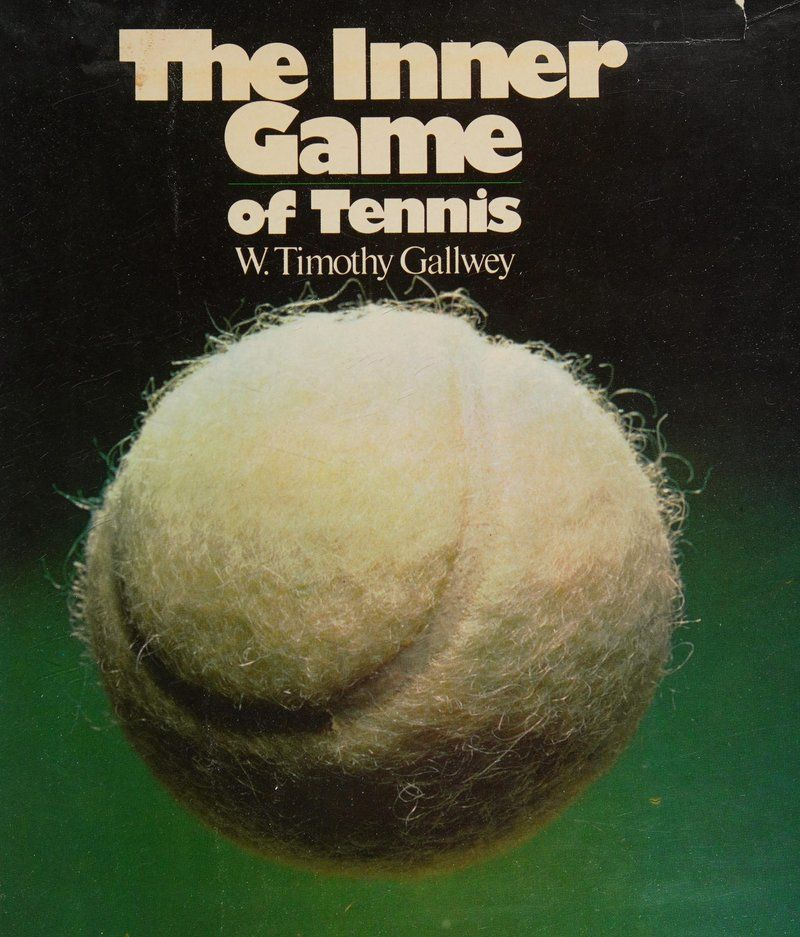
Bản dịch tiếng Việt trọn vẹn tuyệt tác The Inner Game of Tennis của W. Timothy Gallwey — nghệ thuật làm dịu Self 1, tin vào Self 2 và buông bỏ phán xét để chạm tới trạng thái dòng chảy.
Bản dịch Việt ngữ Tác giả: W. Timothy Gallwey
Về bản dịch này. Đây là bản dịch Việt ngữ trọn vẹn cuốn Trò Chơi Nội Tâm Trong Quần Vợt (The Inner Game of Tennis).
Tải bản in: Trò Chơi Nội Tâm Trong Quần Vợt (The Inner Game of Tennis) (PDF).
Bản dịch Việt ngữ này chỉ dùng cho mục đích học tập cá nhân, phi thương mại. Bản quyền tác phẩm gốc thuộc về tác giả và nhà xuất bản.
Video: Adam Savage bàn về The Inner Game of Tennis
Adam Savage (kênh Adam Savage’s Tested) trả lời câu hỏi của hội viên về cách truyền dạy kỹ năng — từ bàn bi-a Brunswick 1910 thời thơ ấu đến lần đầu đọc The Inner Game of Tennis của W. Timothy Gallwey. Ông bàn về học tập qua thân thể (embodied learning), “trí nhớ cơ bắp” và cách bước ra khỏi chính mình khi tiếp thu một kỹ năng vận động — đúng tinh thần Self 1 / Self 2 của cuốn sách này. Xem trên YouTube · 12:11
Chương 1
Suy ngẫm về khía cạnh tinh thần của quần vợt
Vấn đề khiến các tay vợt bối rối nhất không phải là
những người xử lý cách vung vợt thích hợp. Sách và các chuyên gia cung cấp thông tin này rất nhiều. Hầu hết người chơi cũng không phàn nàn quá mức về những hạn chế về thể chất. Lời phàn nàn phổ biến nhất của các vận động viên thể thao qua các thời đại là: “Không phải là tôi không biết phải làm gì, mà là tôi không làm những gì tôi biết!” Những lời phàn nàn phổ biến khác liên tục thu hút sự chú ý của các tay vợt chuyên nghiệp: Tôi chơi khi luyện tập tốt hơn trong trận đấu. Tôi biết chính xác mình đang làm sai điều gì ở cú thuận tay của mình, chỉ là tôi không thể bỏ được thói quen này. Khi tôi thực sự cố gắng hết sức để thực hiện cú đánh theo cách được mô tả trong sách, lần nào tôi cũng đánh trượt. Khi tôi tập trung vào một việc mà lẽ ra tôi phải làm, tôi lại quên mất một việc khác. Mỗi khi tôi tiến gần đến điểm đấu với một tay vợt giỏi, tôi lại lo lắng đến mức mất tập trung. Tôi là kẻ thù tồi tệ nhất của chính mình; Tôi thường tự đánh mình. Hầu hết người chơi của bất kỳ môn thể thao nào đều thường xuyên gặp phải những khó khăn này hoặc những khó khăn tương tự, nhưng không dễ để có được cái nhìn sâu sắc thực tế về cách đối phó với chúng. Người chơi thường bị bỏ lại với những câu cách ngôn nồng nhiệt như “Chà, quần vợt là một trò chơi rất tâm lý và bạn phải phát triển thái độ tinh thần đúng đắn” hoặc “Bạn phải tự tin và có ý chí chiến thắng nếu không bạn sẽ luôn là kẻ thua cuộc.” Nhưng làm thế nào một người có thể “tự tin” hoặc phát triển “thái độ tinh thần đúng đắn”? Những câu hỏi này thường không được trả lời.
THE PROBLEMS WHICH MOST PERPLEX TENNIS PLAYERS ARE NOT those dealing with the proper way to swing a racket. Books and professionals giving this information abound. Nor do most players complain excessively about physical limitations. The most common complaint of sportsmen ringing down the corridors of the ages is, “It’s not that I don’t know what to do, it’s that I don’t do what I know!” Other common complaints that come constantly to the attention of the tennis pro: I play better in practice than during the match. I know exactly what I’m doing wrong on my forehand, I just can’t seem to break the habit. When I’m really trying hard to do the stroke the way it says to in the book, I flub the shot every time. When I concentrate on one thing I’m supposed to be doing, I forget something else. Every time I get near match point against a good player, I get so nervous I lose my concentration. I’m my own worst enemy; I usually beat myself. Most players of any sport run into these or similar difficulties frequently, but it is not so easy to gain practical insight into how to deal with them. The player is often left with such warmed-over aphorisms as “Well, tennis is a very psychological game, and you have to develop the proper mental attitudes” or “You have to be confident and possess the will to win or else you’ll always be a loser.” But how can one “be confident” or develop the “proper mental attitudes”? These questions are usually left unanswered.
Vì vậy, dường như vẫn có chỗ để bình luận về sự cải thiện các quá trình tinh thần giúp chuyển thông tin kỹ thuật về cách đánh bóng thành hành động hiệu quả. Làm thế nào để phát triển các kỹ năng bên trong mà không có kỹ năng đó thì không thể đạt được thành tích cao, là chủ đề của Trò chơi quần vợt nội tâm.
So there seems to be room for comment on the improvement of the mental processes which translate technical information about how to hit a ball into effective action. How to develop the inner skills, without which high performance is impossible, is the subject of The Inner Game of Tennis.
BÀI HỌC TENNIS ĐIỂN HÌNH Hãy tưởng tượng điều gì diễn ra trong đầu của một học sinh háo hức đang học bài từ một vận động viên quần vợt mới cũng háo hức không kém. Giả sử người sinh viên này là một doanh nhân trung niên đang nỗ lực cải thiện vị trí của mình trong bậc thang câu lạc bộ. Người chuyên nghiệp đang đứng trên lưới với một rổ bóng lớn, và hơi không chắc chắn liệu học trò của mình có coi mình xứng đáng với số tiền học hay không, anh ta đang cẩn thận đánh giá từng cú đánh. "Điều đó tốt, nhưng anh đang lăn mặt vợt của mình một chút khi thực hiện cú đánh tiếp theo, anh Weil. Bây giờ hãy chuyển trọng lượng của anh lên bàn chân trước khi anh bước vào bóng... Bây giờ anh đang lấy vợt về quá muộn... Cú đánh sau của anh nên thấp hơn một chút so với cú đánh cuối cùng đó... Thế là xong, tốt hơn nhiều." Chẳng bao lâu, tâm trí ông Weil quay cuồng với sáu suy nghĩ về những gì ông nên làm và mười sáu suy nghĩ về những gì ông không nên làm. Sự cải thiện có vẻ đáng ngờ và rất phức tạp, nhưng cả anh ấy và người chơi chuyên nghiệp đều bị ấn tượng bởi sự phân tích cẩn thận từng cú đánh và khoản phí được sẵn sàng trả khi nhận được lời khuyên “hãy thực hành tất cả những điều này, và cuối cùng bạn sẽ thấy sự cải thiện lớn”.
Imagine what goes on inside the head of an eager student taking a lesson from an equally eager new tennis pro. Suppose that the student is a middleaged businessman bent on improving his position on the club ladder. The pro is standing at the net with a large basket of balls, and being a bit uncertain whether his student is considering him worth the lesson fee, he is carefully evaluating every shot. “That’s good, but you’re rolling your racket face over a little on your follow-through, Mr. Weil. Now shift your weight onto your front foot as you step into the ball… Now you’re taking your racket back too late … Your backswing should be a little lower than on that last shot… That’s it, much better.” Before long, Mr. Weil’s mind is churning with six thoughts about what he should be doing and sixteen thoughts about what he shouldn’t be doing. Improvement seems dubious and very complex, but both he and the pro are impressed by the careful analysis of each stroke and the fee is gladly paid upon receipt of the advice to “practice all this, and eventually you’ll see a big improvement.”
Tôi là một chuyên gia mới, nhưng một ngày nọ, khi tôi đang thư giãn
I TOO ADMIT TO OVERTEACHING as a new pro, but one day when I was in a relaxed mood, I began saying less and noticing more. To my surprise, errors that I saw but didn’t mention were correcting themselves without the student ever knowing he had made them. How were the changes happening? Though I found this interesting, it was a little hard on my ego, which didn’t quite see how it was going to get its due credit for the improvements being made. It was an even greater blow when I realized that sometimes my verbal instructions seemed to decrease the probability of the desired correction occurring.
Thừa nhận việc dạy quá nhiều
tâm trạng, tôi bắt đầu nói ít hơn và để ý nhiều hơn. Thật ngạc nhiên, những lỗi mà tôi thấy nhưng không đề cập đến lại tự sửa mà học sinh không hề biết mình đã mắc phải. Những thay đổi diễn ra như thế nào? Mặc dù tôi thấy điều này thú vị nhưng nó hơi khó đối với cái tôi của tôi, điều đó không hiểu rõ làm thế nào nó sẽ nhận được tín dụng xứng đáng cho những cải tiến đang được thực hiện. Đó còn là một cú sốc lớn hơn khi tôi nhận ra rằng đôi khi những chỉ dẫn bằng lời nói của tôi dường như làm giảm khả năng xảy ra sự điều chỉnh mong muốn. Tất cả các chuyên gia giảng dạy đều biết tôi đang nói về điều gì. Họ đều có những học sinh giống như tôi tên là Dorothy. Tôi sẽ đưa ra cho Dorothy một lời chỉ dẫn nhẹ nhàng, ít áp lực như "Tại sao bạn không thử nâng cú đánh theo lên từ thắt lưng đến ngang vai của bạn? Cú xoáy lên sẽ giữ bóng trong sân." Chắc chắn Dorothy sẽ cố gắng làm theo chỉ dẫn của tôi. Các cơ xung quanh miệng cô ấy sẽ căng ra; lông mày của cô ấy sẽ nhíu lại đầy kiên quyết; các cơ ở cẳng tay cô sẽ căng cứng, khiến cô không thể linh hoạt được; và phần tiếp theo sẽ chỉ cao hơn vài inch. Tại thời điểm này, phản ứng thông thường của chuyên gia bệnh nhân là, "Tốt hơn rồi, Dorothy, nhưng hãy thư giãn đi, đừng cố gắng quá!" Lời khuyên tuy hay nhưng Dorothy không hiểu làm thế nào để “thư giãn” trong khi vẫn cố gắng đánh bóng chính xác. Tại sao Dorothy—hoặc bạn hoặc tôi—phải trải qua cảm giác siết chặt khó xử khi thực hiện một hành động mong muốn mà không gây khó khăn về mặt thể chất? Điều gì xảy ra bên trong đầu từ thời điểm hướng dẫn được đưa ra cho đến khi cú vung vợt hoàn tất? Câu trả lời đầu tiên cho câu hỏi then chốt này đến với tôi vào một khoảnh khắc sáng suốt hiếm hoi sau buổi học với Dorothy: “Dù điều gì đang diễn ra trong đầu cô ấy, nó thật quá đáng! Cô ấy đang cố gắng vung vợt theo cách tôi đã nói với cô ấy đến nỗi cô ấy không thể tập trung vào quả bóng.” Sau đó, tôi tự hứa với mình rằng tôi sẽ cắt giảm số lượng hướng dẫn bằng lời nói. Bài học tiếp theo của tôi ngày hôm đó là với một người mới bắt đầu tên là Paul, người chưa bao giờ cầm vợt. Tôi quyết tâm chỉ cho anh ấy cách chơi với càng ít hướng dẫn càng tốt; Tôi sẽ cố gắng giữ cho đầu óc anh ấy thông thoáng và xem liệu điều đó có tạo ra sự khác biệt hay không. Vì vậy, tôi bắt đầu bằng cách nói với Paul rằng tôi đang thử một điều gì đó mới: Tôi sẽ bỏ qua hoàn toàn những lời giải thích thông thường của mình cho những người mới bắt đầu chơi về cách cầm vợt, cú đánh và động tác chân thích hợp cho cú thuận tay cơ bản. Thay vào đó, tôi định tự mình đánh mười cú thuận tay và tôi muốn anh ấy quan sát cẩn thận, không nghĩ về những gì tôi đang làm mà chỉ cố gắng nắm bắt hình ảnh trực quan của cú thuận tay. Anh ta phải lặp lại hình ảnh đó nhiều lần trong đầu rồi để cơ thể bắt chước. Sau khi tôi đánh được mười cú thuận tay, Paul tưởng tượng mình cũng làm như vậy. Sau đó, khi tôi đặt vợt vào tay anh ấy, trượt nó vào đúng cán vợt, anh ấy nói với tôi, “Tôi nhận thấy điều đầu tiên bạn làm là di chuyển chân của mình”. Tôi đáp lại bằng một tiếng càu nhàu không cam kết và yêu cầu anh ấy để cơ thể mình bắt chước cú thuận tay tốt nhất có thể. Anh ấy thả bóng, thực hiện một cú vung vợt về phía sau hoàn hảo, vung vợt về phía trước, ngang tầm vợt và với sự uyển chuyển tự nhiên, anh ấy đã kết thúc cú vung vợt ở độ cao ngang vai, hoàn hảo cho lần thử đầu tiên của anh ấy! Nhưng chờ đã, đôi chân của anh ấy; họ đã không di chuyển một inch nào so với vị trí sẵn sàng hoàn hảo mà anh ấy đã đảm nhận trước khi lấy lại vợt. Họ bị đóng đinh vào sân. Tôi chỉ vào họ và Paul nói: “Ồ đúng rồi, tôi quên mất họ rồi!” Một yếu tố của cú đánh mà Paul đã cố nhớ lại là điều mà anh ấy đã không làm! Mọi thứ khác đã được hấp thụ và tái tạo mà không cần thốt ra một lời hay đưa ra một chỉ dẫn nào! Tôi bắt đầu học được điều mà tất cả các tay vợt chuyên nghiệp và học viên tennis phải học: hình ảnh tốt hơn lời nói, thể hiện tốt hơn là kể lại, hướng dẫn quá nhiều còn tệ hơn là không có, và việc cố gắng thường tạo ra kết quả tiêu cực. Một câu hỏi làm tôi bối rối: Cố gắng thì có gì sai? Cố gắng quá mức có nghĩa là gì?
All teaching pros know what I’m talking about. They all have students like one of mine named Dorothy. I would give Dorothy a gentle, lowpressured instruction like, “Why don’t you try lifting the follow-through up from your waist to the level of your shoulder? The topspin will keep the ball in the court.” Sure enough, Dorothy would try hard to follow my instructions. The muscles would tense around her mouth; her eyebrows would set in a determined frown; the muscles in her forearm would tighten, making fluidity impossible; and the follow-through would end only a few inches higher. At this point, the stock response of the patient pro is, “That’s better, Dorothy, but relax, don’t try so hard!” The advice is good as far as it goes, but Dorothy does not understand how to “relax” while also trying hard to hit the ball correctly. Why should Dorothy—or you or I—experience an awkward tightening when performing a desired action which is not physically difficult? What happens inside the head between the time the instruction is given and the swing is complete? The first glimmer of an answer to this key question came to me at a moment of rare insight after a lesson with Dorothy: “Whatever’s going on in her head, it’s too damn much! She’s trying so hard to swing the racket the way I told her that she can’t focus on the ball.” Then and there, I promised myself I would cut down on the quantity of verbal instructions. My next lesson that day was with a beginner named Paul who had never held a racket. I was determined to show him how to play using as few instructions as possible; I’d try to keep his mind uncluttered and see if it made a difference. So I started by telling Paul I was trying something new: I was going to skip entirely my usual explanations to beginning players about the proper grip, stroke and footwork for the basic forehand. Instead, I was going to hit ten forehands myself, and I wanted him to watch carefully, not thinking about what I was doing, but simply trying to grasp a visual image of the forehand. He was to repeat the image in his mind several times and then just let his body imitate. After I had hit ten forehands, Paul imagined himself doing the same. Then, as I put the racket into his hand, sliding it into the correct grip, he said to me, “I noticed that the first thing you did was to move your feet.” I replied with a noncommittal grunt and asked him to let his body imitate the forehand as well as it could. He dropped the ball, took a perfect backswing, swung forward, racket level, and with natural fluidity ended the swing at shoulder height, perfect for his first attempt! But wait, his feet; they hadn’t moved an inch from the perfect ready position he had assumed before taking his racket back. They were nailed to the court. I pointed to them, and Paul said, “Oh yeah, I forgot about them!” The one element of the stroke Paul had tried to remember was the one thing he didn’t do! Everything else had been absorbed and reproduced without a word being uttered or an instruction being given! I was beginning to learn what all good pros and students of tennis must learn: that images are better than words, showing better than telling, too much instruction worse than none, and that trying often produces negative results. One question perplexed me: What’s wrong with trying? What does it mean to try too hard?
CHƠI NGOÀI TÂM TRÍ Hãy suy ngẫm về trạng thái tinh thần của một tay vợt được cho là “nóng” hoặc “chơi trong khu vực”. Có phải anh ấy đang nghĩ xem mình nên đánh như thế nào trong mỗi cú đánh? Anh ấy có đang suy nghĩ gì không? Hãy nghe những cụm từ thường được sử dụng để mô tả một tay vợt giỏi nhất của anh ấy: “Anh ấy mất trí rồi”; “Anh ấy đang chơi quá đầu”; “Anh ấy bất tỉnh”; “Anh ấy không biết mình đang làm gì.” Yếu tố chung trong mỗi mô tả này là một phần nào đó của tâm trí không hoạt động nhiều. Các vận động viên trong hầu hết các môn thể thao đều sử dụng những cụm từ tương tự nhau và những người giỏi nhất trong số họ biết rằng thành tích cao nhất của họ không bao giờ đến khi họ nghĩ về nó. Rõ ràng, chơi một cách vô thức không có nghĩa là chơi mà không có ý thức. Điều đó sẽ khá khó khăn! Trên thực tế, một người chơi “mất trí” sẽ nhận thức rõ hơn về quả bóng, mặt sân và khi cần thiết là đối thủ của mình. Nhưng anh ta không ý thức được việc tự hướng dẫn mình rất nhiều, suy nghĩ về cách đánh bóng, cách sửa chữa những sai lầm trong quá khứ hay cách lặp lại những gì mình vừa làm. Anh ta có ý thức nhưng không suy nghĩ, không cố gắng quá mức. Một tay vợt ở trạng thái này biết mình muốn bóng đi đâu, nhưng anh ta không cần phải “cố gắng hết sức” để đưa bóng đến đó. Nó dường như đang xảy ra—và thường với độ chính xác cao hơn mức anh ấy có thể mong đợi. Người chơi dường như đắm chìm trong một dòng hành động đòi hỏi năng lượng của anh ta nhưng mang lại sức mạnh và độ chính xác cao hơn. “Khoảng thời gian nóng bỏng” thường tiếp tục cho đến khi anh ấy bắt đầu nghĩ về nó và cố gắng duy trì nó; ngay khi anh ta cố gắng kiểm soát, anh ta sẽ mất nó.
Reflect on the state of mind of a player who is said to be “hot” or “playing in the zone.” Is he thinking about how he should hit each shot? Is he thinking at all? Listen to the phrases commonly used to describe a player at his best: “He’s out of his mind”; “He’s playing over his head”; “He’s unconscious”; “He doesn’t know what he’s doing.” The common factor in each of these descriptions is that some part of the mind is not so active. Athletes in most sports use similar phrases, and the best of them know that their peak performance never comes when they’re thinking about it. Clearly, to play unconsciously does not mean to play without consciousness. That would be quite difficult! In fact, someone playing “out of his mind” is more aware of the ball, the court and, when necessary, his opponent. But he is not aware of giving himself a lot of instructions, thinking about how to hit the ball, how to correct past mistakes or how to repeat what he just did. He is conscious, but not thinking, not over-trying. A player in this state knows where he wants the ball to go, but he doesn’t have to “try hard” to send it there. It just seems to happen—and often with more accuracy than he could have hoped for. The player seems to be immersed in a flow of action which requires his energy, yet results in greater power and accuracy. The “hot streak” usually continues until he starts thinking about it and tries to maintain it; as soon as he attempts to exercise control, he loses it.
Để kiểm tra lý thuyết này là một vấn đề đơn giản, nếu bạn không bận tâm đến một chút khéo léo trong trò chơi. Lần tới khi đối thủ của bạn đang có một pha giao bóng nóng bỏng, bạn chỉ cần hỏi anh ta khi bạn đổi sân, "Nói đi, George, điều gì khiến bạn làm khác biệt đến vậy khiến hôm nay cú thuận tay của bạn trở nên tốt như vậy?" Nếu anh ta cắn câu—và 95% sẽ làm—và bắt đầu nghĩ về cách anh ta vung vợt, cho bạn biết anh ta thực sự đón bóng ở phía trước như thế nào, giữ cổ tay chắc chắn và theo đuổi tốt hơn, thì chuỗi trận của anh ta chắc chắn sẽ kết thúc. Anh ấy sẽ mất đi thời gian và sự trôi chảy khi cố gắng lặp lại những gì anh ấy vừa nói với bạn rằng anh ấy đã làm rất tốt. Nhưng liệu người ta có thể học cách cố ý chơi trò “mất trí” không? Làm sao bạn có thể vô ý thức một cách có ý thức được? Về mặt thuật ngữ nghe có vẻ mâu thuẫn; nhưng trạng thái này có thể đạt được. Có lẽ cách tốt hơn để mô tả tay vợt “bất tỉnh” là nói rằng tâm trí của anh ta quá tập trung, quá tập trung đến mức nó tĩnh lặng. Nó trở thành một với những gì cơ thể đang làm và các chức năng vô thức hoặc tự động đang hoạt động mà không bị suy nghĩ can thiệp. Tâm trí tập trung không có chỗ để suy nghĩ xem cơ thể đang hoạt động tốt như thế nào, càng không có chỗ để suy nghĩ về cách thực hiện. Khi một tay vợt ở trạng thái này, sẽ có rất ít yếu tố cản trở việc anh ta thể hiện đầy đủ tiềm năng biểu diễn, học hỏi và tận hưởng. Khả năng tiếp cận trạng thái này là mục tiêu của Inner Game. Sự phát triển các kỹ năng bên trong là cần thiết, nhưng điều thú vị cần lưu ý là nếu trong khi học quần vợt, bạn bắt đầu học cách tập trung sự chú ý và cách tin tưởng vào bản thân, thì bạn đã học được điều gì đó có giá trị hơn nhiều so với cách đánh một cú trái tay mạnh mẽ. Cú trái tay chỉ có thể được sử dụng để tạo lợi thế trên sân tennis, nhưng kỹ năng làm chủ nghệ thuật tập trung dễ dàng là vô giá trong bất cứ điều gì bạn quyết tâm thực hiện.
To test this theory is a simple matter, if you don’t mind a little underhanded gamesmanship. The next time your opponent is having a hot streak, simply ask him as you switch courts, “Say, George, what are you doing so differently that’s making your forehand so good today?” If he takes the bait—and 95 percent will—and begins to think about how he’s swinging, telling you how he’s really meeting the ball out in front, keeping his wrist firm and following through better, his streak invariably will end. He will lose his timing and fluidity as he tries to repeat what he has just told you he was doing so well. But can one learn to play “out of his mind” on purpose? How can you be consciously unconscious? It sounds like a contradiction in terms; yet this state can be achieved. Perhaps a better way to describe the player who is “unconscious” is by saying that his mind is so concentrated, so focused, that it is still. It becomes one with what the body is doing, and the unconscious or automatic functions are working without interference from thoughts. The concentrated mind has no room for thinking how well the body is doing, much less of the how-to’s of the doing. When a player is in this state, there is little to interfere with the full expression of his potential to perform, learn and enjoy.
Chương 2
Khám phá hai cái tôi
Một bước đột phá lớn trong nỗ lực tìm hiểu
nghệ thuật tập trung thoải mái xuất hiện khi trong khi giảng dạy, tôi lại bắt đầu chú ý đến những gì đang diễn ra trước mắt mình. Hãy lắng nghe cách các tay vợt nói chuyện với chính mình trên sân: “Nào Tom, hãy chạm bóng trước mặt anh”. Chúng tôi quan tâm đến những gì đang diễn ra trong tâm trí người chơi. Ai đang nói với ai điều gì? Hầu hết các tay vợt đều nói chuyện một mình trên sân mọi lúc. “Đứng dậy đón bóng.” “Giữ nó ở phía trái tay của anh ấy.” “Hãy để mắt tới quả bóng.” “Hãy uốn cong đầu gối của bạn.” Các lệnh là vô tận. Đối với một số người, điều đó giống như nghe một đoạn băng ghi âm bài học cuối cùng phát ra trong đầu họ. Sau đó, sau khi bắn xong, một ý nghĩ khác chợt lóe lên trong đầu bạn và có thể được diễn đạt như sau: “Đồ bò vụng về, bà của ngươi có thể chơi hay hơn!” Một ngày nọ, tôi tự hỏi mình một câu hỏi quan trọng – Ai đang nói chuyện với ai? Ai mắng và ai bị mắng? Hầu hết mọi người đều nói: “Tôi đang nói chuyện với chính mình”. Nhưng cái “tôi” này là ai và ai là “chính tôi”? Rõ ràng, “tôi” và “bản thân tôi” là những thực thể riêng biệt nếu không sẽ không có cuộc trò chuyện nào, vì vậy người ta có thể nói rằng trong mỗi người chơi có hai “cái tôi”. Một, cái “tôi” dường như đưa ra những chỉ dẫn; người còn lại, “chính tôi”, dường như thực hiện hành động đó. Sau đó “tôi” quay trở lại với sự đánh giá về hành động. Để rõ ràng hơn, chúng ta hãy gọi Self 1 là “người kể chuyện” và Self 2 “người làm”. Bây giờ chúng ta đã sẵn sàng cho định đề chính đầu tiên của Inner Game: trong mỗi người chơi, loại mối quan hệ tồn tại giữa Self 1 và Self 2 là yếu tố chính quyết định khả năng của một người trong việc biến kiến thức về kỹ thuật của mình thành hành động hiệu quả. Nói cách khác, chìa khóa để chơi quần vợt giỏi hơn - hay bất cứ thứ gì tốt hơn - nằm ở việc cải thiện mối quan hệ giữa người giao dịch có ý thức, Bản ngã 1 và khả năng tự nhiên của Self 2.
The ability to approach this state is the goal of the Inner Game. The development of inner skills is required, but it is interesting to note that if, while learning tennis, you begin to learn how to focus your attention and how to trust in yourself, you have learned something far more valuable than how to hit a forceful backhand. The backhand can be used to advantage only on a tennis court, but the skill of mastering the art of effortless concentration is invaluable in whatever you set your mind to. The Discovery of the Two Selves A MAJOR BREAKTHROUGH IN MY ATTEMPTS TO UNDERSTAND THE art of relaxed concentration came when, while teaching, I again began to notice what was taking place before my eyes. Listen to the way players talk to themselves on the court: “Come on, Tom, meet the ball in front of you.” We’re interested in what is happening inside the player’s mind. Who is telling whom what? Most players are talking to themselves on the court all the time. “Get up for the ball.” “Keep it to his backhand.” “Keep your eyes on the ball.” “Bend your knees.” The commands are endless. For some, it’s like hearing a tape recording of the last lesson playing inside their head. Then, after the shot is made, another thought flashes through the mind and might be expressed as follows: “You clumsy ox, your grandmother could play better!” One day I asked myself an important question—Who was talking to whom? Who was scolding and who being scolded? “I’m talking to myself,” say most people. But just who is this “I” and who the “myself”? Obviously, the “I” and the “myself” are separate entities or there would be no conversation, so one could say that within each player there are two “selves.” One, the “I,” seems to give instructions; the other, “myself,” seems to perform the action. Then “I” returns with an evaluation of the action. For clarity let’s call the “teller” Self 1 and the “doer” Self 2. Now we are ready for the first major postulate of the Inner Game: within each player the kind of relationship that exists between Self 1 and Self 2 is the prime factor in determining one’s ability to translate his knowledge of technique into effective action. In other words, the key to better tennis—or better anything—lies in improving the relationship between the conscious teller, Self 1, and the natural capabilities of Self 2.
MỐI QUAN HỆ ĐẶC BIỆT GIỮA BẢN THÂN 1 VÀ BẢN THÂN 2 Hãy tưởng tượng rằng thay vì là những bộ phận của cùng một người, Self 1 (người nói) và Self 2 (người làm) là hai con người riêng biệt. Bạn sẽ mô tả mối quan hệ của họ như thế nào sau khi chứng kiến cuộc trò chuyện sau đây giữa họ? Người chơi trên sân đang cố gắng cải thiện cú đánh. “Được rồi, chết tiệt, giữ chặt cái cổ tay ngu ngốc của em đi,” anh ra lệnh. Sau đó, khi hết quả bóng này đến quả bóng khác bay qua lưới, Self 1 nhắc nhở Self 2, "Hãy giữ vững, giữ vững. Giữ vững!" Đơn điệu? Hãy nghĩ xem Self 2 phải cảm thấy thế nào! Có vẻ như Self 1 cho rằng Self 2 nghe kém, trí nhớ kém hoặc ngu ngốc. Tất nhiên, sự thật là Cái tôi thứ 2, bao gồm tiềm thức và hệ thần kinh, nghe thấy mọi thứ, không bao giờ quên bất cứ điều gì và không hề ngu ngốc. Sau khi đánh bóng chắc chắn một lần, nó sẽ biết mãi cơ nào cần co lại để thực hiện lại. Đó là bản chất của nó. Và điều gì đang xảy ra trong chính cú đánh đó? Nếu nhìn kỹ vào khuôn mặt của tay vợt, bạn sẽ thấy cơ má của anh ta đang căng ra và môi anh ta mím lại để cố gắng tập trung. Nhưng cơ mặt căng không bắt buộc phải đánh trái tay và chúng cũng không giúp tập trung. Ai đang khởi xướng nỗ lực đó? Tất nhiên là bản thân 1. Nhưng tại sao? Lẽ ra anh ấy phải là người nói chứ không phải người làm, nhưng có vẻ như anh ấy không thực sự tin tưởng Self 2 sẽ thực hiện công việc nếu không anh ấy sẽ không phải tự mình làm tất cả công việc. Đây chính là mấu chốt của vấn đề: Self 1 không tin tưởng Self 2, mặc dù nó thể hiện tất cả tiềm năng mà bạn đã phát triển cho đến thời điểm đó và có khả năng kiểm soát hệ thống cơ bắp tốt hơn nhiều so với Self 1. Hãy quay lại với người chơi của chúng ta. Các cơ của anh ấy căng ra khi phải gắng sức quá mức, tiếp xúc với quả bóng, có một cú lắc nhẹ ở cổ tay và quả bóng chạm vào hàng rào phía sau. “Đồ khốn, bạn sẽ không bao giờ học được cách đánh trái tay,” Self 1 phàn nàn. Bằng cách suy nghĩ quá nhiều và cố gắng quá mức, Bản ngã 1 đã tạo ra sự căng thẳng và xung đột cơ bắp trong cơ thể. Anh ta phải chịu trách nhiệm về lỗi lầm đó, nhưng anh ta đổ lỗi cho Self 2 và sau đó, bằng cách lên án nó hơn nữa, làm suy yếu niềm tin của chính anh ta vào Self 2. Kết quả là cơn cú đánh ngày càng tồi tệ và sự thất vọng ngày càng tăng.
Imagine that instead of being parts of the same person, Self 1 (teller) and Self 2 (doer) are two separate persons. How would you characterize their relationship after witnessing the following conversation between them? The player on the court is trying to make a stroke improvement. “Okay, dammit, keep your stupid wrist firm,” he orders. Then as ball after ball comes over the net, Self 1 reminds Self 2, “Keep it firm. Keep it firm. Keep it firm!” Monotonous? Think how Self 2 must feel! It seems as though Self 1 thinks Self 2 doesn’t hear well, or has a short memory, or is stupid. The truth is, of course, that Self 2, which includes the unconscious mind and nervous system, hears everything, never forgets anything, and is anything but stupid. After hitting the ball firmly once, it knows forever which muscles to contract to do it again. That’s its nature. And what’s going on during the hit itself? If you look closely at the face of the player, you will see that his cheek muscles are tightening and his lips are pursed in effort and attempted concentration. But tightened face muscles aren’t required to hit the backhand, nor do they help concentration. Who’s initiating that effort? Self 1, of course. But why? He’s supposed to be the teller, not the doer, but it seems he doesn’t really trust Self 2 to do the job or else he wouldn’t have to do all the work himself. This is the nub of the problem: Self 1 does not trust Self 2, even though it embodies all the potential you have developed up to that moment and is far more competent to control the muscle system than Self 1. Back to our player. His muscles tense in over-effort, contact is made with the ball, there is a slight flick of the wrist, and the ball hits the back fence. “You bum, you’ll never learn how to hit a backhand,” Self 1 complains. By thinking too much and trying too hard, Self 1 has produced tension and muscle conflict in the body. He is responsible for the error, but he heaps the blame on Self 2 and then, by condemning it further, undermines his own confidence in Self 2. As a result the stroke grows worse and frustration builds.
“CỐ GẮNG CỐ GẮNG”: MỘT ĐỨC ĐẠO ĐÁNG ĐÁNH GIÁ Chẳng phải từ khi còn nhỏ chúng ta đã được dạy rằng chúng ta sẽ không bao giờ đạt được bất cứ điều gì trừ khi chúng ta cố gắng hết sức sao? Vậy điều đó có nghĩa là gì khi chúng ta quan sát một người nào đó đang cố gắng quá mức? Tốt nhất là nên thử mức độ trung bình? Được trang bị khái niệm về hai cái tôi, hãy xem liệu bạn có thể tự mình trả lời câu hỏi có vẻ nghịch lý này sau khi đọc hình minh họa sau không. Một ngày nọ, khi tôi đang băn khoăn về những vấn đề này, một bà nội trợ rất vui vẻ và hấp dẫn đến gặp tôi để học và phàn nàn rằng cô ấy sắp bỏ cuộc chơi quần vợt. Cô ấy thực sự rất chán nản vì như cô ấy nói, "Tôi thực sự không phối hợp tốt chút nào. Tôi muốn đủ tốt để chồng tôi rủ tôi chơi đôi nam nữ với anh ấy mà không khiến nó trở thành nghĩa vụ của gia đình." Khi tôi hỏi cô ấy vấn đề là gì, cô ấy nói: “Có một điều, tôi không thể đánh quả bóng trên dây; phần lớn thời gian tôi đánh nó vào khung.” “Chúng ta cùng xem nhé,” tôi nói, với tay vào giỏ bóng của mình. Tôi đánh mười cú thuận tay cao ngang thắt lưng của cô ấy đủ gần để cô ấy không phải di chuyển. Tôi rất ngạc nhiên khi cô ấy đánh tám trong số mười quả bóng trực tiếp vào khung hoặc một phần trên dây, một phần trên khung. Tuy nhiên cú đánh của cô ấy là đủ tốt. Tôi đã rất bối rối. Cô ấy không hề phóng đại vấn đề của mình. Tôi tự hỏi liệu đó có phải là thị lực của cô ấy không, nhưng cô ấy quả quyết với tôi rằng đôi mắt của cô ấy rất hoàn hảo. Vì vậy tôi nói với Joan rằng chúng tôi sẽ thử một vài thí nghiệm. Đầu tiên tôi yêu cầu cô ấy cố gắng hết sức để đánh bóng vào giữa vợt. Tôi đoán rằng điều này có thể tạo ra kết quả thậm chí còn tồi tệ hơn, điều này chứng tỏ quan điểm của tôi về việc cố gắng quá mức. Nhưng những lý thuyết mới không phải lúc nào cũng thành công; Ngoài ra, cần rất nhiều tài năng để đánh được tám trong số mười quả bóng trên khung vợt hẹp. Lần này, cô chỉ đánh được sáu quả bóng vào khung. Tiếp theo, tôi bảo cô ấy cố gắng đánh những quả bóng vào khung. Lần này cô ấy chỉ đánh trúng bốn quả vào khung và tiếp xúc tốt với sáu quả. Cô ấy hơi ngạc nhiên nhưng vẫn tận dụng cơ hội để đánh gục Self 2 của mình và nói: "Ồ, tôi không bao giờ có thể làm được bất cứ điều gì tôi cố gắng làm!" Thực ra, cô đã đến gần một sự thật quan trọng. Rõ ràng là cách cố gắng của cô ấy không hữu ích. Vì vậy, trước khi đánh loạt bóng tiếp theo, tôi hỏi Joan, "Lần này tôi muốn bạn tập trung tâm trí vào các đường nối của quả bóng. Đừng nghĩ đến việc tiếp xúc. Trên thực tế, đừng cố gắng đánh bóng chút nào. Chỉ cần để vợt của bạn tiếp xúc với quả bóng ở nơi nó muốn và chúng ta sẽ xem điều gì sẽ xảy ra." Joan trông thoải mái hơn và tiếp tục đánh chín trong số mười quả bóng vào tâm điểm! Chỉ có quả bóng cuối cùng mới lọt vào khung thành. Tôi hỏi cô ấy liệu cô ấy có nhận thức được điều gì đang diễn ra trong đầu mình khi cô ấy vung quả bóng cuối cùng không. “Chắc chắn rồi,” cô ấy trả lời với giọng du dương, “tôi đang nghĩ rốt cuộc tôi có thể trở thành một vận động viên quần vợt.” Cô ấy đã đúng. Joan bắt đầu cảm nhận được sự khác biệt giữa “cố gắng hết sức” năng lượng của Self 1 và “nỗ lực” năng lượng mà Self 2 sử dụng để thực hiện công việc cần thiết. Trong loạt bóng cuối cùng, Self 1 hoàn toàn tập trung vào việc quan sát các đường nối của quả bóng. Kết quả là Self 2 đã có thể tự làm việc của mình mà không gặp trở ngại nào và nó tỏ ra khá giỏi trong việc đó. Ngay cả Self 1 cũng bắt đầu nhận ra tài năng của Self 2; cô ấy đang tập hợp họ lại với nhau. Kết hợp tinh thần trong quần vợt liên quan đến việc học một số kỹ năng nội tại: 1) học cách có được bức tranh rõ ràng nhất có thể về kết quả mong muốn của bạn; 2) học cách tin tưởng Self 2 sẽ thể hiện tốt nhất và học hỏi từ cả thành công lẫn thất bại; và 3) học cách nhìn “không phán xét” - nghĩa là, nhìn điều gì đang xảy ra thay vì chỉ để ý xem nó đang diễn ra tốt hay xấu như thế nào. Điều này khắc phục được tình trạng “cố gắng quá mức”. Tất cả những kỹ năng này là phụ trợ cho kỹ năng bậc thầy, nếu không có kỹ năng đó thì không đạt được điều gì có giá trị: nghệ thuật tập trung thoải mái. Trò chơi quần vợt nội tâm tiếp theo sẽ khám phá cách học những kỹ năng này, sử dụng quần vợt làm phương tiện.
Haven’t we been told since childhood that we’re never going to amount to anything unless we try hard? So what does it mean when we observe someone who is trying too hard? Is it best to try medium hard? Equipped with the concept of the two selves, see if you can answer this seeming paradox for yourself after reading the following illustration. One day while I was wondering about these matters, a very cheery and attractive housewife came to me for a lesson complaining that she was about to give up the game of tennis. She was really very discouraged because, as she said, “I’m really not well coordinated at all. I want to get good enough that my husband will ask me to play mixed doubles with him without making it sound like a family obligation.” When I asked her what the problem seemed to be, she said, “For one thing, I can’t hit the ball on the strings; most of the time I hit it on the frame.” “Let’s take a look,” I said, reaching into my basket of balls. I hit her ten waist-high forehands near enough so that she didn’t have to move for them. I was surprised that she hit eight out of ten balls either directly on the frame or partly on the strings, partly on the frame. Yet her stroke was good enough. I was puzzled. She hadn’t been exaggerating her problem. I wondered if it was her eyesight, but she assured me that her eyes were perfect. So I told Joan we’d try a few experiments. First I asked her to try very hard to hit the ball on the center of the racket. I was guessing that this might produce even worse results, which would prove my point about trying too hard. But new theories don’t always pan out; besides, it takes a lot of talent to hit eight out of ten balls on the narrow frame of a racket. This time, she managed to hit only six balls on the frame. Next, I told her to try to hit the balls on the frame. This time she hit only four on the frame and made good contact with six. She was a bit surprised, but took the chance to give her Self 2 a knock, saying, “Oh, I can never do anything I try to!” Actually, she was close to an important truth. It was becoming clear that her way of trying wasn’t helpful. So before hitting the next set of balls, I asked Joan, “This time I want you to focus your mind on the seams of the ball. Don’t think about making contact. In fact, don’t try to hit the ball at all. Just let your racket contact the ball where it wants to, and we’ll see what happens.” Joan looked more relaxed, and proceeded to hit nine out of ten balls dead center! Only the last ball caught the frame. I asked her if she was aware of what was going through her mind as she swung at the last ball. “Sure,” she replied with a lilt in her voice, “I was thinking I might make a tennis player after all.” She was right. Joan was beginning to sense the difference between “trying hard,” the energy of Self 1, and “effort,” the energy used by Self 2, to do the work necessary. During the last set of balls, Self 1 was fully occupied in watching the seams of the ball. As a result, Self 2 was able to do its own thing unimpaired, and it proved to be pretty good at it. Even Self 1 was starting to recognize the talents of 2; she was getting them together. Getting it together mentally in tennis involves the learning of several internal skills: 1) learning how to get the clearest possible picture of your desired outcomes; 2) learning how to trust Self 2 to perform at its best and learn from both successes and failures; and 3) learning to see “nonjudgmentally”—that is, to see what is happening rather than merely noticing how well or how badly it is happening. This overcomes “trying too hard.” All these skills are subsidiary to the master skill, without which nothing of value is ever achieved: the art of relaxed concentration.
Chương 3
Làm dịu Self 1
Chúng ta đã đi tới một điểm mấu chốt: chính sự “suy nghĩ” không ngừng
hoạt động của Self 1, cái tôi-tâm trí, gây ra sự can thiệp vào khả năng tự nhiên của Self 2. Sự hòa hợp giữa hai cái tôi tồn tại khi tâm trí này yên tĩnh và tập trung. Chỉ khi đó mới có thể đạt được hiệu suất cao nhất. Khi một người chơi quần vợt ở “trong khu vực”, anh ta không nghĩ đến việc đánh bóng như thế nào, khi nào hoặc thậm chí ở đâu. Anh ấy không cố gắng đánh bóng, và sau cú sút, anh ấy không nghĩ về việc mình đã tiếp xúc tốt hay tệ như thế nào. Quả bóng dường như được đánh qua một quá trình không cần phải suy nghĩ. Có thể có nhận thức về hình ảnh, âm thanh và cảm giác của quả bóng, thậm chí cả tình huống chiến thuật, nhưng tay vợt dường như chỉ biết mà không cần suy nghĩ phải làm gì. Hãy nghe D. T. Suzuki, một thiền sư nổi tiếng, mô tả tác động của tâm trí bản ngã đối với môn bắn cung trong lời nói đầu cuốn Thiền trong nghệ thuật bắn cung: Ngay khi chúng ta suy ngẫm, cân nhắc và khái niệm hóa, vô thức ban đầu sẽ mất đi và một ý nghĩ can thiệp vào. … Mũi tên tuột khỏi dây nhưng không bay thẳng tới mục tiêu, mục tiêu cũng không đứng yên tại chỗ. Tính toán, đó là tính toán sai lầm, đặt ra…. Con người là cây sậy biết suy nghĩ nhưng những công việc vĩ đại của con người chỉ được thực hiện khi con người không tính toán và suy nghĩ. “Tính trẻ con” phải được khôi phục…. Có lẽ vì thế mà người ta nói thơ hay được sinh ra trong im lặng. Âm nhạc và nghệ thuật tuyệt vời được cho là nảy sinh từ sâu thẳm tĩnh lặng của vô thức, và những biểu hiện thực sự của tình yêu được cho là đến từ nguồn gốc nằm bên dưới lời nói và suy nghĩ. Đó là với những nỗ lực lớn nhất trong thể thao; chúng đến khi tâm trí tĩnh lặng như mặt hồ thủy tinh. Những khoảnh khắc như vậy được nhà tâm lý học nhân văn, Tiến sĩ Abraham Maslow gọi là “trải nghiệm đỉnh cao”. Nghiên cứu những đặc điểm chung của những người có những trải nghiệm như vậy, ông đưa ra những cụm từ mô tả sau: “Anh ấy cảm thấy hòa nhập hơn” [hai bản thân là một], “cảm thấy hòa làm một với trải nghiệm”, “tương đối vô ngã” [tâm trí tĩnh lặng], “cảm thấy ở đỉnh cao sức mạnh của mình”, “hoạt động đầy đủ”, “đi đúng hướng”, “không cần nỗ lực”, “không bị cản trở, ức chế, sợ hãi, nghi ngờ, kiểm soát, dè dặt, tự phê bình, thận trọng”, “anh ấy tự phát và sáng tạo hơn”. “hầu hết là ở đây bây giờ,” “là không nỗ lực, không cần thiết, không mong muốn… anh ấy chỉ hiện hữu thôi.” Nếu bạn suy ngẫm về những khoảnh khắc hay trải nghiệm đỉnh cao nhất của chính mình, rất có thể bạn sẽ nhớ lại những cảm giác mà những cụm từ này mô tả. Có lẽ bạn cũng sẽ nhớ về chúng như những khoảnh khắc vô cùng vui sướng, thậm chí là ngây ngất. Trong những trải nghiệm như vậy, tâm trí không hành động như một thực thể riêng biệt bảo bạn nên làm gì hoặc chỉ trích cách bạn làm điều đó. Nó yên tĩnh; bạn “cùng nhau” và hành động trôi chảy tự do như một dòng sông. Khi điều này xảy ra trên sân quần vợt, chúng ta tập trung mà không cố gắng tập trung. Chúng ta cảm thấy tự phát và cảnh giác. Chúng ta có một sự đảm bảo bên trong rằng chúng ta có thể làm những gì cần phải làm mà không cần phải “cố gắng hết sức”. Chúng ta chỉ đơn giản biết hành động sẽ đến và khi nó xảy ra, chúng ta không cảm thấy muốn nhận công; đúng hơn, chúng ta cảm thấy may mắn, “ân sủng”. Như Suzuki nói, chúng ta trở nên “trẻ con”. Hình ảnh hiện lên trong tâm trí tôi là chuyển động cân bằng của một con mèo đang rình rập một con chim. Không cần nỗ lực cảnh giác, anh cúi xuống, tập trung các cơ bắp thư giãn để chuẩn bị cho mùa xuân. Không nghĩ đến việc khi nào nên nhảy, cũng như không nghĩ đến việc mình sẽ đẩy hai chân sau ra sao để đạt được khoảng cách thích hợp, tâm trí của anh ta vẫn tĩnh lặng và hoàn toàn tập trung vào con mồi. Không có suy nghĩ nào lóe lên trong ý thức của anh ta về khả năng hoặc hậu quả của việc đánh mất mục tiêu của mình. Anh ta chỉ nhìn thấy con chim. Đột nhiên con chim cất cánh; cùng lúc đó, con mèo nhảy lên. Với sự đoán trước hoàn hảo, anh ta chặn bữa tối của mình cách mặt đất hai feet. Hành động được thực hiện một cách hoàn hảo, thiếu suy nghĩ, và sau đó, không hề tự chúc mừng mình, chỉ là phần thưởng vốn có trong hành động của anh ta: con chim trong miệng. Trong những khoảnh khắc hiếm hoi, người chơi quần vợt tiếp cận sự tự phát thiếu suy nghĩ của con báo. Những khoảnh khắc này dường như xảy ra thường xuyên nhất khi các tay vợt đang đánh vô-lê qua lại trên lưới. Thông thường, việc trao đổi các cú đánh trong khoảng thời gian ngắn như vậy diễn ra nhanh đến mức cần phải hành động nhanh hơn suy nghĩ. Những khoảnh khắc này thật phấn khích và người chơi thường ngạc nhiên khi thấy rằng họ có những vị trí hoàn hảo trước những cú đánh mà họ thậm chí không mong đợi sẽ đạt được. Di chuyển nhanh hơn họ nghĩ, họ không có thời gian để lập kế hoạch; cú đánh hoàn hảo vừa đến. Và cảm thấy rằng họ không cố tình thực hiện cú đánh, họ thường gọi đó là may mắn; nhưng nếu điều đó xảy ra nhiều lần, người ta bắt đầu tin tưởng vào bản thân và cảm thấy tự tin sâu sắc. Nói tóm lại, “kết hợp được” đòi hỏi đầu óc phải chậm lại. Làm dịu tâm trí có nghĩa là ít suy nghĩ, tính toán, phán xét, lo lắng, sợ hãi, hy vọng, cố gắng, hối tiếc, kiểm soát, bồn chồn hoặc mất tập trung. Tâm trí tĩnh lặng khi nó hoàn toàn ở đây và bây giờ trong sự đồng nhất hoàn hảo với hành động và người thực hiện. Mục đích của Inner Game là tăng tần suất và thời lượng của những khoảnh khắc này, giúp tâm trí tĩnh lặng dần dần và qua đó nhận ra sự mở rộng liên tục khả năng học hỏi và thực hiện của chúng ta. Tại thời điểm này, câu hỏi được đặt ra một cách tự nhiên: “Làm thế nào tôi có thể khiến Self 1 im lặng trên sân tennis?” Để thử nghiệm, người đọc có thể muốn đặt cuốn sách này xuống trong một phút và cố gắng ngừng suy nghĩ. Hãy xem bạn có thể duy trì sự thiếu suy nghĩ trong bao lâu. Một phút? Mười giây? Rất có thể bạn cảm thấy khó khăn, có lẽ là không thể, để tĩnh lặng hoàn toàn tâm trí. Suy nghĩ này dẫn đến suy nghĩ khác, rồi đến suy nghĩ khác, v.v. Đối với hầu hết chúng ta, việc làm dịu tâm trí là một quá trình dần dần liên quan đến việc học một số kỹ năng bên trong. Những kỹ năng bên trong này thực sự là nghệ thuật quên đi những thói quen tinh thần đã hình thành từ khi chúng ta còn nhỏ. Kỹ năng đầu tiên cần học là nghệ thuật từ bỏ khuynh hướng đánh giá bản thân và hành động của chúng ta là tốt hay xấu. Buông bỏ quá trình phán xét là chìa khóa cơ bản của Inner Game; ý nghĩa của nó sẽ hiện rõ khi bạn đọc phần còn lại của chương này. Khi chúng ta không học cách phán xét, chúng ta có thể chơi một cách tập trung và tự phát.
The Inner Game of Tennis will next explore a way to learn these skills, using tennis as a medium. WE HAVE ARRIVED AT A KEY POINT: IT IS THE CONSTANT “THINKING” activity of Self 1, the ego-mind, which causes interference with the natural capabilities of Self 2. Harmony between the two selves exists when this mind is quiet and focused. Only then can peak performance be reached. When a tennis player is “in the zone,” he’s not thinking about how, when or even where to hit the ball. He’s not trying to hit the ball, and after the shot he doesn’t think about how badly or how well he made contact. The ball seems to get hit through a process which doesn’t require thought. There may be an awareness of the sight, sound and feel of the ball, and even of the tactical situation, but the player just seems to know without thinking what to do. Listen to how D. T. Suzuki, a renowned Zen master, describes the effects of the ego-mind on archery in his foreword to Zen in the Art of Archery: As soon as we reflect, deliberate, and conceptualize, the original unconsciousness is lost and a thought interferes. … The arrow is off the string but does not fly straight to the target, nor does the target stand where it is. Calculation, which is miscalculation, sets Man is a thinking reed but his great works are done when he is not calculating and thinking. “Childlikeness” has to be restored…. Perhaps this is why it is said that great poetry is born in silence. Great music and art are said to arise from the quiet depths of the unconscious, and true expressions of love are said to come from a source which lies beneath words and thoughts. So it is with the greatest efforts in sports; they come when the mind is as still as a glass lake. Such moments have been called “peak experiences” by the humanistic psychologist Dr. Abraham Maslow. Researching the common characteristics of persons having such experiences, he reports the following descriptive phrases: “He feels more integrated” [the two selves are one], “feels at one with the experience,” “is relatively egoless” [quiet mind], “feels at the peak of his powers,” “fully functioning,” “is in the groove,” “effortless,” “free of blocks, inhibitions, cautions, fears, doubts, controls, reservations, self-criticisms, brakes,” “he is spontaneous and more creative,” “is most here-now,” “is non-striving, non-needing, non-wishing … he just is.” If you reflect upon your own highest moments or peak experiences, it is likely that you will recall feelings that these phrases describe. You will probably also remember them as moments of great pleasure, even ecstasy. During such experiences, the mind does not act like a separate entity telling you what you should do or criticizing how you do it. It is quiet; you are “together,” and the action flows as free as a river. When this happens on the tennis court, we are focused without trying to concentrate. We feel spontaneous and alert. We have an inner assurance that we can do what needs to be done, without having to “try hard.” We simply know the action will come, and when it does, we don’t feel like taking credit; rather, we feel fortunate, “graced.” As Suzuki says, we become “childlike.” The image comes to my mind of the balanced movement of a cat stalking a bird. Effortlessly alert, he crouches, gathering his relaxed muscles for the spring. Not thinking about when to jump, nor how he will push off with his hind legs to attain the proper distance, his mind is still and perfectly concentrated on his prey. No thought flashes into his consciousness of the possibility or consequences of missing his mark. He sees only bird. Suddenly the bird takes off; at the same instant, the cat leaps. With perfect anticipation he intercepts his dinner two feet off the ground. Perfectly, thoughtlessly executed action, and afterward, no self-congratulations, just the reward inherent in his action: the bird in the mouth. In rare moments, tennis players approach the unthinking spontaneity of the leopard. These moments seem to occur most frequently when players are volleying back and forth at the net. Often the exchange of shots at such short quarters is so rapid that action faster than thought is required. These moments are exhilarating, and the players are often amazed to find that they make perfect placements against shots they didn’t even expect to reach. Moving more quickly than they thought they could, they have no time to plan; the perfect shot just comes. And feeling that they didn’t execute the shot deliberately, they often call it luck; but if it happens repeatedly, one begins to trust oneself and feel a deep sense of confidence. In short, “getting it together” requires slowing the mind. Quieting the mind means less thinking, calculating, judging, worrying, fearing, hoping, trying, regretting, controlling, jittering or distracting. The mind is still when it is totally here and now in perfect oneness with the action and the actor. It is the purpose of the Inner Game to increase the frequency and the duration of these moments, quieting the mind by degrees and realizing thereby a continual expansion of our capacity to learn and perform. At this point the question naturally arises: “How can I quiet Self 1 on the tennis court?” As an experiment the reader might want to put down this book for a minute and simply try to stop thinking. See how long you can remain thoughtless. One minute? Ten seconds? More than likely, you found it difficult, perhaps impossible, to still the mind completely. One thought led to another, then to another, etc. For most of us, quieting the mind is a gradual process involving the learning of several inner skills. These inner skills are really arts of forgetting mental habits acquired since we were children. The first skill to learn is the art of letting go the human inclination to judge ourselves and our performance as either good or bad. Letting go of the judging process is a basic key to the Inner Game; its meaning will emerge as you read the remainder of this chapter. When we unlearn how to be judgmental, it is possible to achieve spontaneous, focused play. To see the process of judgment in action, observe almost any tennis match or lesson. Watch closely the face of the hitter and you will see expressions of judgmental thoughts occurring in his mind. Frowns occur after each “bad” shot, and expressions of self-satisfaction after every shot judged as particularly “good.” Often the judgments will be expressed verbally in a vocabulary which ranges widely, depending on the player and the degree of his like or dislike of his shot. Sometimes the judgment is most clearly perceived in the tone of voice used rather than the words themselves. The declaration, “You rolled your racket over again,” can be said as a biting self-criticism or a simple observation of fact, depending on the tone of voice. The imperatives, “Watch the ball,” or “Move your feet,” can be uttered as an encouragement to the body or as a belittling condemnation of its past performance.
BỎ LỠ PHÁN XÉT Để thấy được quá trình phán xét đang diễn ra, hãy quan sát hầu hết mọi trận đấu hoặc bài học quần vợt. Hãy quan sát kỹ khuôn mặt của người đánh và bạn sẽ thấy những biểu hiện của suy nghĩ phán xét xuất hiện trong tâm trí anh ta. Những cái cau mày xuất hiện sau mỗi cú sút “tệ”, và những biểu hiện tự hài lòng sau mỗi cú sút được đánh giá là đặc biệt “tốt”. Thông thường, các đánh giá sẽ được thể hiện bằng lời nói với vốn từ vựng có phạm vi rộng, tùy thuộc vào người chơi và mức độ thích hay không thích cú đánh của anh ta. Đôi khi sự phán xét được cảm nhận rõ ràng nhất qua giọng điệu được sử dụng hơn là chính lời nói. Tuyên bố, “Bạn lại lăn vợt lần nữa,” có thể được coi là một lời tự phê bình gay gắt hoặc một quan sát đơn giản về thực tế, tùy thuộc vào giọng điệu. Những mệnh lệnh “Xem bóng” hoặc “Di chuyển chân của bạn” có thể được đưa ra như một lời động viên đối với cơ thể hoặc như một sự lên án coi thường thành tích trong quá khứ của cơ thể. Để hiểu rõ hơn ý nghĩa của phán xét, hãy tưởng tượng một trận đấu đơn do ông A và ông B thi đấu, với ông C đóng vai trò là trọng tài. Anh A đang giao bóng thứ hai cho anh B ở điểm đầu tiên của tie-break. Bóng đi chệch cột dọc và ông C hét lên: "Ra ngoài. Lỗi kép". Nhìn thấy cú giao bóng của mình tiếp đất và nghe thấy, “Lỗi kép”, anh A cau mày, nói điều gì đó hạ thấp phẩm giá bản thân và gọi cú giao bóng là “khủng khiếp”. Nhìn thấy nét vẽ tương tự, anh B. đánh giá là “tốt” và mỉm cười. Trọng tài không cau mày cũng không cười; anh ấy chỉ đơn giản gọi quả bóng khi anh ấy nhìn thấy nó. Điều quan trọng cần thấy ở đây là cả “tốt” hay “xấu” mà người chơi gán cho sự kiện đều không phải là thuộc tính của chính cú đánh. Đúng hơn, chúng là những đánh giá được thêm vào sự kiện trong tâm trí người chơi theo phản ứng của cá nhân họ. Ông Thực tế là A đang nói: “Tôi không thích sự kiện đó”; Anh B đang nói: “Tôi thích sự kiện đó.” Trọng tài, ở đây được gọi một cách mỉa mai là thẩm phán, không đánh giá sự kiện là tích cực hay tiêu cực; anh ấy chỉ đơn giản nhìn thấy quả bóng tiếp đất và gọi nó ra. Nếu sự việc xảy ra thêm vài lần nữa, ông A sẽ rất khó chịu, ông B sẽ tiếp tục hài lòng, còn trọng tài ngồi phía trên hiện trường vẫn vô tư ghi nhận tất cả những gì đang diễn ra. Ý tôi khi nói đến sự phán xét là hành động gán giá trị âm hoặc dương cho một sự kiện. Trên thực tế, nó có nghĩa là một số sự kiện trong trải nghiệm của bạn là tốt và bạn thích chúng, còn những sự kiện khác trong trải nghiệm của bạn là xấu và bạn không thích chúng. Bạn không thích cảnh mình đánh bóng vào lưới, nhưng bạn cũng đánh giá rất tốt cảnh đối thủ bị bạn giao bóng át. Vì vậy, phán xét là phản ứng cá nhân, bản ngã của chúng ta đối với cảnh tượng, âm thanh, cảm giác và suy nghĩ trong trải nghiệm của chúng ta. Điều này có liên quan gì đến quần vợt? Vâng, chính hành động phán xét ban đầu sẽ kích thích quá trình suy nghĩ. Đầu tiên, tâm trí của người chơi đánh giá một trong những cú đánh của mình là tốt hay xấu. Nếu anh ta cho rằng nó tệ, anh ta sẽ bắt đầu nghĩ xem nó đã sai ở đâu. Sau đó anh ấy tự nói với mình cách sửa chữa nó. Sau đó, anh ấy cố gắng hết sức và tự đưa ra những chỉ dẫn cho mình khi làm như vậy. Cuối cùng anh ta đánh giá lại. Rõ ràng tâm trí là bất cứ thứ gì nhưng vẫn tĩnh lặng và cơ thể đang căng cứng vì cố gắng. Nếu cú đánh được đánh giá là tốt, Self 1 bắt đầu tự hỏi làm thế nào mà anh ta lại có thể đánh được cú đánh tốt như vậy; sau đó nó cố gắng bắt cơ thể anh ta lặp lại quá trình đó bằng cách đưa ra những chỉ dẫn cho bản thân, cố gắng hết sức, v.v. Cả hai quá trình tinh thần đều kết thúc bằng sự đánh giá sâu hơn, giúp duy trì quá trình suy nghĩ và thực hiện tự ý thức. Kết quả là, các cơ của người chơi căng ra khi cần thả lỏng, các cú đánh trở nên vụng về và kém uyển chuyển, và những đánh giá tiêu cực có thể sẽ tiếp tục với cường độ ngày càng tăng. Sau khi Self 1 đã đánh giá một vài bức ảnh, nó có thể sẽ bắt đầu khái quát hóa. Thay vì đánh giá một sự kiện đơn lẻ là “một cú trái tay tệ khác”, nó bắt đầu nghĩ, “Bạn có một cú trái tay tệ hại”. Thay vì nói, “Vào thời điểm đó, bạn đã rất lo lắng”, nó lại khái quát rằng, “Bạn là nghệ sĩ mắc nghẹn tệ nhất trong câu lạc bộ”. Những suy nghĩ khái quát mang tính phán xét phổ biến khác là “Tôi đang có một ngày tồi tệ”, “Tôi luôn bỏ lỡ những ngày dễ dàng”, “Tôi chậm chạp”, v.v. Thật thú vị khi thấy tâm trí phán xét tự mở rộng như thế nào. Nó có thể bắt đầu bằng việc phàn nàn, “Thật là một cú giao bóng tệ hại”, sau đó mở rộng thành “Hôm nay tôi giao bóng tệ quá”. Sau một vài cú giao bóng “tệ” nữa, phán quyết có thể được mở rộng hơn nữa thành “Tôi có một cú giao bóng quá tệ”. Sau đó, “Tôi là một tay vợt tệ hại,” và cuối cùng, “Tôi không giỏi.” Đầu tiên, tâm trí đánh giá sự kiện, sau đó nhóm các sự kiện, sau đó đồng nhất với sự kiện kết hợp và cuối cùng tự đánh giá chính nó. Kết quả là, điều thường xảy ra là những lời tự phán xét này trở thành những lời tiên tri tự ứng nghiệm. Nghĩa là, chúng là những thông tin liên lạc từ Self 1 về Self 2, sau khi được lặp lại đủ thường xuyên, sẽ trở nên cứng nhắc thành những kỳ vọng hoặc thậm chí là niềm tin về Self 2. Sau đó, Self 2 bắt đầu đáp ứng những kỳ vọng này. Nếu bạn thường xuyên nói với bản thân rằng mình là một người giao bóng kém thì một kiểu quá trình thôi miên sẽ diễn ra. Cứ như thể Self 2 đang được giao một vai trò - vai trò của một người giao bóng tồi - và chơi hết mình, tạm thời ngăn chặn khả năng thực sự của nó. Một khi tâm trí phán xét thiết lập bản sắc riêng dựa trên những phán xét tiêu cực của nó, việc nhập vai sẽ tiếp tục che giấu tiềm năng thực sự của Self 2 cho đến khi bùa mê thôi miên bị phá vỡ. Nói tóm lại, bạn bắt đầu trở thành những gì bạn nghĩ. Sau khi đánh một số cú trái tay vào lưới, người chơi tự nhủ rằng mình có cú trái tay “xấu” hoặc ít nhất hôm nay trái tay của anh ta “tệ”. Anh ấy đến gặp chuyên gia để sửa chữa nó giống như một người bệnh đi khám bác sĩ. Sau đó, chuyên gia sẽ chẩn đoán lỗi trái tay và đưa ra biện pháp khắc phục. Tất cả nghe có vẻ quá quen thuộc. Theo truyền thống y học Trung Quốc, bệnh nhân đến gặp bác sĩ khi họ khỏe và bác sĩ phải giữ gìn sức khỏe cho họ. Bạn cũng có thể tiếp cận vận động viên quần vợt chuyên nghiệp bằng trái tay của mình mà không cần phán xét. Khi được yêu cầu từ bỏ việc phán xét về trò chơi của một người, tâm trí phán xét thường phản đối, “Nhưng nếu tôi không thể đánh trái tay trong sân để cứu mạng mình, bạn có mong đợi tôi bỏ qua lỗi của mình và giả vờ như trò chơi của tôi ổn không?” Hãy rõ ràng về điều này: buông bỏ những phán xét không có nghĩa là bỏ qua lỗi lầm. Nó đơn giản có nghĩa là nhìn các sự kiện như chúng là và không thêm bất cứ điều gì vào chúng. Nhận biết không phán xét có thể quan sát thấy rằng trong một trận đấu nhất định, bạn đánh 50% số lần giao bóng đầu tiên vào lưới. Nó không bỏ qua sự thật. Nó có thể mô tả chính xác cú giao bóng của bạn vào ngày hôm đó là thất thường và tìm cách khám phá nguyên nhân. Sự phán xét bắt đầu khi quả giao bóng được dán nhãn là “xấu” và gây trở ngại cho việc chơi của một người khi có phản ứng tức giận, thất vọng hoặc chán nản. Nếu quá trình phán xét có thể được dừng lại bằng cách gọi sự kiện là xấu và không còn phản ứng bản ngã nào nữa thì sự can thiệp sẽ là tối thiểu. Nhưng những nhãn hiệu phán xét thường dẫn đến những phản ứng cảm xúc và sau đó là căng thẳng, cố gắng quá mức, tự lên án, v.v. Quá trình này có thể được làm chậm lại bằng cách sử dụng những từ mang tính mô tả nhưng không mang tính phán xét để mô tả những sự kiện bạn nhìn thấy. Nếu một tay vợt phán xét đến gặp tôi, tôi sẽ cố gắng hết sức để không tin vào câu chuyện của anh ta về một cú đánh trái tay “tệ” hoặc về một tay vợt “tồi” có nó. Nếu anh ấy đánh bóng ra ngoài, tôi sẽ nhận thấy chúng đi ra ngoài và tôi có thể nhận thấy lý do tại sao chúng đi ra ngoài. Nhưng có cần thiết phải đánh giá anh ta hay cú trái tay là bệnh hoạn? Nếu làm vậy, tôi có thể sẽ trở nên căng thẳng trong quá trình sửa chữa anh ấy cũng như anh ấy có thể sẽ sửa chữa chính mình. Sự phán xét dẫn đến sự chặt chẽ, và sự chặt chẽ cản trở tính linh hoạt cần thiết để chuyển động chính xác và nhanh chóng. Sự thư giãn tạo ra những cú đánh mượt mà và là kết quả của việc chấp nhận những cú đánh của bạn như hiện tại, ngay cả khi thất thường. Hãy đọc sự tương tự đơn giản này và xem liệu một giải pháp thay thế cho quá trình đánh giá có bắt đầu xuất hiện hay không. Khi gieo một hạt giống hoa hồng xuống đất, chúng ta nhận thấy nó nhỏ bé nhưng không chê nó “không rễ, không thân”. Chúng ta coi nó như một hạt giống, cung cấp cho nó nước và chất dinh dưỡng cần thiết của một hạt giống. Khi nó mới nhú lên khỏi mặt đất, chúng ta không lên án nó là chưa trưởng thành và kém phát triển; chúng tôi cũng không chỉ trích những nụ không nở khi chúng xuất hiện. Chúng tôi ngạc nhiên về quá trình diễn ra và cung cấp cho cây sự chăm sóc cần thiết ở từng giai đoạn phát triển của nó. Hoa hồng là hoa hồng từ khi còn là hạt cho đến lúc tàn. Bên trong nó, luôn luôn chứa đựng toàn bộ tiềm năng của nó. Nó dường như liên tục trong quá trình thay đổi; tuy nhiên ở mỗi trạng thái, ở mỗi thời điểm, nó vẫn hoàn toàn ổn như nó vốn có. Tương tự, những lỗi chúng ta mắc phải có thể được coi là một phần quan trọng của quá trình phát triển. Trong quá trình phát triển, trò chơi quần vợt của chúng tôi gặp phải rất nhiều sai sót. Ngay cả sự sụt giảm cũng là một phần của quá trình. Chúng không phải là những sự kiện “xấu”, nhưng dường như chúng sẽ tồn tại vô tận chừng nào chúng ta còn gọi chúng là xấu và đồng cảm với chúng. Giống như một người làm vườn giỏi biết khi nào đất cần kiềm và khi nào axit, chuyên gia quần vợt có năng lực sẽ có thể giúp bạn phát triển trò chơi. Thông thường, điều đầu tiên cần phải làm là giải quyết những quan niệm tiêu cực đang cản trở quá trình phát triển bẩm sinh. Cả người chơi chuyên nghiệp và người chơi đều kích thích quá trình này khi họ bắt đầu nhìn thấy và chấp nhận các cú đánh như hiện tại. Bước đầu tiên là xem nét vẽ của bạn như hiện tại. Chúng phải được nhận thức rõ ràng. Điều này chỉ có thể được thực hiện khi không có sự phán xét cá nhân. Ngay khi cơn cú đánh được nhìn nhận rõ ràng và được chấp nhận như nó vốn có, một quá trình thay đổi tự nhiên và nhanh chóng sẽ bắt đầu. Ví dụ dưới đây, một câu chuyện có thật, minh họa chìa khóa để giải phóng sự phát triển tự nhiên trong nét vẽ của chúng ta.
To understand more clearly what is meant by judgment, imagine a singles match being played by Mr. A and Mr. B, with Mr. C acting as the umpire. Mr. A is serving his second serve to Mr. B on the first point of a tie-breaker. The ball lands wide, and Mr. C calls, “Out. Double fault.” Seeing his serve land out and hearing, “Double fault,” Mr. A frowns, says something demeaning about himself, and calls the serve “terrible.” Seeing the same stroke, Mr. B. judges it as “good” and smiles. The umpire neither frowns nor smiles; he simply calls the ball as he sees it. What is important to see here is that neither the “goodness” nor “badness” ascribed to the event by the players is an attribute of the shot itself. Rather, they are evaluations added to the event in the minds of the players according to their individual reactions. Mr. A is saying, in effect, “I don’t like that event”; Mr. B is saying, “I like that event.” The umpire, here ironically called the judge, doesn’t judge the event as positive or negative; he simply sees the ball land and calls it out. If the event occurs several more times, Mr. A will get very upset, Mr. B will continue to be pleased, and the umpire, sitting above the scene, will still be noting with detached interest all that is happening. What I mean by judgment is the act of assigning a negative or positive value to an event. In effect it is saying that some events within your experience are good and you like them, and other events in your experience are bad and you don’t like them. You don’t like the sight of yourself hitting a ball into the net, but you judge as good the sight of your opponent being aced by your serve. Thus, judgments are our personal, ego reactions to the sights, sounds, feelings and thoughts within our experience. What does this have to do with tennis? Well, it is the initial act of judgment which provokes a thinking process. First the player’s mind judges one of his shots as bad or good. If he judges it as bad, he begins thinking about what was wrong with it. Then he tells himself how to correct it. Then he tries hard, giving himself instructions as he does so. Finally he evaluates again. Obviously the mind is anything but still and the body is tight with trying. If the shot is evaluated as good, Self 1 starts wondering how he hit such a good shot; then it tries to get his body to repeat the process by giving self-instructions, trying hard and so on. Both mental processes end in further evaluation, which perpetuates the process of thinking and selfconscious performance. As a consequence, the player’s muscles tighten when they need to be loose, strokes become awkward and less fluid, and negative evaluations are likely to continue with growing intensity. After Self 1 has evaluated several shots, it is likely to start generalizing. Instead of judging a single event as “another bad backhand,” it starts thinking, “You have a terrible backhand.” Instead of saying, “You were nervous on that point,” it generalizes, “You’re the worst choke artist in the club.” Other common judgmental generalizations are, “I’m having a bad day,” “I always miss the easy ones,” “I’m slow,” etc. It is interesting to see how the judgmental mind extends itself. It may begin by complaining, “What a lousy serve,” then extend to, “I’m serving badly today.” After a few more “bad” serves, the judgment may become further extended to “I have a terrible serve.” Then, “I’m a lousy tennis player,” and finally, “I’m no good.” First the mind judges the event, then groups events, then identifies with the combined event and finally judges itself. As a result, what usually happens is that these self-judgments become self-fulfilling prophecies. That is, they are communications from Self 1 about Self 2 which, after being repeated often enough, become rigidified into expectations or even convictions about Self 2. Then Self 2 begins to live up to these expectations. If you tell yourself often enough that you are a poor server, a kind of hypnotic process takes place. It’s as if Self 2 is being given a role to play—the role of bad server—and plays it to the hilt, suppressing for the time being its true capabilities. Once the judgmental mind establishes a self-identity based on its negative judgments, the roleplaying continues to hide the true potential of Self 2 until the hypnotic spell is broken. In short, you start to become what you think. After hitting a number of backhands into the net, the player tells himself that he has a “bad” backhand or at least that his backhand is “off” today. The he goes to the pro to get it fixed much like a sick person goes to a doctor. The pro is then expected to diagnose the faulty backhand and provide the remedy. It all sounds too familiar. In the Chinese tradition of medicine, patients visit their doctors when they are well and the doctor is expected to keep them well. It would be equally possible, and much less frustrating, to approach the tennis pro with your backhand just the way it is without the judgment. When asked to give up making judgments about one’s game, the judgmental mind usually protests, “But if I can’t hit a backhand inside the court to save my life, do you expect me to ignore my faults and pretend my game is fine?” Be clear about this: letting go of judgments does not mean ignoring errors. It simply means seeing events as they are and not adding anything to them. Nonjudgmental awareness might observe that during a certain match you hit 50 percent of your first serves into the net. It doesn’t ignore the fact. It may accurately describe your serve on that day as erratic and seek to discover the causes. Judgment begins when the serve is labeled “bad” and causes interference with one’s playing when a reaction of anger, frustration or discouragement follows. If the judgment process could be stopped with the naming of the event as bad, and there were no further ego reactions, then the interference would be minimal. But judgmental labels usually lead to emotional reactions and then to tightness, trying too hard, self-condemnation, etc. This process can be slowed by using descriptive but nonjudgmental words to describe the events you see. If a judgmental player comes to me, I will do my best not to believe his tale of a “bad” backhand or of the “bad” player who has it. If he hits the balls out, I will notice they go out, and I may notice the reason why they are going out. But is there a need to judge him or the backhand as sick? If I do, I am likely to get as uptight in the process of correcting him as he is likely to be in correcting himself. Judgment results in tightness, and tightness interferes with the fluidity required for accurate and quick movement. Relaxation produces smooth strokes and results from accepting your strokes as they are, even if erratic. Read this simple analogy and see if an alternative to the judging process doesn’t begin to emerge. When we plant a rose seed in the earth, we notice that it is small, but we do not criticize it as “rootless and stemless.” We treat it as a seed, giving it the water and nourishment required of a seed. When it first shoots up out of the earth, we don’t condemn it as immature and underdeveloped; nor do we criticize the buds for not being open when they appear. We stand in wonder at the process taking place and give the plant the care it needs at each stage of its development. The rose is a rose from the time it is a seed to the time it dies. Within it, at all times, it contains its whole potential. It seems to be constantly in the process of change; yet at each state, at each moment, it is perfectly all right as it is. Similarly, the errors we make can be seen as an important part of the developing process. In its process of developing, our tennis game gains a great deal from errors. Even slumps are part of the process. They are not “bad” events, but they seem to endure endlessly as long as we call them bad and identify with them. Like a good gardener who knows when the soil needs alkali and when acid, the competent tennis pro should be able to help the development of your game. Usually the first thing that needs to be done is to deal with the negative concepts inhibiting the innate developmental process. Both the pro and the player stimulate this process as they begin to see and to accept the strokes as they are at that moment. The first step is to see your strokes as they are. They must be perceived clearly. This can be done only when personal judgment is absent. As soon as a stroke is seen clearly and accepted as it is, a natural and speedy process of change begins. The example below, a true story, illustrates the key to unblocking the natural development in our strokes.
KHÁM PHÁ HỌC TẬP TỰ NHIÊN Một ngày mùa hè năm 1971, khi tôi đang dạy một nhóm đàn ông tại Trang trại Quần vợt của John Gardiner ở Thung lũng Carmel, California, một doanh nhân nhận ra rằng anh ta có được nhiều sức mạnh và khả năng kiểm soát hơn ở cú đánh trái tay khi vợt của anh ta được đưa trở lại dưới tầm bóng. Anh ấy rất hào hứng với cơn cú đánh “mới” của mình đến nỗi anh ấy vội vàng kể cho người bạn Jack của mình về điều đó như thể một phép lạ nào đó đã xảy ra. Jack, người luôn coi cú trái tay thất thường của mình là một trong những vấn đề lớn nhất trong cuộc đời anh ấy, đã chạy đến chỗ tôi trong giờ ăn trưa và kêu lên, "Tôi luôn có một cú trái tay thất thường. Có lẽ bạn có thể giúp tôi." Tôi hỏi, “Điều gì khủng khiếp về cú trái tay của bạn vậy?” “Tôi đưa vợt về quá cao trong cú backswing của mình.” "Làm sao bạn biết?" "Bởi vì ít nhất năm chuyên gia khác nhau đã nói với tôi như vậy. Tôi chỉ không thể sửa được." Trong một khoảnh khắc ngắn ngủi, tôi nhận ra sự vô lý của tình huống này. Đây là một giám đốc điều hành kinh doanh, người kiểm soát các doanh nghiệp thương mại lớn có độ phức tạp cao, nhờ tôi giúp đỡ như thể anh ta không thể kiểm soát được cánh tay phải của chính mình. Tôi tự hỏi tại sao không thể trả lời anh ấy một cách đơn giản: "Chắc chắn rồi, tôi có thể giúp anh. L-o-w-e-r y-o-u-r r-a-c-k-e-t!" Nhưng những lời phàn nàn như của Jack lại phổ biến ở mọi người ở mọi cấp độ thông minh và thành thạo. Ngoài ra, rõ ràng là ít nhất năm chuyên gia khác đã bảo anh ta hạ vợt xuống mà không có nhiều tác dụng. Điều gì đã ngăn cản anh ấy làm điều đó? Tôi tự hỏi. Tôi bảo Jack đu vài cái trên sân nơi chúng tôi đang đứng. Cú vung sau của anh ấy bắt đầu về phía sau rất thấp, nhưng sau đó, chắc chắn rồi, ngay trước khi vung về phía trước, nó đã nâng lên ngang vai anh ấy và vung xuống quả bóng tưởng tượng. Năm chuyên gia đã đúng. Tôi yêu cầu anh ta vung thêm vài lần nữa mà không đưa ra bất kỳ bình luận nào. “Không phải thế tốt hơn sao?” anh ấy hỏi. “Tôi đã cố gắng giữ nó ở mức thấp.” Nhưng mỗi lần ngay trước khi vung vợt về phía trước, vợt của anh ta lại được nâng lên; rõ ràng là nếu anh ta đánh một quả bóng thực sự, thì xoáy xuống do cú xoay người hướng xuống truyền vào sẽ khiến nó bay ra ngoài. “Cú trái tay của bạn ổn rồi,” tôi nói trấn an. "Nó chỉ đang trải qua một số thay đổi thôi. Sao cậu không xem xét kỹ hơn đi." Chúng tôi bước tới một khung cửa sổ lớn và ở đó tôi yêu cầu anh ấy đu dây lần nữa trong khi quan sát hình ảnh phản chiếu của mình. Anh ấy đã làm như vậy, một lần nữa thực hiện cú huých đặc trưng của mình ở phía sau cú đánh của mình, nhưng lần này anh ấy rất kinh ngạc. "Này, tôi thực sự đã đưa vợt của mình lên cao rồi! Nó cao quá vai tôi!" Không có sự phán xét nào trong giọng nói của anh ta; anh ấy chỉ đang kể lại một cách kinh ngạc những gì mắt anh ấy đã nhìn thấy. Điều làm tôi ngạc nhiên là sự ngạc nhiên của Jack. Chẳng phải anh ta đã nói rằng năm chuyên gia đã nói với anh ta rằng vợt của anh ta quá cao sao? Tôi chắc chắn rằng nếu tôi nói với anh ấy điều tương tự sau cú đánh đầu tiên, anh ấy sẽ trả lời: “Vâng, tôi biết”. Nhưng điều rõ ràng là anh ấy không thực sự biết, vì không ai ngạc nhiên khi nhìn thấy điều mà họ đã biết. Bất chấp tất cả những bài học đó, anh ấy chưa bao giờ trực tiếp trải nghiệm việc vợt của mình bay lên cao. Tâm trí anh đã quá mải mê với quá trình phán xét và cố gắng thay đổi nét vẽ “xấu” này đến nỗi anh chưa bao giờ nhận thức được bản thân nét vẽ đó. Nhìn vào tấm kính phản chiếu cú đánh của anh ấy, Jack có thể giữ vợt của mình ở mức thấp khá dễ dàng khi vung vợt lần nữa. “Cảm giác đó hoàn toàn khác so với bất kỳ cú đánh trái tay nào mà tôi từng vung,” anh tuyên bố. Lúc này anh ấy đã vung lên và xuyên qua quả bóng nhiều lần. Điều thú vị là anh ấy không tự chúc mừng mình vì đã làm đúng; anh ấy chỉ đơn giản là đang say mê với cảm giác khác biệt của nó. Sau bữa trưa, tôi ném cho Jack một vài quả bóng và anh ấy có thể nhớ lại cảm giác của cú đánh và lặp lại động tác đó. Lần này anh ấy chỉ cảm nhận được vợt của mình sẽ đi đến đâu, để cảm giác của anh ấy thay thế hình ảnh trực quan do gương đưa ra. Đó là một trải nghiệm mới đối với anh ấy. Chẳng bao lâu sau, anh ấy liên tục đánh những cú trái tay xoáy lên vào sân một cách dễ dàng khiến có vẻ như đây là cú xoay người tự nhiên của anh ấy. Trong mười phút, anh ấy đã cảm thấy “đi đúng hướng” và anh ấy dừng lại để bày tỏ lòng biết ơn của mình. "Tôi không thể nói cho bạn biết tôi đánh giá cao những gì bạn đã làm cho tôi đến thế nào. Tôi đã học được từ bạn trong mười phút nhiều hơn là trong hai mươi giờ học trái tay của tôi." Tôi có thể cảm thấy thứ gì đó bên trong mình bắt đầu phồng lên khi nó hấp thụ những từ “tốt” này. Đồng thời, tôi cũng không biết phải xử lý lời khen ngợi xa hoa này như thế nào và thấy mình đang lưỡng lự, cố gắng đưa ra một câu trả lời khiêm tốn thích hợp. Sau đó, trong giây lát, tâm trí tôi ngừng hoạt động và tôi nhận ra rằng tôi chưa hề đưa ra một chỉ dẫn nào về cú trái tay của anh ấy! “Nhưng tôi đã dạy cậu điều gì?” Tôi hỏi. Anh ấy im lặng suốt nửa phút, cố nhớ lại những gì tôi đã nói với anh ấy. Cuối cùng anh ấy nói, "Tôi không nhớ bạn đã nói gì với tôi cả! Bạn chỉ ở đó quan sát, và bạn khiến tôi phải quan sát bản thân mình kỹ hơn bao giờ hết. Thay vì nhận ra lỗi trái tay của mình, tôi chỉ bắt đầu quan sát, và sự cải thiện dường như tự nó diễn ra. Tôi không hiểu tại sao, nhưng tôi chắc chắn đã học được rất nhiều điều trong một khoảng thời gian ngắn." Anh ta đã học, nhưng liệu anh ta có được “dạy” không? Câu hỏi này đã mê hoặc tôi. Tôi không thể diễn tả được tôi cảm thấy tốt như thế nào vào lúc đó hoặc tại sao. Nước mắt thậm chí còn bắt đầu chảy ra từ mắt tôi. Tôi đã học và anh ấy cũng đã học, nhưng không có ai ở đó để nhận công cả. Chỉ có một chút nhận thức rằng cả hai chúng tôi đều đang tham gia vào một quá trình học tập tự nhiên tuyệt vời. Chìa khóa mở khóa cú đánh trái tay mới của Jack - thứ thực sự luôn ở đó chỉ chờ được tung ra - là ngay khi anh ấy ngừng cố gắng thay đổi cú đánh trái tay của mình, anh ấy đã nhìn thấy nó như nó vốn có. Lúc đầu, với sự hỗ trợ của chiếc gương, anh ấy đã trực tiếp trải nghiệm cú đánh ngược của mình. Không cần suy nghĩ hay phân tích, anh ấy tăng cường nhận thức về phần đó trong cú vung của mình. Khi tâm trí thoát khỏi mọi suy nghĩ hay phán xét, nó sẽ tĩnh lặng và hoạt động như một tấm gương. Khi đó và chỉ khi đó chúng ta mới có thể biết mọi thứ như chúng là.
One day in the summer of 1971 when I was teaching a group of men at John Gardiner’s Tennis Ranch in Carmel Valley, California, a businessman realized how much more power and control he got on his backhand when his racket was taken back below the level of the ball. He was so enthusiastic about his “new” stroke that he rushed to tell his friend Jack about it as if some kind of miracle had occurred. Jack, who considered his erratic backhand one of the major problems of his life, came rushing up to me during the lunch hour, exclaiming, “I’ve always had a terrible backhand. Maybe you can help me.” I asked, “What’s so terrible about your backhand?” “I take my racket back too high on my backswing.” “How do you know?” “Because at least five different pros have told me so. I just haven’t been able to correct it.” For a brief moment I was aware of the absurdity of the situation. Here was a business executive who controlled large commercial enterprises of great complexity asking me for help as if he had no control over his own right arm. Why wouldn’t it be possible, I wondered, to give him the simple reply, “Sure, I can help you. L-o-w-e-r y-o-u-r r-a-c-k-e-t!” But complaints such as Jack’s are common among people of all levels of intelligence and proficiency. Besides, it was clear that at least five other pros had told him to lower his racket without much effect. What was keeping him from doing it? I wondered. I asked Jack to take a few swings on the patio where we were standing. His backswing started back very low, but then, sure enough, just before swinging forward it lifted to the level of his shoulder and swung down into the imagined ball. The five pros were right. I asked him to swing several more times without making any comment. “Isn’t that better?” he asked. “I tried to keep it low.” But each time just before swinging forward, his racket lifted; it was obvious that had he been hitting an actual ball, the underspin imparted by the downward swing would have caused it to sail out. “Your backhand is all right,” I said reassuringly. “It’s just going through some changes. Why don’t you take a closer look at it.” We walked over to a large windowpane and there I asked him to swing again while watching his reflection. He did so, again taking his characteristic hitch at the back of his swing, but this time he was astounded. “Hey, I really do take my racket back high! It goes up above my shoulder!” There was no judgment in his voice; he was just reporting with amazement what his eyes had seen. What surprised me was Jack’s surprise. Hadn’t he said that five pros had told him his racket was too high? I was certain that if I had told him the same thing after his first swing, he would have replied, “Yes, I know.” But what was now clear was that he didn’t really know, since no one is ever surprised at seeing something they already know. Despite all those lessons, he had never directly experienced his racket going back high. His mind had been so absorbed in the process of judgment and trying to change this “bad” stroke that he had never perceived the stroke itself. Looking in the glass which mirrored his stroke as it was, Jack was able to keep his racket low quite effortlessly as he swung again. “That feels entirely different than any backhand I’ve ever swung,” he declared. By now he was swinging up and through the ball over and over again. Interestingly, he wasn’t congratulating himself for doing it right; he was simply absorbed in how different it felt. After lunch I threw Jack a few balls and he was able to remember how the stroke felt and to repeat the action. This time he just felt where his racket was going, letting his sense of feel replace the visual image offered by the mirror. It was a new experience for him. Soon he was consistently hitting topspin backhands into the court with an effortlessness that made it appear this was his natural swing. In ten minutes he was feeling “in the groove,” and he paused to express his gratitude. “I can’t tell you how much I appreciate what you’ve done for me. I’ve learned more in ten minutes from you than in twenty hours of lessons I’ve taken on my backhand.” I could feel something inside me begin to puff up as it absorbed these “good” words. At the same time, I didn’t know quite how to handle this lavish compliment, and found myself hemming and hawing, trying to come up with an appropriately modest reply. Then, for a moment, my mind turned off and I realized that I hadn’t given Jack a single instruction on his backhand! “But what did I teach you?” I asked. He was quiet for a full halfminute, trying to remember what I had told him. Finally he said, “I can’t remember your telling me anything! You were just there watching, and you got me watching myself closer than I ever had before. Instead of seeing what was wrong with my backhand, I just started observing, and improvement seemed to happen on its own. I’m not sure why, but I certainly learned a lot in a short period of time.” He had learned, but had he been “taught”? This question fascinated me. I can’t describe how good I felt at that moment, or why. Tears even began to come to my eyes. I had learned and he had learned, but there was no one there to take credit. There was only the glimmer of a realization that we were both participating in a wonderful process of natural learning. The key that unlocked Jack’s new backhand—which was really there all the time just waiting to be let out—was that in the instant he stopped trying to change his backhand, he saw it as it was. At first, with the aid of the mirror, he directly experienced his backswing. Without thinking or analyzing, he increased his awareness of that part of his swing. When the mind is free of any thought or judgment, it is still and acts like a mirror. Then and only then can we know things as they are.
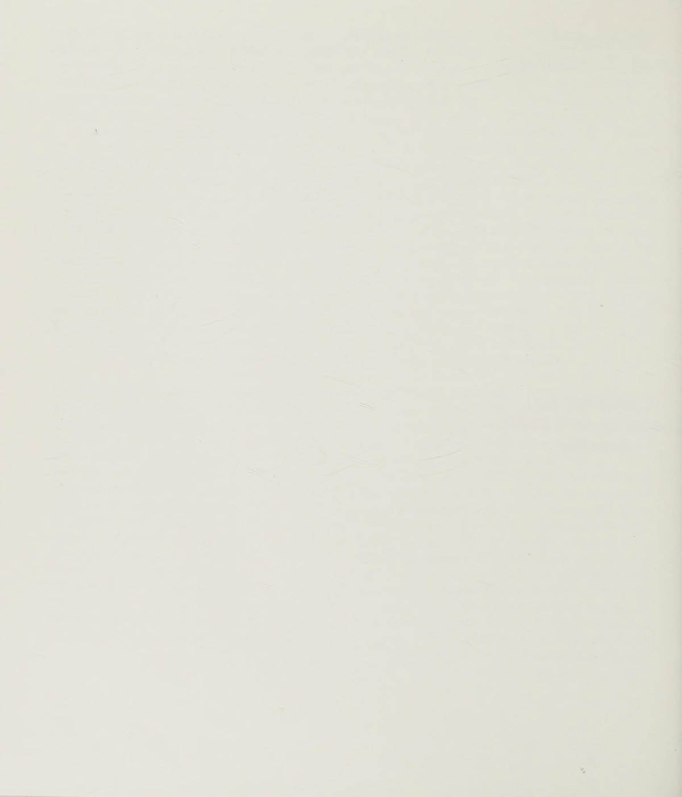
Hình 8.1: sân · tâm trí · trò chơiFigure 8.1: Court mind games
NHẬN THỨC VỀ CÁI GÌ Trong trò chơi tennis có hai điều quan trọng cần biết. Đầu tiên là vị trí của quả bóng. Thứ hai là nơi đặt đầu vợt. Ngay từ khi bất kỳ ai bắt đầu học quần vợt, người đó đã được dạy về tầm quan trọng của việc xem bóng. Rất đơn giản: bạn biết quả bóng ở đâu bằng cách nhìn vào nó. Bạn không cần phải nghĩ, "Ồ, quả bóng đến rồi; nó đi vào lưới khoảng một foot và bay khá nhanh. Nó sẽ nảy gần đường cuối sân, và tốt hơn là tôi nên đánh nó khi nó đi lên." Không, bạn chỉ cần quan sát quả bóng và để phản ứng thích hợp diễn ra. Tương tự như vậy, bạn không cần phải suy nghĩ về việc đầu vợt của mình sẽ ở đâu, nhưng bạn nên nhận ra tầm quan trọng của việc luôn nhận thức được đầu vợt của mình ở đâu. Bạn không thể nhìn vào nó để biết nó ở đâu vì bạn đang xem quả bóng. Bạn phải cảm nhận được nó. Cảm giác nó cho bạn biết nó ở đâu. Biết nó phải ở đâu không phải là cảm thấy nó ở đâu. Biết vợt của bạn không làm gì không phải là cảm nhận được nó ở đâu. Cảm giác nó ở đâu là biết nó ở đâu. Bất kể một người có phàn nàn thế nào khi anh ta học bài với tôi, tôi nhận thấy rằng bước đầu tiên có lợi nhất là khuyến khích anh ta nhìn và cảm nhận những gì anh ta đang làm - nghĩa là nâng cao nhận thức của anh ta về những gì thực sự là. Tôi làm theo quy trình tương tự khi nét vẽ của tôi đi chệch khỏi phản xạ. Nhưng để nhìn mọi thứ như hiện tại, chúng ta phải tháo bỏ cặp kính phán xét của mình, cho dù chúng đen tối hay nhuốm màu hồng. Hành động này mở ra một quá trình phát triển tự nhiên vừa đáng ngạc nhiên vừa đẹp đẽ. Ví dụ: giả sử một người chơi phàn nàn rằng thời gian thuận tay của anh ta bị lệch. Tôi sẽ không phân tích xem anh ta có vấn đề gì và sau đó hướng dẫn anh ta, “Hãy lấy vợt của bạn lại sớm hơn” hoặc “Hãy đánh bóng xa hơn về phía trước bạn”. Thay vào đó, tôi có thể chỉ cần yêu cầu anh ta chú ý đến vị trí đầu vợt của anh ta vào thời điểm bóng nảy về phía lưới của anh ta. Vì đây không phải là một hướng dẫn phổ biến nên có khả năng là người chơi sẽ không bao giờ được cho biết bất cứ điều gì về vị trí vợt của mình nên hoặc không nên ở vị trí cụ thể nào vào thời điểm cụ thể đó. Nếu tâm trí phán xét của anh ta bận rộn, anh ta có thể trở nên hơi lo lắng, vì Self 1 thích cố gắng làm những điều “đúng” và lo lắng khi anh ta không biết đúng hay sai của một hành động cụ thể. Vì vậy, ngay lập tức người chơi có thể hỏi vợt của mình sẽ ở đâu khi quả bóng nảy lên. Nhưng tôi từ chối nói, chỉ yêu cầu anh ta quan sát xem vợt của anh ta đang ở đâu vào thời điểm đó. Sau khi anh ấy đánh một vài quả bóng, tôi yêu cầu anh ấy cho tôi biết vợt của anh ấy hiện đang ở đâu. Câu trả lời điển hình là "Tôi lấy vợt về quá muộn. Tôi biết mình đã làm sai ở đâu nhưng tôi không thể dừng lại được". Đây là phản ứng chung của người chơi mọi môn thể thao và là nguyên nhân gây ra rất nhiều sự thất vọng. “Bây giờ hãy quên chuyện đúng sai đi,” tôi đề nghị. “Chỉ cần quan sát vợt của bạn tại thời điểm nảy lên.” Sau khi năm hoặc mười quả bóng nữa được đánh vào người anh ta, người chơi có thể sẽ trả lời: “Tôi đang làm tốt hơn; tôi sẽ lấy lại được nó sớm hơn”. “Đúng, và vợt của bạn ở đâu?” Tôi hỏi.
In the game of tennis there are two important things to know. The first is where the ball is. The second is where the racket head is. From the time anyone begins to learn tennis, he is told the importance of watching the ball. It’s very simple: you come to know where the ball is by looking at it. You don’t have to think, “Oh, here comes the ball; it’s clearing the net by about one foot and coming pretty fast. It should bounce near the baseline, and I’d better hit it on the rise.” No, you simply watch the ball and let the proper response take place. In the same way, you don’t have to think about where your racket head should be, but you should realize the importance of being aware of where the racket head is at all times. You can’t look at it to know where it is because you’re watching the ball. You must feel it. Feeling it gives you the knowledge of where it is. Knowing where it should be isn’t feeling where it is. Knowing what your racket didn’t do isn’t feeling where it is. Feeling where it is is knowing where it is. No matter what a person’s complaint when he has a lesson with me, I have found that the most beneficial first step is to encourage him to see and feel what he is doing—that is, to increase his awareness of what actually is. I follow the same process when my own strokes get out of their groove. But to see things as they are, we must take off our judgmental glasses, whether they’re dark or rose-tinted. This action unlocks a process of natural development which is as surprising as it is beautiful. For example, suppose that a player complains that the timing on his forehand is off. I wouldn’t give him an analysis of what is wrong and then instruct him, “Take your racket back sooner,” or “Hit the ball farther out in front of you.” Instead I might simply ask him to put his attention on where his racket head is at the moment the ball bounces on his side of the net. Since this is not a common instruction, it is likely that the player will never have been told anything about where his racket should or shouldn’t be at that particular moment. If his judgmental mind is engaged, he is likely to become a little nervous, since Self 1 likes to try to do things “right” and is nervous when he doesn’t know the rightness or wrongness of a particular action. So at once the player may ask where his racket should be when the ball is bouncing. But I decline to say, asking him only to observe where his racket is at that moment. After he hits a few balls, I ask him to tell me where his racket was at the moment in question. The typical reply is, “I’m taking my racket back too late. I know what I’m doing wrong, but I can’t stop it.” This is a common response of players of all sports, and is the cause of a great deal of frustration. “Forget about right and wrong for now,” I suggest. “Just observe your racket at the moment of bounce.” After five or ten more balls are hit to him, the player is likely to reply, “I’m doing better; I’m getting it back earlier.” “Yes, and where was your racket?” I ask. “I don’t know, but I think I was getting it back on time … wasn’t I?” Uncomfortable without a standard for right and wrong, the judgmental mind makes up standards of its own. Meanwhile, attention is taken off what is and placed on the process of trying to do things right. Even though he may be getting his racket back earlier and is hitting the ball more solidly, he is still in the dark about where his racket is. (If the player is left in this state, thinking that he has found the “secret” to his problem—that is, getting his racket back earlier—he will be momentarily pleased. He will go out eagerly to play and repeat to himself before hitting every forehand, “Get it back early, get it back early, get it back early …” For a while this magic phrase will seem to produce “good” results. But after a while, he will start missing again in spite of his self-reminder, will wonder what’s going “wrong” and will come back to the pro for another tip.)
“Tôi không biết, nhưng tôi nghĩ tôi đã quay lại đúng lúc… phải không?” Không thoải mái khi không có tiêu chuẩn đúng sai, tâm trí phán xét tự đặt ra những tiêu chuẩn của riêng mình. Trong khi đó, sự chú ý được loại bỏ và đặt vào quá trình cố gắng làm mọi việc đúng đắn. Mặc dù anh ta có thể lấy lại vợt sớm hơn và đánh bóng chắc chắn hơn, anh ta vẫn không biết vợt của mình ở đâu. (Nếu người chơi ở trong trạng thái này, nghĩ rằng anh ta đã tìm ra “bí mật” cho vấn đề của mình - tức là lấy lại vợt sớm hơn - anh ta sẽ hài lòng trong giây lát. Anh ta sẽ háo hức ra ngoài chơi và lặp lại với chính mình trước khi đánh mỗi cú thuận tay, “Lấy lại sớm, lấy lại sớm, lấy lại sớm…” Trong một thời gian, cụm từ kỳ diệu này dường như sẽ tạo ra kết quả “tốt”. Nhưng sau một thời gian, anh ta sẽ bắt đầu trượt trở lại bất chấp sự tự nhắc nhở của bản thân, sẽ tự hỏi chuyện gì đang xảy ra. “sai” và sẽ quay lại gặp chuyên gia để xin mẹo khác.) Vì vậy, thay vì dừng quá trình ở thời điểm mà người chơi đang đánh giá tích cực, tôi lại yêu cầu anh ta quan sát vợt của mình và cho tôi biết chính xác vị trí của nó tại thời điểm nảy lên. Cuối cùng, khi người chơi cho phép mình quan sát vợt của mình với sự thờ ơ và hứng thú, anh ta có thể cảm nhận được những gì nó thực sự đang làm và nhận thức của anh ta tăng lên. Sau đó, không cần nỗ lực điều chỉnh, anh ta sẽ phát hiện ra rằng cú swing của mình đã bắt đầu phát triển nhịp điệu tự nhiên. Trên thực tế, anh ta sẽ tìm ra nhịp điệu tốt nhất cho mình, nhịp điệu này có thể hơi khác so với những gì có thể được quy định bởi một tiêu chuẩn phổ quát nào đó được gọi là “đúng”. Rồi khi ra ngoài chơi, bé không còn câu thần chú nào phải lặp lại, có thể tập trung mà không cần suy nghĩ. Điều tôi đã cố gắng minh họa là có một quá trình học hỏi tự nhiên diễn ra trong mỗi người - nếu nó được phép. Quá trình này đang chờ được khám phá bởi tất cả những người chưa biết đến sự tồn tại của nó. Không cần phải tin lời tôi; nó có thể được tự mình khám phá nếu nó chưa được khám phá. Nếu nó đã được trải nghiệm, hãy tin tưởng nó. (Đây là chủ đề của chương 4.) Để khám phá quá trình học hỏi tự nhiên này, cần phải từ bỏ quá trình sửa lỗi cũ; nghĩa là cần phải buông bỏ sự phán xét và xem điều gì sẽ xảy ra. Liệu các cơn cú đánh của bạn có phát triển dưới tác động của sự chú ý không phê phán hay không? Kiểm tra điều này.
So instead of stopping the process at the point where the player is judging positively, I again ask him to observe his racket and to tell me exactly where it is at the moment of bounce. As the player finally lets himself observe his racket with detachment and interest, he can feel what it is actually doing and his awareness increases. Then, without any effort to correct, he will discover that his swing has begun to develop a natural rhythm. In fact, he will find the best rhythm for himself, which may be slightly different from what might be dictated by some universal standard called “correct.” Then when he goes out to play, he has no magic phrase that must be repeated, and can focus without thinking. What I have tried to illustrate is that there is a natural learning process which operates within everyone—if it is allowed to. This process is waiting to be discovered by all those who do not know of its existence. There is no need to take my word for it; it can be discovered for yourself if it hasn’t been already. If it has been experienced, trust it. (This is the subject of chapter 4.) To discover this natural learning process, it is necessary to let go of the old process of correcting faults; that is, it is necessary to let go of judgment and see what happens. Will your strokes develop under the effect of noncritical attention or won’t they? Test this.
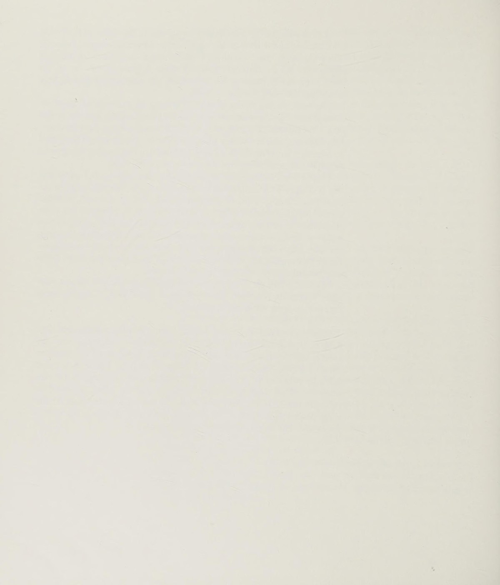
Hình 8.2: buông · tự nhiênFigure 8.2: Letting happen
SUY NGHĨ TÍCH CỰC LÀ GÌ?
Before finishing with the subject of the judgmental mind, something needs to be said about “positive thinking.” The “bad” effects of negative thinking are frequently discussed these days. Books and articles advise readers to replace negative thinking with positive thinking. People are advised to stop telling themselves they are ugly, uncoordinated, unhappy or whatever, and to repeat to themselves that they are attractive, well coordinated and happy. The substituting of a kind of “positive hypnotism” for a previous habit of “negative hypnotism” may appear at least to have short-range benefits, but I have always found that the honeymoon ends all too soon. One of the first lessons I learned as a teaching pro was not to find fault with any pupil or even his strokes. So I stopped criticizing either. Instead, I would compliment the pupil when I could, and make only positive suggestions about how to correct his strokes. Some time later, I found myself no longer complimenting my students. The realization that preceded this change occurred one day when I was giving a group of women a lesson on footwork.
Trước khi kết thúc chủ đề về tâm trí phán xét, cần phải nói đôi điều về “suy nghĩ tích cực”. Ngày nay, những tác động “xấu” của suy nghĩ tiêu cực thường được thảo luận. Sách và bài báo khuyên người đọc thay thế suy nghĩ tiêu cực bằng suy nghĩ tích cực. Mọi người được khuyên nên ngừng nói với bản thân rằng họ xấu xí, thiếu phối hợp, không hạnh phúc hay bất cứ điều gì, và hãy lặp lại với bản thân rằng họ hấp dẫn, phối hợp tốt và hạnh phúc. Việc thay thế một kiểu “thôi miên tích cực” bằng thói quen “thôi miên tiêu cực” trước đây ít nhất có thể mang lại những lợi ích ngắn hạn, nhưng tôi luôn thấy rằng tuần trăng mật kết thúc quá sớm. Một trong những bài học đầu tiên tôi học được với tư cách là một giảng viên chuyên nghiệp là không tìm lỗi ở bất kỳ học sinh nào hay thậm chí là các nét vẽ của anh ta. Vì thế tôi cũng ngừng chỉ trích. Thay vào đó, tôi sẽ khen ngợi học sinh khi có thể và chỉ đưa ra những gợi ý tích cực về cách sửa nét vẽ của học sinh. Một thời gian sau, tôi thấy mình không còn khen ngợi học trò của mình nữa. Nhận biết trước sự thay đổi này xảy ra vào một ngày nọ, khi tôi đang giảng bài cho một nhóm phụ nữ về động tác bằng chân. Tôi đã đưa ra một vài nhận xét mở đầu về việc tự phê bình thì Clare, một trong những người phụ nữ, hỏi: "Tôi có thể hiểu rằng suy nghĩ tiêu cực là có hại, nhưng còn việc khen ngợi bản thân khi bạn làm tốt thì sao? Suy nghĩ tích cực thì sao?" Câu trả lời của tôi dành cho cô ấy rất mơ hồ—“Ồ, tôi không nghĩ suy nghĩ tích cực cũng có hại như suy nghĩ tiêu cực”—nhưng trong bài học tiếp theo, tôi đã nhìn nhận vấn đề rõ ràng hơn. Khi bắt đầu bài học, tôi đã nói với những người phụ nữ rằng tôi sẽ đánh mỗi người trong số họ sáu cú thuận tay và tôi chỉ muốn họ nhận thức được đôi chân của mình. “Hãy liên hệ với cách chân bạn di chuyển để vào vị trí và liệu có bất kỳ sự chuyển trọng lượng nào khi bạn đánh bóng hay không.” Tôi nói với họ rằng không có đúng sai để suy nghĩ; họ chỉ phải hết sức chú ý quan sát bước chân của mình. Trong khi tôi đánh bóng cho họ, tôi không bình luận gì cả. Tôi chăm chú quan sát những gì đang diễn ra trước mắt mình nhưng không hề bày tỏ sự phán xét nào dù tích cực hay tiêu cực. Tương tự, các bà cũng im lặng, nhìn nhau không bình luận gì. Mỗi người dường như đang say mê với quá trình đơn giản là trải nghiệm chuyển động của đôi chân mình. Sau loạt ba mươi quả bóng, tôi nhận thấy không có quả bóng nào trên lưới; tất cả họ đều tụ tập lại với nhau ở khu vực sân chéo bên phía tôi.
I had made a few introductory remarks about self-criticism when Clare, one of the women, asked, “I can understand that negative thinking is harmful, but what about complimenting yourself when you do well? What about positive thinking?” My answer to her was vague—“Well, I don’t think positive thinking is as harmful as negative thinking”—but during the lesson that followed, I came to see the issue more clearly. At the beginning of the lesson, I told the women that I was going to hit each of them six running forehands, and that I wanted them simply to become aware of their feet. “Get in touch with how your feet move getting into position, and whether there is any transfer of weight as you hit the ball.” I told them that there was no right and wrong to think about; they were only to observe their own footwork with full attention. While I hit the balls to them, I made no comments. I watched intently what was happening before my eyes, but expressed no judgment either positive or negative. Similarly, the women were quiet, watching each other without comment. They each seemed absorbed in the simple process of experiencing the movement of their feet. After the series of thirty balls, I noticed that there were no balls at the net; they were all bunched together in the crosscourt area on my side. “Look,” I said, “all the balls are together in the corner, and not one at the net.” Although semantically this remark was simply an observation of fact, my tone of voice revealed that I was pleased with what I saw. I was complimenting them, and indirectly I was complimenting myself as their instructor. To my surprise, the girl who was due to hit next said, “Oh, you would have to say that just before my turn!” Though she was half kidding, I could see that she was a little nervous. I repeated the same instructions as before and hit thirty more balls without comment. This time there were frowns appearing on the women’s faces and their footwork seemed a little more awkward than before. After the thirtieth ball, there were eight balls at the net and the balls behind me were quite scattered. Inwardly I criticized myself for having spoiled the magic. Then Clare, the girl who had originally asked me about positive thinking, exclaimed, “Oh, I ruined it for everyone. I was the first to hit a ball into the net, and I hit four of them.” I was amazed, as were the others, because it wasn’t true. It was another person who had netted the first ball, and Clare had hit only two balls into the net. Her judgmental mind had distorted her perception of what had actually happened. Then I asked the women if they were aware of something different going through their minds during the second series of balls. Each of them reported being less aware of their feet and more intent on trying to keep from hitting balls into the net. They were trying to live up to an expectation, a standard of right and wrong, which they felt had been set before them. This was exactly what had been missing during the first set of balls. I began to see that my compliment had engaged their judgmental minds. Self 1, the egomind, had gotten into the act.
“Nhìn này,” tôi nói, “tất cả các quả bóng đều ở trong góc, và không có một quả nào trên lưới.” Mặc dù về mặt ngữ nghĩa, nhận xét này chỉ đơn giản là một quan sát thực tế, nhưng giọng điệu của tôi cho thấy rằng tôi hài lòng với những gì mình nhìn thấy. Tôi đang khen ngợi họ và gián tiếp tôi đang khen ngợi chính mình là người hướng dẫn của họ. Trước sự ngạc nhiên của tôi, cô gái bị đánh tiếp theo nói: “Ồ, bạn phải nói điều đó ngay trước lượt của tôi!” Dù cô ấy nửa đùa nửa thật nhưng tôi có thể thấy cô ấy có chút lo lắng. Tôi lặp lại hướng dẫn tương tự như trước và đánh thêm ba mươi quả bóng nữa mà không bình luận gì. Lần này, trên khuôn mặt của những người phụ nữ xuất hiện những nếp nhăn và động tác bằng chân của họ có vẻ vụng về hơn trước một chút. Sau quả bóng thứ ba mươi, có tám quả bóng trên lưới và những quả bóng phía sau tôi khá rải rác. Trong thâm tâm tôi tự trách mình đã làm hỏng phép thuật. Sau đó, Clare, cô gái ban đầu hỏi tôi về suy nghĩ tích cực, đã thốt lên: "Ồ, tôi đã làm hỏng điều đó cho mọi người. Tôi là người đầu tiên đánh một quả bóng vào lưới và tôi đã đánh trúng bốn quả trong số đó." Tôi và những người khác cũng ngạc nhiên vì điều đó không đúng. Đó là một người khác đã ghi quả bóng đầu tiên, còn Clare chỉ đánh được hai quả bóng vào lưới. Tâm trí phán xét của cô đã bóp méo nhận thức của cô về những gì đã thực sự xảy ra. Sau đó, tôi hỏi những người phụ nữ liệu họ có nhận thấy điều gì khác biệt đang diễn ra trong tâm trí họ trong loạt vũ hội thứ hai không. Mỗi người trong số họ cho biết họ ít nhận thức được đôi chân của mình và có ý định cố gắng giữ bóng không vào lưới nhiều hơn. Họ đang cố gắng sống theo một kỳ vọng, một tiêu chuẩn đúng sai mà họ cảm thấy đã được đặt ra trước mắt họ. Đây chính xác là những gì đã bị thiếu trong loạt bóng đầu tiên. Tôi bắt đầu nhận thấy lời khen của tôi đã thu hút tâm trí phán xét của họ. Self 1, cái tôi-tâm trí, đã bắt tay vào hành động. Qua trải nghiệm này, tôi bắt đầu thấy Self 1 vận hành như thế nào. Luôn tìm kiếm sự tán thành và muốn tránh bị phản đối, tâm trí ích kỷ tinh tế này coi một lời khen có thể là một lời chỉ trích. Nó lý luận: "Nếu một người chuyên nghiệp hài lòng với một kiểu biểu diễn này, anh ta sẽ không hài lòng với kiểu biểu diễn ngược lại. Nếu anh ta thích tôi làm tốt, anh ta sẽ không thích tôi vì tôi làm không tốt." Tiêu chuẩn tốt và xấu đã được thiết lập, và kết quả tất yếu là sự tập trung bị chia rẽ và sự can thiệp vào bản ngã. Các nữ cũng bắt đầu nhận ra nguyên nhân khiến mình bị căng ở vòng bóng thứ 3. Sau đó Clare dường như sáng lên như một bóng đèn 1000 watt. “Ồ, tôi hiểu rồi!” cô kêu lên, vỗ tay lên trán. "Những lời khen ngợi của tôi là những lời chỉ trích trá hình. Tôi sử dụng cả hai để thao túng hành vi." Thế là cô ấy chạy ra khỏi tòa và nói rằng cô ấy phải đi tìm chồng mình. Rõ ràng là cô ấy đã nhìn thấy mối liên hệ giữa cách cô ấy đối xử với bản thân trên sân tennis và các mối quan hệ trong gia đình, một giờ sau tôi thấy cô ấy cùng chồng, vẫn đang mải mê trò chuyện. Rõ ràng, những đánh giá tích cực và tiêu cực đều có liên quan với nhau. Không thể đánh giá một sự kiện là tích cực mà không thấy những sự kiện khác là không tích cực hoặc tiêu cực. Không có cách nào để ngăn chặn mặt tiêu cực của quá trình phán xét. Để nhìn thấy các nét vẽ của bạn như hiện tại, không cần phải quy kết chúng là tốt hay xấu. Điều tương tự cũng xảy ra với kết quả các cú đánh của bạn. Bạn có thể nhận thấy chính xác khoảng cách quả bóng rơi mà không cần dán nhãn cho nó là một sự kiện “xấu”. Bằng cách kết thúc sự phán xét, bạn không tránh né việc nhìn thấy cái gì là. Kết thúc phán xét có nghĩa là bạn không thêm bớt gì vào sự thật trước mắt mình. Mọi thứ xuất hiện như chúng vốn có - không bị bóp méo. Bằng cách này, tâm trí trở nên bình tĩnh hơn. "Nhưng," Self 1 phản đối, "nếu tôi thấy quả bóng của mình đi ra ngoài và tôi không đánh giá nó là tệ, tôi sẽ không có động cơ nào để thay đổi nó. Nếu tôi không ghét những gì mình đang làm sai thì làm sao tôi có thể thay đổi nó?" Self 1, cái tôi, muốn chịu trách nhiệm làm cho mọi thứ “tốt hơn”. Nó muốn được khen ngợi vì đã đóng một vai trò quan trọng trong mọi việc. Nó cũng lo lắng và đau khổ rất nhiều khi mọi chuyện không như ý muốn. Chương sau sẽ đề cập đến một quy trình thay thế: một quy trình trong đó các hành động diễn ra một cách tự nhiên và hợp lý mà không có tâm trí ích kỷ trong việc theo đuổi những điều tích cực và cố gắng cải cách những điều tiêu cực. Nhưng trước khi kết thúc chương này, hãy đọc câu chuyện sâu sắc nhưng có vẻ đơn giản, được kể bởi một người bạn rất đáng kính của tôi tên là Bill. Ba người đàn ông ngồi trên một chiếc ô tô đang lái xe trên đường phố vào một buổi sáng sớm. Để tương tự, giả sử mỗi người đại diện cho một loại vận động viên quần vợt khác nhau. Người đàn ông ngồi bên phải là một người có tư duy tích cực, tin rằng trận đấu của mình rất hay và đầy lòng tự trọng vì môn quần vợt của anh ấy quá vượt trội. Anh ấy cũng tự nhận mình là một tay chơi thích tận hưởng mọi “thú vui” mà cuộc sống mang lại. Người đàn ông ngồi giữa là người suy nghĩ tiêu cực, người không ngừng phân tích xem bản thân và thế giới có vấn đề gì. Anh ấy luôn tham gia vào một số loại chương trình hoàn thiện bản thân. Người đàn ông thứ ba, người đang lái xe, đang trong quá trình loại bỏ hoàn toàn lối suy nghĩ phán xét. Anh ấy chơi Inner Game, tận hưởng mọi thứ như hiện tại và làm những gì có vẻ hợp lý. Chiếc xe dừng lại khi dừng đèn đỏ, phía trước xe băng qua đường là một cô gái trẻ xinh đẹp thu hút sự chú ý của cả ba người đàn ông. Vẻ đẹp của cô ấy đặc biệt rõ ràng khi cô ấy khỏa thân! Người đàn ông bên phải đang mải mê nghĩ xem sẽ tuyệt vời biết bao nếu được ở bên người phụ nữ này trong những hoàn cảnh khác. Tâm trí anh lướt qua những ký ức trong quá khứ và những tưởng tượng trong tương lai về những thú vui nhục dục. Người đàn ông ngồi giữa đang nhìn thấy một ví dụ về sự suy đồi hiện đại. Anh không chắc mình có nên nhìn kỹ vào cô gái hay không. Đầu tiên là những chiếc váy ngắn, anh nghĩ, sau đó là những vũ công ngực trần, rồi những vũ công hở hang, và bây giờ họ ra đường giữa ban ngày! Phải làm gì đó để ngăn chặn tất cả chuyện này! Người lái xe đang nhìn thấy chính cô gái mà những người khác đang quan sát, nhưng chỉ đơn giản là đang quan sát những gì trước mắt anh ta. Anh ta không nhìn thấy điều tốt cũng như điều xấu, và kết quả là anh ta chú ý đến một chi tiết mà cả hai người bạn đồng hành của anh ta đều không chú ý: đôi mắt của cô gái đang nhắm nghiền. Anh nhận ra rằng người phụ nữ đang mộng du. Trả lời ngay theo lẽ thường, anh ta nhờ người bên cạnh cầm lái, bước xuống xe và khoác áo khoác lên vai người phụ nữ. Anh nhẹ nhàng đánh thức cô và giải thích rằng cô chắc chắn đã bị mộng du và đề nghị đưa cô về nhà. Bill, bạn tôi, thường kết thúc câu chuyện bằng ánh mắt lấp lánh và nói: “Ở đó anh ấy đã nhận được phần thưởng cho hành động của mình,” để mỗi người nghe nghe xem anh ấy sẽ làm gì.
Through this experience, I began to see how Self 1 operated. Always looking for approval and wanting to avoid disapproval, this subtle ego-mind sees a compliment as a potential criticism. It reasons, “If the pro is pleased with one kind of performance, he will be displeased by the opposite. If he likes me for doing well, he will dislike me for not doing well.” The standard of good and bad had been established, and the inevitable result was divided concentration and ego-interference. The women also began to realize the cause of their tightness on the third round of balls. Then Clare seemed to light up like a 1000-watt bulb. “Oh, I see!” she exclaimed, slapping her hand to her forehead. “My compliments are criticisms in disguise. I use both to manipulate behavior.” Whereupon she ran off the court saying she had to find her husband. Evidently she had seen connection between how she treated herself on the tennis court and her family relationships, for an hour later I saw her with her husband, still absorbed in intense conversation. Clearly, positive and negative evaluations are relative to each other. It is impossible to judge one event as positive without seeing other events as not positive or as negative. There is no way to stop just the negative side of the judgmental process. To see your strokes as they are, there is no need to attribute goodness or badness to them. The same goes for the results of your strokes. You can notice exactly how far out a ball lands without labeling it a “bad” event. By ending judgment, you do not avoid seeing what is. Ending judgment means you neither add nor subtract from the facts before your eyes. Things appear as they are—undistorted. In this way, the mind becomes more calm. “But,” protests Self 1, “if I see my ball going out and I don’t evaluate it as bad, I won’t have any incentive to change it. If I don’t dislike what I’m doing wrong, how am I going to change it?” Self 1, the ego-mind, wants to take responsibility for making things “better.” It wants the credit for playing an important role in things. It also worries and suffers a lot when things don’t go its way. The following chapter will deal with an alternative process: a process by which actions flow spontaneously and sensibly without an ego-mind on the scene chasing positives and trying to reform negatives. But before concluding this chapter, read this profound but deceptively simple story told me by a much respected friend of mine named Bill. Three men in a car are driving down a city street early one morning. For the sake of analogy, suppose that each man represents a different kind of tennis player. The man sitting on the right is a positive thinker who believes that his game is great and is full of self-esteem because his tennis is so superior. He’s also a self-admitted playboy who enjoys all “the pleasures” life has to offer. The man sitting in the middle is a negative thinker who is constantly analyzing what is wrong with himself and the world. He is always involved in some kind of self-improvement program. The third man, who is driving, is in the process of letting go of judgmental thinking altogether. He plays the Inner Game, enjoying things as they are and doing what seems sensible. The car pulls up at a stoplight, and crossing the street in front of the car is a beautiful young lady who catches the attention of all three men. Her beauty is particularly apparent as she is stark naked! The man on the right becomes engrossed in thoughts of how nice it would be to be with this lady under other circumstances. His mind races through past memories and future fantasies of sensual pleasures. The man sitting in the middle is seeing an example of modern decadence. He’s not sure that he should be looking closely at the girl. First miniskirts, he thinks, then topless dancers, then bottomless dancers, and now they’re out on the streets in broad daylight! Something must be done to stop all this! The driver is seeing the same girl that the others are observing, but is simply watching what is before his eyes. He sees neither good nor bad, and as a result, a detail comes to his attention which was not noticed by either of his companions: the girl’s eyes are shut. He realizes that the lady is sleepwalking. Responding immediately with common sense, he asks the person next to him to take the wheel, steps out of the car, and puts his overcoat over the woman’s shoulders. He gently wakes her and explains to her that she must have been sleepwalking and offers to take her home. My friend Bill used to end the story with a twinkle in his eye, saying, “There he received the rewards of his action,” leaving each listener to hear what he would.
được phát triển trong Inner Game là của
THE FIRST INNER SKILL to be developed in the Inner Game is that of nonjudgmental awareness. When we “unlearn” judgment we discover, usually with some surprise, that we don’t need the motivation of a reformer to change our “bad” habits. We may simply need to be more aware. There is a more natural process of learning and performing waiting to be discovered. It is waiting to show what it can do when allowed to operate without interference from the conscious strivings of the judgmental self. The discovery of and reliance upon this process is the subject of the next chapter. But first, one balancing thought. It is important to remember that not all remarks are judgmental. Acknowledgment of one’s own or another’s strengths, efforts, accomplishments, etc., can facilitate natural learning, whereas judgments interfere. What is the difference? Acknowledgment of and respect for one’s capabilities support trust in Self 2. Self 1’s judgments, on the other hand, attempt to manipulate and undermine that trust. THE THESIS OF THE LAST CHAPTER WAS THAT THE FIRST STEP IN bringing a greater harmony between egomind and body—that is, between Self 1 and Self 2—was to let go of selfjudgment. Only when Self 1 stops sitting in judgment over Self 2 and its actions can he become aware of who and what Self 2 is and appreciate the processes by which it works. As this step occurs, trust is developed, and eventually the basic but elusive ingredient for all top performance emerges —self-confidence.
Kỹ năng nội tâm đầu tiên
nhận biết không phán xét. Khi “loại bỏ” khả năng phán xét, chúng ta thường ngạc nhiên phát hiện ra rằng chúng ta không cần động lực của một nhà cải cách để thay đổi những thói quen “xấu” của mình. Chúng ta có thể chỉ cần nhận thức rõ hơn. Có một quá trình học tập và biểu diễn tự nhiên hơn đang chờ được khám phá. Nó đang chờ đợi để thể hiện những gì nó có thể làm khi được phép hoạt động mà không có sự can thiệp từ những nỗ lực có ý thức của bản thân phán xét. Việc khám phá và tin cậy vào quá trình này là chủ đề của chương tiếp theo. Nhưng trước tiên, hãy cân bằng suy nghĩ. Điều quan trọng cần nhớ là không phải tất cả các nhận xét đều mang tính phán xét. Sự thừa nhận về điểm mạnh, nỗ lực, thành tích, v.v. của chính mình hoặc của người khác có thể tạo điều kiện thuận lợi cho việc học tập một cách tự nhiên, trong khi những phán xét lại gây trở ngại. Sự khác biệt là gì? Sự thừa nhận và tôn trọng khả năng của một người sẽ hỗ trợ sự tin tưởng vào Self 2. Mặt khác, những đánh giá của Self 1 cố gắng thao túng và làm suy yếu niềm tin đó.
Put aside for a moment the opinions you have about your body—whether you think of it as clumsy, uncoordinated, average or really fantastic—and think about what it does. As you read these very words your body is performing a remarkable piece of coordination. Eyes are moving effortlessly, taking in images of black and white which are automatically compared with memories of similar markings, translated into symbols, then connected with other symbols to form an impression of meaning. Thousands of these operations are taking place every few seconds. At the same time, again without conscious effort, your heart is pumping and your breath is going in and out, keeping a fantastically complicated system of organs, glands and muscles nourished and working. Without conscious effort, billions of cells are functioning, reproducing and fighting off disease. If you walked to a chair and turned on a light before beginning to read, your body coordinated a great number of muscle movements to accomplish those tasks. Self 1 did not have to tell your body how far to reach before closing your fingers on the light switch; you knew your goal, and your body did what was necessary without thought. The process by which the body learned and performed these actions is no different from the process by which it learns and plays the game of tennis.
Chương 4
Tin vào Self 2
Luận điểm của chương trước là bước đầu tiên để
mang lại sự hòa hợp lớn hơn giữa cái tôi-tâm trí và cơ thể — nghĩa là giữa Self 1 và Self 2 — là từ bỏ sự tự phán xét. Chỉ khi Self 1 ngừng phán xét Self 2 và hành động của nó, anh ta mới có thể nhận thức được Self 2 là ai và là gì, đồng thời đánh giá cao các quá trình hoạt động của nó. Khi bước này diễn ra, niềm tin được phát triển và cuối cùng, thành phần cơ bản nhưng khó nắm bắt của mọi thành tích xuất sắc sẽ xuất hiện – sự tự tin. AI VÀ TỰ 2 LÀ GÌ? Hãy tạm gác lại những quan điểm của bạn về cơ thể mình - dù bạn cho rằng nó vụng về, thiếu phối hợp, trung bình hay thực sự tuyệt vời - và hãy nghĩ xem nó làm được gì. Khi bạn đọc những từ này, cơ thể bạn đang thực hiện một sự phối hợp đáng chú ý. Đôi mắt chuyển động dễ dàng, thu nhận các hình ảnh đen trắng được tự động so sánh với ký ức về các dấu hiệu tương tự, được dịch thành các ký hiệu, sau đó kết nối với các ký hiệu khác để tạo thành ấn tượng về ý nghĩa. Hàng ngàn hoạt động này đang diễn ra cứ sau vài giây. Đồng thời, một lần nữa, không cần nỗ lực có ý thức, tim bạn vẫn bơm máu và hơi thở ra vào, giữ cho một hệ thống cơ quan, tuyến và cơ vô cùng phức tạp được nuôi dưỡng và hoạt động. Nếu không có nỗ lực có ý thức, hàng tỷ tế bào vẫn hoạt động, sinh sản và chống lại bệnh tật. Nếu bạn bước tới một chiếc ghế và bật đèn trước khi bắt đầu đọc, cơ thể bạn sẽ phối hợp rất nhiều chuyển động của cơ để hoàn thành những nhiệm vụ đó. Self 1 không cần phải cho cơ thể bạn biết tầm với bao xa trước khi khép ngón tay vào công tắc đèn; bạn biết mục tiêu của mình và cơ thể bạn làm những gì cần thiết mà không cần suy nghĩ. Quá trình cơ thể học và thực hiện những hành động này không khác gì quá trình cơ thể học và chơi trò chơi quần vợt. Hãy suy ngẫm về chuỗi hành động phức tạp được thực hiện bởi Self 2 trong quá trình trả giao bóng. Để dự đoán cách thức và vị trí di chuyển bàn chân cũng như nên lấy vợt về phía thuận tay hay phía trái tay, bộ não phải tính toán trong vòng một phần giây kể từ thời điểm bóng rời khỏi vợt của người giao bóng về vị trí nó sẽ tiếp đất và vị trí mà vợt sẽ chặn nó. Trong phép tính này phải tính toán vận tốc ban đầu của quả bóng, kết hợp với đầu vào cho sự giảm dần về vận tốc và ảnh hưởng của gió và quay, chưa nói đến những quỹ đạo phức tạp liên quan. Sau đó, mỗi yếu tố này phải được tính toán lại sau khi bóng nảy lên để dự đoán điểm tiếp xúc của vợt. Đồng thời, phải đưa ra mệnh lệnh cơ bắp – không chỉ một lần mà phải liên tục trau chuốt dựa trên thông tin cập nhật. Cuối cùng, các cơ phải phản ứng với sự phối hợp với nhau: chuyển động của bàn chân xảy ra, vợt được rút lại ở một tốc độ và độ cao nhất định, và mặt vợt được giữ ở một góc không đổi khi vợt và thân di chuyển cân bằng về phía trước. Việc tiếp xúc được thực hiện tại một điểm chính xác tùy theo lệnh được đưa ra là đánh dọc biên hay chéo sân - một lệnh không được đưa ra cho đến sau khi phân tích trong tích tắc về chuyển động và thăng bằng của đối phương ở phía bên kia lưới. Nếu Pete Sampras đang giao bóng, bạn có chưa đầy nửa giây để hoàn thành tất cả điều này. Ngay cả khi bạn trả giao bóng cho một người chơi bình thường, bạn sẽ chỉ có khoảng một giây. Chỉ cần đánh bóng rõ ràng đã là một kỳ tích đáng chú ý; để trả lại nó một cách nhất quán và chính xác là một thành tích đáng kinh ngạc. Tuy nhiên, nó không phải là hiếm. Sự thật là mọi người sống trong cơ thể con người đều sở hữu một công cụ đặc biệt. Vì lý do này, có vẻ không phù hợp khi gọi cơ thể chúng ta bằng những cái tên xúc phạm. Self 2—tức là cơ thể vật chất, bao gồm não, ngân hàng ký ức (ý thức và vô thức) và hệ thần kinh—là một tập hợp các tiềm năng cực kỳ tinh vi và thành thạo.
Reflect on the complicated series of actions performed by Self 2 in the process of returning a serve. In order to anticipate how and where to move the feet and whether to take the racket back on the forehand or backhand side, the brain must calculate within a fraction of a second the moment the ball leaves the server’s racket approximately where it is going to land and where the racket will intercept it. Into this calculation must be computed the initial velocity of the ball, combined with an input for the progressive decrease in velocity and the effect of wind and of spin, to say nothing of the complicated trajectories involved. Then, each of these factors must be recalculated after the bounce of the ball to anticipate the point where contact will be made by the racket. Simultaneously, muscle orders must be given—not just once, but constantly refined on updated information. Finally, the muscles have to respond in cooperation with one another: a movement of feet occurs, the racket is taken back at a certain speed and height, and the face of the racket is kept at a constant angle as the racket and body move forward in balance. Contact is made at a precise point according to whether the order was given to hit down the line or cross-court —an order not given until after a split-second analysis of the movement and balance of the opponent on the other side of the net. If Pete Sampras is serving, you have less than half a second to accomplish all this. Even if you are returning the serve of an average player, you will have only about one second. Just to hit the ball is clearly a remarkable feat; to return it with consistency and accuracy is a mindboggling achievement. Yet it is not uncommon. The truth is that everyone who inhabits a human body possesses a remarkable instrument. In the light of this, it seems inappropriate to call our bodies derogatory names. Self 2—that is, the physical body, including the brain, memory bank (conscious and unconscious) and the nervous system—is a tremendously sophisticated and competent collection of potentialities. Inherent within it is an inner intelligence which is staggering. What it doesn’t already know, this inner intelligence learns with childlike ease. It uses billions of cells and neurological communication circuits in every action. No computer yet made can come close to performing the complex physical actions accomplished by even a beginning tennis player, much less a professional. The foregoing has only one purpose: to encourage the reader to respect Self 2. This amazing instrument is what we have the effrontery to call “uncoordinated.” Reflect on the silent intelligence inherent in all Self 2 actions and our attitude of arrogance and mistrust will gradually change. With it will dissolve the unnecessary self-instructions, criticisms and tendencies to overcontrol that tend to occupy the unfocused mind. As long as Self 1 is either too ignorant or too proud to acknowledge the capabilities of Self 2, true self-confidence will be hard to come by. It is Self 1’s mistrust of Self 2 which causes both the interference called “trying too hard” and that of too much self-instruction. The first results in using too many muscles, the second in mental distraction and lack of concentration. Clearly, the new relationship to be established with ourselves must be based on the maxim “Trust thyself.”
Vốn có bên trong nó là một trí thông minh bên trong đáng kinh ngạc. Những gì nó chưa biết thì trí tuệ bên trong này học hỏi một cách dễ dàng như trẻ con. Nó sử dụng hàng tỷ tế bào và mạch giao tiếp thần kinh trong mọi hành động. Chưa có máy tính nào được tạo ra có thể tiến gần đến việc thực hiện các hành động thể chất phức tạp được thực hiện bởi ngay cả một người mới bắt đầu chơi quần vợt, chứ đừng nói đến một người chuyên nghiệp. Những điều trên chỉ có một mục đích: khuyến khích người đọc tôn trọng Self 2. Công cụ tuyệt vời này là thứ mà chúng tôi đã trơ trẽn gọi là “không phối hợp”. Hãy suy ngẫm về trí thông minh thầm lặng vốn có trong mọi hành động của Bản ngã 2 và thái độ kiêu ngạo, thiếu tin tưởng của chúng ta sẽ dần thay đổi. Với nó sẽ làm tan biến những lời tự chỉ dẫn, chỉ trích không cần thiết và những khuynh hướng kiểm soát quá mức có xu hướng chiếm giữ tâm trí thiếu tập trung.
What does “Trust thyself” mean on the tennis court? It doesn’t mean positive thinking—for example, expecting that you are going to hit an ace on every serve. Trusting your body in tennis means letting your body hit the ball. The key word is let. You trust in the competence of your body and its brain, and you let it swing the racket. Self 1 stays out of it. But though this is very simple, it does not mean that it is easy. In some ways the relationship between Self 1 and Self 2 is analogous to the relationship between parent and child. Some parents have a hard time letting their children do something when they believe that they themselves know better how it should be done. But the trusting and loving parent lets the child perform his own actions, even to the extent of making mistakes, because he trusts the child to learn from them.
HÃY TIN TƯỞNG CHÍNH MÌNH Chừng nào Self 1 còn quá thiếu hiểu biết hoặc quá tự hào để thừa nhận khả năng của Self 2 thì sự tự tin thực sự sẽ khó có được. Chính sự không tin tưởng của Self 1 đối với Self 2 đã gây ra cả sự can thiệp được gọi là “cố gắng quá mức” và sự can thiệp của việc tự chỉ dẫn quá nhiều. Nguyên nhân thứ nhất là sử dụng quá nhiều cơ bắp, nguyên nhân thứ hai là khiến tinh thần mất tập trung và mất tập trung. Rõ ràng, mối quan hệ mới được thiết lập với chính chúng ta phải dựa trên câu châm ngôn “Hãy tin vào chính mình”. “Hãy tin tưởng vào bản thân” trên sân tennis có nghĩa là gì? Nó không có nghĩa là suy nghĩ tích cực - ví dụ, mong đợi rằng bạn sẽ đánh được quân Át trong mỗi lần giao bóng. Tin tưởng vào cơ thể của bạn trong quần vợt có nghĩa là để cơ thể bạn đánh bóng. Từ khóa là hãy để. Bạn tin tưởng vào năng lực của cơ thể và bộ não của nó, và bạn để nó vung vợt. Self 1 đứng ngoài cuộc. Tuy nhiên, điều này tuy rất đơn giản nhưng không có nghĩa là dễ dàng. Ở một khía cạnh nào đó, mối quan hệ giữa Cái Tôi 1 và Cái Tôi 2 cũng tương tự như mối quan hệ giữa cha mẹ và con cái. Một số bậc cha mẹ gặp khó khăn khi để con mình làm điều gì đó khi họ tin rằng chính họ biết rõ hơn nên làm như thế nào. Nhưng người cha/mẹ tin tưởng và yêu thương để đứa trẻ thực hiện hành động của mình, thậm chí đến mức phạm sai lầm, bởi vì ông tin tưởng đứa trẻ sẽ học hỏi từ những sai lầm đó.
Letting it happen is not making it happen. It is not trying hard. It is not controlling your shots. These are all the actions of Self 1, which takes things into its own hands because it mistrusts Self 2. This is what produces tight muscles, rigid swings, awkward movements, gritted teeth and tense cheek muscles. The results are mishit balls and a lot of frustration. Often when we are rallying we trust our bodies and let it happen because the egomind tells itself that it doesn’t really count. But once the game begins, watch Self 1 take over; at the crucial point it starts to doubt whether Self 2 will perform well. The more important the point, the more Self 1 may try to control the shot, and this is exactly when tightening up occurs. The results are almost always frustrating. Let’s take a closer look at this tightening process, because it is a phenomenon which takes place in every athlete in every sport. Anatomy tells us that muscles are two-way mechanisms; that is, a given muscle is either relaxed or contracted. It can’t be partially contracted any more than a light switch can be partially off. The difference between holding our racket loosely or tightly is in the number of muscles which are contracted. How many and which muscles are actually needed to hit a fast serve? No one knows, but if the conscious mind thinks it does and tries to control those muscles, it will inevitably use muscles that aren’t needed. When more than necessary are used, not only is there a waste of energy, but certain tightened muscles interfere with the need of other muscles to relax. Thinking that it has to use a lot of muscle to hit as hard as it wants to, Self 1 will initiate the use of muscles in the shoulder, forearm, wrist and even face which will actually impede the force of the swing.
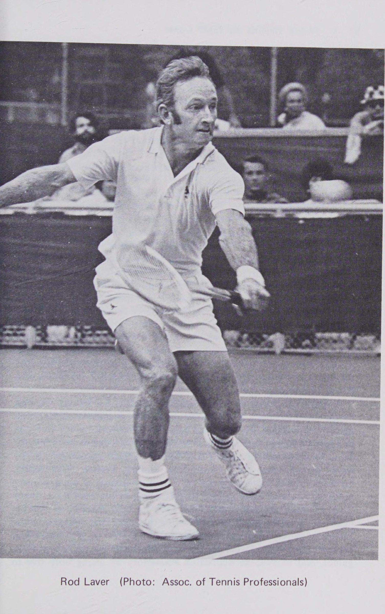
Hình 11.1: nhà vô địch · Rod LaverFigure 11.1: Champion rod Rod Laver
Để nó xảy ra không phải làm cho nó xảy ra. Đó không phải là cố gắng hết sức. Nó không kiểm soát cú đánh của bạn. Đây đều là những hành động của Self 1, tự mình xử lý mọi việc vì nó không tin tưởng Self 2. Đây là nguyên nhân tạo ra các cơ bắp căng cứng, những cú xoay người cứng nhắc, những cử động vụng về, nghiến răng và cơ má căng thẳng. Kết quả là những quả bóng hỏng và rất nhiều thất vọng. Thông thường, khi tập hợp, chúng ta tin tưởng vào cơ thể mình và để điều đó xảy ra vì cái tôi tự nhủ rằng điều đó không thực sự quan trọng. Nhưng khi trò chơi bắt đầu, hãy xem Self 1 tiếp quản; đến thời điểm quan trọng người ta bắt đầu nghi ngờ liệu Self 2 có hoạt động tốt hay không. Điểm càng quan trọng thì Self 1 càng có thể cố gắng kiểm soát cú đánh và đây chính xác là lúc sự thắt chặt xảy ra. Kết quả hầu như luôn khiến bạn nản lòng. Chúng ta hãy xem xét kỹ hơn quá trình thắt chặt này, bởi vì nó là hiện tượng xảy ra ở mọi vận động viên ở mọi môn thể thao. Giải phẫu cho chúng ta biết rằng cơ bắp là cơ chế hai chiều; nghĩa là, một cơ nhất định được thư giãn hoặc co lại. Nó không thể bị co lại một phần cũng như công tắc đèn không thể tắt một phần. Sự khác biệt giữa việc cầm vợt lỏng hay chặt là ở số lượng cơ co lại. Thực sự cần bao nhiêu và cơ bắp nào để thực hiện một cú giao bóng nhanh? Không ai biết, nhưng nếu tâm trí có ý thức nghĩ như vậy và cố gắng kiểm soát những cơ đó, chắc chắn nó sẽ sử dụng những cơ không cần thiết. Khi sử dụng nhiều hơn mức cần thiết, không chỉ lãng phí năng lượng mà một số cơ bị căng nhất định sẽ cản trở nhu cầu thư giãn của các cơ khác. Nghĩ rằng phải dùng nhiều cơ để đánh mạnh như ý muốn, Self 1 sẽ bắt đầu sử dụng các cơ ở vai, cẳng tay, cổ tay và thậm chí cả mặt, những cơ này thực sự sẽ cản trở lực của cú vung. Nếu bạn có sẵn một cây vợt, hãy cầm nó và thử thí nghiệm này. (Nếu bạn không có vợt, hãy nắm lấy bất kỳ vật thể chuyển động nào hoặc chỉ dùng tay nắm lấy không khí.) Siết chặt các cơ ở cổ tay và xem bạn có thể bẻ vợt nhanh đến mức nào. Sau đó thả lỏng các cơ ở cổ tay và xem nó sẽ gãy nhanh như thế nào. Rõ ràng, cổ tay lỏng lẻo sẽ linh hoạt hơn. Khi giao bóng, lực được tạo ra, ít nhất một phần, bằng cú búng tay linh hoạt. Nếu bạn cố tình đánh mạnh, bạn có thể sẽ siết chặt cơ cổ tay quá mức, làm chậm cú búng tay và do đó mất lực. Hơn nữa, toàn bộ hành trình sẽ cứng và khó duy trì sự cân bằng. Đây là cách Cái Tôi 1 can thiệp vào trí tuệ của cơ thể. (Như bạn có thể tưởng tượng, một cú giao bóng cổ tay cứng sẽ không đáp ứng được sự mong đợi của người giao bóng. Do đó, anh ta có thể sẽ cố gắng nhiều hơn vào lần sau, siết chặt các cơ hơn và ngày càng trở nên chán nản và kiệt sức - và, tôi có thể nói thêm, làm tăng nguy cơ bị khuỷu tay quần vợt.) May mắn thay, hầu hết trẻ em đều học cách đi trước khi được cha mẹ chỉ dẫn cách đi. Tuy nhiên, trẻ không chỉ học cách đi rất tốt mà còn có được sự tự tin vào quá trình học tập tự nhiên đang diễn ra bên trong chúng. Các bà mẹ quan sát nỗ lực của con mình bằng tình yêu thương và sự quan tâm, nếu khôn ngoan thì cũng không can thiệp nhiều. Nếu chúng ta có thể coi những trận đấu quần vợt của mình như cách một đứa trẻ tập đi thì chúng ta sẽ tiến bộ hơn. Khi con mất thăng bằng và ngã, mẹ không trách nó vụng về. Cô ấy thậm chí không cảm thấy tồi tệ về điều đó; cô ấy chỉ đơn giản là để ý đến sự kiện này và có thể đưa ra một lời nói hoặc cử chỉ động viên. Do đó, sự tiến bộ trong việc học đi của trẻ không bao giờ bị cản trở bởi ý tưởng rằng trẻ không có khả năng phối hợp. Tại sao một người chơi mới bắt đầu không nên đối xử với trái tay của mình như một người mẹ yêu thương con mình? Bí quyết là không xác định bằng cú trái tay. Nếu bạn xem một cú đánh trái tay thất thường là sự phản ánh con người bạn, bạn sẽ khó chịu. Nhưng bạn không phải là trái tay của bạn cũng như cha mẹ không phải là con của anh ta. Nếu một người mẹ đồng cảm với từng cú ngã của con mình và tự hào về mỗi thành công của nó, hình ảnh bản thân của bà ấy sẽ không ổn định như khả năng giữ thăng bằng của con mình. Cô tìm thấy sự ổn định khi nhận ra rằng mình không phải là con mình và quan sát nó với tình yêu và sự quan tâm — mà như một sinh vật riêng biệt. Chính loại sở thích tách biệt này là điều cần thiết để trò chơi quần vợt của bạn phát triển một cách tự nhiên. Hãy nhớ rằng bạn không phải là trò chơi quần vợt của bạn. Bạn không phải là cơ thể của bạn. Hãy tin tưởng vào cơ thể để học và chơi, giống như bạn tin tưởng người khác làm một công việc và trong một thời gian ngắn nó sẽ hoạt động ngoài mong đợi của bạn. Hãy để hoa phát triển. Lý thuyết trước đó cần được kiểm tra và không dựa vào đức tin. Ở cuối chương, có một số thử nghiệm sẽ giúp bạn có cơ hội trải nghiệm sự khác biệt giữa việc bắt bản thân làm điều gì đó và để nó xảy ra. Tôi đề nghị bạn cũng nên nghĩ ra những thử nghiệm của riêng mình để khám phá xem bạn sẵn sàng tin tưởng bản thân đến mức nào, cả khi tập hợp lẫn khi chịu áp lực.
If you have a racket handy, hold it and try this experiment. (If you don’t have a racket, grab any movable object, or just grab the air with your hand.) Tighten up the muscles in your wrist and see how fast you can snap your racket. Then release the muscles in your wrist and see how fast it will snap. Clearly, a loose wrist is more flexible. When serving, power is generated, at least in part, by the flexible snap of the wrist. If you try to hit hard intentionally, you are likely to over-tighten the wrist muscles, slow down the snap of your wrist and thereby lose power. Furthermore, the entire stroke will be rigid, and balance will be difficult to maintain. This is how Self 1 interferes with the wisdom of the body. (As you can imagine, a stiffwristed serve will not meet the expectations of the server. Consequently he is likely to try even harder next time, tightening more muscles, and becoming more and more frustrated and exhausted—and, I might add, increasing the risk of tennis elbow.) Fortunately, most children learn to walk before they can be told how to by their parents. Yet, children not only learn how to walk very well, but they gain confidence in the natural learning process which operates within them. Mothers observe their children’s efforts with love and interest, and if they are wise, without much interference. If we could treat our tennis games as we do a child learning to walk, we would make more progress. When the child loses his balance and falls, the mother doesn’t condemn it for being clumsy. She doesn’t even feel bad about it; she simply notices the event and perhaps gives a word or gesture of encouragement. Consequently, a child’s progress in learning to walk is never hindered by the idea that he is uncoordinated. Why shouldn’t a beginning player treat his backhand as a loving mother would her child? The trick is not to identify with the backhand. If you view an erratic backhand as a reflection of who you are, you will be upset. But you are not your backhand any more than a parent is his child. If a mother identifies with every fall of her child and takes personal pride in its every success, her self-image will be as unstable as her child’s balance. She finds stability when she realizes that she is not her child, and watches it with love and interest—but as a separate being. This same kind of detached interest is what is necessary to let your tennis game develop naturally. Remember that you are not your tennis game. You are not your body. Trust the body to learn and to play, as you would trust another person to do a job, and in a short time it will perform beyond your expectations. Let the flower grow. The preceding theory should be tested and not taken on faith. Toward the end of the chapter there are several experiments that will give you a chance to experience the difference between making yourself do something, and letting it happen. I suggest that you also devise your own experiments to discover just how much you are willing to trust yourself, both when rallying and when under pressure. At this point it may have occurred to the reader to ask, “How can I just ‘let a forehand happen’ if I’ve never learned how to hit one in the first place? Don’t I need someone to tell me how to do it? If I’ve never played tennis before, can I just go out on the court and ‘let it happen’?” The answer is: if your body knows how to hit a forehand, then just let it happen; if it doesn’t, then let it learn. The actions of Self 2 are based on information it has stored in its memory of past actions of itself or of the observed actions of others. A player who has never held a racket in his hand needs to let the ball hit the strings a few times before Self 2 learns how far away the center of the racket is from the hand holding it. Every time you hit a ball, whether correctly or incorrectly, the computer memory of Self 2 is picking up valuable information and storing it away for future use. As one practices, Self 2 refines and extends the information in its memory bank. All the time it is learning such things as how high a ball bounces when hit at varying speeds and varying spins; how fast a ball falls and how fast it comes up off the court; and where it should be met to direct it to different parts of the court. It remembers every action it makes and the results of every action, depending on the degree of your attention and alertness. So the important thing for a beginning player to remember is to allow the natural learning process to take place and to forget about stroke-by-stroke self-instructions. The results will be surprising.
HÃY ĐỂ ĐIỀU ĐÓ XẢY RA Đến đây, người đọc có thể nảy ra câu hỏi: "Làm sao tôi có thể 'để cho một cú thuận tay xảy ra' nếu tôi chưa bao giờ học cách đánh một cú ngay từ đầu? Chẳng lẽ tôi không cần ai đó chỉ cho tôi cách thực hiện điều đó sao? Nếu tôi chưa bao giờ chơi quần vợt trước đây, liệu tôi có thể ra sân và 'cứ để nó xảy ra' không?" Câu trả lời là: nếu cơ thể bạn biết cách đánh một cú thuận tay, thì hãy để nó xảy ra; nếu không thì hãy để nó học. Hành động của Self 2 dựa trên thông tin mà nó đã lưu trữ trong bộ nhớ về các hành động trong quá khứ của chính nó hoặc về các hành động được quan sát của người khác. Người chơi chưa bao giờ cầm vợt trên tay cần phải để bóng chạm dây vài lần trước khi Self 2 biết được tâm vợt cách tay cầm vợt bao xa. Mỗi khi bạn đánh một quả bóng, dù đúng hay sai, bộ nhớ máy tính của Self 2 sẽ thu thập những thông tin có giá trị và lưu trữ nó để sử dụng sau này. Khi thực hành, Self 2 tinh chỉnh và mở rộng thông tin trong ngân hàng bộ nhớ của nó. Nó luôn luôn học những thứ như quả bóng nảy lên cao bao nhiêu khi được đánh ở những tốc độ khác nhau và những vòng quay khác nhau; quả bóng rơi nhanh như thế nào và nó bay ra khỏi sân nhanh như thế nào; và nơi cần đáp ứng để hướng nó đến các bộ phận khác nhau của sân. Nó ghi nhớ mọi hành động nó thực hiện và kết quả của mỗi hành động đó, tùy thuộc vào mức độ chú ý và tỉnh táo của bạn. Vì vậy, điều quan trọng mà người mới bắt đầu chơi cần nhớ là để quá trình học tập diễn ra một cách tự nhiên và quên đi những hướng dẫn tự hướng dẫn từng cú đánh. Kết quả sẽ rất đáng ngạc nhiên. Hãy để tôi minh họa bằng một ví dụ thể hiện cách học dễ và khó. Khi tôi mười hai tuổi, tôi được gửi đến trường dạy khiêu vũ, nơi tôi được dạy các điệu valse, fox trot và các bước nhảy khác mà chỉ những người ở độ tuổi đen tối hơn mới biết đến. Chúng tôi được yêu cầu, "Đặt chân phải của bạn ở đây và chân trái của bạn ở đó, sau đó khép chúng lại. Bây giờ chuyển trọng lượng của bạn sang chân trái, xoay người," v.v. Các bước nhảy không phức tạp, nhưng phải mất nhiều tuần tôi mới nhảy mà không cần phải tua lại đoạn băng trong đầu: “Đặt chân trái ở đây, chân phải ở kia, xoay, một, hai, ba; một, hai, ba.” Tôi sẽ nghĩ ra từng bước, ra lệnh cho bản thân thực hiện và sau đó thực hiện nó. Tôi hầu như không nhận ra có một cô gái trong vòng tay mình và phải mất nhiều tuần tôi mới có thể trò chuyện trong khi khiêu vũ.
Let me illustrate with an example which demonstrates the easy and hard ways of learning. When I was twelve years old, I was sent to dancing school, where I was taught the waltz, fox trot and other steps known only to the darker ages of man. We were told, “Put your right foot here and your left foot there, then bring them together. Now shift your weight to your left foot, turn,” and so forth. The steps were not complicated, but it was weeks before I was dancing without the need to play back the tape in my head: “Put your left foot here, right foot there, turn, one, two, three; one, two, three.” I would think out each step, command myself to do it and then execute it. I was barely aware there was a girl in my arms, and it was weeks before I was able to handle a conversation while dancing. This is the way most of us teach ourselves the footwork and strokes of tennis. But it’s such a slow and painful way! Contrast it with the way the modern twelve-year-old learns to dance. He goes to a party one night, sees his friends doing whatever dances are in vogue at the time, and comes home having mastered them all. Yet these dances are infinitely more complex than the fox trot. Just imagine the size of the instruction manual required to put into words each of the movements of these dances! It would require a Ph.D. in physical education and a full semester to learn them “by the book.” But a kid who may be failing math and English learns them effortlessly in a single night. How does he do this? First, by simply watching. He doesn’t think about what he is seeing—how the left shoulder lifts a bit while the head jerks forward and the right foot twists. He simply absorbs visually the image in front of him. This image completely bypasses the ego-mind, and seems to be fed directly to the body, for in a few minutes the kid is on the floor doing movements very similar to those he was watching. Now he is feeling how it is to imitate those images. He repeats the process a few times, first looking, then feeling, and soon is dancing effortlessly—totally “with it.” If the next day he is asked by his sister how to do the dance he’ll say, “I don’t know … like this … see?” Ironically, he thinks he doesn’t know how to do the dance because he can’t explain it in words, while most of us who learn tennis through verbal instruction can explain in great detail how the ball should be hit but have trouble doing it.
Đây là cách mà hầu hết chúng ta tự dạy mình về động tác chân và các cú đánh trong quần vợt. Nhưng đó là một cách chậm chạp và đau đớn! Hãy đối chiếu nó với cách một đứa trẻ 12 tuổi hiện đại học khiêu vũ. Một đêm nọ, anh ấy đi dự tiệc, thấy bạn bè của mình nhảy bất kỳ điệu nhảy nào đang thịnh hành vào thời điểm đó và trở về nhà sau khi thành thạo tất cả. Tuy nhiên, những điệu nhảy này phức tạp hơn nhiều so với điệu nhảy cáo. Chỉ cần tưởng tượng kích thước của cuốn sách hướng dẫn cần thiết để diễn đạt thành lời từng chuyển động của những điệu nhảy này! Nó sẽ yêu cầu bằng tiến sĩ. về giáo dục thể chất và cả một học kỳ để học chúng “theo sách”. Nhưng một đứa trẻ có thể trượt môn toán và tiếng Anh sẽ học chúng một cách dễ dàng chỉ trong một đêm. Làm thế nào để anh ấy làm điều này? Đầu tiên, bằng cách đơn giản là xem. Anh ta không nghĩ về những gì mình đang nhìn thấy – vai trái nhấc lên một chút trong khi đầu hất về phía trước và chân phải vặn vẹo. Anh ta chỉ đơn giản là hấp thụ trực quan hình ảnh trước mặt. Hình ảnh này hoàn toàn vượt qua tâm trí bản ngã và dường như được đưa trực tiếp vào cơ thể, vì trong vài phút, đứa trẻ sẽ nằm trên sàn thực hiện những động tác rất giống với những gì nó đang quan sát. Bây giờ anh ấy đang cảm thấy việc bắt chước những hình ảnh đó là như thế nào. Anh ấy lặp lại quá trình này vài lần, đầu tiên là nhìn, sau đó cảm nhận, và nhanh chóng nhảy múa một cách dễ dàng—hoàn toàn “với nó”. Nếu ngày hôm sau anh ấy được chị gái hỏi cách nhảy thì anh ấy sẽ nói, “Tôi không biết… như thế này… thấy không?” Trớ trêu thay, anh ấy nghĩ rằng anh ấy không biết cách thực hiện điệu nhảy vì anh ấy không thể giải thích nó bằng lời, trong khi hầu hết chúng ta, những người học quần vợt thông qua hướng dẫn bằng lời nói có thể giải thích rất chi tiết cách đánh bóng nhưng lại gặp khó khăn khi thực hiện nó. Đối với Self 2, một bức tranh có giá trị hơn ngàn lời nói. Nó học bằng cách quan sát hành động của người khác cũng như bằng cách thực hiện chính hành động đó. Hầu hết tất cả các tay vợt đều từng trải qua cảm giác chơi quá sức sau khi xem giải quần vợt vô địch trên truyền hình. Lợi ích của trò chơi của bạn không đến từ việc phân tích cú đánh của những người chơi hàng đầu, mà đến từ việc tập trung mà không cần suy nghĩ và chỉ đơn giản là để bản thân tiếp thu những hình ảnh trước mắt. Sau đó, vào lần chơi tiếp theo, bạn có thể thấy rằng một số yếu tố vô hình quan trọng nhất định như thời gian, dự đoán và cảm giác tự tin được cải thiện đáng kể mà không cần nỗ lực hoặc kiểm soát có ý thức.
To Self 2, a picture is worth a thousand words. It learns by watching the actions of others, as well as by performing actions itself. Almost all tennis players have experienced playing over their heads after watching championship tennis on television. The benefits to your game come not from analyzing the strokes of top players, but from concentrating without thinking and simply letting yourself absorb the images before you. Then, the next time you play, you may find that certain important intangibles such as timing, anticipation and sense of confidence are greatly improved, all without conscious effort or control. In short, for many of us, a new relationship needs to be forged with Self 2. And building new relationships involves new ways of communicating. If the former relationship was characterized by criticism and control, the symptoms of mistrust, then the more desired relationship is one of respect and trust. If so, this change can start with a change of attitude. If you observe Self 1, in its critical posture, it looks down at Self 2 and diminishes it (in its own eyes) with its disparaging thoughts. The other possibility is to learn to look up to Self 2. This is the attitude of respect based on true recognition of its natural intelligence and capabilities. Another word for this attitude is humility, a feeling that happens naturally in the presence of something or someone you admire. As you find your way to an attitude that slopes upward toward Self 2 with respect, the feelings and thoughts that accompany the controlling and critical attitude fade and the sincerity of Self 2 emerges. With an attitude of respect, you learn to speak in the language of the respected person. The remainder of this chapter will discuss three basic methods of communicating with Self 2. It is basic to good communications that we use the most suitable language. If Mr. A wishes to make sure of getting his message across to Mr. B, he will, if he can, use Mr. B’s native tongue. What is the native language of Self 2? Certainly not words! Words were not learned by Self 2 until several years after birth. No, the native tongue of Self 2 is imagery: sensory images. Movements are learned through visual and feeling images. So the three methods of communicating I will discuss all involve sending goal-oriented messages to Self 2 by images and “feelmages.”
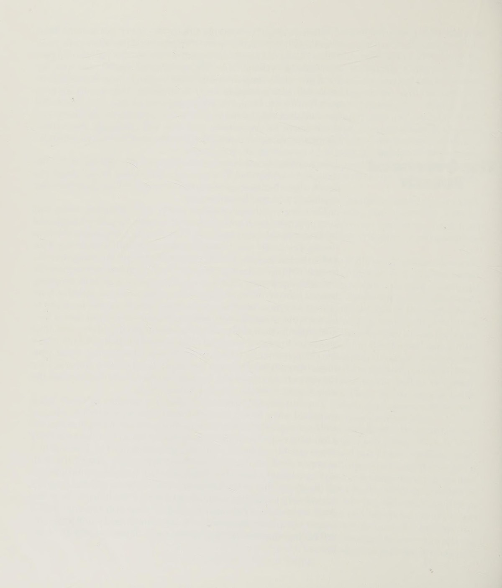
Hình 11.2: thói quen · rèn luyệnFigure 11.2: Changing habits grooving
GIAO TIẾP VỚI BẢN THÂN 2 Nói tóm lại, đối với nhiều người trong chúng ta, một mối quan hệ mới cần được tạo dựng với Self 2. Và việc xây dựng những mối quan hệ mới liên quan đến những cách giao tiếp mới. Nếu mối quan hệ trước đây được đặc trưng bởi sự chỉ trích và kiểm soát, các triệu chứng của sự ngờ vực, thì mối quan hệ được mong muốn hơn là mối quan hệ tôn trọng và tin tưởng. Nếu vậy, sự thay đổi này có thể bắt đầu bằng việc thay đổi thái độ. Nếu bạn quan sát Self 1, trong tư thế phê phán, nó sẽ coi thường Self 2 và hạ thấp nó (trong mắt nó) bằng những suy nghĩ chê bai. Khả năng khác là học cách tôn trọng Self 2. Đây là thái độ tôn trọng dựa trên sự nhận biết thực sự về trí thông minh và khả năng tự nhiên của nó. Một từ khác cho thái độ này là sự khiêm tốn, một cảm giác xảy ra một cách tự nhiên trước sự hiện diện của điều gì đó hoặc ai đó mà bạn ngưỡng mộ. Khi bạn tìm được thái độ hướng tới Self 2 với sự tôn trọng, những cảm xúc và suy nghĩ đi kèm với thái độ kiểm soát và phê phán sẽ mờ dần và sự chân thành của Self 2 sẽ xuất hiện. Với thái độ tôn trọng, bạn học cách nói bằng ngôn ngữ của người được kính trọng. Phần còn lại của chương này sẽ thảo luận về ba phương pháp giao tiếp cơ bản với Self 2. Điều cơ bản để giao tiếp tốt là chúng ta sử dụng ngôn ngữ phù hợp nhất. Nếu ông A muốn đảm bảo chuyển tải được thông điệp của mình đến ông B, thì nếu có thể, ông ấy sẽ sử dụng tiếng mẹ đẻ của ông B. Ngôn ngữ mẹ đẻ của Self 2 là gì? Chắc chắn không phải là lời nói! Từ ngữ không được Self 2 học được cho đến vài năm sau khi sinh ra. Không, tiếng mẹ đẻ của Bản ngã 2 là hình ảnh: hình ảnh giác quan. Các chuyển động được học thông qua hình ảnh thị giác và cảm giác. Vì vậy, ba phương pháp giao tiếp mà tôi sẽ thảo luận đều liên quan đến việc gửi những thông điệp có mục tiêu đến Self 2 bằng hình ảnh và “cảm giác”.
Many students of tennis are too stroke-conscious and not attentive enough to results. Such players are aware of how they stroke the ball, but unconcerned with where it is actually going. It is often helpful for these players to shift their attention from means to ends. Here is an example.
Đòi hỏi kết quả Nhiều người chơi quần vợt quá quan tâm đến cú đánh và không đủ chú ý đến kết quả. Những người chơi như vậy nhận thức được cách họ đánh bóng nhưng không quan tâm đến việc nó thực sự sẽ đi đến đâu. Việc những người chơi này chuyển sự chú ý của họ từ phương tiện sang mục đích thường rất hữu ích. Đây là một ví dụ. Trong một buổi học nhóm với năm người phụ nữ, tôi đã hỏi mỗi người chơi cô ấy muốn thực hiện một thay đổi nào nhất trong trò chơi của mình. Người phụ nữ đầu tiên, Sally, muốn thực hiện cú thuận tay của mình, điều mà cô ấy nói “gần đây thực sự rất tệ”. Khi tôi hỏi cô ấy điều gì cô ấy không thích ở cú thuận tay của mình, cô ấy trả lời: “Chà, tôi đưa vợt về quá muộn và quá cao, và tôi lăn nó quá nhiều trong những pha tiếp theo; tôi cũng thường xuyên rời mắt khỏi quả bóng và tôi không nghĩ mình bước vào nó tốt lắm.” Rõ ràng là nếu tôi hướng dẫn cô ấy từng yếu tố mà cô ấy đề cập, tôi sẽ bắt đầu và kết thúc bài học với cô ấy. Vì vậy, tôi đã hỏi Sally rằng cô ấy cảm thấy thế nào về kết quả của cú thuận tay của mình và cô ấy trả lời: “Nó quá nông và không có nhiều lực”. Bây giờ chúng tôi đã có thứ gì đó mà chúng tôi có thể làm việc cùng. Tôi nói với cô ấy rằng tôi tưởng tượng cơ thể của cô ấy (Self 2) đã biết cách đánh bóng sâu và mạnh hơn, và nếu không, nó sẽ học rất nhanh. Tôi đề nghị cô ấy tưởng tượng đường đi mà quả bóng sẽ phải di chuyển để rơi sâu vào sân, để ý xem nó sẽ bay qua lưới ở độ cao bao nhiêu và giữ hình ảnh đó trong đầu cô ấy trong vài giây. Sau đó, trước khi đánh một số quả bóng, tôi nói: "Đừng cố đánh bóng sâu. Chỉ cần yêu cầu Self 2 làm điều đó và để nó xảy ra. Nếu quả bóng tiếp tục rơi nông, đừng cố gắng sửa chữa. Đơn giản chỉ cần buông tay và xem điều gì sẽ xảy ra." Quả bóng thứ ba mà Sally đánh trúng đã hạ cánh một chân vào trong đường cuối sân. Trong số 20 người tiếp theo, 15 người đáp xuống phần tư phía sau của sân và làm như vậy với lực lượng ngày càng tăng phía sau họ. Khi cô ấy đánh, bốn người phụ nữ còn lại và tôi có thể thấy tất cả các yếu tố mà cô ấy đã đề cập đến thay đổi một cách đáng kể và tự nhiên; cú đánh sau của cô ấy hạ xuống, cú đánh theo sau của cô ấy phẳng, và cô ấy bắt đầu lao vào quả bóng một cách cân bằng và tự tin. Khi cô ấy đánh xong, tôi hỏi cô ấy đã thực hiện những thay đổi gì, và cô ấy trả lời: "Tôi không thực hiện bất kỳ thay đổi nào cả. Tôi chỉ tưởng tượng quả bóng bay qua lưới khoảng 2 feet và hạ cánh gần đường cuối sân, và nó đã làm như vậy!" Cô vừa mừng vừa ngạc nhiên. Những thay đổi mà Sally thực hiện trong cú thuận tay của cô ấy nằm ở chỗ cô ấy đã mang lại cho Self 2 một hình ảnh trực quan rõ ràng về kết quả mà cô ấy mong muốn. Sau đó, cô ấy nói với cơ thể mình rằng: “Hãy làm bất cứ điều gì bạn phải làm để đến đó”. Tất cả những gì cô phải làm là để nó xảy ra. Có được hình ảnh rõ ràng nhất có thể về kết quả mong muốn của bạn là phương pháp hữu ích nhất để giao tiếp với Self 2, đặc biệt là khi chơi một trận đấu. Một khi bạn đang thi đấu thì đã quá muộn để thực hiện các cú đánh của mình, nhưng bạn có thể ghi nhớ trong đầu hình ảnh về nơi bạn muốn bóng đi đến và sau đó cho phép cơ thể làm những gì cần thiết để đánh nó đến đó. Ở đây, điều cần thiết là phải tin tưởng vào Self 2. Self 1 phải giữ tinh thần thoải mái, kiềm chế đưa ra những chỉ dẫn “cách thực hiện” và mọi nỗ lực để kiểm soát cú đánh. Khi Self 1 học cách buông bỏ, niềm tin ngày càng tăng vào khả năng của Self 2 xuất hiện.
During a group lesson with five women, I asked each player what one change she would most like to make in her game. The first woman, Sally, wanted to work on her forehand, which she said “had really been terrible lately.” When I asked her what she didn’t like about her forehand, she replied, “Well, I take my racket back too late and too high, and I roll it over too much on the follow-through; also I take my eye off the ball a lot, and I don’t think I step into it very well.” It was clear that if I were to give her instruction on each element she mentioned, I would start and end the lesson with her. So I asked Sally what she felt about the results of her forehand, and she replied, “It goes too shallow and doesn’t have much power.” Now we had something we could work with. I told her that I imagined her body (Self 2) already knew how to hit the ball deep and with more power, and that if it didn’t, it would learn very quickly. I suggested that she imagine the arc the ball would have to take to land deep in the court, noticing how high over the net it would pass, and hold that image in her mind for several seconds. Then, before hitting some balls, I said, “Don’t try to hit the ball deep. Just ask Self 2 to do it and let it happen. If the ball continues to fall shallow, don’t make any conscious effort to correct. Simply let go and see what happens.” The third ball Sally hit landed a foot inside the baseline. Of the next twenty, fifteen landed in the back quarter of the court and did so with increasing force behind them. As she hit, the other four women and I could see all the elements she had mentioned changing appreciably and naturally; her backswing lowered, her follow-through flattened, and she began flowing into the ball with balance and confidence. When she was finished hitting, I asked her what changes she had made, and she replied, “I didn’t make any. I just imagined the ball passing two feet over the net and landing near the baseline, and it did!” She was both delighted and surprised. The changes that Sally made in her forehand lay in the fact that she gave Self 2 a clear visual image of the results she desired. Then she told her body in effect, “Do whatever you have to do to go there.” All she had to do was let it happen. Getting the clearest possible image of your desired outcomes is a most useful method for communicating with Self 2, especially when playing a match. Once you are competing it is too late to work on your strokes, but it is possible to hold in your mind the image of where you want the ball to go and then allow the body to do what is necessary to hit it there. It is essential here to trust Self 2. Self 1 must stay relaxed, refraining from giving “howto-do-it” instructions and from any effort to control the stroke. As Self 1 learns to let go, a growing confidence in the ability of Self 2 emerges.
HỎI HÌNH THỨC Đôi khi việc có thể chủ ý thay đổi một hoặc nhiều yếu tố của một cú đánh nhất định sẽ rất hữu ích. (Quy trình này sẽ được thảo luận chi tiết hơn ở chương 6, “Thay đổi thói quen”). Tóm lại, quy trình này rất giống với việc yêu cầu kết quả. Ví dụ, giả sử bạn liên tục đảo vợt trong các lượt đánh tiếp theo và thói quen này vẫn tiếp tục bất chấp mọi nỗ lực để thay đổi nó. Đầu tiên, bạn phải cho Self 2 một hình ảnh thật rõ ràng về những gì bạn đang yêu cầu nó làm. Điều này có thể được thực hiện tốt nhất bằng cách giữ vợt của bạn trước mặt bạn ở một vị trí thích hợp và nhìn vào nó với sự chú ý hoàn toàn trong vài giây. Bạn có thể cảm thấy ngu ngốc khi nghĩ rằng mình đã biết cách thực hiện phù hợp, nhưng điều quan trọng là tạo cho Self 2 một hình ảnh để bắt chước. Sau khi thực hiện điều này, bạn cũng có thể nhắm mắt lại và tưởng tượng rõ ràng nhất có thể toàn bộ cú thuận tay của bạn với vợt nằm phẳng trong suốt cú đánh. Sau đó, trước khi đánh bất kỳ quả bóng nào, hãy vung vợt vài lần, để vợt phẳng và cho phép bản thân trải nghiệm cảm giác vung vợt theo cách mới này. Một khi bạn bắt đầu đánh bóng, điều quan trọng là đừng cố gắng giữ cho vợt của bạn phẳng. Bạn đã yêu cầu Self 2 giữ cho nó phẳng, vì vậy hãy để nó xảy ra! Vai trò duy nhất của Self 1 là đứng yên và quan sát kết quả một cách tách biệt. Hãy để tôi nhấn mạnh một lần nữa rằng điều quan trọng là không thực hiện bất kỳ nỗ lực có ý thức nào để giữ cho vợt phẳng. Nếu sau một vài cú đánh, vợt không phù hợp với hình ảnh mà bạn đưa ra cho Self 2, thì hãy tưởng tượng lại kết quả mong muốn và để cơ thể bạn vung vợt, đảm bảo rằng Self 2 không hỗ trợ dù chỉ một chút. Đừng cố gắng thực hiện thử nghiệm này; nếu bạn làm vậy, Self 1 sẽ tham gia và bạn sẽ không thực sự biết liệu Self 2 có đánh bóng mà không được trợ giúp hay không.
It is sometimes useful to be able to make a deliberate change in one or more elements of a given stroke. (This process will be discussed in greater detail in chapter 6, “Changing Habits.”) In brief, the process is very similar to asking for results. Suppose, for example, that you are consistently rolling your racket over on the followthrough, and the habit continues despite all efforts to change it. First you must give Self 2 a very clear image of what you are asking it to do. This can best be done by holding your racket in front of you in a proper followthrough position and looking at it with undivided attention for several seconds. You may feel foolish, thinking that you already know the proper follow-through, but it is vital to give Self 2 an image to imitate. Having done this, it might also be useful to shut your eyes and imagine as clearly as possible your entire forehand with the racket staying flat throughout the swing. Then, before hitting any balls, swing your racket several times, letting the racket stay flat and allowing yourself to experience how it feels to swing in this new way. Once you start to hit balls, it is important not to try and keep your racket flat. You have asked Self 2 to keep it flat, so let it happen!Self 1’s only role is to be still and observe the results in a detached manner. Let me stress again that it is important not to make any conscious effort to keep the racket flat. If after a few strokes the racket does not conform to the image you gave Self 2, then image the desired outcome again and let your body swing your racket, making sure Self 2 isn’t giving it the slightest assistance. Don’t try to make this experiment work; if you do, Self 1 will get involved and you won’t really know if Self 2 is hitting the ball unassisted or not. It is important not only to understand intellectually the difference between letting it happen and making it happen, but to experience the difference. To experience the difference is to know the difference. To this end, let me suggest two experiments.
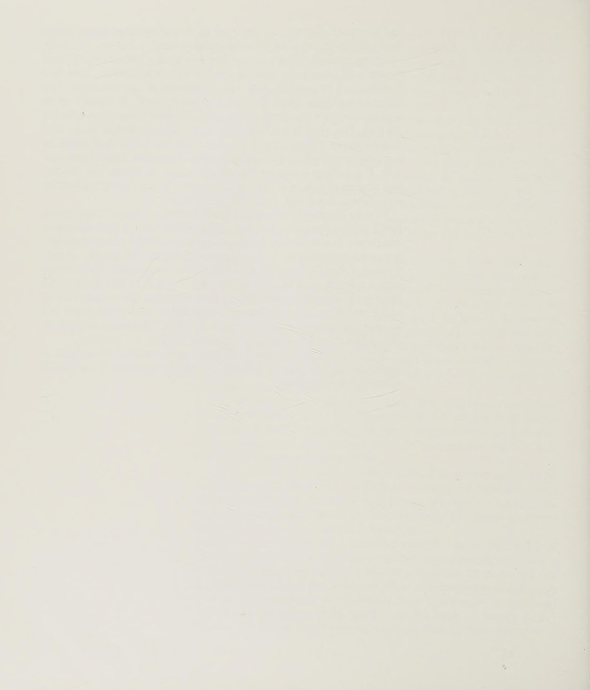
Hình 11.3: tập trungFigure 11.3: Concentration focus
HAI THÍ NGHIỆM Điều quan trọng không chỉ là hiểu về mặt trí tuệ sự khác biệt giữa việc để nó xảy ra và làm cho nó xảy ra, mà còn phải trải nghiệm sự khác biệt. Trải nghiệm sự khác biệt là để biết sự khác biệt. Để đạt được mục đích này, hãy để tôi đề xuất hai thí nghiệm. Việc đầu tiên liên quan đến việc cố gắng đánh một mục tiêu đứng yên bằng một quả bóng tennis. Đặt một quả bóng tennis ở góc trái tay của một trong các sân giao bóng. Sau đó tìm ra cách bạn nên vung vợt để đánh vào hộp. Hãy suy nghĩ về độ cao để ném bóng, về góc thích hợp của vợt khi tiếp xúc, lưu lượng trọng lượng thích hợp, v.v. Bây giờ hãy nhắm vào cái lon và cố gắng đánh nó. Nếu bạn bỏ lỡ, hãy thử lại. Nếu bạn đánh nó, hãy cố gắng lặp lại bất cứ điều gì bạn đã làm để có thể đánh lại. Nếu bạn làm theo quy trình này trong vài phút, bạn sẽ trải nghiệm được điều tôi muốn nói là “cố gắng hết sức” và bắt mình giao bóng. Sau khi bạn đã tiếp thu được kinh nghiệm này, hãy di chuyển lon sang góc trái tay của sân giao bóng khác trong nửa sau của thử nghiệm. Lần này đứng trên vạch cuối sân, hít thở sâu vài lần và thư giãn. Nhìn vào cái lon. Sau đó, hãy hình dung đường đi của quả bóng từ vợt của bạn đến hộp đựng. Xem quả bóng chạm vào lon ngay trên nhãn. Nếu bạn thích, hãy nhắm mắt lại và tưởng tượng mình đang giao bóng và quả bóng chạm vào hộp. Làm điều này nhiều lần. Nếu trong trí tưởng tượng của bạn, quả bóng trượt khỏi hộp thì không sao cả; lặp lại hình ảnh một vài lần cho đến khi bóng chạm mục tiêu. Bây giờ, đừng nghĩ đến việc bạn nên đánh bóng như thế nào. Đừng cố gắng bắn trúng mục tiêu. Hãy yêu cầu cơ thể của bạn, Self 2, làm bất cứ điều gì cần thiết để đánh trúng cái lon, sau đó để nó làm điều đó. Thực hiện không kiểm soát; đúng cho những thói quen xấu không tưởng tượng. Đơn giản chỉ cần tin tưởng cơ thể của bạn để làm điều đó. Khi bạn tung quả bóng lên, hãy tập trung sự chú ý vào các đường nối của nó, sau đó để quả giao bóng tự giao bóng. Bóng sẽ trúng hoặc trượt mục tiêu. Chú ý chính xác nơi nó hạ cánh. Bạn nên giải phóng bản thân khỏi mọi phản ứng cảm xúc trước thành công hay thất bại; chỉ cần biết mục tiêu của bạn và quan tâm khách quan đến kết quả. Sau đó phục vụ một lần nữa. Nếu bạn đã bỏ sót chiếc lon, đừng ngạc nhiên và đừng cố gắng sửa chữa lỗi lầm của mình. Đây là điều quan trọng nhất. Một lần nữa tập trung sự chú ý của bạn vào cái hộp; sau đó hãy để quả giao bóng tự giao bóng. Nếu bạn trung thực không cố gắng đánh lon và không cố gắng sửa những lỗi của mình mà đặt hoàn toàn tin tưởng vào cơ thể và máy tính của nó, thì bạn sẽ sớm thấy rằng cú giao bóng đang tự điều chỉnh. Bạn sẽ trải nghiệm rằng thực sự có một Bản thân thứ 2 đang hành động và học hỏi mà không được bảo phải làm gì. Hãy quan sát quá trình này; quan sát cơ thể bạn thực hiện những thay đổi cần thiết để ngày càng đến gần cái lon hơn. Tất nhiên, Self 1 rất phức tạp và khó nhất là giữ cho nó không can thiệp một chút, nhưng nếu bạn im lặng một chút, bạn sẽ bắt đầu thấy Self 2 đang hoạt động và bạn sẽ ngạc nhiên như tôi về những gì nó có thể làm và dễ dàng biết bao. Thử nghiệm thứ hai mà tôi muốn giới thiệu để trải nghiệm thực tế của Bản ngã 2 bắt đầu bằng việc chọn một số thay đổi mà bạn muốn thực hiện trong một trong các nét vẽ của mình. Ví dụ, chọn một thói quen xấu mà bạn đã cố gắng thay đổi nhưng không thành công. Sau đó, trên sân, hãy nhờ một người bạn ném cho bạn 20 quả bóng và cố gắng sửa thói quen này. Nói cho anh ấy biết bạn đang cố gắng làm gì và yêu cầu anh ấy quan sát xem điều đó có đúng hay không. Hãy cố gắng hết sức; hãy thử cách bạn đã quen để cố gắng thay đổi một thói quen. Hãy trải nghiệm kiểu cố gắng này. Quan sát cảm giác của bạn nếu bạn thất bại. Cũng lưu ý xem bạn có cảm thấy lúng túng hay chật chội không. Bây giờ hãy thử luyện tập cú đánh đã sửa của bạn trong khi đánh bóng. Sau đó hãy xem điều gì xảy ra khi bạn chơi một trận đấu. Tiếp theo, chọn một thói quen khác mà bạn muốn thay đổi, hoặc thậm chí là thói quen tương tự. (Nếu những nỗ lực đầu tiên của bạn vẫn chưa sửa được thói quen này thì sẽ rất thú vị nếu bạn thực hiện lại thói quen đó.) Yêu cầu bạn của bạn ném cho bạn năm hoặc mười quả bóng. Trong thời gian này, đừng cố gắng thay đổi cú đánh của bạn; chỉ cần quan sát nó. Đừng phân tích nó, chỉ quan sát nó một cách cẩn thận; kinh nghiệm vợt của bạn luôn ở vị trí nào. Những thay đổi có thể xảy ra khi bạn chỉ đang quan sát cú đánh của mình một cách không phán xét, nhưng nếu bạn cảm thấy cần chỉnh sửa thêm, thì hãy “tạo một hình ảnh có hình dạng mong muốn”. Hãy thể hiện chính xác những gì bạn muốn Self 2 làm. Cung cấp cho nó một hình ảnh trực quan rõ ràng, di chuyển vợt của bạn từ từ theo đường mong muốn và để bản thân quan sát nó thật kỹ. Sau đó lặp lại quá trình này, nhưng lần này hãy cảm nhận chính xác cảm giác di chuyển vợt của bạn theo cách mới này. Sau khi đã cung cấp cho mình một hình ảnh và cảm giác, bạn đã sẵn sàng để đánh một số quả bóng. Bây giờ hãy tập trung đôi mắt và tâm trí của bạn vào các đường nối của quả bóng và để nó xảy ra. Sau đó quan sát những gì đã xảy ra. Một lần nữa, đừng phân tích; chỉ cần xem Self 2 đã tiến gần đến mức nào để thực hiện những gì bạn mong muốn. Nếu vợt của bạn không đi theo đường bạn đã chụp, hãy tạo lại hình ảnh đó và để cú đánh xảy ra lần nữa. Tiếp tục quá trình này, để Self 1 ngày càng thư giãn hơn với mỗi quả bóng. Bạn sẽ sớm thấy rằng Self 2 có thể được tin cậy. Những thói quen lâu đời có thể được thay đổi trong chốc lát. Sau khoảng hai mươi quả bóng, hãy yêu cầu bạn của bạn tập hợp lại với bạn. Hãy chắc chắn rằng bạn không cố gắng thực hiện thử nghiệm này bằng cách cố gắng thực hiện nó “đúng” khi chơi; chỉ cần tiếp tục quan sát chính xác phần cú swing của bạn đang thay đổi. Hãy quan sát nó một cách khách quan và cẩn trọng như thể bạn đang quan sát cú đánh của người khác. Hãy quan sát nó và nó sẽ thay đổi khá dễ dàng bằng quy trình trơn tru của chính nó. Có lẽ điều này có vẻ quá tốt để có thể trở thành sự thật. Tôi chỉ có thể đề nghị bạn thử nghiệm và tự mình xem. Cần phải nói nhiều hơn về nghệ thuật thay đổi thói quen này vì nó là thứ mà rất nhiều người chơi dành rất nhiều thời gian và tiền bạc cho các bài học, nhưng trước khi mô tả đầy đủ hơn về nghệ thuật này, chúng ta hãy thảo luận về phương pháp giao tiếp thứ ba với Self 2.
The first involves trying to hit a stationary target with a tennis ball. Place a tennis-ball can in the backhand corner of one of the service courts. Then figure out how you should swing your racket in order to hit the can. Think about how high to toss the ball, about the proper angle of your racket at impact, the proper weight flow and so forth. Now aim at the can and attempt to hit it. If you miss, try again. If you hit it, try to repeat whatever you did so that you can hit it again. If you follow this procedure for a few minutes, you will experience what I mean by “trying hard” and making yourself serve. After you have absorbed this experience, move the can to the backhand corner of the other service court for the second half of the experiment. This time stand on the baseline, breathe deeply a few times and relax. Look at the can. Then visualize the path of the ball from your racket to the can. See the ball hitting the can right on the label. If you like, shut your eyes and imagine yourself serving and the ball hitting the can. Do this several times. If in your imagination the ball misses the can, that’s all right; repeat the image a few times until the ball hits the target. Now, take no thought of how you should hit the ball. Don’t try to hit the target. Ask your body, Self 2, to do whatever is necessary to hit the can, then let it do it. Exercise no control; correct for no imagined bad habits. Simply trust your body to do it. When you toss the ball up, focus your attention on its seams, then let the serve serve itself. The ball will either hit or miss the target. Notice exactly where it lands. You should free yourself from any emotional reaction to success or failure; simply know your goal and take objective interest in the results. Then serve again. If you have missed the can, don’t be surprised and don’t try to correct for your error. This is most important. Again focus your attention on the can; then let the serve serve itself. If you faithfully do not try to hit the can, and do not attempt to correct for your misses, but put full confidence in your body and its computer, you will soon see that the serve is correcting itself. You will experience that there really is a Self 2 who is acting and learning without being told what to do. Observe this process; observe your body making the changes necessary in order to come nearer and nearer to the can. Of course, Self 1 is very tricky and it is most difficult to keep it from interfering a little, but if you quiet it a bit, you will begin to see Self 2 at work, and you will be as amazed as I have been at what it can do, and how effortlessly. The second experiment I would recommend in order to experience the reality of Self 2 begins with picking some change you would like to make in one of your strokes. For instance, choose a bad habit that you have been trying unsuccessfully to alter. Then on the court, ask a friend to throw you twenty balls and try to correct the habit. Tell him what you are trying to do and ask him to observe if it is correcting. Try hard; try the way you are used to in attempting to change a habit. Experience this kind of trying. Observe how you feel if you fail. Also note whether you feel awkward or tight. Now try to practice your corrected stroke while rallying. Then see what happens when you play a match. Having provided yourself with an image and a feeling, you are ready to hit some balls. Now focus your eyes and mind on the seams of the ball and let it happen. Then observe what happened. Once again, don’t analyze; simply see how close Self 2 came to doing what you wanted it to. If your racket didn’t follow the path you had imaged, then re-create the image and let the stroke happen again. Continue this process, letting Self 1 relax more and more with each ball. Soon you will see that Self 2 can be trusted. Longstanding habits can be altered in a few moments. After twenty balls or so, ask your friend to rally again with you. Be sure you don’t try to make this experiment work by attempting to do it “right” when playing; merely continue to observe the precise part of your swing that is changing. Watch it with detachment and care as you would watch someone else’s stroke. Watch it, and it will change quite effortlessly by its own smooth process. Perhaps this seems too good to be true. I can only suggest that you experiment and see for yourself. More needs to be said about this art of changing habits because it is what so many players spend so much time and money on in lessons, but before undertaking a fuller description of this art, let’s discuss a third method of communicating with Self 2. In the last chapter, I pointed out how the process of judgment often feeds on and extends itself until a strong negative self-image has formed. One begins believing that he is not a good tennis player and then acts this role, never allowing himself anything but glimpses of his true capabilities. Most players hypnotize themselves into acting the roles of much worse players than they actually are, but interesting results can often be achieved by doing a little role-playing of a different kind. “Asking for qualities” describes this other kind of role-playing. When introducing this idea, I usually say something like this: “Imagine that I am the director of a television series. Knowing that you are an actor that plays tennis, I ask if you would like to do a bit part as a top-flight tennis player. I assure you that you needn’t worry about hitting the ball out or into the net because the camera will only be focused on you and will not follow the ball. What I’m mainly interested in is that you adopt professional mannerisms, and that you swing your racket with supreme self-assurance. Above all, your face must express no self-doubt. You should look as if you are hitting every ball exactly where you want to. Really get into the role, hit as hard as you like and ignore where the ball is actually going.” When a player succeeds in forgetting himself and really acts out his assumed role, remarkable changes in his game often take place; if you don’t mind puns, you might even say that the changes are dramatic. As long as he is able to stay in this role he experiences qualities that he may not have known were in his repertoire.
ĐẶT VẤN ĐỀ ĐẶC ĐIỂM Trong chương trước, tôi đã chỉ ra quá trình phán xét thường được nuôi dưỡng và phát triển như thế nào cho đến khi hình thành một hình ảnh tiêu cực mạnh mẽ về bản thân. Người ta bắt đầu tin rằng anh ta không phải là một tay vợt giỏi và sau đó thực hiện vai trò này, không bao giờ cho phép bản thân làm bất cứ điều gì ngoài việc nhìn thoáng qua khả năng thực sự của mình. Hầu hết người chơi đều tự thôi miên mình để đóng vai những người chơi kém hơn nhiều so với thực tế, nhưng thường có thể đạt được kết quả thú vị bằng cách thực hiện một số kiểu nhập vai khác. “Yêu cầu phẩm chất” mô tả kiểu nhập vai khác này. Khi giới thiệu ý tưởng này, tôi thường nói thế này: "Hãy tưởng tượng tôi là đạo diễn của một bộ phim truyền hình dài tập. Biết bạn là một diễn viên chơi quần vợt, tôi hỏi bạn có muốn đóng vai một vận động viên quần vợt đỉnh cao không. Tôi đảm bảo với bạn rằng bạn không cần phải lo lắng về việc đánh bóng ra ngoài hay vào lưới vì máy ảnh sẽ chỉ tập trung vào bạn và sẽ không theo dõi quả bóng. Điều tôi chủ yếu quan tâm là bạn có phong cách chuyên nghiệp và vung vợt của mình một cách tối cao hay không." sự tự tin. Trên hết, khuôn mặt của bạn không được thể hiện sự nghi ngờ về bản thân. Bạn phải trông như thể bạn đang đánh mọi quả bóng vào đúng vị trí mà bạn muốn. Khi một người chơi thành công trong việc quên đi chính mình và thực sự thực hiện vai trò đảm nhận của mình, những thay đổi đáng chú ý trong trò chơi của anh ta thường diễn ra; nếu bạn không ngại chơi chữ, bạn thậm chí có thể nói rằng những thay đổi này rất ấn tượng. Chừng nào anh ấy còn có thể đảm nhận vai trò này, anh ấy sẽ trải nghiệm những phẩm chất mà anh ấy có thể chưa từng biết đến trong tiết mục của mình. Có một sự khác biệt quan trọng giữa kiểu nhập vai này và cái thường được gọi là suy nghĩ tích cực. Ở phần sau, bạn đang tự nhủ rằng mình giỏi như Steffi Graf hay Michael Chang, trong khi ở phần trước, bạn không cố gắng thuyết phục bản thân rằng bạn giỏi hơn những gì bạn tin. Bạn đang đóng một vai trò nào đó một cách có ý thức, nhưng trong quá trình đó, bạn có thể nhận thức rõ hơn về phạm vi khả năng thực sự của mình. Sau khi chơi quần vợt được khoảng một năm, hầu hết mọi người đều rơi vào một lối chơi cụ thể mà họ hiếm khi rời bỏ. Một số áp dụng phong cách phòng thủ; họ không tiếc công sức để giành lại mọi đường bóng, lốp bóng thường xuyên, đánh sâu vào phần sân đối phương và hiếm khi đánh bóng mạnh hoặc ghi bàn thắng. Người chơi phòng thủ chờ đợi đối thủ mắc lỗi và khiến anh ta kiệt sức dần dần với sự kiên nhẫn vô tận. Một số tay vợt sân đất nện của Ý từng là nguyên mẫu cho phong cách này. Ngược lại với điều này là phong cách tấn công. Ở dạng cực đoan, quả bóng luôn được đánh cho người chiến thắng. Mỗi cú giao bóng đều được thiết kế để trở thành một cú át chủ bài, mỗi cú trả giao bóng là một cú vô-lê rõ ràng, trong khi những cú vô lê và cú đánh đầu đều nhằm mục đích hạ cánh cách đường một hoặc hai inch. Mô hình chung thứ ba có thể được gọi là phong cách chơi “chính thức”. Những người chơi ở hạng mục này không quan tâm nhiều đến việc bóng của họ đi đâu miễn là họ vuốt ve nó trông đẹp mắt. Họ thà được nhìn thấy với phong độ hoàn hảo còn hơn là giành chiến thắng trong trận đấu. Ngược lại, có phong cách cạnh tranh của người chơi sẽ làm bất cứ điều gì để giành chiến thắng. Anh ta chạy mạnh và đánh mạnh hay nhẹ, tùy theo điều gì khiến đối thủ khó chịu nhất, khai thác mọi điểm yếu, tinh thần và thể chất của đối thủ. Sau khi phác thảo những phong cách cơ bản này cho một nhóm người chơi, tôi thường gợi ý rằng để thử nghiệm, họ nên áp dụng phong cách có vẻ không giống nhất với phong cách mà họ đã áp dụng trước đây. Tôi cũng gợi ý rằng họ nên đóng vai một tay vợt giỏi, bất kể họ đã chọn phong cách nào. Bên cạnh việc mang lại nhiều niềm vui, thể loại nhập vai này có thể tăng đáng kể phạm vi của người chơi. Người chơi phòng thủ biết rằng anh ta có thể đánh cú ghi điểm trực tiếp; người hung hăng nhận thấy rằng anh ta cũng có thể có phong cách. Tôi nhận thấy rằng khi người chơi phá bỏ các khuôn mẫu thói quen của mình, họ có thể mở rộng đáng kể giới hạn trong phong cách riêng của mình và khám phá những khía cạnh nhẹ nhàng trong tính cách của mình. Khi bạn tiếp cận dễ dàng hơn với nhiều phẩm chất đa dạng có trong Bản ngã 2 của mình, bạn bắt đầu nhận ra rằng bạn có thể kêu gọi bất kỳ phẩm chất nào trong số này phù hợp với tình huống nhất định trong hoặc ngoài sân tennis. Buông bỏ những phán xét, nghệ thuật tạo dựng hình ảnh và “để nó xảy ra” là ba trong số những kỹ năng cơ bản liên quan đến Trò chơi Nội tâm. Trước khi chuyển sang kỹ năng bên trong thứ tư và quan trọng nhất, kỹ năng tập trung, tôi sẽ dành một chương để thảo luận về kỹ thuật bên ngoài và cách làm chủ bất kỳ kỹ thuật nào mà không cần dùng đến kiểu suy nghĩ phán xét và kiểm soát quá mức mà chúng ta đã thấy làm suy yếu khả năng tự nhiên của Bản ngã 2.
There is an important distinction between this kind of role-playing and what is normally called positive thinking. In the latter, you are telling yourself that you are as good as Steffi Graf or Michael Chang, while in the former you are not trying to convince yourself that you are any better than you believe you are. You are quite consciously playing a role, but in the process, you may become more aware of the range of your true capabilities. After they have played tennis for a year or so, most people fall into a particular pattern of play from which they seldom depart. Some adopt a defensive style; they spare no effort to retrieve every ball, lob often, hit deep into the opponent’s court and seldom hit the ball hard or go for a winner. The defensive player waits for his opponent to make an error and wears him down by degrees with endless patience. Some Italian clay-court players used to be the prototype for this style. The opposite of this is the offensive style. In its extreme form the ball is hit for a winner every time. Every serve is designed to be an ace, every return of serve a clean passing shot, while volleys and overheads are all aimed to land within one or two inches of the lines. A third common pattern is what might be called the “formal” style of play. Players in this category don’t care so much where their ball goes as long as they look good stroking it. They would rather be seen using flawless form than winning the match. In contrast, there is the competitive style of the player who will do anything to win. He runs hard and hits hard or soft, depending on what seems to bother his opponent most, exploiting his every weakness, mental and physical. Having outlined these basic styles to a group of players, I often suggest that as an experiment they adopt the style that seems most unlike the one they have previously adopted. I also suggest that they act the role of a good player, no matter what style they have chosen. Besides being a lot of fun, this kind of role-playing can greatly increase a player’s range. The defensive player learns that he can hit winners; the aggressive one finds that he can also be stylish. I have found that when players break their habitual patterns, they can greatly extend the limits of their own style and explore subdued aspects of their personality. As you gain easier access to the variety of qualities encompassed in your Self 2, you begin to realize that you can call upon any of these qualities as appropriate to the given situation on or off the tennis court. Letting go of judgments, the art of creating images and “letting it happen” are three of the basic skills involved in the Inner Game. Before going on to the fourth and most important inner skill, that of concentration, I will devote one chapter to a discussion of external technique and how to master any technique without resorting to the kind of judgmental thinking and overcontrol that we have seen undermine Self 2’s natural abilities. THE PRECEDING CHAPTERS PLACED HEAVY EMPHASIS ON THE IMPORTANCE of quieting the thinking mind by letting go of mental self-instructions, focusing attention and trusting the body to do what it is capable of doing. The purpose of these chapters was to lay the foundation for learning technique in a more natural and effective way. Before introducing specific techniques of the various tennis strokes, I would like to make some general comments on the relationship between technical instructions and the Self 2 learning process. To me it makes sense to build any system of instruction upon the best possible understanding of natural learning, the learning process you were born with. The less instruction interferes with the process of learning built into your very DNA, the more effective your progress is going to be. Said another way, the less fear and doubt are embedded in the instructional process, the easier it will be to take the natural steps of learning. One way to gain insight and trust in natural learning is to observe young children learning before they have been taught, or to observe animals in the act of teaching their young.
Chương 5
Khám phá kỹ thuật
Các chương trước đã nhấn mạnh tầm quan trọng
làm dịu tâm trí suy nghĩ bằng cách buông bỏ những lời chỉ dẫn của tinh thần, tập trung sự chú ý và tin tưởng vào cơ thể để làm những gì nó có khả năng làm. Mục đích của các chương này là đặt nền tảng cho việc học kỹ thuật theo cách tự nhiên và hiệu quả hơn. Trước khi giới thiệu các kỹ thuật cụ thể của các kiểu đánh tennis khác nhau, tôi xin đưa ra một số nhận xét chung về mối quan hệ giữa hướng dẫn kỹ thuật và quá trình học Self 2. Đối với tôi, việc xây dựng bất kỳ hệ thống giảng dạy nào dựa trên sự hiểu biết tốt nhất có thể về quá trình học tập tự nhiên, quá trình học tập mà bạn sinh ra đều có ý nghĩa. Sự hướng dẫn càng ít can thiệp vào quá trình học tập được tích hợp sẵn trong DNA của bạn thì sự tiến bộ của bạn sẽ càng hiệu quả hơn. Nói cách khác, càng ít sợ hãi và nghi ngờ trong quá trình giảng dạy thì việc thực hiện các bước học tập tự nhiên càng dễ dàng hơn. Một cách để có được cái nhìn sâu sắc và tin tưởng vào việc học tự nhiên là quan sát trẻ nhỏ học trước khi chúng được dạy, hoặc quan sát động vật trong hành động dạy con chúng. Một lần khi tôi đang đi dạo qua Vườn thú San Diego, tôi có cơ hội quan sát một con hà mã mẹ đang dạy con mình bài học bơi đầu tiên. Ở cuối vực sâu, một con hà mã đang nổi chỉ với chiếc mũi nhô lên khỏi mặt nước. Chẳng bao lâu sau, nó chìm xuống và chìm xuống đáy, nơi nó dường như đứng yên trong khoảng 20 giây trước khi đẩy hai chân sau ra và nổi lên trở lại mặt nước. Sau đó, tôi quan sát một con hà mã mẹ đang cho con bú dưới nắng đứng dậy và bắt đầu dùng mõm đẩy nó về phía ao. Khi đứa bé ngã xuống, nó chìm xuống như một tảng đá và nằm yên đó.
Once when I was walking through the San Diego Zoo, I had the chance to observe a mother hippopotamus giving her baby what looked to be its first swimming lesson. At the deep end of the pool one hippo was floating with just its nose above the surface. Soon it submerged and sank to the bottom, where it seemed to rest for about twenty seconds before pushing off with its hind legs and rising again to the surface. Then I watched a mother hippo, which had been nursing her baby in the sun, get up and begin to push it toward the pond with her snout. When the baby toppled in, it sank like a rock to the bottom and stayed there. Mother sauntered casually to the shallow end of the pool and waded in. About twenty seconds later she reached the baby and began to lift it upward with her nose, sending it toward the surface. There the young student gasped a breath and sank again. Once again the mother repeated the process, but this time moved off to the deeper end of the pool, somehow knowing that her role in the learning process was finished. The baby hippo inhaled on the surface and sank again to the bottom, but after some time, it pushed itself toward the surface with its own hind legs. Then the new skill was repeated again and again.
Người mẹ thong thả đi đến chỗ cạn của hồ bơi và lội xuống. Khoảng hai mươi giây sau, bà đến chỗ đứa bé và bắt đầu dùng mũi nâng nó lên, đẩy nó lên mặt nước. Ở đó, cậu sinh viên thở hổn hển và lại chìm xuống. Một lần nữa người mẹ lặp lại quá trình này, nhưng lần này bà chuyển sang phần sâu hơn của bể bơi, bằng cách nào đó bà biết rằng vai trò của mình trong quá trình học tập đã kết thúc. Hà mã con hít vào trên mặt nước và lại chìm xuống đáy, nhưng sau một thời gian, nó tự đẩy mình lên mặt nước bằng hai chân sau. Sau đó, kỹ năng mới được lặp đi lặp lại. Có vẻ như người mẹ biết chính xác cần “thể hiện” đến mức nào, khi nào cần khuyến khích và khi nào không cần khuyến khích nữa. Nó biết rằng nó có thể tin tưởng rất nhiều vào bản năng của đứa trẻ một khi nó đã được “khởi động”. Mặc dù tôi sẽ không đi quá xa khi nói rằng cú trái tay xoáy lên đã in dấu trong cấu trúc di truyền của bạn, tôi sẽ nói rằng quá trình học hỏi tự nhiên đã được mã hóa và chúng ta nên thừa nhận và tôn trọng nó. Với tư cách là giáo viên hoặc học sinh, chúng ta sẽ là chính mình nhất và hiệu quả nhất chỉ trong chừng mực mà chúng ta có thể hòa hợp với nó.
It seemed that the mother knew exactly how much it needed to “show,” when to encourage and when encouragement was no longer needed. It knew it could trust a great deal in the instinct of the child, once it was “jumpstarted.” Though I would not go so far as to say a topspin backhand is already imprinted within your genetic structure, I would say that the natural learning process is so encoded, and that we would do well to acknowledge and respect it. As either teacher or student we will be most ourselves and most effective only to the extent that we can be in harmony with it.
HƯỚNG DẪN KỸ THUẬT NGUỒN GỐC Ở ĐÂU?
Tennis was brought to America from Europe in the late 1800s. There were no professional tennis teachers to teach technique. The best were players who experienced certain feelings in their swings and tried to communicate those feelings to others. In the effort to understand how to use technical knowledge or theory, I believe that it is most important to recognize that, fundamentally, experience precedes technical knowledge. We may read books or articles that present technical instructions before we have ever lifted a racket, but where did these instructions come from? At some point did they not originate in someone’s experience? Either by accident or by intention someone hit a ball in a certain way and it felt good and it worked. Through experimentation, refinements were made and finally settled into a repeatable stroke. Perhaps in the interest of being able to repeat that way of hitting the ball again or to pass it on to another, the person attempts to describe that stroke in language. But words can only represent actions, ideas and experiences. Language is not the action, and at best can only hint at the subtlety and complexity contained in the stroke. Although the instruction thus conceived can now be stored in the part of the mind that remembers language, it must be acknowledged that remembering the instruction is not the same as remembering the stroke itself. Of course it is very convenient to think that by giving ourselves correct instruction—“hit from low to high,” for example—we will hit great topspin backhands again and again. We want to trust Self 1’s conceptual process of learning technique instead of Self 2’s learning from experience. Thinking that it was the obeying of an instruction that produced the good shot, ignoring the role that Self 2 plays, sets us up for disappointment when we give the same instruction yet the same good shot does not occur. Since we think the instruction was correct, the conclusion we come to is that not obeying it led to the error. Then we may get angry at ourselves, make disparaging remarks about our ability and call ourselves stupid or use a variety of ways to blame ourselves. But maybe the error was in not trusting Self 2 enough and relying too much on Self 1 control. It is as if we would like to think of ourselves more as an obedient computer than as a human being. As a consequence, we are apt to lose access to the direct pathway to the muscle memory that carries a more complete knowledge of the desired action. In a society that has become so oriented toward language as a way of representing truth, it is very possible to lose touch with your ability to feel and with it your ability to “remember” the shots themselves. I believe this remembering is a fundamental act of trust in Self 2 without which excellence in any skill cannot be sustained.
Quần vợt được du nhập vào Mỹ từ châu Âu vào cuối những năm 1800. Không có giáo viên dạy tennis chuyên nghiệp để dạy kỹ thuật. Những người giỏi nhất là những người chơi đã trải qua những cảm giác nhất định trong cú swing của mình và cố gắng truyền đạt những cảm xúc đó cho người khác. Trong nỗ lực tìm hiểu cách sử dụng kiến thức hoặc lý thuyết kỹ thuật, tôi tin rằng điều quan trọng nhất là phải nhận ra rằng, về cơ bản, kinh nghiệm có trước kiến thức kỹ thuật. Chúng ta có thể đọc sách hoặc bài báo trình bày các hướng dẫn kỹ thuật trước khi chúng ta nhấc vợt, nhưng những hướng dẫn này đến từ đâu? Tại một thời điểm nào đó, chúng không bắt nguồn từ trải nghiệm của ai đó? Hoặc do vô tình hoặc cố ý mà ai đó đã đánh một quả bóng theo một cách nhất định và cảm giác đó rất tốt và nó đã thành công. Thông qua thử nghiệm, các cải tiến đã được thực hiện và cuối cùng được giải quyết thành một nét vẽ có thể lặp lại. Có lẽ vì muốn lặp lại cách đánh bóng đó một lần nữa hoặc để chuyền nó cho người khác, người đó cố gắng mô tả cú đánh đó bằng ngôn ngữ. Nhưng lời nói chỉ có thể thể hiện hành động, ý tưởng và kinh nghiệm. Ngôn ngữ không phải là hành động, và cùng lắm chỉ có thể gợi ý về sự tinh tế và phức tạp chứa đựng trong nét vẽ. Mặc dù lời chỉ dẫn được hình thành như vậy giờ đây có thể được lưu trữ trong phần trí óc ghi nhớ ngôn ngữ, nhưng phải thừa nhận rằng việc ghi nhớ lời chỉ dẫn không giống như việc ghi nhớ chính nét bút. Tất nhiên sẽ rất thuận tiện khi nghĩ rằng bằng cách tự đưa ra hướng dẫn chính xác—chẳng hạn như “đánh từ thấp đến cao”—chúng ta sẽ đánh đi đánh lại những cú trái tay xoáy lên tuyệt vời. Chúng tôi muốn tin tưởng vào quá trình học tập mang tính khái niệm của Self 1 thay vì việc học hỏi từ kinh nghiệm của Self 2. Nghĩ rằng chính việc tuân theo chỉ dẫn đã tạo ra cú đánh tốt, bỏ qua vai trò của Self 2, khiến chúng ta thất vọng khi đưa ra cùng một chỉ dẫn nhưng cú đánh tốt tương tự lại không xảy ra. Vì chúng ta cho rằng hướng dẫn là đúng nên kết luận mà chúng ta đi đến là việc không tuân theo hướng dẫn đó sẽ dẫn đến sai sót. Khi đó chúng ta có thể tức giận với chính mình, đưa ra những nhận xét chê bai về khả năng của mình và cho rằng mình ngu ngốc hoặc dùng nhiều cách khác nhau để tự trách mình. Nhưng có lẽ lỗi là do không đủ tin tưởng vào Self 2 và dựa quá nhiều vào sự kiểm soát của Self 1. Như thể chúng ta muốn coi mình là một chiếc máy tính biết vâng lời hơn là một con người. Kết quả là, chúng ta có xu hướng mất quyền truy cập vào con đường trực tiếp đến bộ nhớ cơ mang theo kiến thức đầy đủ hơn về hành động mong muốn. Trong một xã hội ngày càng hướng tới ngôn ngữ như một cách thể hiện sự thật, bạn rất có thể mất liên lạc với khả năng cảm nhận và cùng với đó là khả năng “ghi nhớ” các cảnh quay. Tôi tin rằng việc ghi nhớ này là một hành động cơ bản của sự tin tưởng vào Self 2 mà nếu không có thì sự xuất sắc trong bất kỳ kỹ năng nào cũng không thể được duy trì. Khi lời hướng dẫn bằng lời nói được truyền cho một người khác, người không có trong kho trải nghiệm của mình hành động được mô tả trong trí nhớ, thì hành động đó tồn tại trong tâm trí hoàn toàn tách rời khỏi trải nghiệm. Khả năng bây giờ còn lớn hơn là sẽ có sự phân chia giữa ký ức về lý thuyết và ký ức về hành động. (Tôi nhớ đến những câu trong cuốn “The Hollow Men” của T. S. Eliot: “Giữa ý tưởng và thực tế Giữa chuyển động Và hành động rơi vào bóng tối.”) Và khi chúng ta bắt đầu sử dụng hướng dẫn để đưa ra phán xét về những cú đánh của mình thay vì chú ý đến những bài học kinh nghiệm, khoảng cách giữa kinh nghiệm và hướng dẫn càng được mở rộng. Lời hướng dẫn, được sử dụng như một khái niệm “nên” hoặc “không nên”, tạo ra bóng tối sợ hãi giữa nhận thức trực quan của Self 2 và hành động. Nhiều lần tôi đã thấy các học sinh đánh những cú đánh hoàn toàn tốt nhưng lại phàn nàn về chúng vì cho rằng mình đã làm gì đó “sai”. Vào thời điểm họ đã làm cho cú đánh của mình phù hợp với khái niệm của họ về cách thực hiện “đúng” thì cú đánh đã mất đi cả sức mạnh và tính nhất quán cũng như tính tự nhiên. Nói tóm lại, nếu chúng ta để mình mất liên lạc với khả năng cảm nhận hành động của mình, bằng cách dựa quá nhiều vào hướng dẫn, chúng ta có thể ảnh hưởng nghiêm trọng đến khả năng tiếp cận quá trình học tập tự nhiên và tiềm năng thực hiện của chúng ta. Thay vào đó, nếu chúng ta đánh bóng dựa vào bản năng của Bản ngã 2, chúng ta sẽ củng cố con đường thần kinh đơn giản nhất để có được cú đánh tối ưu. Mặc dù cho đến thời điểm này, cuộc thảo luận này chủ yếu mang tính lý thuyết, nhưng gần đây nó đã được xác nhận bởi Phòng Khoa học Thể thao Hiệp hội Quần vợt Hoa Kỳ, cũng như theo kinh nghiệm của hầu hết mọi người, rằng có quá nhiều hướng dẫn bằng lời nói, được đưa ra từ bên ngoài hoặc bên trong, sẽ cản trở khả năng thực hiện cú đánh của một người. Kinh nghiệm chung cũng cho thấy rằng một chỉ dẫn bằng lời nói cho mười người khác nhau sẽ mang mười ý nghĩa khác nhau. Việc cố gắng quá mức để thực hiện ngay cả một hướng dẫn duy nhất mà bạn không hiểu rõ có thể gây ra sự vụng về hoặc cứng nhắc trong cú swing và cản trở sự xuất sắc. Trong các chương trước, tôi đã nhấn mạnh rằng có thể học được rất nhiều kỹ thuật một cách tự nhiên chỉ bằng cách chú ý kỹ đến cơ thể, vợt và bóng trong khi chơi. Người ta càng có thể mang lại nhiều nhận thức hơn cho bất kỳ hành động nào thì người ta càng nhận được nhiều phản hồi từ kinh nghiệm và người ta càng học được kỹ thuật mà cảm thấy tốt nhất và phù hợp nhất với bất kỳ người chơi nào ở bất kỳ trạng thái phát triển nào một cách tự nhiên hơn. Điểm mấu chốt: không có gì thay thế được việc học hỏi từ kinh nghiệm. Tuy nhiên, dù chúng ta có khả năng học hỏi một cách tự nhiên nhưng nhiều người trong chúng ta lại quên mất. Và nhiều người trong chúng ta đã mất liên lạc với cảm giác. Chúng ta có thể cần học cách cảm nhận lại và học cách học lại. Câu nói của một bậc thầy xưa rất thích hợp ở đây: “Không có người thầy nào vĩ đại hơn kinh nghiệm của chính mình”.
When the verbal instruction is passed on to another person who does not have in his bank of experience the action being described in memory, it lives in the mind totally disconnected from experience. The chances are now even greater that there will be a split between memory of theory and the memory of action. (I am reminded of the lines from “The Hollow Men,” by T. S. Eliot: “Between the idea / And the reality / Between the motion / And the act / Falls the Shadow.”) And as we begin to use an instruction to pass judgment on our shots instead of attending to the lessons of experience, the gap between experience and instruction is further widened. The instruction, used as a conceptual “should” or “should not,” puts a shadow of fear between Self 2’s intuitive knowing and the action. Many times I have seen students hitting perfectly good shots, but complaining about them because they thought they did something “wrong.” By the time they have brought their stroke into conformity with their concept of the “right” way to do it, the shot has lost both power and consistency, as well as naturalness. In short, if we let ourselves lose touch with our ability to feel our actions, by relying too heavily on instructions, we can seriously compromise our access to our natural learning processes and our potential to perform. Instead, if we hit the ball relying on the instincts of Self 2, we reinforce the simplest neural pathway to the optimal shot. Though this discussion has been primarily theoretical up to this point, it has recently been confirmed by the United States Tennis Association Sports Science Department, as well as by almost everyone’s experience, that too many verbal instructions, given either from outside or inside, interfere with one’s shotmaking ability. It is also common experience that one verbal instruction given to ten different people will take on ten different meanings. Trying too hard to perform even a single instruction not well understood can introduce an awkwardness or rigidity into the swing that inhibits excellence. In previous chapters, I made the point that a great deal of technique can be learned naturally by simply paying close attention to one’s body, racket and ball while playing. The more awareness one can bring to bear on any action, the more feedback one gets from experience, and the more naturally one learns the technique that feels best and works best for any given player at any given state of development. Bottom line: there is no substitute for learning from experience. However, even though we have the ability to learn naturally, many of us have forgotten. And many of us have lost touch with feel. We may need to learn how to feel again and learn how to learn again. The saying of an old master is pertinent here: “No teacher is greater than one’s own experience.”
LÀM THẾ NÀO ĐỂ SỬ DỤNG TỐT NHẤT CÁC HƯỚNG DẪN KỸ THUẬT Vì vậy, câu hỏi còn lại làm thế nào mức độ kinh nghiệm cao hơn của một người có thể giúp đỡ người khác. Câu trả lời ngắn gọn là một chỉ dẫn có giá trị rút ra từ kinh nghiệm có thể giúp ích cho tôi nếu nó hướng dẫn tôi khám phá bằng kinh nghiệm của chính mình về bất kỳ khả năng cú đánh nào. Từ quan điểm của học viên, câu hỏi trở thành làm thế nào để nghe các hướng dẫn kỹ thuật và sử dụng chúng mà không rơi vào cái bẫy của Bản ngã 1 là phán xét, nghi ngờ và sợ hãi. Đối với giáo viên hoặc huấn luyện viên, câu hỏi đặt ra làm thế nào để đưa ra hướng dẫn sao cho hỗ trợ quá trình học tập tự nhiên của học sinh và không cản trở quá trình đó. Nếu có thể hiểu rõ hơn những câu hỏi này, tôi tin rằng chúng có thể áp dụng được cho việc học các kỹ năng ở nhiều lĩnh vực khác nhau. Hãy bắt đầu với một hướng dẫn rất đơn giản nhưng phổ biến được đưa ra bởi nhiều chuyên gia giảng dạy: “Giữ chắc cổ tay khi đánh trái tay”. Tôi đoán rằng hướng dẫn này bắt nguồn từ những quan sát chính xác của ai đó về tính nhất quán tương đối và sức mạnh của cú đánh trái tay khi cổ tay vững chắc so với khi cổ tay lỏng lẻo hoặc lung lay. Nghe có vẻ rõ ràng về hướng dẫn này lúc đầu, chúng ta hãy phân tích nó trước khi đưa nó vào giáo điều. Có thể đánh trái tay bằng cổ tay quá lỏng để có thể kiểm soát được không? Chắc chắn. Nhưng nó cũng có thể bị đánh bằng cổ tay quá chắc chắn phải không? Vâng, tất nhiên là có thể. Vì vậy, dù hướng dẫn này có vẻ hữu ích nhưng bạn không thể sử dụng nó thành công nếu chỉ “tuân theo” nó. Thay vào đó, bạn sử dụng hướng dẫn để hướng dẫn bạn khám phá mức độ siết cổ tay tối ưu. Tất nhiên, điều này có thể được thực hiện bằng cách chú ý đến cảm giác của cổ tay trong khi thực hiện cú đánh và không nhất thiết phải diễn đạt thành ngôn ngữ. Bạn sẽ đánh một số cú đánh với cổ tay quá lỏng, một số khác có thể với cổ tay quá chặt, và tự động bạn sẽ tìm thấy điều gì thoải mái và phù hợp nhất với mình và giải quyết với điều đó. Rõ ràng là mức độ chặt chẽ chính xác mà bạn nhận thấy có tác dụng với bạn sẽ rất khó diễn đạt bằng ngôn ngữ dứt khoát; nó được nhớ đến bởi cảm giác của nó. Đây là một quá trình rất khác với việc tuân theo sự hướng dẫn. Nếu tôi tin tưởng một cách giáo điều vào hướng dẫn về “cổ tay vững chắc” và nếu trên thực tế, cổ tay của tôi đã quá lỏng lẻo, thì những cú đánh đầu tiên của tôi với cổ tay vững chắc hơn có lẽ sẽ tốt hơn đối với tôi. Sau đó, tôi có thể tự nhủ: “Làm săn chắc cổ tay là tốt”. Vì vậy, trong những lần chụp tiếp theo, tôi nhớ tự nhủ phải giữ chắc cổ tay. Nhưng trong những cú đánh này, cổ tay của tôi vốn đã cứng nên bây giờ nó quá chật. Chẳng bao lâu, cảm giác căng cứng lan dần lên cánh tay, đến cổ, má và môi. Nhưng tôi đang làm theo chỉ dẫn của tôi, vậy có chuyện gì xảy ra vậy? Chẳng bao lâu nữa sẽ có người bảo tôi hãy thư giãn. Nhưng làm thế nào để tôi thư giãn đúng mức? Tôi quay lại hướng khác cho đến khi tôi quá loạng choạng. Vì vậy, tôi tin rằng cách sử dụng tốt nhất kiến thức kỹ thuật là truyền đạt gợi ý về điểm đến mong muốn. Gợi ý có thể được đưa ra bằng lời nói hoặc thể hiện bằng hành động, nhưng tốt nhất nên xem nó như là sự gần đúng của một mục tiêu mong muốn được khám phá bằng cách chú ý đến từng cú đánh và cảm nhận cách thức của một người hướng tới những gì phù hợp với cá nhân đó. Nếu tôi muốn đưa ra hướng dẫn, “Đánh từ thấp đến cao để tạo ra xoáy lên,” để tránh sự kiểm soát quá mức của Self 1, trước tiên tôi có thể chứng minh bằng vợt và cánh tay của học sinh gần đúng ý nghĩa của những từ đó. Sau đó, tôi có thể nói, "Nhưng đừng cố gắng làm điều đó, chỉ cần chú ý xem vợt của bạn đang đi từ cao xuống thấp, đi ngang tầm với bóng hay đi từ thấp lên cao." Sau một vài cú đánh từ thấp lên cao, tôi có thể yêu cầu nhận thức tinh tế hơn về mức độ từ thấp đến cao của các cú đánh liên tiếp. Bằng cách này, học viên trải nghiệm mối quan hệ giữa mức độ từ thấp đến cao và số lượng xoáy lên đạt được, đồng thời có thể khám phá nhiều khả năng và khám phá điều gì cảm thấy tốt nhất và phù hợp với bản thân mà không bị ràng buộc trong suy nghĩ rằng có một cách cụ thể đúng đắn để thực hiện điều đó mà anh ta phải tuân theo. Nếu bạn yêu cầu một nhóm giảng viên viết ra tất cả các yếu tố quan trọng của cú đánh thuận tay, hầu hết sẽ dễ dàng phân biệt được ít nhất là 50 yếu tố và họ có thể có một số loại cho mỗi yếu tố. Hãy tưởng tượng sự khó khăn mà người chơi quần vợt phải đối mặt với sự phức tạp này. Thảo nào việc nghi ngờ bản thân lại dễ xảy ra đến vậy! Mặt khác, hiểu cú swing và ghi nhớ cảm giác của nó cũng giống như nhớ một bức tranh duy nhất. Trí óc có khả năng làm được điều đó và có thể nhận ra khi nào một yếu tố trong bức ảnh này hơi khác so với bức ảnh khác. Ưu điểm khác của việc sử dụng nhận thức để “khám phá kỹ thuật” là nó không có xu hướng gợi lên khía cạnh kiểm soát và phán xét quá mức của Bản ngã 1, vốn muốn dựa vào công thức hơn là cảm nhận. Phần còn lại của chương này sẽ cung cấp một số hướng dẫn kỹ thuật mà bạn có thể sử dụng để giúp bạn khám phá kỹ thuật hiệu quả cho từng cú đánh chính trong quần vợt. Nỗ lực này không phải là đưa ra tất cả các hướng dẫn mà cuối cùng bạn có thể cần, mà là cung cấp đủ mẫu để bạn có thể hiểu rõ hơn cách sử dụng bất kỳ hướng dẫn kỹ thuật nào từ bất kỳ nguồn nào làm phương tiện giúp bạn khám phá khả năng tạo cú đánh tối ưu của mình. Trước khi bắt đầu, hãy để tôi đơn giản hóa các yêu cầu bên ngoài của quần vợt. Người chơi chỉ có hai yêu cầu để thành công: đánh từng quả bóng qua lưới vào sân. Mục đích duy nhất của kỹ thuật đánh là đáp ứng hai yêu cầu này một cách nhất quán, đủ tốc độ và độ chính xác để mang lại độ khó tối đa cho đối thủ. Để đơn giản, chúng ta hãy xem xét một số động lực để thực hiện các cú đánh thuận tay và trái tay qua lưới vào sân. Một điều chúng ta sẽ thấy là các kỹ thuật được phê duyệt chính thức để thực hiện việc này đã thay đổi đáng kể qua nhiều năm. Điều vốn đúng về mặt giáo điều giờ đây không còn đúng nữa.
So the question that remains is how one person’s greater level of experience can help another person. The short answer is that a valid instruction derived from experience can help me if it guides me to my own experiential discovery of any given stroke possibility. From the point of view of the student, the question becomes how to listen to technical instructions and use them without falling into the Self 1 traps of judgment, doubt and fear. For the teacher or coach, the question has to be how to give instructions in such a way as to help the natural learning process of the student and not interfere with it. If insight can be gained into these questions, I believe they would be applicable to the learning of skills in many different domains. Let’s begin with a very simple yet common instruction given by many teaching professionals: “Keep the wrist firm when hitting the backhand.” I would guess that this instruction originated from someone’s accurate observations of the relative consistency and power of backhands hit when the wrist was firm compared to when it was loose or wobbly. As obvious as this instruction might sound at first, let’s analyze it before casting it into the bronze of dogma. Can the backhand be hit with a wrist that is too loose to give control? Certainly. But can it also be hit with a wrist that is too firm? Yes, of course it can. So as helpful as this instruction might appear, you cannot use it successfully by merely “obeying” it. Instead you use the instruction to guide your discovery of the optimal degree of tightness of your wrist. This of course can be done by paying attention to the feel of your wrist during your stroke and does not necessarily have to be put into language. You will hit some shots with too loose a wrist, others perhaps with too tight a wrist, and automatically you will find what is comfortable and works best for you and settle with that. Obviously the exact degree of tightness you discovered worked for you would be very hard to put into definitive language; it is remembered by its feel. This is a very different process from obeying the instruction. If I believe dogmatically in the “firm wrist” instruction, and if in fact my wrist has been too loose, my first shots with a firmer wrist will probably seem better to me. Then I might say to myself, “Firming my wrist is good.” So on subsequent shots I remember to tell myself to firm my wrist. But on these shots my wrist was already firm, so now it is too tight. Soon the tightness is spreading all the way up my arm, to my neck, my cheeks and my lips. But I am obeying my instruction, so what went wrong? Soon somebody has to tell me to relax. But how do I relax the right amount? I go back in the other direction until I am too wobbly again. So I believe the best use of technical knowledge is to communicate a hint toward a desired destination. The hint can be delivered verbally or demonstrated in action, but it is best seen as an approximation of a desirable goal to be discovered by paying attention to each stroke, and feeling one’s way toward what works for that individual. If I want to give the instruction, “Hit from low to high to produce topspin,” to avoid Self 1 overcontrol, I might first demonstrate with the student’s racket and arm approximately what those words mean. Then I might say, “But don’t try to do it, just notice if your racket is coming from high to low, is coming through level with the ball, or coming from low to high.” After a few shots are hit from low to high, I might ask for more subtle awareness of the degree of low to high of successive shots. In this way the student experiences the relationship between the degree of low to high and the amount of topspin achieved, and is able to explore a range of possibilities and discover what feels best and works for himself without the constraint of thinking there is a specifically right way to do it to which he must conform. If you asked a group of teaching professionals to write down all the important elements of hitting a forehand, most would find it easy to distinguish at least fifty, and they might have several categories for each element. Imagine the difficulty for the tennis player dealing with this complexity. No wonder self-doubt is so easy to come by! On the other hand, understanding the swing, and remembering its feel, is like remembering a single picture. The mind is capable of that, and can recognize when one element in one picture is slightly different from another. The other advantage of using awareness to “discover the technique” is that it doesn’t tend to evoke the overcontrolling and judgmental aspects of Self 1, which wants to rely on formula rather than feel. The remainder of this chapter will offer a few technical instructions that you can use to help you discover effective technique for each of the major strokes in tennis. The effort is not to give all the instructions that you might eventually need, but to give enough of a sample that you can better understand how to use any technical instructions from any source as a means toward your discovery of your optimal stroke production. Before beginning, let me simplify the external requirements of tennis. The player has only two requirements for success: hit each ball over the net and into the court. The sole aim of stroke technique is to fulfill these two requirements with consistency and enough pace and accuracy to provide maximum difficulty for one’s opponent. Keeping it simple, let’s look at a few of the dynamics for hitting forehand and backhand ground strokes over the net and into the court. One thing we will see is that the officially approved techniques for doing this have changed considerably over the years. That which was dogmatically true is no longer so true. Grips If you were to ask ten tennis players why they hold their racket with one grip when hitting the forehand, and a different grip when hitting the backhand, most would probably answer that they read it in a book or magazine, or were taught it by their pro. Even though what they were told might be “correct,” if they have little experiential understanding of grips or why you change them, it is unlikely that they will really discover the best grips for their game. A great deal of information about grips is readily available. One reason players have learned to change grips is to provide the strongest bond between racket and hand on each shot. But because every hand is slightly different, the exact positioning of your grip should be adjusted according to what is comfortable for your hand, while allowing the desired support and racket angle.
CÁC CÚT ĐẤT Cách cầm Nếu bạn hỏi mười người chơi quần vợt tại sao họ cầm vợt bằng một cách cầm khi đánh thuận tay và một cách cầm khác khi đánh trái tay, hầu hết có thể sẽ trả lời rằng họ đọc được điều đó trong sách hoặc tạp chí, hoặc được người chuyên nghiệp của họ dạy điều đó. Mặc dù những gì họ được nghe có thể “đúng”, nhưng nếu họ có ít kinh nghiệm hiểu biết về cách cầm vợt hoặc lý do tại sao bạn thay đổi chúng, thì không chắc họ sẽ thực sự khám phá ra cách cầm vợt tốt nhất cho trò chơi của mình. Rất nhiều thông tin về tay cầm có sẵn. Một lý do khiến người chơi học cách thay đổi cách cầm vợt là để tạo ra sự liên kết chặt chẽ nhất giữa vợt và tay trong mỗi cú đánh. Nhưng vì mỗi bàn tay hơi khác nhau nên vị trí cầm vợt chính xác của bạn phải được điều chỉnh sao cho phù hợp với bàn tay của bạn, đồng thời cho phép hỗ trợ và góc vợt mong muốn. Điều tương tự cũng xảy ra với việc bạn nên cầm vợt chặt đến mức nào. Chỉ cần cố gắng mô tả điều này bằng ngôn ngữ! Nỗ lực tốt nhất của tôi trong việc này được mượn từ lời hướng dẫn đấu kiếm của Cyrano de Bergerac: “Giữ tấm giấy bạc như một con chim, không lỏng đến mức nó có thể bay đi, nhưng cũng không quá chặt đến mức bạn có thể bóp chết nó.” Đó là một phép ẩn dụ hay. Nhưng trên thực tế, cách duy nhất để tìm ra mức độ áp lực phù hợp để tác dụng lên tay cầm là trải nghiệm nó trong thực tế và khám phá xem điều gì khiến bạn cảm thấy thoải mái và điều gì hiệu quả.
The same goes for how tightly you should grip the racket. Just try to describe this in language! My best effort at this was borrowed from a fencing instruction given to Cyrano de Bergerac: “Hold the foil as a bird, not so loosely that it can fly away, but not so tightly that you squeeze the life out of it.” It is a nice metaphor. But in reality, the only way to find the right degree of pressure to apply to the grip is by experiencing it in action and discovering what feels comfortable and what works. If you have been following the evolution of “approved” grips in the last few years, you will have noticed the dominance of the universally approved Eastern forehand grip (“shake hands” grip with the V formed by the thumb and forefinger on the top panel of the racket). Although this is still the grip approved in United States Tennis Association publications, it has been abandoned by many tournament players in favor of the “semi-Western grip” (approximately a quarter turn to the right of the Eastern grip—for righthanded players). How did these players come to use this grip? And why are they sticking with it? Could it be that they discovered it, and that their experience has continued to validate its use? They broke with dogma, not because the dogma was wrong, but because they found something that worked better for them. Footwork Footwork is clearly one of the critical variables for the successful execution of any shot in tennis. It provides the foundation that supports the body’s movement as it swings to hit the ball. Much has been written about this subject and it is all too easy to get the feet tangled or feel awkward in the process of “obeying” a myriad of footwork instructions. We will take another approach. The footwork technique most commonly taught by teaching professionals on the backhand has remained relatively unchanged over the past twenty years. Right-handed players are typically instructed to “hit the ball with your feet moving forward toward the ball at an approximately 45-degree angle with your feet comfortably separated.” It is commonly explained that “one tends to lose balance if the feet are too close together,” and that “your weight should transfer from the back foot toward the front foot as you move to strike the ball.” Assuming that these two instructions can be useful guides to learning footwork technique, how can they best be used? First, resist the temptation to immediately obey them. The first step is to closely observe your own footwork especially as it relates to one of the variables in the instruction, say, weight transfer. Without making any conscious changes in your weight shift, simply observe how the transfer is occurring now. As you continue your observation, chances are your weight will automatically begin to make some changes, that is if any change is needed. You can let Self 2 experiment until it finds what feels best and works best for you.
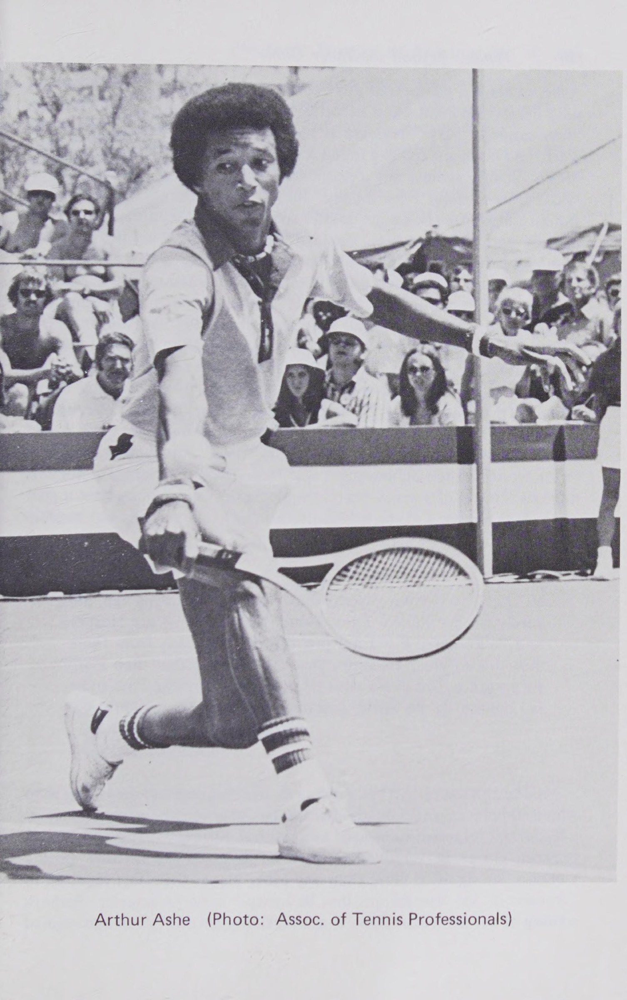
Hình 13.1: nhà vô địch · Arthur AsheFigure 13.1: Champion Arthur Ashe Arthur Ashe
Nếu bạn theo dõi sự phát triển của cách cầm vợt “được phê duyệt” trong vài năm gần đây, bạn sẽ nhận thấy sự thống trị của kiểu cầm vợt thuận tay phương Đông được chấp nhận rộng rãi trên toàn cầu (cách cầm “bắt tay” với hình chữ V được tạo bởi ngón cái và ngón trỏ ở mặt trên của vợt). Mặc dù đây vẫn là kiểu cầm vợt được phê duyệt trong các ấn phẩm của Hiệp hội quần vợt Hoa Kỳ, nhưng nó đã bị nhiều tay vợt trong giải đấu bỏ rơi để chuyển sang kiểu cầm vợt "bán phương Tây" (khoảng một phần tư vòng sang bên phải của cách cầm vợt phương Đông - dành cho người chơi thuận tay phải). Làm thế nào mà những người chơi này lại sử dụng cách cầm vợt này? Và tại sao họ lại gắn bó với nó? Có thể nào họ đã phát hiện ra nó và kinh nghiệm của họ đã tiếp tục xác nhận công dụng của nó? Họ từ bỏ giáo điều, không phải vì giáo điều đó sai mà vì họ đã tìm ra điều gì đó có ích hơn cho mình.
The same approach can be used with discovering the proper angle. Knowing what 45 degrees might look like, you can simply observe the angle with which your front foot steps toward the ball. If during your initial observations you observe your foot moving significantly less or more than the desired angle, don’t force it. Just allow Self 2 to approximate the desired angle until it feels comfortable. You are asking; it is executing. Be prepared for the fact that sometimes Self 2 may find that what works best for it is not in conformity with the instruction. Such might well be the case with the footwork on the forehand side.
Động tác bằng chân Rõ ràng là một trong những yếu tố quan trọng để thực hiện thành công bất kỳ cú đánh nào trong quần vợt. Nó cung cấp nền tảng hỗ trợ chuyển động của cơ thể khi vung để đánh bóng. Đã có rất nhiều bài viết về chủ đề này và rất dễ khiến chân bị vướng hoặc cảm thấy lúng túng trong quá trình “tuân theo” vô số hướng dẫn về động tác bằng chân. Chúng tôi sẽ thực hiện một cách tiếp cận khác. Kỹ thuật tác động bằng chân thường được giảng dạy bởi các chuyên gia về trái tay hầu như không thay đổi trong hai mươi năm qua. Những người chơi thuận tay phải thường được hướng dẫn “đánh bóng bằng chân di chuyển về phía bóng một góc khoảng 45 độ với hai chân tách ra một cách thoải mái”. Người ta thường giải thích rằng “một người có xu hướng mất thăng bằng nếu hai chân quá gần nhau” và rằng “trọng lượng của bạn sẽ chuyển từ chân sau về chân trước khi bạn di chuyển để đánh bóng”. Giả sử rằng hai hướng dẫn này có thể là những hướng dẫn hữu ích để học kỹ thuật động tác bằng chân, thì làm cách nào để sử dụng chúng một cách tốt nhất? Đầu tiên, hãy chống lại sự cám dỗ để tuân theo họ ngay lập tức. Bước đầu tiên là quan sát kỹ động tác chân của bạn, đặc biệt vì nó liên quan đến một trong các biến trong hướng dẫn, chẳng hạn như chuyển trọng lượng. Không thực hiện bất kỳ thay đổi có ý thức nào trong quá trình chuyển đổi trọng lượng của bạn, chỉ cần quan sát quá trình chuyển đổi đang diễn ra như thế nào. Khi bạn tiếp tục quan sát, rất có thể cân nặng của bạn sẽ tự động bắt đầu thực hiện một số thay đổi, đó là nếu cần có bất kỳ thay đổi nào. Bạn có thể để Self 2 thử nghiệm cho đến khi nó tìm thấy thứ cảm thấy tốt nhất và phù hợp nhất với bạn. Cách tiếp cận tương tự có thể được sử dụng để khám phá góc thích hợp. Biết 45 độ trông như thế nào, bạn có thể chỉ cần quan sát góc mà chân trước của bạn bước về phía quả bóng. Nếu trong quá trình quan sát ban đầu, bạn nhận thấy bàn chân của mình di chuyển ít hơn hoặc nhiều hơn đáng kể so với góc mong muốn, đừng ép buộc. Chỉ cần cho phép Self 2 đạt được góc gần như mong muốn cho đến khi cảm thấy thoải mái. Bạn đang hỏi; nó đang thực thi. Hãy chuẩn bị tinh thần cho sự thật rằng đôi khi Self 2 có thể thấy rằng điều tốt nhất cho nó lại không phù hợp với sự hướng dẫn. Điều đó có thể đúng với trường hợp động tác bằng chân ở phía thuận tay. Ngược lại với cú đánh trái tay, những gì được chấp nhận là động tác bằng chân đúng trên cú thuận tay đã thay đổi đáng kể trong hai mươi năm qua. Khi ấn bản đầu tiên của cuốn sách này được xuất bản, người ta thường dạy rằng động tác bằng chân ở bên thuận tay phải gần giống như ở bên trái tay, ngoại trừ việc chân kia di chuyển về phía trước về phía bóng ở một góc xấp xỉ 45 độ. Đó chắc chắn là cách tôi đã được dạy khi lần đầu tiên học trò chơi này hơn 50 năm trước. Thực tế, khi tôi tìm hiểu, các bước di chuyển chân “đúng” đã được sơn trên một tấm thảm cao su màu đen. Để học các động tác bằng chân được quy định khi chạy thuận tay, tôi đã được huấn luyện cách đặt chân của mình theo các bước đã in sẵn nhiều lần cho đến khi tôi có thể thực hiện mà không cần nhìn. Sau đó, khi học bài, việc không thể hiện lại động tác chính xác đó là tín hiệu để người hướng dẫn đưa ra hướng dẫn sửa chữa. Tuy nhiên, hiện nay có hai loại động tác bằng chân thay thế và được chấp thuận phổ biến được khuyến nghị. Một cách, được gọi là “thế thuận tay mở”, được phát hiện và truyền bá bởi những người chơi trên sân đất nện, những người bắt đầu đánh với trọng lượng đặt ở chân phải hoặc chân sau, thay vì chuyển trọng lượng sang chân trước. Thay vì bước vào bóng bằng chân trái, họ sẽ bước theo chiều ngang, song song với đường cuối sân, với chân phải tạo tư thế gần như 180 độ. Họ sẽ xoay vai, xoay hông và thư giãn như một cái mở nút chai để đánh bóng. Dễ quan sát hơn là mô tả, tư thế thuận tay mở tỏ ra rất hiệu quả trên sân đất nện và cuối cùng đã được nhiều chuyên gia chơi trên sân cứng hoặc sân cỏ áp dụng. Nó có ưu điểm là giúp tạo ra xoáy lên dễ dàng hơn và cũng giúp quay trở lại giữa sân nhanh hơn so với khi đánh bằng chân trái. Sự tiến triển này đặc biệt thú vị đối với tôi, vì tôi nhớ vô số lần tôi bị mắng vì đánh thuận tay theo cách này, trước khi nó được “chấp thuận”. Để học động tác bằng chân cho cú thuận tay “tư thế mở” này cùng với các yếu tố khác của cú vung đi kèm với nó sẽ là một nhiệm vụ khó khăn nếu bạn phải chia nó thành các phần cấu thành, học chúng theo hướng dẫn và sau đó ghép tất cả chúng lại với nhau. Tuy nhiên, việc học có thể không quá khó nếu bạn quan sát ai đó thực hiện cú đánh tốt, hãy để bản thân “chơi thử” trước khi chú ý đến các chi tiết của cú đánh. Trong quá trình thử nghiệm này, điều quan trọng là bạn phải hoàn toàn không phán xét, thậm chí không quan tâm đến kết quả của mình, cho đến khi bạn cảm nhận được toàn bộ cú swing. Phải đến lúc đó bạn mới tập trung chú ý vào các chi tiết cụ thể và cho phép chúng tự hoàn thiện. Khi bạn cảm thấy sẵn sàng, bạn có thể chọn tập trung chú ý vào mức độ xoay hông, quan sát việc xoay vai, hành động của cánh tay, v.v. Bạn sẽ quan sát lần lượt từng điều này giống như cách bạn phân bổ trọng lượng của bàn chân ở bên trái tay mà không cần bất kỳ nỗ lực có ý thức nào để làm cho chúng tuân theo một khuôn mẫu nhất định, nhưng cho phép bản thân khám phá cảm giác thoải mái cho cơ thể và tính cách của bạn và mang lại kết quả hiệu quả. Nếu bạn đã học được cách đánh thuận tay ở tư thế mở, điều đó không có nghĩa là bạn phải sử dụng nó trong mọi cú đánh hoặc thậm chí đó là cách chính xác để đánh thuận tay. Kỹ thuật được chấp nhận khác để đánh thuận tay, được gọi là tư thế nửa mở, được thực hiện bằng cách tạo một góc 90 đến 100 độ giữa hai bàn chân của bạn và vạch cuối sân. Rõ ràng đây là sự dung hòa giữa động tác bằng chân truyền thống và thế đứng thuận tay cởi mở và chia sẻ một số ưu điểm của mỗi động tác. Nếu muốn, bạn có thể thành thạo cả ba cú thuận tay và sử dụng từng cú thuận tay khi thấy phù hợp. Điều quan trọng là sự lựa chọn được giữ trong tay bạn, và thay vì cố gắng điều chỉnh bản thân hoặc cú đánh của bạn theo một mô hình định sẵn, bạn điều chỉnh các mô hình đó cho phù hợp với mình và chỉ sử dụng chúng để giúp bạn khám phá và phát triển các kỹ năng mà bạn mong muốn. Làm khác đi làm giảm tiềm năng của bạn với tư cách là một người chơi và một người học hỏi. Khi bạn hiểu cách sử dụng sự chú ý đơn giản để tìm hiểu bất kỳ khía cạnh kỹ thuật nào của trò chơi, có hoặc không có sự trợ giúp của hướng dẫn kỹ thuật, thì việc khám phá những vị trí quan trọng để tập trung sự chú ý của bạn là một vấn đề khá dễ dàng và sau đó sử dụng quy trình khám phá đơn giản tương tự từ kinh nghiệm. Dưới đây là tóm tắt một số điểm quan trọng của các cú đánh mặt đất. Bạn có thể lấy bất kỳ hướng dẫn nào từ bất kỳ tạp chí hoặc cuốn sách quần vợt nào và thêm vào danh sách. Danh sách kiểm tra cú đánh nền một phần 1. Đánh lùi Chính xác thì đầu vợt của bạn ở phía sau cú đánh của bạn ở đâu? Bóng ở đâu khi bạn bắt đầu vung vợt sau? Điều gì xảy ra với mặt vợt trong quá trình backswing? 2. Tác động Bạn có thể cảm nhận được vị trí bóng chạm vợt khi va chạm không? Cân nặng của bạn được phân bổ như thế nào? Góc mặt vợt khi va chạm là bao nhiêu? Bạn có thể cảm nhận được bóng trên mặt vợt trong bao lâu? Bạn có thể cảm nhận được loại và độ xoáy được truyền vào quả bóng ở mức độ nào? Cảm giác cú đánh chắc chắn đến mức nào hoặc mức độ rung được truyền lên cánh tay của bạn khi va chạm là bao nhiêu? Bóng ở vị trí va chạm ở phía trước hoặc phía sau bạn bao xa? 3. Theo dõi vợt của bạn kết thúc ở đâu? Theo hướng nào? Điều gì đã xảy ra với mặt vợt kể từ khi va chạm? Có bất kỳ sự do dự hoặc phản kháng nào xảy ra trong quá trình theo dõi không? 4. Động tác bằng chân Trọng lượng của bạn được phân bổ như thế nào trong quá trình chuẩn bị và khi tiếp xúc? Điều gì xảy ra với sự cân bằng của bạn trong khi bắn? Bạn đã đi bao nhiêu bước để đến được quả bóng? Kích thước các bước là bao nhiêu? Bàn chân của bạn tạo ra những loại âm thanh nào trên sân khi bạn di chuyển? Khi quả bóng đến gần bạn, bạn rút lui, tiến lên hay giữ vững vị trí của mình? Bạn đánh bóng từ nền tảng vững chắc đến mức nào?
In contrast to the backhand, what has been accepted as correct footwork on the forehand has changed dramatically over the past twenty years. When the first edition of this book was published, it was commonly taught that the footwork on the forehand should be close to the same as on the backhand, except with the other foot moving forward toward the ball at approximately a 45-degree angle. That was certainly the way I was taught when I first learned the game over fifty years ago. In fact, when I learned, the “correct” footwork steps were painted on a black rubber mat. To learn the prescribed footwork on the running forehand, I was trained to place my feet in the printed steps over and over again until I could do it without looking. Then, when taking my lesson, failure to reproduce that exact footwork was a cue to the instructor to give corrective instructions. However, now there are two alternative and commonly approved footworks recommended. One way, called the “open stance forehand,” was discovered and propagated by clay-court players who began hitting with weight established on their right, or back foot, instead of transferring weight to the front foot. Instead of stepping into the ball with the left foot, they would step horizontally, parallel to the baseline, with their right foot assuming an almost 180-degree stance. They would turn their shoulders, rotate their hips and unwind like a corkscrew to hit the ball. Easier to observe than to describe, the open stance forehand proved very effective on clay courts and ultimately was adapted by many professionals playing on hard courts or grass as well. It had the advantage of making it easier to produce topspin and also to return to the center of the court faster than when hitting off of one’s left foot. This evolution is especially interesting to me, as I remember the countless times I was scolded for hitting the forehand in this way, before it had become “approved.” To learn the footwork for this “open stance” forehand along with the other elements of the swing that go with it would be a daunting task if you had to break it into its component parts, learn them by means of instructions and then put them all together. However, it might not be so difficult to learn if you observed someone who did the stroke well, let yourself “play around with it,” before putting your attention to the details of the swing. During this experiment it would be important to be totally nonjudgmental, even unconcerned about your results, until you got a feel for the swing as a whole. Not until then would you focus your attention on the specifics and allow them to refine themselves. When you felt ready, you might choose to focus attention on how much your hips were rotating, observe your shoulder turn, the action of your arm, etc. You would observe each of these in turn just as you did the weight distribution of your feet on the backhand,without any conscious effort to make them conform to a certain pattern, but allowing yourself to discover the feel that is comfortable for your body and personality and produces effective results. If you learned how to hit the open stance forehand, that does not mean that you have to use it on every shot or that it is even the correct way to hit the forehand. The other accepted technique for hitting the forehand, called the semi-open stance, is done by forming a 90- to 100-degree angle between your two feet and the baseline. Obviously this is a compromise between the traditional footwork and the open stance forehand and shares some of the advantages of each. If you so choose, you can master all three forehands, and use each when it seems appropriate. The important thing is that the choice is kept in your court, and that instead of trying to fit yourself or your stroke into a preconceived model, you fit the models to you and use them only to help you discover and develop the skills you desire. To do otherwise is to diminish your potential as a player, and as a learner. When you understand how simple attention can be used to learn any technical aspect of the game, with or without the aid of a technical instruction as a guide, it is quite an easy matter to discover the important places to focus your attention, and then use the same simple process of discovering from experience. A few critical focal points for the ground strokes are summarized below. You could take any instruction from any tennis magazine or book and add to the list. A partial ground stroke checklist 1. Backswing Exactly where is the head of your racket at the back of your swing? Where is the ball when you initiate your backswing? What happens with the face of the racket during the backswing? 2. Impact Can you feel where the ball is meeting the racket at impact? How is your weight distributed? What is theangle of racket face at impact? How long can you feel the ball on the face of the racket? To what extent can you feel the kind and amount of spin being imparted to the ball? How solid does the shot feel or how much vibration is sent up your arm at impact? How far in front of or behind you is the ball at impact? 3. Follow-through Where does your racket finish? In what direction? What has happened to the face of the racket since impact? Is there any hesitancy or resistance experienced during the follow-through? 4. Footwork How is your weight distributed during preparation and at impact? What happens to your balance during the shot? How many steps did you take to get to the ball? What size are the steps? What kinds of sounds do your feet make on the court as you move? When the ball approaches you, do you retreat, advance or hold your ground? From how solid a base are you hitting the ball? Compared with the other strokes of tennis, the serve is the most complicated. Both arms are involved in the stroke, and your hitting arm is making simultaneous movements of shoulder, elbow and wrist. The movements of the serve are much too complicated for Self 1 to master by memorizing instructions for each element of the stroke. But it is not so difficult if you let Self 2 do the learning by focusing attention on the different elements of the stroke as well as the stroke as a whole. Some Places to Focus Attention on the Serve In general, there are some specific places where it can help to focus your attention for practicing your serve. Remember the fundamental goal is still the same, over the net and into the court with power, accuracy and consistency. Here are just a few variables to consider. How high is it? How far does it drop, if at all, before contact with your racket? How much forward or behind, right or left of the toe of your front foot? Is there any time during the serve when you feel off balance? What is the direction of your momentum at follow-through? How is your weight distributed during the serve? Observe the rhythm of your serve. Count the cadence of the rhythm you feel by saying, “da … da … da,” one “da” at the moment you start the serve, one at hit, as you bring the racket up, and one at contact. Feel and listen to the rhythm until you find what feels best and works best for you. Where is your racket at the moment before moving forward toward the ball? Is your racket coming around the right side of the ball or the left? Hitting it flat, or coming from left to right? To what extent? To what extent is your wrist snapping at impact? At what point in the swing does it begin to release? Power Because power is so sought after on the serve, it is not unusual for players to “try too hard” to produce it, and in the process to overtighten the muscles of wrist and arm. Ironically, the overtightening of these muscles has the opposite effect on power. It reduces power, by making it more difficult for the wrist and elbow to release freely. So again, the important point is to observe the tightness of your muscles so that you can experientially find the degree of tension that provides the best results.
Cú giao bóng So với các cú giao bóng khác trong quần vợt, cú giao bóng là phức tạp nhất. Cả hai cánh tay đều tham gia vào cú đánh và cánh tay đánh bóng của bạn đang thực hiện các chuyển động đồng thời của vai, khuỷu tay và cổ tay. Các chuyển động của cú giao bóng quá phức tạp nên Self 1 không thể thành thạo bằng cách ghi nhớ hướng dẫn cho từng thành phần của cú đánh. Nhưng sẽ không quá khó nếu bạn để Self 2 học bằng cách tập trung sự chú ý vào các yếu tố khác nhau của cú đánh cũng như toàn bộ cú đánh.
Your teaching pro can be helpful in pointing out the best focus of attention for your particular serve at its current state of development. As long as you take his guidance as an opportunity to explore your own experience, you really cannot help but learn in a natural and effective manner.
Một số vị trí cần tập trung chú ý vào cú giao bóng Nhìn chung, có một số vị trí cụ thể có thể giúp bạn tập trung sự chú ý vào việc thực hành cú giao bóng của mình. Hãy nhớ rằng mục tiêu cơ bản vẫn giống nhau, qua lưới vào sân với sức mạnh, độ chính xác và tính nhất quán. Đây chỉ là một vài biến để xem xét.
Besides the fact that we all have to learn as individuals, it is also obvious that there is no one best way to serve for everyone. If there were, why do so many of the best servers in tennis today serve so differently? Each may have learned things from others, but each of them evolved over time a way of serving that suited his own body, skill level, personality traits—in short, himself. And their process is still evolving. And in spite of all the credit they might give to different players or coaches for helping them find their serves, their primary development was directed from within themselves by that simple process of what feels good and what works for each individual.
THE TOSS Nó cao bao nhiêu? Nó rơi được bao xa, nếu có, trước khi tiếp xúc với vợt của bạn? Mũi chân trước của bạn tiến về phía trước hay phía sau, sang phải hay sang trái bao nhiêu?
As with many of the other strokes in tennis, the orthodox approach to the serve is under challenge by pros who seem to be breaking out of its mold. When I learned to serve some fifty years ago, my coach, John Gardiner, one of the best in the field, taught the approved method of the time. To get the arms moving in the correct direction and rhythm, we chanted the mantra, “down together, up together, hit.” What this meant was that both the tossing and the hitting arm were brought down at the same time. Then as the tossing arm was raised to toss the ball, the hitting arm was also raised and dropped down the back, poised for the moment of hit—much like a football quarterback cocks his arm in preparation to throw a forward pass. Then depending on how high the ball was tossed, the hitting arm would surge forward to strike the ball so that it would be fully extended at impact, and then follow through past the feet. Basic tennis gospel for fifty years.
CÂN BẰNG Có lúc nào trong quá trình giao bóng mà bạn cảm thấy mất thăng bằng không? Hướng động lượng của bạn khi theo dõi là gì? Trọng lượng của bạn được phân bổ như thế nào trong quá trình giao bóng?
Then just today, in the midst of writing this section on serving, I read an article in this month’s Tennis magazine that pointed out that the best servers in the game today, including Steffi Graf, Todd Martin, Pete Sampras, Mark Philippoussis and Goran Ivanisevic, do not in fact follow this downtogether-up-together motion. So from the point of view of the “right way” to serve, all these great players are doing it “wrong.”
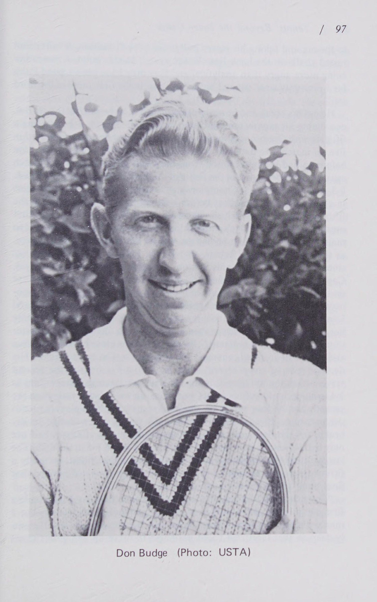
Hình 13.2: nhà vô địch · Don BudgeFigure 13.2: Champion don Don Budge
RHYTHM Quan sát nhịp độ giao bóng của bạn. Đếm nhịp điệu mà bạn cảm nhận được bằng cách nói, “da … da … da,” một “da” tại thời điểm bạn bắt đầu giao bóng, một khi đánh, khi bạn đưa vợt lên và một khi tiếp xúc. Cảm nhận và lắng nghe nhịp điệu cho đến khi bạn tìm thấy cảm giác tốt nhất và phù hợp nhất với mình.
The article was entitled “Stagger Your Arms for Serving” and the author recommended that when the tossing arm is fully extended for the toss, the hitting arm should still be pointing down toward the court. To learn to serve like these pros, the player is instructed thusly: “As the tossing arm rises, drop the hitting arm back and down,” followed by this explanation:
VỊ TRÍ VỢI VÀ CỔ TAY CỔ TAY Vợt của bạn hiện đang ở đâu trước khi di chuyển về phía bóng? Vợt của bạn đang di chuyển theo hướng bên phải hay bên trái của quả bóng? Đánh nó phẳng, hoặc đánh từ trái sang phải? Ở mức độ nào? Cổ tay của bạn bị gãy ở mức độ nào khi va chạm?
The old “up together” technique, which may seem more rhythmic, actually works against creating power for some players, because it forces the hitting arm to pause at the top of the backswing, destroying the build-up of momentum to that point.
Tại thời điểm nào trong cú swing nó bắt đầu thả ra?
The pictures of these pros serving makes it obvious that they are doing something very differently. The instruction continues:
Sức mạnh Bởi vì sức mạnh được săn đón khi giao bóng nên không có gì lạ khi người chơi “cố gắng quá mức” để tạo ra nó và trong quá trình đó, cơ cổ tay và cánh tay bị căng quá mức. Trớ trêu thay, việc siết chặt các cơ này lại có tác dụng ngược lại đối với sức mạnh. Nó làm giảm sức mạnh bằng cách khiến cổ tay và khuỷu tay khó có thể thả lỏng tự do hơn. Vì vậy, một lần nữa, điểm quan trọng là quan sát độ căng của cơ để bạn có thể tìm ra mức độ căng mang lại kết quả tốt nhất bằng kinh nghiệm. Chuyên gia giảng dạy của bạn có thể hữu ích trong việc chỉ ra điểm tập trung chú ý tốt nhất cho cú giao bóng cụ thể của bạn ở trạng thái phát triển hiện tại. Chỉ cần bạn coi sự hướng dẫn của anh ấy như một cơ hội để khám phá trải nghiệm của bản thân, bạn thực sự không thể không học hỏi một cách tự nhiên và hiệu quả. Bên cạnh thực tế là tất cả chúng ta đều phải học hỏi với tư cách cá nhân, rõ ràng là không có cách nào tốt nhất để phục vụ tất cả mọi người. Nếu có, tại sao nhiều người giao bóng tốt nhất trong quần vợt ngày nay lại giao bóng khác nhau đến vậy? Mỗi người có thể đã học được nhiều điều từ người khác, nhưng theo thời gian, mỗi người trong số họ đều phát triển một cách phục vụ phù hợp với cơ thể, trình độ kỹ năng, đặc điểm tính cách của mình—nói tóm lại là chính bản thân mình. Và quá trình của họ vẫn đang phát triển. Và bất chấp tất cả sự tín nhiệm mà họ có thể dành cho các tay vợt hoặc huấn luyện viên khác nhau vì đã giúp họ tìm được cú giao bóng, sự phát triển cơ bản của họ vẫn được định hướng từ bên trong họ bằng quy trình đơn giản về những gì cảm thấy tốt và những gì phù hợp với mỗi cá nhân. Cũng như nhiều cú đánh khác trong quần vợt, cách tiếp cận giao bóng chính thống đang bị thách thức bởi những tay vợt chuyên nghiệp dường như đang phá vỡ khuôn mẫu của nó. Khi tôi học phục vụ cách đây khoảng 50 năm, huấn luyện viên của tôi, John Gardiner, một trong những người giỏi nhất trong lĩnh vực này, đã dạy phương pháp được chấp thuận vào thời đó. Để cánh tay di chuyển theo đúng hướng và nhịp điệu, chúng tôi niệm câu thần chú, “cùng xuống, cùng lên, đánh”. Điều này có nghĩa là cả tay ném và tay đánh đều được hạ xuống cùng một lúc. Sau đó, khi cánh tay ném được nâng lên để ném bóng, cánh tay đánh cũng được nâng lên và thả xuống phía sau, sẵn sàng cho thời điểm đánh bóng — giống như một tiền vệ bóng đá giơ cánh tay của mình lên để chuẩn bị tung một đường chuyền về phía trước. Sau đó, tùy thuộc vào độ cao của quả bóng được ném, cánh tay đánh sẽ lao về phía trước để đánh bóng sao cho nó duỗi thẳng hoàn toàn khi va chạm, sau đó đi qua bàn chân. Phúc âm quần vợt cơ bản trong 50 năm. Rồi ngay hôm nay, khi đang viết phần này về giao bóng, tôi đọc được một bài báo trên tạp chí Tennis tháng này đã chỉ ra rằng những người giao bóng tốt nhất trong trò chơi hiện nay, bao gồm Steffi Graf, Todd Martin, Pete Sampras, Mark Philippoussis và Goran Ivanisevic, trên thực tế không tuân theo chuyển động cùng lên xuống này. Vì vậy, từ quan điểm về “cách giao bóng đúng đắn”, tất cả những tay vợt vĩ đại này đều đang thực hiện “sai”. Bài báo có tựa đề “Hãy loạng choạng cánh tay của bạn để giao bóng” và tác giả khuyến nghị rằng khi cánh tay tung bóng được mở rộng hoàn toàn để tung bóng, cánh tay đánh bóng vẫn phải hướng xuống phía sân. Để học cách giao bóng như những chuyên gia này, người chơi được hướng dẫn như sau: “Khi cánh tay tung lên, thả cánh tay đánh ra sau và xuống,” theo sau là lời giải thích sau: Kỹ thuật “lên cùng nhau” cũ, có vẻ nhịp nhàng hơn, thực sự có tác dụng chống lại việc tạo ra lực cho một số người chơi, bởi vì nó buộc cánh tay đánh phải tạm dừng ở đỉnh của cú backswing, phá hủy việc tạo đà đến thời điểm đó.
Most important of all, note how each of these players has his or her hitting arm in the
Hình ảnh của những người giao bóng chuyên nghiệp này cho thấy rõ ràng rằng họ đang làm điều gì đó rất khác biệt. Hướng dẫn tiếp tục: Quan trọng nhất, hãy lưu ý cách mỗi người chơi này có cánh tay đánh của mình ở vị trí “lòng bàn tay úp xuống”: tức là lòng bàn tay đánh hướng xuống đất tại thời điểm bóng được thả ra. … Điều này là cần thiết để đạt được “hiệu ứng lasso” của một cú giao bóng tốt, trong đó vợt sau đó nhanh chóng được nâng lên trên đầu và vòng xuống xung quanh lưng trước khi lao lên để đánh bóng.
“palm-down” position: i.e., the hitting-hand palm is facing the ground at the moment the ball is released. … This is necessary to achieve the “lasso effect” of a good serve, in which the racquet is then quickly raised above the head and circled down around the back before snapping up to strike the ball. I cite this instruction for two reasons: first, to show that gospels change and they are changed by people who had the courage to experiment outside the boundaries of the existing doctrine and trust in their own learning process. The second reason is to suggest that the prescribed way of making a change itself needs to change. When I read the above instruction for the so-called staggered arm timing, my mind is beset with several doubts. Do I even understand what is meant by such terms as “lasso effect” or “hitting-hand palm is facing the ground”? The next doubt that knocks at my door is, even if I did understand the instructions, could I follow them? Then, I wonder if I am going to be able to get rid of my “old way” of serving that I’ve practiced diligently for years. And finally, just because this way of serving works for professionals at their level, does that mean it is best for me? So how can you benefit from such an article that may in fact be pointing out a valid new discovery about the serve? First you might want to get clear on why you might want to experiment with making a change in the first place. It may not be sufficient reason that some top pros serve differently now or that this way of serving is coming into fashion. On the other hand, you may feel that if there is a way for you to increase power on your serve it would be worth the effort of experimentation for you. This first step of knowing what results you want is critical to maintaining control of the learning process where it belongs—with you. After reading an article or watching some people serve with the new method, don’t jump to the conclusion that this new way is necessarily “right” for you. Just let yourself (Self 2) observe whatever it finds interesting, and ignore comments from Self 1, which will want to be making up little formulas for you to follow. As you observe, certain things will “stand out” or come to the foreground of your attention spontaneously. Allow Self 2 to focus on elements that in its intelligence it might be ready to experiment with. When I was a child, I used to play touch football, and I noticed that I played quite a lot better when I’d just come home after my Dad had taken me to see the San Francisco 49ers play. I hadn’t studied the passing technique of Frankie Albert. But I had picked up something, and it made a difference when I played. I think most people have experienced something very similar to this. Although it is obvious that we can learn a great deal by watching better players play tennis, we have to learn how to watch. The best method is to simply watch without assuming that how the pro swings is how you should be swinging. In many cases, for a beginner to try to swing like a pro would be like asking a baby to walk before it has crawled. To formulate technique while watching the pro or by trying to imitate too closely can be detrimental to your natural learning process.
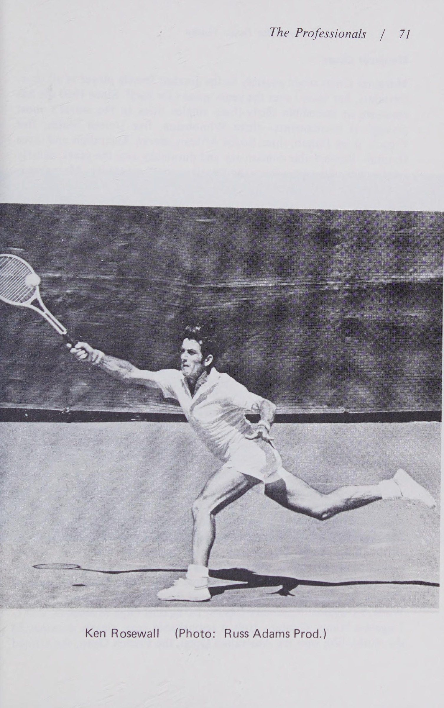
Hình 13.3: nhà vô địch · Ken RosewallFigure 13.3: Champion Ken Rosewall Ken Rosewall
Đưa ra hướng dẫn này vì hai lý do: thứ nhất, để chứng tỏ rằng các phúc âm thay đổi và chúng được thay đổi bởi những người có can đảm thử nghiệm bên ngoài ranh giới của học thuyết hiện tại và tin tưởng vào quá trình học tập của chính họ. Lý do thứ hai là gợi ý rằng bản thân cách thức thực hiện thay đổi đã được quy định cũng cần phải thay đổi. Khi tôi đọc hướng dẫn ở trên về cái gọi là cách căn thời gian so le của cánh tay, tâm trí tôi tràn ngập nghi ngờ. Tôi thậm chí có hiểu ý nghĩa của những thuật ngữ như “hiệu ứng Lasso” hay “lòng bàn tay đánh xuống đất” nghĩa là gì không? Nghi ngờ tiếp theo gõ cửa nhà tôi là, ngay cả khi tôi hiểu hướng dẫn, tôi có thể làm theo chúng không? Sau đó, tôi tự hỏi liệu mình có thể bỏ được “cách phục vụ cũ” mà tôi đã siêng năng thực hành trong nhiều năm hay không. Và cuối cùng, chỉ vì cách phục vụ này phù hợp với các chuyên gia ở cấp độ của họ, điều đó có nghĩa là nó tốt nhất cho tôi? Vì vậy, làm thế nào bạn có thể hưởng lợi từ một bài báo mà trên thực tế có thể chỉ ra một khám phá mới có giá trị về cú giao bóng? Trước tiên, bạn có thể muốn làm rõ lý do tại sao bạn muốn thử nghiệm việc thực hiện thay đổi ngay từ đầu. Có thể không đủ lý do để một số chuyên gia hàng đầu giao bóng theo cách khác hiện nay hoặc cách giao bóng này đang trở thành mốt. Mặt khác, bạn có thể cảm thấy rằng nếu có một cách để bạn tăng sức mạnh cho cú giao bóng của mình thì đó sẽ là nỗ lực đáng để bạn thử nghiệm. Bước đầu tiên để biết kết quả bạn mong muốn là rất quan trọng để duy trì quyền kiểm soát quá trình học tập vốn thuộc về bạn. Sau khi đọc một bài báo hoặc xem một số người giao bóng bằng phương pháp mới, đừng vội kết luận rằng cách mới này nhất thiết phải “phù hợp” với bạn. Chỉ cần để bản thân (Self 2) quan sát bất cứ điều gì nó thấy thú vị và bỏ qua những nhận xét từ Self 1, người sẽ muốn tạo ra những công thức nhỏ để bạn làm theo. Khi bạn quan sát, một số thứ nhất định sẽ “nổi bật” hoặc xuất hiện trước sự chú ý của bạn một cách tự nhiên. Cho phép Self 2 tập trung vào các yếu tố mà trí thông minh của nó có thể sẵn sàng thử nghiệm.
Instead allow yourself to focus on whatever most interests you about the movements of the pro you are watching. Self 2 will automatically pick up elements of the stroke that are useful to it and discard what is not useful. With each new swing, observe how it feels and how it works. Allow the natural learning process to lead you toward your best stroke. Do not force yourself to make the change. Just allow Self 2 to “play around” while it searches for new stroke possibilities. In doing so it will use what it can of the “hints” picked up in observation of the pro. Based on my experience and the experience of those I have worked with, Self 2 has very good instincts about when it is time to work on any particular element of your stroke. In learning how to learn by watching pros play, you may want to alternate between external observation and experimentation on the court, until you have confidence that you can access the particular stroke technique you are working on.
CÁCH XEM NHỮNG NGƯỜI CHUYÊN NGHIỆP Khi còn nhỏ, tôi thường chơi bóng đá cảm ứng và tôi nhận thấy rằng mình chơi tốt hơn rất nhiều khi vừa về nhà sau khi bố đưa tôi đi xem đội San Francisco 49ers thi đấu. Tôi chưa học kỹ thuật vô-lê của Frankie Albert. Nhưng tôi đã học được một điều gì đó và nó đã tạo ra sự khác biệt khi tôi chơi. Tôi nghĩ hầu hết mọi người đều đã trải qua điều gì đó rất giống với điều này. Mặc dù rõ ràng là chúng ta có thể học được rất nhiều điều khi xem những người chơi tennis giỏi hơn chơi quần vợt, nhưng chúng ta phải học cách quan sát. Phương pháp tốt nhất là chỉ quan sát mà không cho rằng cách swing của người chuyên nghiệp là cách bạn nên swing. Trong nhiều trường hợp, đối với người mới bắt đầu cố gắng vung vợt như một người chuyên nghiệp cũng giống như yêu cầu một đứa trẻ tập đi trước khi nó biết bò. Việc hình thành kỹ thuật trong khi xem người chuyên nghiệp hoặc cố gắng bắt chước quá kỹ có thể gây bất lợi cho quá trình học tập tự nhiên của bạn. Thay vào đó, hãy cho phép bản thân tập trung vào bất cứ điều gì khiến bạn quan tâm nhất về chuyển động của chuyên gia mà bạn đang xem. Self 2 sẽ tự động chọn những phần có ích của nét vẽ và loại bỏ những phần không có ích. Với mỗi cú xoay mới, hãy quan sát cảm giác và cách thức hoạt động của nó. Hãy để quá trình học tập tự nhiên dẫn bạn tới cú đánh tốt nhất. Đừng ép bản thân phải thay đổi. Chỉ cần cho phép Self 2 “chơi đùa” trong khi nó tìm kiếm các khả năng đánh mới. Khi làm như vậy, nó sẽ sử dụng những gì có thể từ “gợi ý” thu được khi quan sát chuyên gia. Dựa trên kinh nghiệm của tôi và kinh nghiệm của những người tôi đã làm việc cùng, Self 2 có trực giác rất tốt về thời điểm cần thực hiện bất kỳ yếu tố cụ thể nào trong cú đánh của bạn. Khi học cách học bằng cách xem các tay vợt chuyên nghiệp thi đấu, bạn có thể muốn luân phiên giữa quan sát bên ngoài và thử nghiệm trên sân, cho đến khi bạn tự tin rằng mình có thể tiếp cận được kỹ thuật đánh cụ thể mà bạn đang luyện tập. Với cách tiếp cận Inner Game, quyền lực cuối cùng vẫn ở bên trong quá trình xen kẽ giữa quan sát bên ngoài (hoặc ghi nhớ một chỉ dẫn bên ngoài) và sự tập trung hoàn toàn nhận thức vào chuyển động của chính bạn. Nhưng không có sự phán xét cần thiết trong quá trình này. Bạn nhận thấy sự khác biệt giữa những gì bạn đang làm và mô hình bên ngoài, nhưng chỉ cần chú ý đến chúng và tiếp tục quan sát, cảm nhận chuyển động của chính mình và kiểm tra kết quả. Tư duy học tập phổ biến là quyền tự do tìm kiếm cảm giác phù hợp với mình. Tóm lại, tôi tin rằng ai đó đã phát hiện ra cú đánh tốt nhất của mình có thể giúp bạn khám phá cú đánh tốt nhất của mình. Kiến thức về kỹ thuật mà một người học được có thể mang lại lợi thế cho người khác trong việc khám phá kỹ thuật nào hoạt động tốt nhất. Nhưng sẽ rất nguy hiểm nếu biến cú đánh của người đó hoặc bất kỳ mô tả cú đánh nào thành tiêu chuẩn đúng sai của bạn. Self 1 dễ dàng say mê với các công thức cho biết vợt nên ở đâu và khi nào. Nó thích cảm giác kiểm soát được khi làm việc đó theo sách vở. Nhưng Self 2 thích cảm giác trôi chảy—toàn bộ nét vẽ là một thứ. Trò chơi Nội tâm là sự khuyến khích để bạn giữ liên lạc với quá trình học tập Cái tôi thứ 2 bẩm sinh của bạn, đồng thời tránh bị cuốn vào việc cố gắng quá mức để khiến các cú đánh của bạn phù hợp với hình mẫu bên ngoài. Sử dụng các mô hình bên ngoài trong quá trình học tập của bạn, nhưng đừng để chúng sử dụng bạn. Việc học tự nhiên là và sẽ luôn diễn ra từ trong ra ngoài chứ không phải ngược lại. Bạn là người học và chính quá trình học tập nội tại của cá nhân bạn sẽ quyết định cuối cùng việc học tập của bạn. Điều tôi thích ở cách tiếp cận này là tôi không có cảm giác rằng tôi đang điều chỉnh bản thân hoặc học sinh của mình theo một hình mẫu bên ngoài có thể đang là mốt hiện nay, mà tôi đang sử dụng bất kỳ mô hình bên ngoài nào để giúp tôi tiến thêm một bước trong quá trình tiến hóa tự nhiên hướng tới những nét vẽ đẹp nhất của mình. Sau một bài học tennis của Inner Game, một chuyên gia chơi gôn đã nói như sau: "Điều tôi coi là kỹ thuật phù hợp cho cú đánh của mình lại luôn thay đổi từng ngày. Mô hình của tôi luôn bị phá hủy và xây dựng lại khi tôi học hỏi ngày càng nhiều. Kỹ thuật của tôi luôn phát triển." Bản chất của Self 2 là tiến hóa mỗi khi có cơ hội. Khi kỹ thuật của bạn tiến triển, bạn sẽ bắt đầu học kỹ thuật tốt hơn và có thể thực hiện những thay đổi lớn trong một khoảng thời gian ngắn. Khi bạn khám phá khả năng học tập của Self 2, không chỉ các cú đánh quần vợt của bạn sẽ được cải thiện mà bạn còn tăng cường khả năng học hỏi bất cứ điều gì. Đối diện là một chiếc bàn có thể cho bạn ý tưởng về cách làm theo hướng dẫn về bất kỳ cú đánh nào từ một tay vợt chuyên nghiệp, một tạp chí quần vợt hoặc một cuốn sách và biến chúng thành một hướng dẫn nhận thức sẽ tạo điều kiện thuận lợi cho việc khám phá kỹ thuật tối ưu của riêng bạn. Những quan sát này nên được thực hiện trong nhiều lần chụp cho đến khi Self 2 có cơ hội thử nghiệm và quyết định cách đánh ưa thích của mình. Nếu bạn có một giáo viên, hãy để họ dạy, nhưng hãy kiểm soát Bản ngã 2 vì đó thực sự là nguồn lực lớn nhất của bạn.
With the Inner Game approach, the final authority stays inside during the alternation between external observation (or remembrance of an external instruction) and total focus of awareness on your own movements. But there is no judgment necessary in the process. You see differences between what you are doing and the external model, but simply notice them and continue to observe, feel your own movements and check the results. The prevailing learning mind-set is a freedom to search for the feel that works for you. In summary, I believe someone who has discovered his or her best stroke can help you discover your best stroke. Knowledge of technique learned by one person can give another an advantage in discovering what technique works best. But it is dangerous to make that person’s stroke or any stroke description into your standard for right and wrong. Self 1 easily gets enamored of formulas that tell it where the racket should be and when. It likes the feeling of control it gets from doing it by the book. But Self 2 likes the feeling of flow—of the whole stroke as one thing. The Inner Game is an encouragement to keep in touch with the Self 2 learning process you were born with while avoiding getting caught up in trying too hard to make your strokes conform to an outside model. Use outside models in your learning, but don’t let them use you. Natural learning is and always will be from the inside out, not vice versa. You are the learner and it is your individual, internal learning process that ultimately governs your learning. What I like about this approach is that I do not have the feeling that I am fitting myself or my students into an external model that may be in fashion for the moment, but that I am using any external model to further help me take a step in the natural evolution toward my very best strokes. After an Inner Game tennis lesson, a golf professional put it this way: “What I consider to be the right technique for my swing is ever-changing day by day. My model is always being destroyed and rebuilt as I learn more and more. My technique is always evolving.” Self 2’s nature is to evolve every chance it gets. As your technique evolves, you will start to become better at learning technique and be able to make big changes in a short period of time. As you discover Self 2’s learning capabilities, not only will your tennis strokes improve, but you will have increased your capacity to learn anything. Opposite is a table that can give you an idea of how to take instructions on any strokes from a pro, a tennis magazine or book, and alter them into an awareness instruction that will facilitate the discovery of your own optimal technique. These observations should be made over the course of as many shots as it takes until Self 2 has had the chance to experiment and has settled on its preferred stroke. If you have a teacher, let him or her teach, but keep Self 2 in control, because it really is your greatest resource. Notice the level of your follow-through relative to your shoulder. Take your racket back early. Observe where your racket is when the ball bounces. Get down to the ball. Feel the extent of knee bend on the next ten shots. Take the racket back below the level of the ball to produce topspin. Notice the level of your racket in relation to the ball at impact. Feel the contact and notice the amount of topspin produced. Hit the ball in the center of the racket. Sense (not with your eyes) where the ball makes contact with the racket face. Plant your back foot when setting up for your ground stroke. Notice what percent of your weight is on your back foot as you prepare to hit your ground strokes VOLLEY Hit the ball in front of you. Notice where you are making contact with the Volley the ball deep into the opponent’s court. Notice where your volleys are landing in relation to the baseline. Don’t take a backswing. Punch the ball. How far back are you taking your racket? What is the minimum amount possible? What amount of backswing provides the best opportunity to punch the ball? Whenever possible, strike the ball before it drops below the level of the net. Focus on the space between the ball and the top of the net. Notice the differing amounts. SERVE Hit the ball with your arm fully extended. Notice the degree of bend in your elbow at the moment of impact with the ball. Toss the ball as high as the extended arm and racket, and about six inches in front of your lead foot. Observe the height of your toss. Let the ball drop and notice where it lands in relation to your lead foot. THE PREVIOUS CHAPTER MAY HAVE GIVEN YOU SOME IDEAS ABOUT changes you would like to make in your tennis strokes. The aim of this chapter is to summarize the Inner Game method of how to effect such changes so that they become a spontaneous part of your behavior. Tips are a dime a dozen, and there are good ones and bad ones. But what is more difficult to come by is a workable way to apply tips, to replace one pattern of behavior with a new one. It is in the process of changing habits that most players experience the greatest difficulty. When one learns how to change a habit, it is a relatively simple matter to learn which ones to change. Once you learn how to learn, you have only to discover what is worth learning. Summarized below is what could be called a new way of learning. Actually, it is not new at all; it is the oldest and most natural way of learning—simply a method of forgetting the unnatural ways of learning that we have accumulated. Why is it so easy for a child to pick up a foreign language? Primarily because he hasn’t learned how to interfere with his own natural, untaught learning process. The Inner Game way of learning is a return toward this childlike way.
HƯỚNG DẪN KỸ THUẬT NHẬN THỨC HƯỚNG DẪN KỸ THUẬT HƯỚNG DẪN Lưu ý mức độ Theo dõi ở vai theo cấp độ ĐẤT ĐẤT của bạn. so với vai của bạn.
By the word “learning” I do not mean the collection of information, but the realization of something which actually changes one’s behavior—either external behavior, such as a tennis stroke, or internal behavior, such as a pattern of thought. We all develop characteristic patterns of acting and thinking, and each such pattern exists because it serves a function. The time for change comes when we realize that the same function could be served in a better way. Take the habit of rolling one’s racket over after hitting a forehand. This behavior is an attempt to keep the ball from going out, and it exists to produce the desired result. But when the player realizes that by the proper use of topspin the ball can be kept in the court without the risks of error involved in a roll-over follow-through, then the old habit is ready to be dropped.
Quan sát nơi bạn mang vợt về sớm. vợt là khi bóng nảy lên. Cảm nhận mức độ của Get xuống bóng. uốn cong đầu gối trong mười lần bắn tiếp theo. Lưu ý mức độ của vợt của bạn trong phần Đưa vợt trở lại bên dưới so với mức độ của quả bóng để tác động. Cảm nhận độ xoáy lên của quả bóng. tiếp xúc và để ý lượng xoáy lên được tạo ra. Cảm nhận (không phải bằng cách đánh bóng vào giữa mắt) nơi bóng vợt. tiếp xúc với mặt vợt. Chú ý bao nhiêu phần trăm Đặt chân sau của bạn khi trọng lượng của bạn dồn vào mặt đất cho bàn chân sau của bạn khi thực hiện cú đánh. bạn chuẩn bị thực hiện cú đánh trên mặt đất của mình. Chú ý nơi bạn BÓNG đánh quả bóng trước mặt bạn. đang liên lạc với Thông báo trong đó cú vô lê của bạn đưa bóng sâu vào trong cú vô lê đang chạm sân đối phương. liên quan đến vạch cuối sân.
It is much more difficult to break a habit when there is no adequate replacement for it. This difficulty often exists when we become moralistic about our tennis game. If a player reads in a book that it is wrong to roll his racket over, but is not offered a better way to keep the ball in the court, it will take a great deal of willpower to keep his racket flat when he’s worried about the ball flying out of the court. As soon as this player gets into a game, you can be sure that he will revert to the stroke that gave some sense of security that his ball would not sail out.
Bạn mang vợt của mình quay lại bao xa? Số tiền tối thiểu là bao nhiêu Đừng thực hiện động tác backswing. khả thi? Những gì đấm bóng. Số lần vung vợt sau mang lại cơ hội tốt nhất để đấm bóng? Tập trung vào khoảng trống Bất cứ khi nào có thể, hãy tấn công giữa quả bóng và quả bóng trước khi nó rơi xuống đầu lưới. dưới mức của mạng. Lưu ý số tiền khác nhau. Chú ý mức độ Đánh bóng với cánh tay uốn cong ở khuỷu tay PHỤC VỤ mở rộng hoàn toàn. tại thời điểm bóng va chạm. Quan sát độ cao Tung bóng cao bằng mức tung của bạn. Hãy để cánh tay mở rộng và vợt, quả bóng rơi và chú ý và cách khoảng 6 inch về phía trước nơi nó tiếp đất bằng bàn chân dẫn đầu của bạn. liên quan đến bàn chân dẫn đầu của bạn.
It is not helpful to condemn our present behavior patterns—in this case our present imperfect strokes—as “bad”; it is helpful to see what function these habits are serving, so that if we learn a better way to achieve the same end, we can do so. We never repeat any behavior which isn’t serving some function or purpose. It is difficult to become aware of the function of any pattern of behavior while we are in the process of blaming ourselves for having a “bad habit.” But when we stop trying to suppress or correct the habit,we can see the function it serves, and then an alternative pattern of behavior, which serves the same function better, emerges quite effortlessly.
Chương 6
Thay đổi thói quen
Chương trước hẳn đã gợi cho bạn vài ý tưởng về
những thay đổi bạn muốn thực hiện trong các cú đánh quần vợt của mình. Mục đích của chương này là tóm tắt phương pháp Inner Game về cách tác động đến những thay đổi đó để chúng trở thành một phần tự phát trong hành vi của bạn. Tiền boa thì có vô số, có cái tốt và cái xấu. Nhưng điều khó khăn hơn là tìm ra một cách khả thi để áp dụng các mẹo, thay thế một kiểu hành vi này bằng một kiểu hành vi mới. Chính trong quá trình thay đổi thói quen mà hầu hết người chơi đều gặp khó khăn lớn nhất. Khi một người học cách thay đổi một thói quen, việc tìm hiểu những thói quen nào cần thay đổi là một vấn đề tương đối đơn giản. Một khi bạn học được cách học, bạn chỉ cần khám phá ra điều gì đáng học. Tóm tắt dưới đây là những gì có thể được gọi là một cách học tập mới. Thực ra nó không hề mới chút nào; đó là cách học lâu đời nhất và tự nhiên nhất - đơn giản là một phương pháp quên đi những cách học không tự nhiên mà chúng ta đã tích lũy. Tại sao trẻ học ngoại ngữ lại dễ dàng đến vậy? Chủ yếu là vì anh ta chưa học được cách can thiệp vào quá trình học tập tự nhiên, không được dạy dỗ của chính mình. Cách học Trò chơi Nội tâm là sự quay trở lại với cách học như trẻ thơ này. Khi dùng từ “học tập”, tôi không có ý nói đến việc thu thập thông tin mà là việc nhận ra điều gì đó thực sự làm thay đổi hành vi của một người – hoặc là hành vi bên ngoài, chẳng hạn như một cú đánh quần vợt, hoặc hành vi bên trong, chẳng hạn như một kiểu suy nghĩ. Tất cả chúng ta đều phát triển những khuôn mẫu hành động và suy nghĩ đặc trưng, và mỗi khuôn mẫu như vậy tồn tại bởi vì nó phục vụ một chức năng. Thời điểm thay đổi đến khi chúng ta nhận ra rằng chức năng tương tự có thể được phục vụ theo cách tốt hơn. Hãy tập thói quen lăn vợt sau khi đánh một cú thuận tay. Hành vi này là một nỗ lực để giữ bóng không đi ra ngoài và nó tồn tại để tạo ra kết quả mong muốn. Nhưng khi người chơi nhận ra rằng bằng cách sử dụng xoáy lên hợp lý, bóng có thể được giữ trên sân mà không có nguy cơ mắc lỗi liên quan đến động tác lăn qua theo, thì thói quen cũ đã sẵn sàng để bỏ đi. Việc phá bỏ một thói quen sẽ khó khăn hơn nhiều khi không có sự thay thế thích hợp cho nó. Khó khăn này thường tồn tại khi chúng ta trở nên có đạo đức trong trò chơi quần vợt của mình. Nếu một tay vợt đọc trong sách rằng việc lăn vợt của mình là sai nhưng không được đưa ra cách nào tốt hơn để giữ bóng trong sân, thì sẽ cần rất nhiều ý chí để giữ cho vợt của anh ta phẳng khi anh ta lo lắng về việc bóng bay ra khỏi sân. Ngay khi người chơi này bước vào trận đấu, bạn có thể chắc chắn rằng anh ta sẽ quay lại cú đánh mang lại cảm giác an toàn rằng quả bóng của anh ta sẽ không bay ra ngoài. Sẽ chẳng ích gì nếu lên án những kiểu hành vi hiện tại của chúng ta—trong trường hợp này là những nét vẽ không hoàn hảo hiện tại của chúng ta—là “xấu”; Sẽ rất hữu ích nếu biết những thói quen này đang phục vụ chức năng gì, để nếu chúng ta học được cách tốt hơn để đạt được mục đích tương tự thì chúng ta có thể làm được như vậy. Chúng tôi không bao giờ lặp lại bất kỳ hành vi nào không phục vụ một số chức năng hoặc mục đích. Thật khó để nhận thức được chức năng của bất kỳ kiểu hành vi nào khi chúng ta đang trong quá trình đổ lỗi cho bản thân vì đã có một “thói quen xấu”. Nhưng khi chúng ta ngừng cố gắng ngăn chặn hoặc điều chỉnh thói quen, chúng ta có thể thấy chức năng mà nó giao bóng, và sau đó một mô hình hành vi thay thế, phục vụ chức năng tương tự tốt hơn, sẽ xuất hiện khá dễ dàng.
One hears a lot of talk about grooving one’s strokes in tennis. The theory is a simple one: every time you swing your racket in a certain way, you increase the probabilities that you will swing that way again. In this way patterns, called grooves, build up which have a predisposition to repeat themselves. Golfers use the same term. It is as if the nervous system were like a record disk. Every time an action is performed, a slight impression is made in the microscopic cells of the brain, just as a leaf blowing over a fine-grained beach of sand will leave its faint trace. When the same action is repeated, the groove is made slightly deeper. After many similar actions there is a more recognizable groove into which the needle of behavior seems to fall automatically. Then the behavior can be termed grooved. Because these patterns are serving a function, the behavior is reinforced or rewarded and tends to continue. The deeper the groove in the nervous system, the harder it seems to be to break the habit. We have all had the experience of deciding that we will not hit a tennis ball a certain way again. For example, it would seem to be a simple matter to keep your eye on the ball once you understand the obvious benefits of doing so. But time and again we take our eye off it. Often, in fact, the harder we try to break a habit, the harder it becomes to do. If you watch a player trying to correct the habit of rolling his racket over, he will usually be seen gritting his teeth and exerting all his willpower to get out of his old groove. Watch his racket. After it hits the ball it will begin to turn over, following the old pattern; then his muscles will tighten and force it to return to the flat position. You can see in the resulting waver exactly where the old habit was halted and the new willpower took over. Usually the battle is won, if at all, only after a great deal of struggle and frustration over the course of some time. It is a painful process to fight one’s way out of deep mental grooves. It’s like digging yourself out of a trench. But there is a natural and more childlike method. A child doesn’t dig his way out of his old grooves; he simply starts new ones! The groove may be there, but you’re not in it unless you put yourself there. If you think you are controlled by a bad habit, then you will feel you have to try to break it. A child doesn’t have to break the habit of crawling, because he doesn’t think he has a habit. He simply leaves it as he finds walking an easier way to get around.
LÝ THUYẾT TUYỆT VỜI Người ta đã nghe rất nhiều cuộc nói chuyện về việc tạo phản xạ cho các cú đánh trong quần vợt. Lý thuyết rất đơn giản: mỗi khi bạn vung vợt theo một cách nhất định, bạn sẽ tăng khả năng bạn sẽ vung vợt theo cách đó lần nữa. Bằng cách này, các mẫu, được gọi là các phản xạ, được hình thành và có xu hướng lặp lại. Người chơi gôn sử dụng thuật ngữ tương tự. Hệ thống thần kinh giống như một chiếc đĩa ghi âm. Mỗi khi một hành động được thực hiện, một ấn tượng nhỏ sẽ được tạo ra trong các tế bào cực nhỏ của não, giống như một chiếc lá bay trên bãi cát mịn sẽ để lại dấu vết mờ nhạt. Khi hành động tương tự được lặp lại, phản xạ sẽ sâu hơn một chút. Sau nhiều hành động tương tự, có một phản xạ dễ nhận biết hơn mà kim của hành vi dường như tự động rơi vào đó. Sau đó, hành vi có thể được gọi là có phản xạ.
Habits are statements about the past, and the past is gone. There may be a deep groove in the nervous system which will take your forehand on the roll-over trip if you choose to step into that trench; on the other hand, your muscles are as capable as they ever were of swinging your racket through flat. There is no need to strain all the muscles in the arm to keep the racket flat; in fact, it requires fewer muscles to keep it flat than it does to roll it over. Fighting the fantasy of old habits is what causes the conscientious tennis player to strain and tighten unnecessarily.
Vì những khuôn mẫu này đang phục vụ một chức năng nên hành vi đó được củng cố hoặc khen thưởng và có xu hướng tiếp tục. Đường phản xạ trong hệ thần kinh càng sâu thì dường như càng khó bỏ thói quen này. Tất cả chúng ta đều đã có kinh nghiệm khi quyết định rằng mình sẽ không đánh quả bóng tennis theo một cách nhất định nữa. Ví dụ, việc để mắt tới quả bóng có vẻ là một vấn đề đơn giản khi bạn hiểu được lợi ích rõ ràng của việc làm đó. Nhưng hết lần này đến lần khác chúng ta rời mắt khỏi nó. Trên thực tế, thông thường, chúng ta càng cố gắng phá bỏ một thói quen thì nó càng trở nên khó thực hiện hơn. Nếu bạn quan sát một người chơi đang cố gắng sửa thói quen lăn vợt của mình, người ta thường sẽ thấy anh ta nghiến răng và dùng hết sức mạnh ý chí để thoát ra khỏi lối mòn cũ của mình. Xem vợt của anh ấy. Sau khi chạm bóng, nó sẽ bắt đầu lật lại theo kiểu cũ; khi đó các cơ của anh ta sẽ căng ra và buộc nó phải trở về vị trí phẳng. Trong sự dao động đó, bạn có thể thấy chính xác thói quen cũ đã dừng lại ở đâu và sức mạnh ý chí mới đã thay thế. Thông thường, trận chiến sẽ thắng, nếu có, chỉ sau rất nhiều đấu tranh và thất vọng trong một thời gian. Đó là một quá trình đau đớn để tìm cách thoát ra khỏi những phản xạ sâu của tinh thần. Nó giống như tự đào mình ra khỏi phản xạ. Nhưng có một phương pháp tự nhiên và giống trẻ con hơn. Một đứa trẻ không tìm cách thoát khỏi những thói quen cũ của mình; anh ấy chỉ đơn giản là bắt đầu những cái mới! Rãnh có thể ở đó, nhưng bạn sẽ không ở trong đó trừ khi bạn đặt mình vào đó. Nếu bạn cho rằng mình bị một thói quen xấu kiểm soát thì bạn sẽ cảm thấy mình phải cố gắng từ bỏ nó. Một đứa trẻ không cần phải bỏ thói quen bò vì nó không nghĩ mình có thói quen bò. Anh ấy chỉ đơn giản là bỏ nó đi vì anh ấy thấy đi bộ là một cách dễ dàng hơn để đi lại. Thói quen là những tuyên bố về quá khứ, và quá khứ đã qua rồi. Có thể có một phản xạ sâu trong hệ thống thần kinh sẽ giúp bạn thực hiện cú thuận tay nếu bạn chọn bước vào phản xạ đó; mặt khác, cơ bắp của bạn vẫn có khả năng vung vợt theo mặt phẳng như trước đây. Không cần phải căng hết các cơ ở cánh tay để giữ cho vợt phẳng; trên thực tế, để giữ phẳng nó cần ít cơ hơn là để lăn nó. Đấu tranh với ảo tưởng về những thói quen cũ là nguyên nhân khiến tay vợt tận tâm căng thẳng và thắt chặt một cách không cần thiết. Tóm lại, không cần phải chống lại những thói quen cũ. Bắt đầu những cái mới. Chính việc chống lại một thói quen cũ đã đẩy bạn vào hố sâu đó. Bắt đầu một khuôn mẫu mới thật dễ dàng khi được thực hiện với sự coi thường những khó khăn tưởng tượng như trẻ con. Bạn có thể chứng minh điều này với chính mình bằng kinh nghiệm của chính bạn.
In short, there is no need to fight old habits. Start new ones. It is the resisting of an old habit that puts you in that trench. Starting a new pattern is easy when done with childlike disregard for imagined difficulties. You can prove this to yourself by your own experience.
TỪNG BƯỚC ĐỂ THAY ĐỔI TỪNG BƯỚC Dưới đây là bản tóm tắt đơn giản về cách học truyền thống mà chúng ta được dạy để học, đối lập với Trò chơi học tập nội tâm. Hãy thử nghiệm phương pháp này và bạn sẽ khám phá ra một cách khả thi để thực hiện bất kỳ thay đổi mong muốn nào trong trò chơi của mình.
Here is a simple summary of the traditional way we have been taught to learn, contrasted with the Inner Game of learning. Experiment with this method and you will discover a workable way to make any desired change in your game. Step 1: Nonjudgmental Observation Where do you want to start? What part of your game needs attention? It is not always the stroke that you judge as worst which is the most ready for change. It is good to pick the stroke you most want to change. Let the stroke tell you if it wants to change. When you want to change what is ready to change, then the process flows. For example, let’s assume it is your serve that you decide to focus your attention on. The first step is to forget all the ideas you may have in your mind about what is wrong with it as it is. Erase all your previous ideas and begin serving without exercising any conscious control over your stroke. Observe your serve freshly, as it is now. Let it fall into its own groove for better or worse. Begin to be interested in it and experience it as fully as you can. Notice how you stand and distribute your weight before beginning your motion. Check your grip and the initial position of your racket. Remember, make no corrections; simply observe without interfering. It is not unlikely that during this observation period some changes have already begun to take place unintentionally. If so, let the process continue. There’s nothing wrong with making unconscious changes; you avoid the complication of thinking that you made the change, and thus of the need to remind yourself how to do it.
Bước 1: Quan sát không phán xét Bạn muốn bắt đầu từ đâu? Phần nào trong trò chơi của bạn cần được chú ý? Không phải lúc nào cú đánh mà bạn đánh giá là tệ nhất lại là cú đánh sẵn sàng thay đổi nhất. Thật tốt khi chọn nét mà bạn muốn thay đổi nhất. Hãy để nét vẽ cho bạn biết liệu nó có muốn thay đổi hay không. Khi bạn muốn thay đổi những gì sẵn sàng thay đổi thì quá trình sẽ diễn ra. Ví dụ: giả sử bạn quyết định tập trung sự chú ý vào cú giao bóng của mình. Bước đầu tiên là quên đi tất cả những ý tưởng bạn có thể có trong đầu về điều gì đó không ổn với nó. Xóa tất cả các ý tưởng trước đó của bạn và bắt đầu giao bóng mà không thực hiện bất kỳ sự kiểm soát có ý thức nào đối với cú đánh của bạn. Quan sát cú giao bóng của bạn một cách mới mẻ, như hiện tại. Hãy để nó rơi vào phản xạ riêng của nó dù tốt hay xấu. Hãy bắt đầu quan tâm đến nó và trải nghiệm nó một cách trọn vẹn nhất có thể. Chú ý cách bạn đứng và phân bổ trọng lượng trước khi bắt đầu chuyển động. Kiểm tra độ bám của bạn và vị trí ban đầu của vợt của bạn. Hãy nhớ rằng, không sửa chữa; chỉ cần quan sát mà không can thiệp. Tiếp theo, hãy điều chỉnh nhịp điệu chuyển động giao bóng của bạn. Cảm nhận đường đi của vợt khi nó mô tả cú đánh của nó. Sau đó giao vài quả bóng và chỉ quan sát chuyển động của cổ tay bạn. Cổ tay của bạn có khập khiễng hay chật không? Liệu nó có một snap đầy đủ hoặc một cái gì đó ít hơn? Chỉ xem thôi. Đồng thời quan sát cú ném của bạn trong một số lần giao bóng. Trải nghiệm chuyển động ném của bạn. Quả bóng có đi đến cùng một vị trí mỗi lần không? Chỗ đó ở đâu? Cuối cùng, hãy chú ý đến việc theo dõi của bạn. Chẳng bao lâu bạn sẽ cảm thấy rằng bạn biết rất rõ cú giao bóng của mình vì nó hiện đã có phản xạ. Bạn cũng có thể nhận thức được kết quả chuyển động của mình—tức là số lượng bóng đánh vào lưới, tốc độ và độ chính xác của những quả bóng chạm tới phần sân xa. Nhận biết về những gì đang có mà không phán xét sẽ mang lại cảm giác thư giãn và là điều kiện tiên quyết tốt nhất để thay đổi. Không có khả năng là trong khoảng thời gian quan sát này, một số thay đổi đã bắt đầu diễn ra một cách không chủ ý. Nếu vậy, hãy để quá trình tiếp tục. Không có gì sai khi thực hiện những thay đổi vô thức; bạn tránh được sự phức tạp khi nghĩ rằng mình đã thực hiện thay đổi và do đó cần phải nhắc nhở bản thân cách thực hiện. Sau khi bạn quan sát và cảm nhận cú giao bóng của mình khoảng năm phút, bạn có thể có ý tưởng rõ ràng về yếu tố cụ thể của cú đánh cần được chú ý. Hỏi cú giao bóng của bạn xem nó muốn khác biệt như thế nào. Có lẽ nó muốn nhịp điệu trôi chảy hơn; có thể nó muốn nhiều lực hơn hoặc độ xoáy lớn hơn. Nếu 90% số bóng đi vào lưới thì có lẽ khá rõ ràng điều gì cần phải thay đổi. Trong mọi trường hợp, hãy để bản thân cảm nhận được sự thay đổi mong muốn nhất, sau đó quan sát thêm một vài cú giao bóng nữa.
After you have watched and felt your serve for five minutes or so, you may have a strong idea about the particular element of the stroke that needs attention. Ask your serve how it would like to be different. Maybe it wants a more fluid rhythm; maybe it wants more power, or a greater amount of spin. If 90 percent of the balls are going into the net, it’s probably quite obvious what needs to change. In any case, let yourself feel the change most desired, then observe a few more serves. Step 2: Picture the Desired Outcome Let’s assume that what is desired in your serve is more power. The next step is to picture your serve with more power. One way to do this might be to watch the motion of someone who gets a lot of power in his serve. Don’t overanalyze; simply absorb what you see and try to feel what he feels. Listen to the sound of the ball after it hits the racket and watch the results. Then take some time to imagine yourself hitting the ball with power, using the stroke which is natural to you. In your mind’s eye, picture yourself serving, filling in as much visual and tactile detail as you can. Hear the sound at impact and see the ball speed toward the service court. Step 3: Trust Self 2 Begin serving again, but with no conscious effort to control your stroke. In particular, resist any temptation to try to hit the ball harder. Simply let your serve begin to serve itself. Having asked for more power, just let it happen. This isn’t magic, so give your body a chance to explore the possibilities. But no matter what the results, keep Self 1 out of it. If increased power does not come immediately, don’t force it. Trust the process, and let it happen. If after a short while the serve does not seem to be moving in the direction of increased power, you may want to return to Step 1. Ask yourself what is inhibiting speed. If you don’t come up with an answer, you might ask a pro to take a look. Let’s say the pro observes that you are not getting a maximum wrist snap at the top of your swing. He may observe that one reason is that you are holding your racket too tightly to allow for flexibility. The habit of holding the racket tightly and swinging with a stiff wrist usually comes from a conscious attempt to hit the ball hard. Experience how it feels to hold your racket with different degrees of firmness. Allow your wrist to show you what it feels like to move in a full, flexible arc. Don’t assume you know just because you’ve been told; let yourself feel the wrist motion intimately. If you are in any doubt, ask the pro to show you the motion, not tell you about it. Then, in your mind’s eye imagine your serving motion, this time seeing distinctly your wrist moving from a fully cocked position, reaching up to the sky, then snapping down until it points to the court on the follow-through. After you have fixed the image of your new wrist motion, serve again. Remember that if you try to snap your wrist, it will probably overtighten, so just let it go. Let it be flexible; allow it to snap in an ever-increasing arc as much as it wants to. Encourage it, but don’t force it. Not trying does not mean being limp. Discover for yourself what it does mean. Step 4: Nonjudgmental Observation of Change and Results As you are letting your serve serve itself, your job is simply to observe. Watch the process without exercising control over it. If you feel you want to help, don’t. The more you can bring yourself to put trust in the natural process that is at work, the less you will tend to fall into the usual interfering patterns of trying too hard, judging and thinking—and the frustration that inevitably follows. During this process it is still important to have a certain lack of concern for where the ball is going. As you allow one element of a stroke to change, others will be affected. As you increase your wrist snap, you will alter your rhythm and timing. Initially this may result in inconsistency, but if you continue with the process, simply allowing the serve to serve itself while you remain attentive and patient, the other elements of the serve will make the needed adjustments. Since power is a function of more than the wrist, after your snap is grooved you may want to let your attention shift to your toss, your balance or some other element. Observe these, and allow changes to occur. Serve until you have reason to believe that a groove has been established. To test if the groove is there, serve a few balls with all your attention solely on the ball. Be engrossed in the seams of the ball as you throw the ball into the air so that you are sure that your mind is not telling your body what to do. If the serve is serving itself in the new manner, a groove has automatically been started.
Bước 2: Hình dung kết quả mong muốn Hãy giả sử rằng điều mong muốn trong cú giao bóng của bạn là sức mạnh hơn. Bước tiếp theo là hình dung cú giao bóng của bạn có nhiều lực hơn. Một cách để làm điều này có thể là quan sát chuyển động của một người có nhiều lực trong cú giao bóng của mình. Đừng phân tích quá mức; chỉ đơn giản là tiếp thu những gì bạn nhìn thấy và cố gắng cảm nhận những gì anh ấy cảm thấy. Hãy lắng nghe âm thanh của quả bóng sau khi chạm vợt và xem kết quả. Sau đó, hãy dành chút thời gian để tưởng tượng bạn đang đánh bóng bằng sức mạnh, sử dụng cú đánh tự nhiên đối với bạn. Trong tâm trí bạn, hãy hình dung bạn đang giao bóng, điền vào càng nhiều chi tiết hình ảnh và xúc giác càng tốt. Nghe âm thanh khi va chạm và nhìn thấy tốc độ của quả bóng về phía sân giao bóng.
STEP 1 Criticize or Judge Past Behavior
Bước 3: Tin tưởng vào bản thân 2 Bắt đầu giao bóng lại nhưng không có nỗ lực có ý thức để kiểm soát cú đánh của bạn. Đặc biệt, hãy chống lại mọi cám dỗ để cố gắng đánh bóng mạnh hơn. Đơn giản chỉ cần để cú giao bóng của bạn bắt đầu tự giao bóng. Đã yêu cầu thêm sức mạnh, hãy để nó xảy ra. Đây không phải là phép thuật, vì vậy hãy cho cơ thể bạn cơ hội khám phá những khả năng. Nhưng dù kết quả thế nào đi chăng nữa, hãy tránh xa Bản ngã 1 của nó. Nếu sức mạnh gia tăng không đến ngay lập tức, đừng ép buộc. Hãy tin tưởng vào quá trình và để nó xảy ra. Nếu sau một thời gian ngắn, cú giao bóng dường như không di chuyển theo hướng có lực tăng lên, bạn có thể muốn quay lại Bước 1. Hãy tự hỏi tốc độ đang cản trở điều gì. Nếu bạn không đưa ra được câu trả lời, bạn có thể nhờ chuyên gia xem xét. Giả sử người chuyên nghiệp nhận thấy rằng bạn không đạt được cú búng cổ tay tối đa ở đầu cú swing của mình. Anh ta có thể nhận thấy rằng một lý do là bạn đang cầm vợt quá chặt để có thể linh hoạt. Thói quen cầm vợt thật chặt và vung vợt bằng cổ tay cứng thường xuất phát từ việc cố gắng đánh bóng thật mạnh một cách có ý thức. Trải nghiệm cảm giác cầm vợt với độ cứng khác nhau. Hãy để cổ tay của bạn cho bạn thấy cảm giác như thế nào khi di chuyển theo một vòng cung đầy đủ và linh hoạt. Đừng cho rằng bạn biết chỉ vì bạn đã được bảo; hãy để bản thân cảm nhận chuyển động của cổ tay một cách thân mật. Nếu bạn có bất kỳ nghi ngờ nào, hãy yêu cầu người chuyên nghiệp cho bạn xem chuyển động chứ không phải cho bạn biết về điều đó. Sau đó, trong tâm trí bạn hãy tưởng tượng chuyển động giao bóng của bạn, lần này nhìn thấy rõ ràng cổ tay của bạn đang di chuyển từ vị trí nghiêng hoàn toàn, hướng lên trời, sau đó hạ xuống cho đến khi nó hướng về phía sân ở lượt tiếp theo. Sau khi bạn đã cố định hình ảnh chuyển động mới của cổ tay, hãy giao bóng lại. Hãy nhớ rằng nếu bạn cố bẻ cổ tay, nó có thể sẽ bị siết chặt quá mức, vì vậy hãy để nó tự nhiên. Hãy để nó linh hoạt; cho phép nó chụp theo một vòng cung ngày càng tăng bao nhiêu tùy thích. Khuyến khích nó, nhưng đừng ép buộc nó. Không cố gắng không có nghĩa là khập khiễng. Hãy tự mình khám phá ý nghĩa của nó.
Examples: I’m hitting my forehand rotten again today. … Dammit, why do I keep missing those easy setups? … I’m not doing anything the coach told me to do in my last lesson. You were great rallying, now you’re playing worse than your grandmother … $%#*#$! (The above is usually delivered in a punitive, belittling tone.)
Bước 4: Quan sát không phán xét sự thay đổi và kết quả Khi bạn để cú giao bóng của mình tự giao bóng, công việc của bạn chỉ đơn giản là quan sát. Theo dõi quá trình mà không thực hiện kiểm soát nó. Nếu bạn cảm thấy muốn giúp đỡ thì đừng. Bạn càng có thể đặt niềm tin vào quá trình tự nhiên đang diễn ra thì bạn càng ít có xu hướng rơi vào những khuôn mẫu gây trở ngại thông thường như cố gắng quá mức, phán xét và suy nghĩ - và sự thất vọng chắc chắn sẽ theo sau. Trong quá trình này, điều quan trọng là phải tránh quan tâm đến việc quả bóng sẽ đi đến đâu. Khi bạn cho phép một thành phần của nét thay đổi, những thành phần khác sẽ bị ảnh hưởng. Khi bạn tăng tốc độ búng cổ tay, bạn sẽ thay đổi nhịp điệu và thời gian của mình. Ban đầu, điều này có thể dẫn đến sự thiếu nhất quán, nhưng nếu bạn tiếp tục quá trình này, chỉ đơn giản là cho phép quả giao bóng tự giao bóng trong khi bạn vẫn chú ý và kiên nhẫn, thì các yếu tố khác của cú giao bóng sẽ thực hiện những điều chỉnh cần thiết. Vì sức mạnh không chỉ là một chức năng của cổ tay, nên sau khi tạo phản xạ cho cú búng tay, bạn có thể muốn chuyển sự chú ý của mình sang cú ném, khả năng giữ thăng bằng hoặc một số yếu tố khác. Hãy quan sát những điều này và cho phép những thay đổi xảy ra. Phục vụ cho đến khi bạn có lý do để tin rằng đã hình thành được lối đi. Để kiểm tra xem phản xạ có ở đó hay không, hãy giao một vài quả bóng với toàn bộ sự chú ý của bạn vào quả bóng. Hãy tập trung vào các đường nối của quả bóng khi bạn ném quả bóng lên không trung để bạn chắc chắn rằng tâm trí của bạn không ra lệnh cho cơ thể bạn phải làm gì. Nếu quả giao bóng đang tự giao bóng theo cách mới, một phản xạ đã tự động được bắt đầu.
STEP 2 Tell Yourself to Change, Instructing with Word
CÁCH HỌC THÔNG THƯỜNG BƯỚC 1 Chỉ trích hoặc phán xét hành vi trong quá khứ Ví dụ: Hôm nay tôi lại đánh cú thuận tay của mình tệ quá. … Chết tiệt, tại sao tôi cứ bỏ lỡ những thiết lập dễ dàng đó? … Tôi không làm bất cứ điều gì huấn luyện viên bảo tôi làm trong bài học trước. Bạn đã tập hợp rất tốt, bây giờ bạn đang chơi tệ hơn cả bà của bạn … $%#*#$! (Câu nói trên thường được đưa ra với giọng điệu trừng phạt, coi thường.) BƯỚC 2 Tự nhủ mình phải thay đổi, hướng dẫn bằng các lệnh từ lặp đi lặp lại Ví dụ: Giữ vợt ở mức thấp, giữ vợt ở mức thấp, giữ vợt ở mức thấp. Đánh bóng trước mặt bạn, phía trước, phía trước… Không, chết tiệt, xa hơn nữa! Đừng lắc cổ tay của bạn, giữ cho nó cứng. … Đồ ngu ngốc, bạn lại làm vậy rồi … Lần này hãy ném bóng tốt và cao, sau đó đưa tay lên, nhớ búng cổ tay và không đổi cách cầm khi giao bóng giữa chừng. Đánh cái này vào góc chéo sân.
Examples: Keep your racket low, keep your racket low, keep your racket low. Hit the ball in front of you, in front, in front… No, dammit, further! Don’t flick your wrist, keep it stiff. … You stupid bum, you did it again … Toss the ball good and high this time, then reach up, remember to snap your wrist, and don’t change grips in midserve. Hit this one into the crosscourt corner.
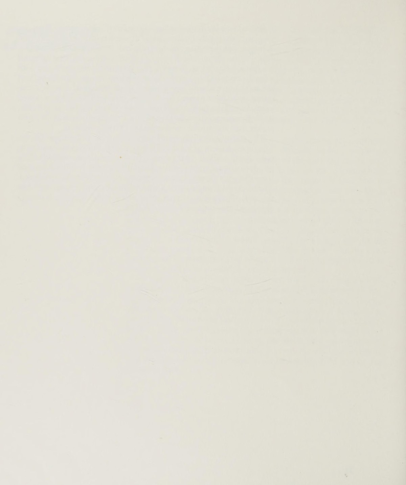
Hình 15.1: hai · bản thểFigure 15.1: Two selves
BƯỚC 3 Cố gắng hết sức; Hãy tự làm đúng Trong bước này, Self 1, sau khi đã ra lệnh cho Self 2 phải làm gì, cố gắng kiểm soát hành động đó. Cơ thể và cơ mặt không cần thiết được sử dụng. Có độ kín ngăn cản sự trôi chảy tối đa của cú đánh và độ chính xác của chuyển động. Self 2 không được tin cậy.
STEP 3 Try Hard; Make Yourself Do It Right In this step, Self 1, having told Self 2 what to do, tries to control the action. Unnecessary body and facial muscles are used. There is a tightness which prevents maximum fluidity of stroke and precision of movement. Self 2 is not trusted.
BƯỚC 4 Đánh giá phê phán về kết quả dẫn đến bản thân 1 Vòng luẩn quẩn Khi một người đã cố gắng hết sức để thực hiện một hành động “đúng đắn”, thì khó mà không thất vọng vì thất bại hoặc lo lắng về thành công. Cả hai cảm xúc đều làm con người mất tập trung và ngăn cản trải nghiệm đầy đủ về những gì đang xảy ra. Đánh giá tiêu cực về kết quả nỗ lực của một người có xu hướng khiến người ta cố gắng nhiều hơn; đánh giá tích cực có xu hướng khiến người ta cố gắng ép mình vào khuôn mẫu tương tự trong lần chụp tiếp theo. Cả suy nghĩ tích cực và tiêu cực đều ức chế tính tự phát.
STEP 4 Critical Judgment About Results Leading to a Self 1 When one has tried hard to perform an action “right,” it is difficult not to become either frustrated at failure or anxious about success. Both emotions are distracting to one’s focus, and prevent full experiencing of what happens. Negative judgment of the results of one’s efforts tends to make one try even harder; positive evaluation tends to make one try to force oneself into the same pattern on the next shot. Both positive and negative thinking inhibit spontaneity.
CÁCH HỌC TẬP TRÒ CHƠI TRONG BƯỚC 1 Quan sát hành vi hiện tại một cách không phán xét Ví dụ: Ba cú đánh trái tay cuối cùng của tôi tiếp đất dài, khoảng 2 feet. Cây vợt của tôi dường như đang do dự, thay vì theo đuổi đến cùng. Có lẽ tôi nên quan sát mức độ vung ra sau của mình… Nó cao hơn thắt lưng của tôi… Ở đó, cú đánh đó được thực hiện với tốc độ nhanh hơn, nhưng nó vẫn giữ nguyên. (Phần trên được truyền tải với giọng điệu thích thú, có phần tách rời.) BƯỚC 2 Hình ảnh Kết quả mong muốn Không sử dụng lệnh nào. Self 2 được yêu cầu thực hiện theo cách mong muốn để đạt được kết quả mong muốn. Self 2 được thể hiện bằng cách sử dụng hình ảnh trực quan và hành động cảm nhận bất kỳ yếu tố nào của nét vẽ mong muốn. Nếu bạn muốn bóng đi đến góc chéo sân, bạn chỉ cần tưởng tượng đường đi cần thiết của bóng tới mục tiêu. Đừng cố gắng sửa chữa những lỗi lầm trong quá khứ.
STEP 1 Observe Existing Behavior Nonjudgmentally Examples: The last three of my backhands landed long, by about two feet. My racket seems to be hesitating, instead of following through all the way. Maybe I should observe the level of my back-swing … It’s well above my waist… There, that shot got hit with more pace, yet it stayed in. (The above is delivered in an interested, somewhat detached tone.) STEP 2 Picture Desired Outcome No commands are used. Self 2 is asked to perform in the desired way to achieve the desired results. Self 2 is shown by use of visual image and felt action any element of stroke desired. If you wish the ball to go to the crosscourt corner, you simply imagine the necessary path of the ball to the target. Do not try to correct for past errors.
BƯỚC 3 Hãy để nó xảy ra! Tin tưởng vào bản thân 2 Sau khi đã yêu cầu cơ thể bạn thực hiện một hành động nào đó, hãy cho nó quyền tự do thực hiện điều đó. Cơ thể được tin cậy, không có sự kiểm soát có ý thức của tâm trí. Việc phục vụ dường như tự giao bóng. Nỗ lực được Self 2 khởi xướng, nhưng Self 1 không cố gắng. Để nó xảy ra không có nghĩa là khập khiễng; nó có nghĩa là để cho Self 2 chỉ sử dụng những cơ bắp cần thiết cho công việc. Không có gì bị ép buộc. Tiếp tục quá trình. Sẵn sàng cho phép Self 2 thực hiện những thay đổi trong những thay đổi, cho đến khi hình thành được một lối đi tự nhiên.
STEP 3 Let It Happen! Trust Self 2 Having requested your body to perform a certain action, give it the freedom to do it. The body is trusted, without the conscious control of mind. The serve seems to serve itself. Effort is initiated by Self 2, but there is no trying by Self 1. Letting it happen doesn’t mean going limp; it means letting Self 2 use only the muscles necessary for the job. Nothing is forced. Continue the process. Be willing to allow Self 2 to make changes within changes, until a natural groove is formed.
BƯỚC 4 Quan sát kết quả một cách bình tĩnh, không phán xét dẫn đến việc tiếp tục quan sát và học hỏi Mặc dù người chơi biết mục tiêu của mình nhưng anh ta không tham gia vào việc đạt được nó một cách cảm xúc và do đó có thể bình tĩnh xem kết quả và trải nghiệm quá trình. Bằng cách làm như vậy, sự tập trung sẽ đạt được tốt nhất cũng như việc học tập ở tốc độ cao nhất; việc thực hiện những thay đổi mới chỉ cần thiết khi kết quả không giống với hình ảnh đã cho. Mặt khác, chỉ cần tiếp tục quan sát hành vi đang thay đổi. Hãy xem nó thay đổi; đừng thực hiện việc thay đổi. Quá trình này là một quá trình cực kỳ đơn giản. Điều quan trọng là phải trải nghiệm nó. Đừng trí thức hóa nó. Hãy xem cảm giác như thế nào khi yêu cầu bản thân làm điều gì đó và để nó xảy ra mà không cần cố gắng có ý thức. Đối với hầu hết mọi người, đó là một trải nghiệm đáng ngạc nhiên và kết quả đã nói lên điều đó. Phương pháp học tập này có thể được thực hành trong hầu hết các nỗ lực trong hoặc ngoài sân đấu. Bạn càng để mình biểu diễn một cách tự do trên sân tennis, bạn càng có xu hướng tự tin hơn vào cơ chế tuyệt đẹp đó là cơ thể con người. Bạn càng tin tưởng nó thì nó dường như càng có nhiều khả năng hơn.
STEP 4 Nonjudgmental, Calm Observation of the Results Leading to Though the player knows his goal, he is not emotionally involved in achieving it and is therefore able to watch the results calmly and experience the process. By so doing, concentration is best achieved, as is learning at its highest rate of speed; making new changes is only necessary when results do not conform to the image given. Otherwise only continuing observation of the behavior undergoing change is necessary. Watch it change; don’t do the changing. The process is an incredibly simple one. The important thing is to experience it. Don’t intellectualize it. See what it feels like to ask yourself to do something and let it happen without any conscious trying. For most people it is a surprising experience, and the results speak for themselves. This method of learning can be practiced in most endeavors on or off the court. The more you let yourself perform free of control on the tennis court, the more confidence you tend to gain in the beautiful mechanism that is the human body. The more you trust it, the more capable it seems to become.
HÃY LƯU Ý SỰ TRỞ LẠI CỦA BẢN THÂN 1 Nhưng có một cạm bẫy mà tôi nên đề cập đến. Tôi nhận thấy rằng sau khi vui mừng trước những tiến bộ mà họ có thể đạt được trong môn quần vợt bằng cách để điều đó xảy ra, học sinh thường quay trở lại cố gắng chăm chỉ như bình thường vào ngày hôm sau. Điều đáng ngạc nhiên là dù họ chơi thứ quần vợt tệ hơn nhiều nhưng họ dường như không bận tâm. Lúc đầu điều này làm tôi bối rối. Tại sao người ta lại quay lại để Self 1 kiểm soát chương trình nếu kết quả rõ ràng là kém hiệu quả hơn? Tôi đã phải tự mình tìm kiếm câu trả lời. Tôi nhận ra rằng có một loại cảm giác hài lòng khác biệt rõ rệt đạt được trong hai phương pháp đánh bóng. Khi bạn cố gắng hết sức để đánh bóng một cách chính xác và thành công, bạn sẽ có được sự thỏa mãn về cái tôi nhất định. Bạn cảm thấy rằng bạn đang kiểm soát, rằng bạn làm chủ được tình hình. Nhưng khi bạn chỉ đơn giản cho phép quả giao bóng tự thực hiện thì có vẻ như bạn không xứng đáng được khen ngợi. Không có cảm giác như thể bạn là người đánh bóng. Bạn có xu hướng cảm thấy hài lòng về khả năng của cơ thể mình và thậm chí có thể ngạc nhiên trước kết quả đạt được, nhưng niềm tin và cảm giác đạt được thành tích cá nhân được thay thế bằng một kiểu thỏa mãn khác. Nếu một người ra sân chủ yếu để thỏa mãn những ham muốn và nghi ngờ của bản ngã, rất có thể mặc dù kết quả kém hơn nhưng anh ta sẽ chọn để Bản ngã 1 đóng vai trò chính.
But there is one pitfall I should mention. I have noticed that after being thrilled by the improvements they are able to make in their tennis game by letting it happen, students often revert the next day to trying as hard as usual. What is surprising is that though they are playing much worse tennis, they don’t seem to mind. At first this puzzled me. Why would one go back to letting Self 1 control the show if the results were so clearly less effective? I had to search myself for the answer. I realized that there was a distinctly different kind of satisfaction gained in the two methods of hitting the ball. When you try hard to hit the ball correctly, and it goes well, you get a certain kind of ego satisfaction. You feel that you are in control, that you are master of the situation. But when you simply allow the serve to serve itself, it doesn’t seem as if you deserve the credit. It doesn’t feel as if it were you who hit the ball. You tend to feel good about the ability of your body, and possibly even amazed by the results, but the credit and sense of personal accomplishment are replaced by another kind of satisfaction. If a person is out on the court mainly to satisfy the desires and doubts of ego, it is likely that in spite of the lesser results, he will choose to let Self 1 play the major role. When a player experiences what it means to “let go” and allows Self 2 to play the game, not only do his shots tend to gain accuracy and power, but he feels an exhilarating sense of relaxation even during rapid movements. In an attempt to repeat this quality of performance, the player often allows Self 1 to creep back on the scene with a remark such as, “Now I’ve got the secret to this game; all I have to do is make myself relax.” But of course the instant I try to make myself relax, true relaxation vanishes, and in its place is a strange phenomenon called “trying to relax.” Relaxation happens only when allowed, not as a result of “trying” or “making.” Self 1 should not be expected to give up its control all at once; it begins to find its proper role only as one progresses in the art of relaxed concentration. UP TO THIS POINT WE HAVE BEEN DISCUSSING THE ART OF LETTING go of Self 1 control and letting Self 2 play the game spontaneously. The primary emphasis has been on giving practical examples of the value of letting go of self-judging, thinking too much, trying too hard—all forms of overcontrol. But even if the reader is wholly convinced of the value of thus quieting Self 1, it may not be found to come easily. My experience over the years is that the best way to quiet the mind is not by telling it to shut up, or by arguing with it, or criticizing it for criticizing you. Fighting the mind does not work. What works best is learning to focus it. Learning to focus is the subject of this chapter and to whatever extent we learn this primary art, it can benefit us in most anything we do. Strangely, even when one has experienced the practical benefit of a still mind, we continue to find it an elusive state. In spite of the fact that I deliver my most effective performance when I permit the spontaneous Self 2 to be in control, there is still a recurring impulse to think about how I did it, make a formula out of it and thus to bring it into Self 1’s domain where it can feel in control. Sometimes I recognize this impulse as the persistent Self 1 wanting to gain credit, to be something it really isn’t, and in the process spawning an endless flow of distracting thoughts that distort both perception and response. There was a time at the beginning of my exploration of the Inner Game that I found myself able to let go of almost all conscious effort on my serve and as a result the serve just seemed to serve itself with rare consistency and power. For a period of about two weeks 90 percent of my first serves went in; I didn’t serve a single double fault. Then one day my roommate, another professional, challenged me to a match. I accepted, saying half jokingly, “But you better watch out, I’ve found the secret to the serve.” The next day we played and I served two double faults the first game! The moment I tried to apply some “secret,” Self 1 was back in the picture again, this time under the subtle guise of “trying to let go.” Self 1 wanted to show off to my roommate; it wanted the credit. Even though I soon realized what had happened, the magic of the spontaneous, effortless serving didn’t return in its same pure form for some time. In short, the problem of letting go of Self 1 and its interfering activities is not easy. A clear understanding of the problem can help, but practical demonstrations help more and practicing the process of letting go helps still more. Nevertheless, I do not believe that ultimately the mind can be controlled by the mere act of letting go—that is, by a simply passive process. To still the mind one must learn to put it somewhere. It cannot just be let go; it must be focused. If peak performance is a function of a still mind, then we are led to the question of where and how to focus it.
CHO BẢN THÂN 2 TÍN DỤNG Khi người chơi trải nghiệm ý nghĩa của việc “buông bỏ” và cho phép Self 2 chơi trò chơi, không chỉ các cú đánh của anh ta có xu hướng đạt được độ chính xác và sức mạnh mà anh ta còn cảm thấy một cảm giác thư giãn phấn khởi ngay cả khi chuyển động nhanh. Trong nỗ lực lặp lại chất lượng hiệu suất này, người chơi thường cho phép Self 1 quay trở lại hiện trường với một nhận xét chẳng hạn như "Bây giờ tôi đã biết bí mật của trò chơi này; tất cả những gì tôi phải làm là khiến bản thân thư giãn." Nhưng tất nhiên ngay khi tôi cố gắng thư giãn, sự thư giãn thực sự biến mất, và thay vào đó là một hiện tượng kỳ lạ gọi là “cố gắng thư giãn”. Sự thư giãn chỉ xảy ra khi được phép chứ không phải là kết quả của việc “cố gắng” hay “làm”. Không nên mong đợi Self 1 sẽ từ bỏ quyền kiểm soát của mình ngay lập tức; nó chỉ bắt đầu tìm thấy vai trò thích hợp của mình khi người ta tiến bộ trong nghệ thuật tập trung thoải mái.
As one achieves focus, the mind quiets. As the mind is kept in the present, it becomes calm. Focus means keeping the mind now and here. Relaxed concentration is the supreme art because no art can be achieved without it, while with it, much can be achieved. One cannot reach the limit of one’s potential in tennis or any endeavor without learning it; what is even more compelling is that tennis can be a marvelous medium through which skill in focus of mind can be developed. By learning to focus while playing tennis, one develops a skill that can heighten performance in every other aspect of life.
Chương 7
Tập trung: học cách chú tâm
Tới đây chúng ta đã bàn về nghệ thuật buông bỏ
bỏ quyền kiểm soát của Self 1 và để Self 2 chơi trò chơi một cách tự nhiên. Trọng tâm chính là đưa ra những ví dụ thực tế về giá trị của việc từ bỏ việc tự đánh giá, suy nghĩ quá nhiều, cố gắng quá mức—tất cả các hình thức kiểm soát quá mức. Nhưng ngay cả khi người đọc hoàn toàn bị thuyết phục về giá trị của việc làm dịu đi Bản ngã 1 như vậy thì điều đó cũng không thể xảy ra một cách dễ dàng. Kinh nghiệm của tôi trong nhiều năm qua là cách tốt nhất để làm tâm trí tĩnh lặng không phải là bảo nó im lặng, hay tranh cãi với nó, hay chỉ trích nó vì đã chỉ trích bạn. Đấu tranh bằng tâm trí không có tác dụng. Điều tốt nhất là học cách tập trung vào nó. Học cách tập trung là chủ đề của chương này và dù chúng ta học nghệ thuật cơ bản này ở mức độ nào đi nữa, nó vẫn có thể mang lại lợi ích cho chúng ta trong hầu hết mọi việc chúng ta làm. Kỳ lạ thay, ngay cả khi một người đã trải nghiệm được lợi ích thiết thực của một tâm trí tĩnh lặng, chúng ta vẫn tiếp tục thấy đó là một trạng thái khó nắm bắt. Mặc dù thực tế là tôi đã thực hiện hiệu quả nhất khi cho phép Self 2 tự phát nắm quyền kiểm soát, nhưng vẫn có một sự thúc đẩy thường xuyên là nghĩ về cách tôi đã làm điều đó, tạo ra một công thức từ nó và do đó đưa nó vào lãnh địa của Self 1, nơi nó có thể cảm thấy được kiểm soát. Đôi khi tôi nhận ra sự thôi thúc này là Self 1 dai dẳng muốn đạt được tín nhiệm, trở thành một thứ gì đó thực sự không phải vậy, và trong quá trình đó sinh ra một dòng suy nghĩ xao lãng vô tận làm bóp méo cả nhận thức và phản ứng. Có một thời điểm khi bắt đầu khám phá Trò chơi Nội tâm, tôi thấy mình có thể buông bỏ hầu hết mọi nỗ lực có ý thức trong cú giao bóng của mình và kết quả là cú giao bóng dường như tự giao bóng với sự nhất quán và sức mạnh hiếm có. Trong khoảng thời gian khoảng hai tuần, 90% số cú giao bóng đầu tiên của tôi đã thành công; Tôi đã không phạm một lỗi kép nào cả. Rồi một ngày nọ, bạn cùng phòng của tôi, một chuyên gia khác, thách đấu tôi một trận. Tôi nhận lời, nửa đùa nửa thật: “Nhưng tốt nhất anh nên cẩn thận, tôi đã tìm ra bí quyết giao bóng rồi”. Ngày hôm sau chúng tôi chơi và tôi đã phạm hai lỗi kép trong ván đầu tiên! Khoảnh khắc tôi cố gắng áp dụng một số “bí mật”, Bản ngã 1 lại xuất hiện trở lại trong bức tranh, lần này dưới chiêu bài tinh tế là “cố gắng buông bỏ”. Bản thân tôi muốn khoe khoang với bạn cùng phòng; nó muốn tín dụng. Mặc dù tôi sớm nhận ra điều gì đã xảy ra, nhưng sự kỳ diệu của việc phục vụ tự phát, dễ dàng đã không trở lại ở dạng nguyên chất như cũ trong một thời gian. Tóm lại, vấn đề buông bỏ Bản ngã 1 và các hoạt động can thiệp của nó không hề dễ dàng. Một sự hiểu biết rõ ràng về vấn đề có thể giúp ích, nhưng những minh chứng thực tế còn giúp ích nhiều hơn và thực hành quá trình buông bỏ còn giúp ích nhiều hơn nữa. Tuy nhiên, tôi không tin rằng cuối cùng tâm trí có thể được kiểm soát chỉ bằng hành động buông bỏ - nghĩa là bằng một quá trình thụ động đơn giản. Để tĩnh tâm, người ta phải học cách đặt nó ở đâu đó. Nó không thể chỉ được buông bỏ; nó phải được tập trung. Nếu hiệu suất cao nhất là một chức năng của một tâm trí tĩnh lặng, thì chúng ta sẽ đặt ra câu hỏi là tập trung nó vào đâu và như thế nào. Khi một người đạt được sự tập trung, tâm trí sẽ tĩnh lặng. Khi tâm trí được giữ trong hiện tại, nó trở nên bình tĩnh. Tập trung có nghĩa là giữ tâm ngay bây giờ và ở đây. Sự tập trung thoải mái là nghệ thuật tối cao bởi vì không thể đạt được nghệ thuật nếu không có nó, trong khi với nó, có thể đạt được nhiều điều. Người ta không thể đạt đến giới hạn tiềm năng của mình trong quần vợt hoặc bất kỳ nỗ lực nào nếu không học nó; điều hấp dẫn hơn nữa là quần vợt có thể là một phương tiện tuyệt vời để phát triển kỹ năng tập trung trí óc. Bằng cách học cách tập trung khi chơi quần vợt, người ta sẽ phát triển một kỹ năng có thể nâng cao hiệu suất trong mọi khía cạnh khác của cuộc sống. Để học nghệ thuật này, cần phải thực hành. Và không bao giờ có thời gian hay hoàn cảnh nào mà bạn không thể luyện tập, ngoại trừ giấc ngủ. Trong quần vợt, đối tượng tập trung tiện lợi và thiết thực nhất chính là quả bóng. Có lẽ câu châm ngôn được lặp đi lặp lại nhiều nhất trong quần vợt là “Xem bóng”, nhưng rất ít người chơi hiểu rõ điều đó. Hướng dẫn là lời kêu gọi người chơi chỉ cần “chú ý”. Nó không có nghĩa là nghĩ về quả bóng, cú đánh này dễ hay khó thực hiện, tôi nên vung vợt vào nó như thế nào, hay Tom, Dick hay Harry sẽ nghĩ gì nếu tôi thực hiện cú đánh hoặc đánh trượt. Tâm trí tập trung chỉ tiếp thu những khía cạnh của tình huống cần thiết để hoàn thành nhiệm vụ trước mắt. Nó không bị phân tâm bởi những suy nghĩ khác hoặc những sự kiện bên ngoài, nó hoàn toàn mải mê với bất cứ điều gì có liên quan ở đây và bây giờ.
To learn this art, practice is needed. And there is never a time or situation that you cannot practice, save perhaps sleep. In tennis the most convenient and practical object of focus is the ball itself. Probably the most often repeated dictum in tennis is “Watch the ball,” yet few players see it well. The instruction is an appeal for the player to simply “pay attention.” It does not mean to think about the ball, how easy or difficult this shot is to make, how I should swing my racket at it, or what Tom, Dick or Harry will think if I make the shot or miss it. The focused mind only picks up on those aspects of a situation that are needed to accomplish the task at hand. It is not distracted by other thoughts or external events, it is totally engrossed in whatever is relevant in the here and now. Watching the ball means to focus your attention on the sight of it. I have found that the most effective way to deepen concentration through sight is to focus on something subtle, not easily perceived. It’s easy to see the ball, but not so easy to notice the exact pattern made by its seams as it spins. The practice of watching the seams produces interesting results. After a short time the player discovers that he is seeing the ball much better than when he was just “watching” it. When looking for the pattern made by the seams one naturally watches the ball all the way to one’s racket and begins to focus his attention on it earlier than before. The ball should be watched from the time it leaves the opponent’s racket to the time it hits yours. (Sometimes the ball even begins to appear bigger or to be moving slower. These are natural results of true focus.) But seeing the ball better is only a partial benefit of focusing on its seams. Because the pattern made by the spinning ball is so subtle, it tends to engross the mind more completely. The mind is so absorbed in watching the pattern that it forgets to try too hard. To the extent that the mind is preoccupied with the seams, it tends not to interfere with the natural movements of the body. Furthermore, the seams are always here and now, and if the mind is on them it is kept from wandering to the past or future. The practice of this exercise will enable the tennis player to achieve deeper and deeper states of concentration.
XEM BÓNG Xem quả bóng có nghĩa là tập trung sự chú ý của bạn vào tầm nhìn của nó. Tôi nhận thấy rằng cách hiệu quả nhất để tăng cường sự tập trung thông qua thị giác là tập trung vào thứ gì đó tinh tế, không dễ nhận biết. Thật dễ dàng để nhìn thấy quả bóng, nhưng không dễ để nhận thấy mô hình chính xác được tạo ra bởi các đường nối của nó khi nó quay. Việc thực hành quan sát các đường nối mang lại kết quả thú vị. Sau một thời gian ngắn, người chơi phát hiện ra rằng mình đang nhìn thấy quả bóng tốt hơn nhiều so với khi chỉ “nhìn” nó. Khi tìm kiếm kiểu dáng được tạo bởi các đường nối, người ta sẽ quan sát quả bóng một cách tự nhiên cho đến tận vợt của mình và bắt đầu tập trung sự chú ý vào nó sớm hơn trước. Bóng phải được theo dõi từ khi nó rời vợt đối phương cho đến khi nó chạm vào vợt của bạn. (Đôi khi quả bóng thậm chí còn bắt đầu có vẻ to hơn hoặc chuyển động chậm hơn. Đây là kết quả tự nhiên của việc tập trung thực sự.) Nhưng việc nhìn thấy quả bóng rõ hơn chỉ là một phần lợi ích của việc tập trung vào các đường nối của nó. Bởi vì mô hình do quả bóng quay tạo ra rất tinh tế nên nó có xu hướng thu hút tâm trí một cách trọn vẹn hơn. Tâm trí quá mải mê quan sát khuôn mẫu đến nỗi quên mất việc phải cố gắng quá nhiều. Trong chừng mực tâm trí bận tâm đến các đường nối, nó có xu hướng không can thiệp vào các chuyển động tự nhiên của cơ thể. Hơn nữa, các mối nối luôn luôn ở đây và bây giờ, và nếu tâm hướng về chúng thì nó sẽ giữ cho nó không lang thang về quá khứ hay tương lai. Việc thực hành bài tập này sẽ giúp người chơi quần vợt đạt được trạng thái tập trung ngày càng sâu hơn. Hầu hết người chơi thực hành xem đường may như một môn học đều thấy nó hữu ích gần như ngay lập tức, nhưng sau một thời gian, họ thường phát hiện ra tâm trí của mình lại lang thang. Tâm trí gặp khó khăn trong việc tập trung vào một đối tượng duy nhất trong một khoảng thời gian dài. Hãy đối mặt với sự thật: đối với một số người, một quả bóng tennis có thể thú vị như vậy, nhưng nó sẽ không dễ dàng thu hút được tâm trí bồn chồn, quá quen với đủ loại phiền nhiễu.
Most players who practice seam-watching as a discipline find it helpful almost immediately, but after a while they often discover their minds wandering again. The mind has difficulty focusing on a single object for an extended period of time. Let’s face it: as interesting as a tennis ball may be for some, it is not going to easily capture the restless mind, so habituated to distractions of every kind. Bounce-Hit So the question arises as to how to maintain focus for extended periods of time. The best way is to allow yourself to get interested in the ball. How do you do this? By not thinking you already know all about it, no matter how many thousands of balls you have seen in your life. Not assuming you already know is a powerful principle of focus.
Bounce-Hit Vì vậy, câu hỏi đặt ra làm thế nào để duy trì sự tập trung trong thời gian dài. Cách tốt nhất là cho phép bản thân quan tâm đến quả bóng. Bạn làm điều này như thế nào? Bằng cách không suy nghĩ, bạn đã biết tất cả về nó, bất kể bạn đã nhìn thấy bao nhiêu nghìn quả bóng trong đời. Không cho rằng bạn đã biết là một nguyên tắc tập trung mạnh mẽ. Một điều bạn không biết về quả bóng là chính xác khi nào nó sẽ nảy lên và khi nào nó sẽ chạm vào vợt của bạn hoặc của đối thủ. Có lẽ phương pháp tập trung đơn giản và hiệu quả nhất mà tôi tìm thấy là một bài tập rất đơn giản mà tôi gọi là “Bounce-Hit”. Những hướng dẫn tôi đưa ra cho học sinh rất đơn giản. “Nói to từ đó nảy lên ngay khi bạn nhìn thấy quả bóng chạm sân và từ đó chạm vào thời điểm quả bóng tiếp xúc với vợt—hoặc là vợt.” Việc nói to các từ đó giúp cả tôi và học sinh có cơ hội nghe xem các từ đó có đồng thời với các sự kiện nảy và va đập hay không. Như học sinh đã nói “tung … đánh … nảy … đánh … nảy … đập … nảy …,” nó không chỉ khiến mắt anh ta tập trung vào bốn vị trí rất quan trọng của quả bóng trong mỗi lần trao đổi, mà việc nghe thấy nhịp điệu và nhịp đập của quả bóng dường như thu hút sự chú ý trong thời gian dài hơn. Kết quả cũng giống như bất kỳ sự tập trung hiệu quả nào. Bài tập này sẽ mang lại cho người chơi phản hồi tốt hơn từ quả bóng, đồng thời giúp anh ta giải tỏa tâm trí khỏi những phiền nhiễu. Thật khó để vừa nói “bật trúng đích” vừa đồng thời hướng dẫn bản thân quá mức, cố gắng quá mức hoặc lo lắng về điểm số. Tôi phát hiện ra rằng những người mới bắt đầu sẽ học các động tác bằng chân và các cú đánh ở cấp độ bắt đầu hiệu quả và thường có thể thực hiện các pha trao đổi khá dài từ vạch cuối sân trong vòng mười lăm hoặc hai mươi phút mà không cần suy nghĩ về điều đó, trong khi Self 1 luôn bận rộn theo dõi các cú nảy và cú đánh. Điều đáng ngạc nhiên là tôi cũng nhận thấy rằng nhiều người chơi ở trình độ cao gặp khó khăn hơn khi thực hiện bài tập này vì họ có nhiều suy nghĩ trong đầu mà họ nghĩ là cần thiết để thực hiện tốt. Khi họ thử trải nghiệm buông bỏ những suy nghĩ kiểm soát của mình và chỉ tập trung vào cú nảy và cú đánh, họ thường rất ngạc nhiên và đôi khi hơi xấu hổ về việc Self 2 đã thể hiện tốt như thế nào nếu không có những loại quá trình suy nghĩ thông thường của Self 1 mà họ cảm thấy đã đóng góp rất nhiều cho trò chơi của họ.
One thing you don’t know about the ball is exactly when it is going to bounce and when it is going to hit either your racket or your opponent’s. Perhaps the most simple and effective means of focus I found was a very simple exercise I called “Bounce-Hit.” The instructions I gave students were very simple. “Say the word bounce out loud the instant you see the ball hit the court and the word hit the instant the ball makes contact with the racket—either racket.” Saying the words out loud gave both me and the student the chance to hear whether the words were simultaneous with the events of bounce and hit. As the student said “bounce … hit … bounce … hit … bounce … hit … bounce …,” not only would it keep his eyes focused on four very key positions of the ball during each exchange, but the hearing of the rhythm and cadence of the bouncing and hitting of the ball seemed to hold the attention for longer periods of time. The results were the same as with any effective focus. The exercise would give the player better feedback from the ball and, at the same time, help clear his mind of distractions. It’s hard to be saying “bounce-hit” and at the same time overinstructing yourself, trying too hard or worrying about the score. I found that beginners would learn effective footwork and beginninglevel strokes and often be able to carry on quite long exchanges from the baseline within fifteen or twenty minutes without even thinking about it, while Self 1 was kept busy tracking the bounces and hits. Surprisingly I also found that many advanced players had more difficulty with the exercise, because they had more going on in their minds that they thought was necessary to good execution. When they would try the experiment of letting go of their controlling thoughts and just focus on the bounce and hit, they were usually very surprised and sometimes a little embarrassed about how well Self 2 performed without the usual kinds of Self 1 thought processes that they had felt were contributing so much to their game. One of the easiest ways to maintain interest in the ball is to not look at it as a stationary object, but as an object in motion. Watching its seams helps focus your attention on the object itself, but it is just as important to increase your awareness of the flight of each ball as it moves toward you, and then again as it leaves your racket. My favorite focus of attention during a point is on the particular trajectories of each shot, both mine and my opponent’s. I notice the height of the ball as it passes over the net, its apparent speed and with utmost care the angle at which it rises after bouncing. I also observe whether the ball is rising, falling or at its apex in the instant before the racket makes contact. I give the same careful attention to the trajectory of my own shot. Soon I become more and more aware of the rhythm of the alternating shots of each point, and am able to increase my sense of anticipation. It is this rhythm, both seen and heard, which holds fascination for my mind and enables it to focus for longer periods of time without becoming distracted. Focus is not achieved by staring hard at something. It is not trying to force focus, nor does it mean thinking hard about something. Natural focus occurs when the mind is interested. When this occurs, the mind is drawn irresistibly toward the object (or subject) of interest. It is effortless and relaxed, not tense and overly controlled. When watching the tennis ball, allow yourself to fall into focus. If your eyes are squinting or straining, you are trying too hard. If you find yourself chastising yourself for losing focus, then you may be overcontrolling. Let the ball attract your mind, and both it and your muscles will stay appropriately relaxed. It rarely occurs to a player to listen to the ball, but I have found great value in this focus. When the ball hits your racket, it makes a distinct sound, the quality of which varies considerably, depending on its proximity to the “sweet spot,” the angle of the face, the distribution of your weight and where the ball is met. If you listen closely to the sounds of one ball after another, you will soon be able to distinguish a number of different kinds and qualities of sounds. Soon it will be possible to recognize the sound produced by an overspin forehand hit squarely and an underspin forehand hit slightly off center. You will come to know the sound of a flat backhand, and to distinguish it from one hit with an open face. One day when I was practicing this form of concentration while serving, I began hitting the ball unusually well. I could hear a sharp crack instead of the usual sound at the moment of impact. It sounded terrific, and the ball had more speed and accuracy. After I realized how well I was serving, I resisted the temptation to figure out why, and simply asked my body to do whatever was necessary to reproduce that “crack.” I held the sound in my memory, and to my amazement my body reproduced it time and again. Through this experience I learned how effective the remembering of certain sounds can be as a cue for the built-in computer within our brains. While one listens to the sounds of his forehand, he can hold in his memory the sound that results from solid contact; as a result, the body will tend to repeat the elements of behavior which produced that sound. This technique can be particularly useful in learning the different kinds of serves. There is a distinct difference in the sounds of a flat, slice and twist serve. Similarly, one can learn to achieve the desired amount of spin in a second serve by listening closely to the sounds of balls hit with varying amounts of spin. Further, listening to the sound of the ball when volleying can improve both volley footwork and racket work. When a volley is met squarely at just the right moment, the action produces a wonderfully memorable sound. Some players find the sound of the ball more mind-absorbing than watching the seams because it is something they’ve never done before. Actually there is no reason why both means of concentration cannot be employed on each shot, since one need listen only at the instant of contact. I have found that the practice of listening to the ball is best used during practice. If you become sensitive to sound in practice, you will find that you will then use sound automatically during a match to encourage the repetition of solid shots. The habit will increase the number of balls hit solidly. When I was twelve years old, I heard my pro say of my doubles partner, “He really knows where his racket head is.” I didn’t know what he meant, but I intuited its importance and never forgot the remark. Few players understand the importance of concentrating attention on the feel of the racket as they are holding it. There are two things that a player must know on every shot: where the ball is and where his racket is. If he loses contact with either of these he is in trouble. Most players have learned to put visual attention on the ball, but many have only the vaguest notion about where their racket head is most of the time. The critical time to know the position of the racket is when it is behind you, and this requires concentration through the sense of feel. On the forehand your hand is over a foot from the center of your racket. This means that even a tiny change in the angle of your wrist can produce a significant difference in the position of the center of the racket. Similarly, the slightest change in the angle of the face of the racket can have a substantial effect on the trajectory of the ball. In fact, if the face is off by only a quarter of an inch, the ball could travel over six feet out when hitting baseline to baseline. Hence, to achieve consistency and accuracy, you must become extraordinarily sensitive to feel. It would be useful for all tennis players to undergo some “sensitivity training” with their bodies. The easiest way to get such training is simply to focus your attention on your body during practice. Ideally, someone should throw balls to you, or hit them so that they bounce in approximately the same spot each time. Then, paying relatively little attention to the ball, you can experience what it feels like to hit balls the way you hit them. You should spend some time merely feeling the exact path of your racket on your backswing. The greatest attention should be placed on the feel of your arm and hand at the moment just before they swing forward to meet the ball. Also become sensitive to how the handle feels in your hand. How hard are you squeezing your grip?
Một trong những cách dễ nhất để duy trì sự quan tâm đến quả bóng là không nhìn nó như một vật đứng yên mà như một vật đang chuyển động. Việc quan sát các đường nối của nó giúp bạn tập trung sự chú ý vào vật thể đó, nhưng điều quan trọng không kém là bạn phải tăng cường nhận thức về đường bay của từng quả bóng khi nó di chuyển về phía bạn và sau đó lại khi nó rời khỏi vợt của bạn. Trọng tâm chú ý yêu thích của tôi trong một thời điểm là quỹ đạo cụ thể của mỗi cú đánh, của cả tôi và đối thủ. Tôi chú ý đến độ cao của quả bóng khi nó bay qua lưới, tốc độ biểu kiến của nó và hết sức cẩn thận góc bay lên của nó sau khi nảy lên. Tôi cũng quan sát xem quả bóng đang bay lên, rơi xuống hay ở đỉnh của nó ngay trước khi vợt tiếp xúc. Tôi cũng chú ý cẩn thận đến quỹ đạo cú đánh của mình. Chẳng bao lâu sau, tôi ngày càng nhận thức rõ hơn về nhịp điệu của các cảnh quay xen kẽ ở từng điểm và có thể nâng cao cảm giác mong đợi của mình. Chính nhịp điệu này, cả được nhìn thấy và nghe thấy, đã lôi cuốn tâm trí tôi và giúp nó tập trung trong thời gian dài hơn mà không bị phân tâm. Sự tập trung không thể đạt được bằng cách nhìn chằm chằm vào một cái gì đó. Nó không phải là cố gắng tập trung, cũng không có nghĩa là phải suy nghĩ kỹ về điều gì đó. Sự tập trung tự nhiên xảy ra khi tâm trí quan tâm. Khi điều này xảy ra, tâm trí sẽ bị thu hút một cách không thể cưỡng lại được về đối tượng (hoặc chủ đề) quan tâm. Nó dễ dàng và thoải mái, không căng thẳng và bị kiểm soát quá mức. Khi xem quả bóng tennis, hãy cho phép mình tập trung vào. Nếu mắt bạn nheo lại hoặc căng thẳng, bạn đang cố gắng quá sức. Nếu bạn thấy mình đang trừng phạt bản thân vì đã mất tập trung thì có thể bạn đang kiểm soát quá mức. Hãy để quả bóng thu hút tâm trí của bạn, và cả nó lẫn các cơ của bạn sẽ được thư giãn một cách thích hợp.
There are many ways to increase one’s awareness of muscle feel. One is to take each of your strokes in slow motion. Each can be performed as an exercise, in which all attention is placed on the feel of the moving parts of the body. Get to know the feel of every inch of your stroke, every muscle in your body. Then when you increase your stroke speed to normal and begin hitting, you may be particularly aware of certain muscles. For instance, when I hit my best backhands, I am aware that my shoulder muscle, rather than my forearm, is pulling my arm through. By remembering the feel of that muscle before hitting a backhand, I attain the full benefit of the power it generates. Similarly, on my forehand I am particularly aware of my triceps when my racket is below the ball. By becoming sensitive to the feel of that muscle, I decrease my tendency to take my racket back too high.
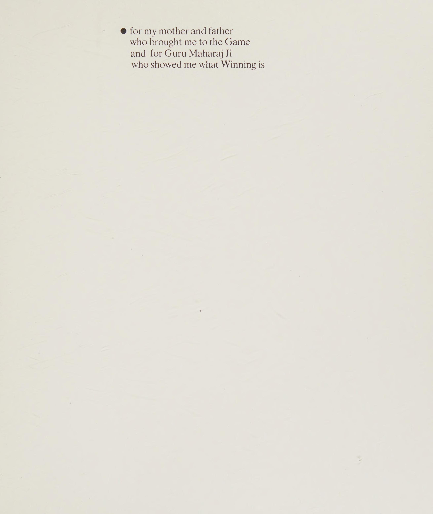
Hình 17.1: Ảnh minh họa (trang 11)Figure 17.1: Plate from page 11
LẮNG NGHE BÓNG Việc một tay vợt hiếm khi lắng nghe quả bóng, nhưng tôi nhận thấy việc tập trung này có giá trị rất lớn. Khi bóng chạm vào vợt của bạn, nó sẽ tạo ra âm thanh riêng biệt, chất lượng của âm thanh này thay đổi đáng kể, tùy thuộc vào khoảng cách của nó với “điểm ngọt”, góc của mặt vợt, sự phân bổ trọng lượng của bạn và nơi bóng chạm vào. Nếu bạn lắng nghe kỹ âm thanh của quả bóng này đến quả bóng khác, bạn sẽ sớm có thể phân biệt được một số loại và tính chất khác nhau của âm thanh. Chẳng bao lâu nữa, người ta sẽ có thể nhận ra âm thanh được tạo ra bởi một cú đánh thuận tay xoáy xuống thẳng và một cú đánh thuận tay xoáy xuống hơi lệch ra khỏi trung tâm. Bạn sẽ dần nhận biết âm thanh của cú trái tay phẳng và phân biệt nó với một cú đánh với mặt mở. Một ngày nọ, khi tôi đang luyện tập cách tập trung này khi giao bóng, tôi bắt đầu đánh bóng tốt một cách bất thường. Tôi có thể nghe thấy một tiếng nứt lớn thay vì âm thanh thông thường vào thời điểm va chạm. Nghe có vẻ tuyệt vời và quả bóng có tốc độ và độ chính xác cao hơn. Sau khi nhận ra mình đã phục vụ tốt như thế nào, tôi chống lại sự cám dỗ tìm hiểu lý do tại sao và chỉ yêu cầu cơ thể mình làm bất cứ điều gì cần thiết để tái tạo “vết nứt” đó. Tôi giữ âm thanh đó trong trí nhớ và thật ngạc nhiên, cơ thể tôi đã tái tạo lại nó nhiều lần. Thông qua trải nghiệm này, tôi đã học được rằng việc ghi nhớ một số âm thanh nhất định có thể hữu ích như một tín hiệu cho máy tính tích hợp trong não chúng ta. Trong khi một người lắng nghe âm thanh của cú thuận tay của mình, anh ta có thể lưu giữ trong trí nhớ âm thanh phát ra từ sự tiếp xúc chắc chắn; kết quả là cơ thể sẽ có xu hướng lặp lại các yếu tố hành vi đã tạo ra âm thanh đó. Kỹ thuật này có thể đặc biệt hữu ích trong việc học các loại giao bóng khác nhau. Có sự khác biệt rõ rệt trong âm thanh của cú giao bóng phẳng, cắt và xoắn. Tương tự, người ta có thể học cách đạt được lượng xoáy mong muốn trong cú giao bóng thứ hai bằng cách lắng nghe kỹ âm thanh của quả bóng được đánh với lượng xoáy khác nhau. Hơn nữa, việc lắng nghe âm thanh của quả bóng khi thực hiện cú vô lê có thể cải thiện cả động tác chân và động tác vợt. Khi một cú vô lê được thực hiện đúng lúc, hành động đó sẽ tạo ra âm thanh đáng nhớ tuyệt vời. Một số người chơi nhận thấy âm thanh của quả bóng hấp dẫn tâm trí hơn là quan sát các đường nối vì đó là điều họ chưa từng làm trước đây. Thực ra không có lý do gì mà cả hai phương pháp tập trung lại không thể được sử dụng trong mỗi lần bắn, vì người ta chỉ cần lắng nghe vào thời điểm tiếp xúc. Tôi nhận thấy rằng việc luyện nghe bóng được áp dụng tốt nhất trong quá trình luyện tập. Nếu bạn trở nên nhạy cảm với âm thanh khi tập luyện, bạn sẽ thấy rằng bạn sẽ tự động sử dụng âm thanh trong suốt trận đấu để khuyến khích việc lặp lại các cú đánh chắc chắn. Thói quen sẽ làm tăng số lượng bóng đánh chắc chắn.
It is also valuable to become more aware of rhythm. You can greatly improve your power and timing merely by paying attention during practice to the rhythm with which you hit each of your strokes. Every player has a rhythm natural to himself. If you learn to concentrate on the sense of rhythm, it is not difficult to fall into the rhythm most natural and effective for you. Rhythm can never be achieved by being overly purposeful about it; you have to let it happen. But sensitivity to rhythm developed through concentration helps. Those who have practiced concentrating on the feel of the path of their racket usually find that without intentional effort their stroke begins to slow down and to simplify. Both the rapid jerks and the fancy stuff tend to disappear and consistency and power tend to increase. Just as it is helpful to become more aware of the sound of the ball, it is also useful to practice focusing on the feel of the ball at impact. You can notice subtle and not so subtle differences in the vibration sent up your hand when the ball strikes the racket, depending on where contact is made, your distribution of weight and the angle of the face of your racket. Again, you can program the best results by remembering as precisely as possible the feel in your hand, wrist and arm after a good solid hit. Practicing this kind of feel develops what is called “touch,” and is particularly beneficial in hitting drop shots and lobs. In short, become aware of your body. Know what it feels like to move your body into position, as well as how it feels to swing your racket. Remember: it is almost impossible to feel or see anything well if you are thinking about how you should be moving. Forget should’s and experience is. In tennis there are only one or two elements to be aware of visually, but there are many things to feel. Expanding sensory knowledge of your body will greatly speed the process of developing skill.
CẢM NHẬN Khi tôi 12 tuổi, tôi nghe chuyên gia của tôi nói về đối tác đánh đôi của tôi, “Anh ấy thực sự biết đầu vợt của mình ở đâu.” Tôi không biết ý anh ấy là gì, nhưng tôi trực giác được tầm quan trọng của nó và không bao giờ quên lời nhận xét đó. Rất ít người chơi hiểu được tầm quan trọng của việc tập trung sự chú ý vào cảm giác cầm vợt khi cầm vợt. Có hai điều mà người chơi phải biết trong mỗi cú đánh: bóng ở đâu và vợt của anh ta ở đâu. Nếu anh ta mất liên lạc với một trong hai người này thì anh ta sẽ gặp rắc rối. Hầu hết người chơi đã học cách tập trung sự chú ý trực quan vào quả bóng, nhưng nhiều người chỉ có khái niệm mơ hồ nhất về vị trí đầu vợt của họ trong hầu hết thời gian. Thời điểm quan trọng để biết vị trí của vợt là khi nó ở phía sau bạn và điều này đòi hỏi sự tập trung thông qua cảm giác. Ở bên thuận tay, bàn tay của bạn cách tâm vợt hơn một foot. Điều này có nghĩa là ngay cả một thay đổi nhỏ trong góc cổ tay của bạn cũng có thể tạo ra sự khác biệt đáng kể ở vị trí tâm vợt. Tương tự, sự thay đổi nhỏ nhất ở góc của mặt vợt cũng có thể ảnh hưởng đáng kể đến quỹ đạo của quả bóng. Trên thực tế, nếu mặt chỉ lệch 1/4 inch, quả bóng có thể di chuyển ra xa hơn 6 feet khi chạm vạch cuối sân đến vạch cuối sân. Do đó, để đạt được sự nhất quán và chính xác, bạn phải trở nên cực kỳ nhạy cảm trong việc cảm nhận. Sẽ rất hữu ích nếu tất cả người chơi quần vợt phải trải qua một số “huấn luyện nhạy cảm” với cơ thể của họ. Cách dễ nhất để có được sự rèn luyện như vậy chỉ đơn giản là tập trung sự chú ý của bạn vào cơ thể trong khi luyện tập. Lý tưởng nhất là ai đó nên ném bóng cho bạn hoặc đánh chúng để chúng nảy ở cùng một vị trí mỗi lần. Sau đó, ít chú ý đến quả bóng, bạn có thể trải nghiệm cảm giác đánh bóng theo cách bạn đánh chúng. Bạn nên dành chút thời gian để cảm nhận chính xác đường đi của vợt trong cú backswing của bạn. Cần chú ý nhiều nhất đến cảm giác của cánh tay và bàn tay của bạn ngay trước khi chúng vung về phía trước để gặp bóng. Cũng trở nên nhạy cảm với cảm giác cầm nắm trong tay bạn. Bạn siết chặt tay đến mức nào? Có nhiều cách để nâng cao nhận thức của một người về cảm giác cơ bắp. Một là thực hiện từng cú đánh của bạn theo chuyển động chậm. Mỗi bài có thể được thực hiện như một bài tập, trong đó mọi sự chú ý được đặt vào cảm giác của các bộ phận chuyển động của cơ thể. Nhận biết cảm giác từng inch trong cú đánh của bạn, từng cơ bắp trên cơ thể bạn. Sau đó, khi bạn tăng tốc độ đánh lên mức bình thường và bắt đầu đánh, bạn có thể đặc biệt chú ý đến một số cơ nhất định. Ví dụ, khi tôi đánh những cú trái tay tốt nhất của mình, tôi nhận thức được rằng cơ vai của tôi, chứ không phải cẳng tay, đang kéo cánh tay tôi qua. Bằng cách ghi nhớ cảm giác của cơ đó trước khi đánh cú trái tay, tôi có thể tận dụng tối đa sức mạnh mà nó tạo ra. Tương tự như vậy, ở cú thuận tay, tôi đặc biệt chú ý đến cơ tam đầu của mình khi vợt của tôi ở dưới quả bóng. Bằng cách trở nên nhạy cảm với cảm giác của cơ đó, tôi giảm xu hướng đưa vợt về quá cao. Việc nhận thức rõ hơn về nhịp điệu cũng rất có giá trị. Bạn có thể cải thiện đáng kể sức mạnh và thời gian của mình chỉ bằng cách chú ý trong khi luyện tập đến nhịp điệu mà bạn đánh từng cú đánh của mình. Mỗi người chơi đều có một nhịp điệu tự nhiên cho riêng mình. Nếu bạn học cách tập trung vào cảm nhận nhịp điệu, sẽ không khó để rơi vào nhịp điệu tự nhiên và hiệu quả nhất đối với bạn. Nhịp điệu không bao giờ có thể đạt được nếu quá có mục đích về nó; bạn phải để nó xảy ra. Nhưng sự nhạy cảm với nhịp điệu được phát triển thông qua sự tập trung sẽ giúp ích. Những người đã luyện tập tập trung vào cảm giác đường đi của vợt thường nhận thấy rằng nếu không cố ý, cú đánh của họ bắt đầu chậm lại và đơn giản hóa. Cả những cú giật nhanh và những thứ lạ mắt đều có xu hướng biến mất và tính nhất quán cũng như sức mạnh có xu hướng tăng lên. Cũng giống như việc nhận thức rõ hơn về âm thanh của quả bóng sẽ rất hữu ích, việc luyện tập tập trung vào cảm giác bóng khi va chạm cũng rất hữu ích. Bạn có thể nhận thấy sự khác biệt tinh tế và không quá tinh tế trong độ rung truyền lên tay bạn khi bóng chạm vào vợt, tùy thuộc vào vị trí tiếp xúc được thực hiện, sự phân bổ trọng lượng và góc của mặt vợt. Một lần nữa, bạn có thể lập trình các kết quả tốt nhất bằng cách ghi nhớ chính xác nhất có thể cảm giác ở bàn tay, cổ tay và cánh tay của bạn sau một cú đánh mạnh. Thực hành loại cảm giác này sẽ phát triển cái được gọi là “chạm” và đặc biệt có lợi trong việc thực hiện các cú đánh rơi và lốp bóng. Nói tóm lại, hãy nhận thức về cơ thể của bạn. Biết cảm giác như thế nào khi di chuyển cơ thể vào vị trí, cũng như cảm giác khi vung vợt. Hãy nhớ rằng: bạn gần như không thể cảm nhận hay nhìn rõ bất cứ điều gì nếu bạn đang suy nghĩ về cách mình nên di chuyển. Hãy quên đi những điều nên làm và kinh nghiệm là có. Trong quần vợt chỉ có một hoặc hai yếu tố có thể nhận biết bằng mắt, nhưng có rất nhiều thứ để cảm nhận. Mở rộng kiến thức giác quan về cơ thể bạn sẽ đẩy nhanh quá trình phát triển kỹ năng một cách đáng kể. Trong vài trang gần đây, tôi đã thảo luận về các cách mài giũa ba trong số năm giác quan và mở rộng nhận thức được tiếp nhận thông qua chúng. Hãy luyện tập chúng không phải như một danh sách những điều nên làm và không nên làm trong quần vợt mà là từng cái một và theo nhịp điệu của riêng bạn. Theo như tôi biết, mùi vị không phải là yếu tố then chốt để thành công trong môn quần vợt. Bạn có thể thực hành những điều này nếu muốn trong bữa ăn sau trận đấu quần vợt.
In the last few pages, I have discussed ways of sharpening three of the five senses and expanding the awareness which is received through them. Practice them not as a list of tennis do’s and don’ts, but one at a time and at your own rhythm. As far as I know, taste and smell are not crucial to successful tennis. You can practice these if you like during your meal after your tennis match. The practices mentioned above can speed learning to play your best tennis. But we have come to an important point that should not be passed over quickly. Though focus of attention helps your tennis, it is equally true that playing tennis can help your focus of attention. Learning focus of attention is a master skill that has unlimited application. For those interested, let me elaborate briefly on some theoretical aspects of concentration. Whatever we experience on a tennis court is known to us by virtue of awareness—that is, by the consciousness within us. It is consciousness which makes possible awareness of the sights, sounds, feelings and thoughts which compose what we call “experience.” It is self-evident that one cannot experience anything outside of consciousness. Consciousness is that which makes all things and events knowable. Without consciousness eyes could not see, ears could not hear, and mind could not think. Consciousness is like a pure light energy whose power is to make events knowable, just as an electric light makes objects visible. Consciousness could be called the light of lights because it is by its light that all other lights become visible. In the human body the light energy of consciousness does its knowing through several limited facilities—namely, the five senses and the mind. Through eyes, it knows sights; through ears, sounds; and through mind it knows concepts, facts and ideas. All that ever happens to us, all that we ever do, is known to us through the light energy of what is called consciousness. Right now your consciousness is aware through your eyes and mind of the words in this sentence. But other things are also happening within the range of your attention. If you stop to listen closely to whatever your ears can hear, you will no doubt be able to hear sounds which you previously weren’t aware of, even though they were going on while you were reading. If you now listen to these sounds closely, you will hear them better—that is, you will be able to know them better. Probably you were not aware of how your tongue feels in your mouth—but in all likelihood after reading the foregoing words, you now are. While you were reading or listening to the sights and sounds around you, you were not aware of the feeling of your tongue, but with the slightest suggestion, the mind directs the focus of attention from one thing to another. When attention is allowed to focus, it comes to know that place. Attention is focused consciousness, and consciousness is that power of knowing. Consider this analogy. If consciousness were like an electric light shining in a dark forest, by virtue of this light, it would be possible to see and know the forest within a certain radius. The closer an object is to the light, the more it will be illuminated and the greater the detail that will be visible. Objects farther away are seen more vaguely. But if we put a reflector around this light, making it into a searchlight, then all the light would shine in one direction. Now objects that are in the path of the light will be seen with greater clarity and many objects which were previously “lost in darkness” will become knowable. This is the power of focus of attention. If, however, the lens of the searchlight was dirty, or there were bubbles in the glass that diffracted the light, or if the light was oscillating, then the beam would be dispersed, and some focus would be lost and with it clarity. Distraction is then like dirt on the lens of the light or like the light jerking around so quickly that illumination is effectively reduced. The light of consciousness can be focused either externally to objects available to the senses or internally to thoughts or feelings. And attention can be focused in a broad or narrow beam. Broad focus would be an attempt to see as much of the forest at one time as possible. Narrow focus would be directing attention to something very specific like the veins on a particular leaf on a particular twig of a branch. Back to the tennis court. Watching the seams of the ball is a narrow focus of attention, and can be effective in blocking out nervousness and other possible irrelevant objects of attention. Sensing the feel of your body is a broader focus, and takes in a number of sensations that might aid in the learning of tennis. To take in the wind, the movement of your opponent, the trajectory of the ball and the sensations in your body is an even broader focus, but perhaps quite relevant to the task at hand. It is still focus because it leaves out all that is irrelevant, and illuminates all that is relevant. One thing that can be said about focus is that it is always here and now—that is, in present time and present space. The first part of this chapter suggested several “here”s as objects of concentration. The seams focus awareness more exactly in space than merely the ball itself does, and as you add awareness of one element of the game of tennis after another—from the sound of the ball to the feel of each part of each stroke—greater knowledge is gained. But it is also necessary to learn to focus awareness in the now. This simply means tuning in to what is happening in the present. The greatest lapses in concentration come when we allow our minds to project what is about to happen or to dwell on what has already happened. How easily the mind absorbs itself in the world of “what if”s. “What if I lose this point?”it thinks; “then I’ll be behind 5–3 on his serve. If I don’t break his serve, then I’ll have lost the first set and probably the match. I wonder what Martha will say when she hears I lost to George.” At this point it is not uncommon for the mind to lapse into a little fantasy about Martha’s reaction to hearing the news that you have lost to George. Meanwhile, back in the now, the score is still 3–4, 30–40, and you are barely aware that you are on the court; the conscious energy you need to perform at your peak in the now has been leaking into an imagined future.
LÝ THUYẾT TẬP TRUNG Các phương pháp thực hành được đề cập ở trên có thể tăng tốc độ học cách chơi quần vợt tốt nhất của bạn. Nhưng chúng ta đã đi đến một điểm quan trọng không nên bỏ qua nhanh chóng. Mặc dù việc tập trung chú ý giúp ích cho môn tennis của bạn, nhưng cũng đúng là chơi tennis có thể giúp bạn tập trung chú ý hơn. Học cách tập trung chú ý là một kỹ năng bậc thầy có khả năng ứng dụng không giới hạn. Đối với những người quan tâm, hãy để tôi giải thích ngắn gọn về một số khía cạnh lý thuyết của sự tập trung. Bất cứ điều gì chúng ta trải nghiệm trên sân tennis đều được chúng ta biết đến nhờ nhận thức - tức là bằng ý thức bên trong chúng ta. Chính ý thức giúp chúng ta có thể nhận thức được hình ảnh, âm thanh, cảm giác và suy nghĩ, tạo nên cái mà chúng ta gọi là “trải nghiệm”. Rõ ràng là người ta không thể trải nghiệm bất cứ điều gì ngoài ý thức. Ý thức là cái làm cho mọi sự vật và sự kiện đều có thể nhận biết được. Không có ý thức thì mắt không thể thấy, tai không thể nghe và tâm không thể suy nghĩ. Ý thức giống như một năng lượng ánh sáng thuần khiết có sức mạnh làm cho các sự kiện có thể nhận biết được, giống như ánh sáng điện làm cho các vật thể có thể nhìn thấy được. Ý thức có thể được gọi là ánh sáng của ánh sáng vì nhờ ánh sáng của nó mà tất cả các ánh sáng khác đều có thể nhìn thấy được. Trong cơ thể con người, năng lượng ánh sáng của ý thức thực hiện nhận thức thông qua một số cơ sở hạn chế—cụ thể là năm giác quan và tâm trí. Nhờ mắt mà biết sắc; qua tai, âm thanh; và thông qua tâm trí nó biết được các khái niệm, sự kiện và ý tưởng. Tất cả những gì từng xảy ra với chúng ta, tất cả những gì chúng ta từng làm, đều được chúng ta biết đến thông qua năng lượng ánh sáng của cái được gọi là ý thức. Ngay bây giờ ý thức của bạn đang nhận thức qua đôi mắt và tâm trí của bạn về những từ trong câu này. Nhưng những thứ khác cũng đang diễn ra trong tầm chú ý của bạn. Nếu bạn dừng lại để lắng nghe thật kỹ những gì tai bạn có thể nghe thấy, chắc chắn bạn sẽ có thể nghe thấy những âm thanh mà trước đây bạn không nhận ra, mặc dù chúng vẫn tiếp tục diễn ra khi bạn đang đọc. Nếu bây giờ bạn lắng nghe những âm thanh này thật kỹ, bạn sẽ nghe chúng rõ hơn - tức là bạn sẽ có thể biết chúng rõ hơn. Có thể bạn đã không nhận thức được cảm giác của lưỡi trong miệng mình—nhưng rất có thể sau khi đọc những từ trên, giờ đây bạn đã nhận thức được. Trong khi bạn đang đọc hoặc nghe những hình ảnh và âm thanh xung quanh mình, bạn không nhận biết được cảm giác của lưỡi mình, nhưng chỉ cần một gợi ý nhỏ nhất, tâm trí sẽ hướng sự chú ý từ vật này sang vật khác. Khi sự chú ý được phép tập trung, nó sẽ biết được nơi đó. Sự chú ý là ý thức tập trung, và ý thức là sức mạnh của sự hiểu biết. Hãy xem xét sự tương tự này. Nếu ý thức giống như một ngọn đèn điện chiếu sáng trong khu rừng tối tăm thì nhờ ánh sáng này mà có thể nhìn thấy và biết được khu rừng trong một bán kính nhất định. Một vật thể càng gần ánh sáng thì nó sẽ càng được chiếu sáng nhiều hơn và độ chi tiết được nhìn thấy càng lớn. Các vật ở xa nhìn rõ hơn. Nhưng nếu chúng ta đặt một tấm phản xạ xung quanh ánh sáng này, biến nó thành đèn pha thì tất cả ánh sáng sẽ chiếu về một hướng. Giờ đây, các vật thể nằm trong đường đi của ánh sáng sẽ được nhìn thấy rõ ràng hơn và nhiều vật thể trước đây “bị mất trong bóng tối” sẽ trở nên có thể nhận biết được. Đây chính là sức mạnh của sự tập trung chú ý. Tuy nhiên, nếu thấu kính của đèn pha bị bẩn hoặc có bong bóng trong kính làm nhiễu xạ ánh sáng hoặc nếu ánh sáng dao động thì chùm tia sẽ bị phân tán và một số tiêu điểm sẽ bị mất và kéo theo đó là độ rõ nét. Sự mất tập trung khi đó giống như bụi bẩn trên thấu kính của ánh sáng hoặc giống như ánh sáng giật xung quanh nhanh đến mức độ chiếu sáng bị giảm đi một cách hiệu quả. Ánh sáng của ý thức có thể được tập trung vào bên ngoài vào các đối tượng mà các giác quan có được hoặc vào bên trong những suy nghĩ hoặc cảm xúc. Và sự chú ý có thể được tập trung theo một phạm vi rộng hoặc hẹp. Trọng tâm rộng rãi sẽ là nỗ lực quan sát càng nhiều khu rừng cùng một lúc càng tốt.
Similarly, the mind often draws one’s attention into the past. “If the linesman hadn’t called that last serve out, the score would be deuce and I wouldn’t be in this mess. The same thing happened to me last week, and it cost me the match. It made me lose my confidence, and now the same thing is happening again. I wonder why.” One nice aspect of tennis is that before long you or your opponent is going to hit a ball, and this will summon you back to the present. But usually part of our energy is left in the thought world of past or future, so that the present is not seen in the light of one’s full awareness. As a result, objects look dim, the ball seems to come faster, appears smaller, and even the court seems to shrink. Since the mind seems to have a will of its own, how can one learn to keep it in the present? By practice. There is no other way. Every time your mind starts to leak away, simply bring it gently back. I used to use a ball machine with a wide range in velocity, and had a simple drill which helped players experience what it means to be more in the present. I asked students to stand at net in the volley position, and then set the machine to shoot balls at three-quarter speed. From being initially casual, they suddenly became more alert. At first the balls seemed too fast for them, but soon their responses quickened. Gradually I turned the machine to faster and faster speeds, and the volleyers became more focused. When they were responding quickly enough to hit the top-speed balls and believed they were at the peak of their concentration, I moved the machine to midcourt, fifteen feet closer than before. At this point students would often lose some concentration as a degree of fear intruded. Their forearms would tense slightly, making their movements less quick and accurate. “Relax your forearm. Relax your mind. Simply relax into the present, focus on the seams of the ball, and let it happen.” Soon they were again able to meet the ball in front of them with the center of their rackets. There was no smile of selfsatisfaction, merely total absorption in each moment. Afterward some players said that the ball seemed to slow down; others remarked how weird it was to hit balls when you didn’t have time to think about it. All who enter even a little into that state of being present will experience a calmness and a degree of ecstasy which they will want to repeat.
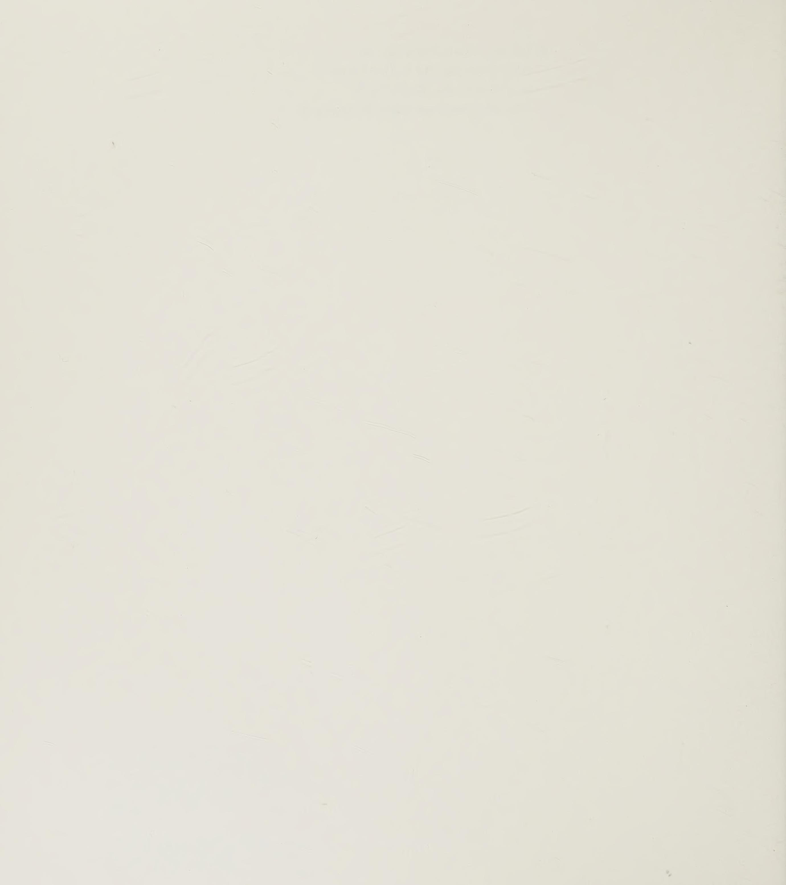
Hình 17.2: Ảnh minh họa (trang 12)Figure 17.2: Plate from page 12
Trọng tâm hẹp sẽ hướng sự chú ý đến một thứ gì đó rất cụ thể như gân trên một chiếc lá cụ thể trên một cành cụ thể.
The practical consequences to your volley of increasing your alertness are obvious. Most volleys are missed either because contact is made too far behind the player, or because they are off center. Becoming more aware of the present makes it easier to know where the ball is at all times and to react soon enough to meet it at the instant of your choice. Some people think that they are just too slow to return a hard shot when they are at net. But time is a relative thing, and it really is possible to slow it down. Consider: there are 1000 milliseconds in every second. That’s a lot of milliseconds. Alertness is a measure of how many nows you are alert to in a given period. The result is simple: you become more aware of what is going on as you learn to keep your attention in the now.
Ở ĐÂY VÀ BÂY GIỜ CỦA SÂN TENNIS Quay lại sân tennis. Việc quan sát các đường nối của quả bóng là một sự tập trung chú ý hạn hẹp và có thể có hiệu quả trong việc ngăn chặn sự lo lắng cũng như các đối tượng chú ý không liên quan khác. Cảm nhận cảm giác của cơ thể bạn là trọng tâm rộng hơn và thu nhận một số cảm giác có thể hỗ trợ việc học quần vợt. Đón gió, chuyển động của đối thủ, quỹ đạo của quả bóng và cảm giác trong cơ thể bạn là trọng tâm thậm chí còn rộng hơn, nhưng có lẽ khá phù hợp với nhiệm vụ trước mắt. Nó vẫn tập trung vì nó loại bỏ tất cả những gì không liên quan và làm sáng tỏ tất cả những gì có liên quan. Một điều có thể nói về sự tập trung là nó luôn ở đây và bây giờ - tức là trong thời gian hiện tại và không gian hiện tại. Phần đầu của chương này gợi ý một số “ở đây” làm đối tượng để tập trung. Các đường nối tập trung nhận thức chính xác hơn về không gian so với chỉ bản thân quả bóng và khi bạn thêm nhận thức về yếu tố này đến yếu tố khác của trò chơi quần vợt—từ âm thanh của quả bóng đến cảm giác của từng phần của mỗi cú đánh—bạn sẽ thu được nhiều kiến thức hơn. Nhưng cũng cần phải học cách tập trung nhận thức vào hiện tại. Điều này đơn giản có nghĩa là điều chỉnh những gì đang xảy ra trong hiện tại. Sự mất tập trung lớn nhất xảy ra khi chúng ta cho phép tâm trí phóng chiếu những gì sắp xảy ra hoặc tập trung vào những gì đã xảy ra. Tâm trí dễ dàng hấp thụ chính nó trong thế giới của “điều gì sẽ xảy ra nếu”. “Nếu tôi mất điểm này thì sao?” nó nghĩ; "thì tôi sẽ thua 5–3 về cú giao bóng của anh ấy. Nếu tôi không bẻ giao bóng của anh ấy, thì tôi sẽ thua set đầu tiên và có thể là cả trận đấu. Tôi không biết Martha sẽ nói gì khi nghe tin tôi thua George.” Tại thời điểm này, không có gì lạ khi tâm trí rơi vào một ảo tưởng nho nhỏ về phản ứng của Martha khi nghe tin bạn đã thua George. Trong khi đó, trở lại hiện tại, tỷ số vẫn là 3–4, 30–40, và bạn hầu như không nhận thức được rằng mình đang ở trên sân; năng lượng có ý thức mà bạn cần để đạt được đỉnh cao ở hiện tại đã rò rỉ vào một tương lai tưởng tượng. Tương tự như vậy, tâm trí thường thu hút sự chú ý của con người về quá khứ. “Nếu trọng tài biên không gọi quả giao bóng cuối cùng đó ra, tỷ số sẽ là thất bại và tôi đã không rơi vào tình trạng lộn xộn này. Điều tương tự đã xảy ra với tôi vào tuần trước và khiến tôi phải trả giá bằng trận đấu. Nó khiến tôi mất tự tin và bây giờ điều tương tự lại xảy ra. Tôi tự hỏi tại sao.” Một khía cạnh thú vị của quần vợt là chẳng bao lâu nữa bạn hoặc đối thủ của bạn sẽ đánh một quả bóng và điều này sẽ triệu hồi bạn trở lại hiện tại. Nhưng thông thường một phần năng lượng của chúng ta còn sót lại trong thế giới tư tưởng về quá khứ hoặc tương lai, nên hiện tại không được nhìn thấy dưới ánh sáng của nhận thức đầy đủ của một người. Kết quả là, các vật thể trông mờ đi, quả bóng dường như bay nhanh hơn, có vẻ nhỏ hơn và thậm chí cả sân dường như bị thu hẹp lại. Vì tâm trí dường như có ý chí riêng, làm sao người ta có thể học cách giữ nó trong hiện tại? Bằng thực hành. Không có cách nào khác. Mỗi khi tâm trí bạn bắt đầu rò rỉ đi, bạn chỉ cần nhẹ nhàng mang nó trở lại. Tôi đã từng sử dụng một máy đánh bóng có phạm vi vận tốc rộng và có một bài tập đơn giản giúp người chơi trải nghiệm ý nghĩa của việc sống nhiều hơn trong hiện tại. Tôi yêu cầu học sinh đứng trên lưới ở tư thế đánh vô-lê, sau đó đặt máy bắn bóng với tốc độ 3/4. Từ chỗ bình thường ban đầu, họ đột nhiên trở nên cảnh giác hơn. Lúc đầu, những quả bóng có vẻ quá nhanh đối với họ, nhưng ngay sau đó phản ứng của họ nhanh chóng hơn. Dần dần tôi vặn máy với tốc độ ngày càng nhanh hơn và cú vô lê trở nên tập trung hơn. Khi họ phản ứng đủ nhanh để đánh những quả bóng tốc độ cao nhất và tin rằng họ đang ở đỉnh cao sự tập trung, tôi di chuyển máy đến giữa sân, gần hơn trước 15 feet. Tại thời điểm này, học sinh thường mất tập trung khi mức độ sợ hãi xâm chiếm. Cẳng tay của họ sẽ hơi căng lên, khiến chuyển động của họ kém nhanh và chính xác hơn. "Thư giãn cẳng tay của bạn. Thư giãn tâm trí của bạn. Đơn giản chỉ cần thư giãn vào hiện tại, tập trung vào các đường nối của quả bóng và để nó xảy ra." Chẳng bao lâu sau, họ lại có thể đón bóng ở phía trước bằng tâm vợt. Không có nụ cười tự mãn, chỉ có sự tập trung hoàn toàn vào từng khoảnh khắc. Sau đó một số tay vợt cho rằng bóng dường như bay chậm lại; những người khác nhận xét rằng việc đánh bóng thật kỳ lạ khi bạn không có thời gian để nghĩ về nó. Tất cả những ai bước vào trạng thái hiện diện đó dù chỉ một chút sẽ trải nghiệm sự bình tĩnh và mức độ ngây ngất mà họ sẽ muốn lặp lại. Những hậu quả thực tế đối với việc tăng cường sự tỉnh táo của bạn là rất rõ ràng. Hầu hết các cú vô lê đều bị trượt do tiếp xúc ở quá xa phía sau tay vợt hoặc do chúng lệch tâm. Nhận biết rõ hơn về hiện tại giúp bạn dễ dàng biết quả bóng đang ở đâu vào mọi lúc và phản ứng đủ sớm để gặp nó vào thời điểm bạn chọn. Một số người cho rằng họ quá chậm để thực hiện cú đánh mạnh khi ở trên lưới. Nhưng thời gian là một thứ tương đối và thực sự có thể làm nó chậm lại. Hãy xem xét: có 1000 mili giây trong mỗi giây. Đó là SUBGAME a: rất nhiều mili giây. Sự tỉnh táo là thước đo số lần bạn cảnh giác trong một khoảng thời gian nhất định. Kết quả rất đơn giản: bạn nhận thức rõ hơn về những gì đang diễn ra khi bạn học cách giữ sự chú ý của mình vào hiện tại. Sau khi luyện tập có mặt ở thời điểm hiện tại, tôi thấy rằng mình có thể thay đổi vị trí của mình khi trả giao bóng từ đứng ở vạch cuối sân sang chỉ đứng sau vạch giao bóng một bước chân. Nếu tôi tập trung và thư giãn, tôi có thể thấy những cú giao bóng nhanh thậm chí còn đủ tốt để “làm chậm chúng kịp thời”, phản ứng và nhặt bóng chỉ trong tích tắc sau khi nó nảy lên. Không có thời gian để thực hiện cú backswing và không có thời gian để suy nghĩ về những gì tôi đang làm hoặc thậm chí nơi tôi sẽ đánh bóng. Sẽ chỉ có sự tập trung bình tĩnh và phản ứng tự phát khi gặp bóng và theo dõi, tạo chiều sâu và hướng cho quả bóng. Ngay sau đó tôi sẽ ở trên mạng—trước cả người giao bóng! Người giao bóng khi nhìn thấy tôi đang đứng ở vạch giao bóng để nhận cú giao bóng của anh ta, sẽ phải suy nghĩ về điều mà anh ta có thể coi là một sự xúc phạm đối với cú giao bóng của mình; anh ấy thường phạm lỗi nhiều lần trong nỗ lực dạy cho tôi một bài học. Vấn đề tiếp theo của anh ấy là thực hiện một cú vô lê từ một nơi nào đó trong vùng đất vắng người. Người đọc có thể hoàn toàn tự nhiên nghĩ rằng chiến thuật này sẽ không thể thực hiện được trước một cú giao bóng thực sự hạng nhất. Không đúng sự thật. Chỉ sau vài tháng thử nghiệm kiểu trả giao bóng này, tôi nhận thấy có thể sử dụng nó để mang lại lợi thế lớn khi thi đấu trong giải đấu. Càng sử dụng nó, phản ứng của tôi càng nhanh và chính xác hơn. Sự tập trung dường như làm thời gian trôi chậm lại, mang lại cho tôi nhận thức cần thiết để nhìn và đặt bóng. Việc tôi gặp quả bóng đang bay lên đã cắt đứt mọi góc mà người giao bóng thường có được khi giao bóng sau khi nó nảy lên. Và thực tế là tôi có thể chạm lưới trước khi người giao bóng cho tôi quyền kiểm soát vị trí chỉ huy trên sân.
After practicing being present to the moment, I found that I could change my position on the return of serve from standing at the baseline to standing only a foot behind the service line. If I stayed focused and relaxed, I could see even fast serves well enough to “slow them down in time,” respond and pick up the ball just a split second after it bounced. There was no time for a backswing and no time to think about what I was doing or even where I would hit the ball. There would just be a calm focus and a spontaneous response to meet the ball and follow-through, giving depth and direction to the ball. At the next instant I would be at the net—well before the server! The server, seeing me standing at the service line to receive his serve, would have to deal mentally with what he might take to be an insult to his serve; he would often double-fault more than once in an effort to teach me a lesson. His next problem would be hitting a volley passing shot from somewhere within no man’s land. The reader might quite naturally think that this tactic would be impossible against a really first-rate serve. Not true. After only a few months of experimenting with this return of serve, I found it possible to use it to great advantage in tournament play. The more I used it, the quicker and more accurate my reactions became. Concentration seemed to slow time down, giving me the necessary awareness to see and place the ball. The fact that I met the ball on the rise cut off all the angle that a server usually gets on his serve after it bounces. And the fact that I could reach the net before the server gave me control of the commanding position on the court. Most of the ways for developing concentration mentioned earlier are best employed during practice. In a match it is usually best to pick one focus— whatever works best for you—and stick with it. For example, if the seams of the ball tend to keep you centered in the here and now, there is no need to focus on sound or feel. Often the fact that you are playing a match will help you to focus. During the course of a point, you often find yourself in a state of relatively deep concentration in which you are only aware of what is happening at that instant. The critical time is between points! After the last shot of a rally, the mind leaves its focus on the ball and is free to wander. It is at this moment that thoughts about the score, your erratic backhand, business, the children, dinner and so forth tend to siphon your energy away from the here and now. Then it is difficult to regain the same level of concentration before the next point begins. How to stay concentrated in the here and now between points? My own device, and one that has been effective for many of my students,is to focus attention on breathing. Some object or activity which is always present is needed. What is more here and now than one’s breathing? Putting attention on breathing simply means observing my breath going in, going out, going in, going out in its natural rhythm. It does not mean intentionally controlling my breath.
TẬP TRUNG TRONG TRẬN ĐẤU Hầu hết các cách phát triển khả năng tập trung được đề cập trước đó đều được sử dụng tốt nhất trong quá trình luyện tập. Trong một trận đấu, tốt nhất bạn nên chọn một trọng tâm—bất cứ điều gì phù hợp nhất với bạn—và kiên trì với nó. Ví dụ: nếu các đường nối của quả bóng có xu hướng khiến bạn tập trung vào thời điểm hiện tại thì không cần phải tập trung vào âm thanh hoặc cảm giác. Thường thì việc bạn đang chơi một trận đấu sẽ giúp bạn tập trung hơn. Trong quá trình diễn ra một điểm, bạn thường thấy mình ở trạng thái tập trung tương đối sâu, trong đó bạn chỉ nhận thức được điều gì đang xảy ra tại thời điểm đó. Thời điểm quan trọng là giữa các điểm! Sau cú đánh cuối cùng của một pha giao bóng, tâm trí sẽ không còn tập trung vào quả bóng và có thể tự do lang thang. Chính tại thời điểm này, những suy nghĩ về điểm số, cú trái tay thất thường, công việc kinh doanh, con cái, bữa tối, v.v. có xu hướng hút năng lượng của bạn ra khỏi hiện tại. Sau đó, rất khó để lấy lại mức độ tập trung như cũ trước khi điểm tiếp theo bắt đầu. Làm thế nào để duy trì sự tập trung ở đây và bây giờ giữa các điểm? Biện pháp của riêng tôi, và cũng là biện pháp có hiệu quả đối với nhiều học trò của tôi, là tập trung sự chú ý vào hơi thở. Cần có một đối tượng hoặc hoạt động nào đó luôn hiện hữu. Ở đây và bây giờ còn có gì hơn hơi thở của con người? Chú ý vào hơi thở đơn giản có nghĩa là quan sát hơi thở của tôi đi vào, đi ra, đi vào, đi ra theo nhịp điệu tự nhiên của nó. Nó không có nghĩa là cố ý kiểm soát hơi thở của mình. Hơi thở là một hiện tượng đáng chú ý. Dù có ý định hay không, chúng ta vẫn thở. Thức hay ngủ, nó luôn luôn xảy ra. Ngay cả khi chúng ta cố gắng dừng lại, một thế lực nào đó sẽ sớm chế ngự được nỗ lực của chúng ta và chúng ta sẽ phải thở dốc. Vì vậy, khi chúng ta tập trung vào hơi thở, chúng ta đang chú ý đến một điều gì đó có liên quan mật thiết đến năng lượng sống của cơ thể. Ngoài ra, hơi thở là một nhịp điệu rất cơ bản. Người ta nói rằng trong hơi thở con người tóm tắt lại nhịp điệu của vũ trụ. Khi tâm trí được gắn chặt với nhịp thở, nó có xu hướng trở nên tập trung và bình tĩnh. Dù trong hay ngoài sân đấu, tôi biết không có cách nào tốt hơn để bắt đầu đối phó với sự lo lắng hơn là tập trung tâm trí vào quá trình thở của một người. Lo lắng là nỗi sợ hãi về những gì có thể xảy ra trong tương lai và nó chỉ xảy ra khi tâm trí đang tưởng tượng những gì tương lai có thể mang lại. Nhưng khi sự chú ý của bạn tập trung vào thời điểm hiện tại thì những hành động cần thực hiện trong hiện tại sẽ có cơ hội tốt nhất để thực hiện thành công và kết quả là tương lai sẽ trở thành hiện tại tốt nhất có thể. Vì vậy, sau khi một hiệp đấu kết thúc và tôi đang trở lại vị trí hoặc chuẩn bị nhặt bóng, tôi đặt tâm trí vào hơi thở của mình. Ngay khi tâm trí tôi bắt đầu băn khoăn không biết mình sẽ thắng hay thua trận đấu, tôi nhẹ nhàng đưa nó trở lại hơi thở và thư giãn theo chuyển động tự nhiên và cơ bản của nó. Bằng cách này, vào thời điểm điểm tiếp theo sẵn sàng bắt đầu, tôi thậm chí còn có thể tập trung hơn so với điểm trước đó. Kỹ thuật này không chỉ hữu ích cho tôi trong việc ngăn chặn tâm trí băn khoăn về những cú đánh xấu mà còn giúp tôi không còn tự ti về những cú đánh tốt bất thường.
Breathing is a remarkable phenomenon. Whether we intend to or not, we breathe. Awake or asleep, it is always happening. Even if we try to stop, some force will soon overpower our efforts and we will take a breath. Thus, when we focus on breathing we are putting our attention on something closely connected to the life energy of the body. Also, breathing is a very basic rhythm. It is said that in breathing man recapitulates the rhythm of the universe. When the mind is fastened to the rhythm of breathing, it tends to become absorbed and calm. Whether on or off the court, I know of no better way to begin to deal with anxiety than to place the mind on one’s breathing process. Anxiety is fear about what may happen in the future, and it occurs only when the mind is imagining what the future may bring. But when your attention is on the here and now, the actions which need to be done in the present have their best chance of being successfully accomplished, and as a result the future will become the best possible present.
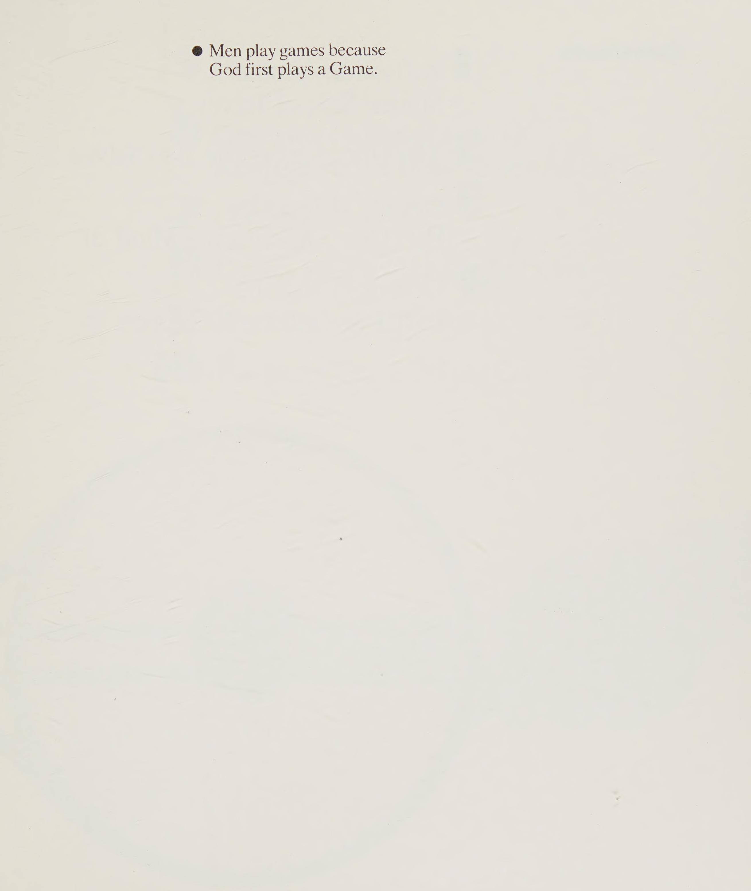
Hình 17.3: Ảnh minh họa (trang 13)Figure 17.3: Plate from page 13
CHƠI TRONG KHU VỰC CỦA BẢN THÂN Trong chương đầu tiên của cuốn sách này, tôi đã đề cập đến cách mọi người có xu hướng mô tả trạng thái tinh thần của họ khi họ đang chơi thứ quần vợt hay nhất của mình. Họ thường sử dụng những cụm từ như “chơi đùa mất trí” hoặc “chơi đùa vượt quá khả năng của anh ấy”. Cụm từ hiện tại là “chơi trong khu vực”. Sự thật thú vị về trạng thái tâm trí này là nó thực sự không thể được mô tả một cách chính xác bởi vì tại thời điểm bạn đang ở trong trạng thái đó, trạng thái thường mô tả lại không có mặt. Sau khi rời khỏi tiểu bang, bạn có thể cố gắng nhớ lại mọi chuyện diễn ra như thế nào. Nhưng điều đó thật khó khăn. Tất cả những gì bạn có thể biết là nó mang lại cảm giác dễ chịu và tác dụng như có phép thuật. Tuy nhiên, mặc dù bạn không biết nhiều về những gì đang xảy ra trong trạng thái đó, bạn có thể biết rất nhiều về những gì không xảy ra. Bạn có thể nhớ rằng bạn không hề chỉ trích chính mình; bạn cũng không chúc mừng chính mình. Bạn đã không nghĩ đến việc làm thế nào để thực hiện cú đánh một cách chính xác hoặc làm thế nào để không thực hiện cú đánh. Bạn không hề nghĩ về những cú đánh trong quá khứ hay về tỷ số trong tương lai, về những gì mọi người sẽ nghĩ hoặc thậm chí về kết quả sẽ đạt được. Nói cách khác, cái còn thiếu là Self 1. Cái còn lại là Self 2. Bởi vì Self 1 không có trong bức tranh, nên đôi khi chúng ta nói, tôi không làm điều đó, nó chỉ xảy ra thôi. Học sinh thường sử dụng những ngôn ngữ như “Tôi không ở đó”, “Có thứ gì đó khác đã thay thế”, “Vợt của tôi đã làm điều này hoặc điều kia” như thể nó có ý chí riêng. Nhưng cây vợt không bị thiếu, và cú đánh tuyệt vời không phải là ngẫu nhiên, ngay cả khi bạn không có kế hoạch đó. Đó là Self 2 đang đánh bóng. Trên thực tế, đó là khi bạn đánh bóng mà không có sự can thiệp thông thường từ Self 1. Điều thú vị là, trạng thái hiện hữu này, khi Self 1 vắng mặt và Self 2 hiện diện, luôn mang lại cảm giác dễ chịu và cho phép ý thức sống động hơn và thường có thành tích xuất sắc. Nó có thể không giống như sự thỏa mãn cái tôi, một cảm giác mà tất cả chúng ta thường rất thích, nhưng có một cảm giác mà một số người gọi là sự hài hòa, cân bằng, đĩnh đạc, thậm chí là bình yên hoặc mãn nguyện. Và bạn có thể cảm thấy như vậy ngay giữa một trận đấu quần vợt rất “căng thẳng”. Phil Jackson, huấn luyện viên của Michael Jordan và nhà vô địch NBA bốn lần, Chicago Bulls, mô tả rất rõ trạng thái tập trung vào Self 2 trong cuốn sách của ông, Sacred Hoops: "Bóng rổ là một điệu nhảy phức tạp đòi hỏi phải chuyển từ mục tiêu này sang mục tiêu khác với tốc độ cực nhanh. Để xuất sắc, bạn cần hành động với đầu óc minh mẫn và hoàn toàn tập trung vào những gì mọi người trên sàn đang làm. Bí quyết không phải là suy nghĩ. Điều đó không có nghĩa là ngu ngốc; nó có nghĩa làm dịu đi những suy nghĩ huyên thuyên không ngừng để cơ thể bạn có thể làm theo bản năng những gì nó được huấn luyện để làm mà không bị tâm trí cản trở. Tất cả chúng ta đều có những khoảnh khắc đồng nhất… Khi chúng ta hoàn toàn đắm chìm trong khoảnh khắc, không thể tách rời khỏi những gì chúng ta đang làm. Tôi đang đọc phần mô tả về khu vực này của Bill Russell, tay vợt bóng rổ nổi tiếng của đội Boston Celtics: "Ở cấp độ đặc biệt đó, tất cả những điều kỳ lạ đã xảy ra.... Gần như thể chúng tôi đang chơi trong một đoạn phim quay chậm. Trong những khoảng thời gian đó, tôi gần như có thể cảm nhận được lượt chơi tiếp theo sẽ diễn ra như thế nào và cú đánh tiếp theo sẽ được thực hiện ở đâu. Ngay cả trước khi đội kia đưa bóng vào biên, tôi có thể cảm nhận rõ ràng đến mức tôi muốn hét lên với các đồng đội của mình, 'Nó đang đến đó!' - ngoại trừ việc tôi biết mọi thứ sẽ thay đổi nếu Tôi đã làm như vậy. Những linh cảm của tôi luôn luôn chính xác, và khi đó tôi luôn cảm thấy rằng tôi không chỉ thuộc lòng tất cả các Celtics mà còn cả tất cả các tay vợt đối phương, và rằng giờ đây, đối với tôi, điều đó dường như ít kỳ quặc hơn. Chúng ta có thể tập trung. Chúng ta có thể có ý thức.” Một lưu ý về “khu vực”: nó không thể được kiểm soát bởi Self 1. Tôi đã thấy nhiều bài báo tuyên bố cung cấp một kỹ thuật để “chơi trong khu vực mọi lúc”. Quên nó đi! Đây là một thiết lập. Đó là một cái bẫy lâu đời. Self 1 thích ý tưởng chơi trong khu vực, đặc biệt là những kết quả thường xảy ra. Vì vậy Self 1 sẽ cố gắng nắm bắt hầu hết mọi thứ hứa hẹn sẽ đưa bạn đến nơi mà mọi người đều đồng ý là một nơi tuyệt vời. Nhưng có một nhược điểm; cách duy nhất để đến đó là bỏ lại Bản ngã 1 phía sau. Vì vậy, chỉ cần bạn để Self 1 đưa bạn đến đó thì nó cũng sẽ ở đó và bạn sẽ không thể đi vào khu vực đó. Nếu bạn làm vậy, dù chỉ trong chốc lát, Bản ngã 1 sẽ nói, “Tốt, tôi đã đến đó rồi,” và bạn sẽ lại ra ngoài. Một cách khác để nhìn nhận vùng này là nó được coi như một món quà. Đó không phải là một món quà mà bạn có thể đòi hỏi ở bản thân mình, mà là một món quà bạn có thể yêu cầu. Bạn hỏi thế nào? Bằng cách nỗ lực của bạn? Nỗ lực của bạn là gì? Nỗ lực của bạn phụ thuộc vào sự hiểu biết của bạn. Nhưng tôi có thể nói rằng nó luôn đòi hỏi nỗ lực tập trung và nỗ lực buông bỏ sự kiểm soát của Bản thân. Khi niềm tin tăng lên, Self 1 im lặng, Self 2 trở nên ý thức hơn và hiện diện hơn, niềm vui tăng lên và những món quà được trao đi. Nếu bạn sẵn lòng khen thưởng khi đến hạn và không nghĩ mình “biết” cách thực hiện thì việc tặng quà sẽ thường xuyên và bền vững hơn. Điều này nghe có vẻ không khoa học hoặc có vẻ không kiểm soát được như bạn mong muốn. Nhưng tôi có thể nói rằng tôi đã tán tỉnh Self 2 từ lâu rồi, hơn 25 năm một cách có ý thức, và nó đến vào đúng thời điểm của nó, khi tôi sẵn sàng đón nhận nó – khiêm tốn, tôn trọng, không mong đợi nó, bằng cách nào đó đặt mình thấp hơn nó, không cao hơn nó. Rồi khi thời điểm thích hợp đến, nó sẽ đến và tôi có thể tận hưởng sự vắng mặt của suy nghĩ về Bản thân và sự hiện diện của niềm vui. Tôi thích nó rất nhiều. Hãy tóm lấy nó và nó sẽ phun ra như một thanh xà phòng trơn trượt. Hãy coi đó là điều hiển nhiên, bạn sẽ bị phân tâm và đánh mất nó. Tôi đã từng nghĩ rằng bất cứ điều gì hiện diện trong trạng thái đó đều sẽ rời bỏ tôi, chỉ là phù du. Bây giờ tôi biết rằng nó luôn ở đó và chỉ có tôi là người rời đi. Khi tôi nhìn một đứa trẻ, tôi nhận ra rằng nó luôn luôn ở đó. Khi đứa trẻ lớn lên, có nhiều điều khiến tâm trí xao lãng và khó nhận ra hơn. Nhưng nó, Bản ngã 2, có thể là thứ duy nhất đã ở đó và sẽ ở đó suốt cuộc đời bạn. Những suy nghĩ và suy nghĩ đến và đi, nhưng bản thân đứa trẻ, cái tôi đích thực, vẫn ở đó và sẽ ở đó chừng nào hơi thở của chúng ta còn tồn tại. Tận hưởng nó, đánh giá cao nó là món quà của sự tập trung.
So after a point has ended and I’m returning to position or going to pick up a ball, I place my mind on my breathing. The second my mind starts wondering about whether I’m going to win or lose the match, I bring it gently back to my breath and relax in its natural and basic motion. In this way, by the time the next point is ready to start, I am able to be even more concentrated than I was in the midst of the previous one. This technique is not only useful for me in stopping the mind from fretting about bad shots, but keeps me from being self-conscious about unusually good shots.
LẠI TẬP TRUNG Thật khó hiểu khi tự hỏi tại sao chúng ta lại rời khỏi đây và bây giờ. Ở đây và bây giờ là nơi và thời gian duy nhất mà một người có thể tận hưởng hoặc hoàn thành bất cứ điều gì. Hầu hết đau khổ của chúng ta xảy ra khi chúng ta cho phép tâm trí mình tưởng tượng về tương lai hoặc ngẫm nghĩ về quá khứ. Tuy nhiên, rất ít người hài lòng với những gì trước mắt họ vào lúc này. Mong muốn của chúng ta rằng mọi thứ sẽ khác với bản chất của chúng, kéo tâm trí chúng ta vào một thế giới không thực, và do đó chúng ta ít có khả năng đánh giá cao những gì hiện tại mang lại. Tâm trí của chúng ta chỉ rời bỏ thực tại hiện tại khi chúng ta thích sự phi thực tế của quá khứ hoặc tương lai. Để bắt đầu hiểu được sự mất tập trung của chính mình, tôi phải biết mình thực sự mong muốn điều gì, và tôi nhanh chóng nhận ra rằng có nhiều ham muốn đang vận hành trong tôi trên sân hơn là chỉ đơn giản là chơi quần vợt. Nói cách khác, quần vợt không phải là trò chơi duy nhất tôi chơi trên sân. Một phần của quá trình đạt được trạng thái tâm trí tập trung là nhận biết và giải quyết những ham muốn xung đột này; chương sau sẽ cố gắng làm sáng tỏ quá trình này.
In the first chapter of this book I referred to the ways people tend to describe their state of mind when they are playing their best tennis. They used to use such phrases as “playing out of my mind” or “playing over his head.” The current phrase is “playing in the zone.” The interesting fact about this state of mind is that it really cannot be described accurately because at the moment you are in that state, the one that usually describes is not present. After you are out of the state, you may try to remember what it was like. But it is hard. All you may know is that it felt good and it worked like magic.
Chương 8
Những trò chơi người ta chơi trên sân
Rằng ngoài quần vợt còn một thứ khác đang được chơi trên
sân là hiển nhiên đối với người quan sát bình thường nhất. Bất kể anh ấy đang xem trận đấu ở câu lạc bộ đồng quê, công viên công cộng hay sân riêng, anh ấy sẽ thấy các tay vợt phải chịu đựng mọi thứ, từ sự thất vọng nhỏ đến sự bực tức lớn. Anh ta sẽ thấy việc dậm chân, lắc nắm đấm, khiêu vũ chiến tranh, nghi lễ, lời cầu xin, lời thề và lời cầu nguyện; vợt được ném vào hàng rào trong cơn giận dữ, lên không trung vì vui sướng, hoặc đập vào bê tông một cách ghê tởm. Những quả bóng vào sẽ được gọi ra và ngược lại. Trọng tài bị đe dọa, những cậu bé nhặt bóng bị la mắng và sự liêm chính của bạn bè bị nghi ngờ. Trên khuôn mặt của các tay vợt, bạn có thể nhanh chóng nhận thấy sự xấu hổ, tự hào, ngây ngất và tuyệt vọng. Sự tự mãn tự mãn nhường chỗ cho sự lo lắng cao độ, sự tự mãn dẫn đến sự thất vọng nặng nề. Sự tức giận và hung hăng với cường độ khác nhau được thể hiện một cách công khai và dưới hình thức trá hình. Nếu một người quan sát lần đầu tiên xem trận đấu, anh ta sẽ khó tin rằng tất cả kịch tính này có thể được gói gọn trong một sân tennis đơn thuần, giữa tình yêu và trò chơi, set và match. Không có điểm dừng cho những thái độ khác nhau đối với trò chơi. Không chỉ có thể quan sát được toàn bộ các phản ứng cảm xúc trên sân mà còn có thể quan sát được nhiều loại động cơ của người chơi. Một số chỉ quan tâm đến chiến thắng. Một số có sự ngoan cường đáng kinh ngạc trong việc tránh thất bại, nhưng không thể giành được điểm trận đấu nếu điều đó được đưa ra cho họ. Nhiều người không quan tâm đến cách họ chơi, miễn là họ trông đẹp, và một số đơn giản là không quan tâm chút nào. Một số lừa dối đối thủ của họ; những người khác tự lừa dối mình. Một số luôn khoe khoang về việc họ giỏi như thế nào; những người khác liên tục nói với bạn rằng họ chơi kém như thế nào. Thậm chí có một số ít đến sân chỉ để giải trí và tập thể dục. Trong cuốn sách được nhiều người đọc của mình, Games People Play, Eric Berne đã mô tả những trò chơi tiềm ẩn ẩn dưới bề mặt tương tác của con người. Ông nói rõ ràng rằng những gì dường như đang xảy ra giữa con người với nhau chỉ là một phần nhỏ của câu chuyện. Điều tương tự cũng có vẻ đúng trên sân tennis, và vì để chơi tốt bất kỳ trận đấu nào, người ta phải biết càng nhiều càng tốt về nó, nên tôi đưa vào đây một hướng dẫn ngắn gọn về các trò chơi mà mọi người chơi trên sân tennis, sau đó là bản tường thuật ngắn gọn về quá trình tìm kiếm một trò chơi đáng chơi của riêng tôi. Tôi khuyên bạn nên đọc hướng dẫn này không phải như một bài tập tự phân tích mà là chìa khóa để khám phá cách tận hưởng niềm vui hơn khi chơi quần vợt. Thật khó để vui vẻ hoặc đạt được sự tập trung khi bản ngã của bạn đang tham gia vào điều mà nó cho là một cuộc đấu tranh sinh tử. Bản ngã 2 sẽ không bao giờ được phép thể hiện sự tự phát và xuất sắc khi Self 1 đang chơi một trò chơi thầm kín nặng nề nào đó liên quan đến hình ảnh bản thân của nó. Tuy nhiên, khi người ta nhận ra trò chơi của Bản ngã 1, người ta có thể đạt được một mức độ tự do nào đó. Khi đó, bạn có thể phân biệt một cách khách quan và tự mình khám phá ra trò chơi mà bạn cho là thực sự đáng chơi. Giải thích ngắn gọn về ý nghĩa của “trò chơi”. Mỗi trò chơi đều liên quan đến ít nhất một người chơi, một mục tiêu, một số chướng ngại vật giữa người chơi và mục tiêu của anh ta, một sân chơi (thể chất hoặc tinh thần) mà trò chơi được diễn ra và động cơ để chơi. Trong hướng dẫn bên dưới, tôi đã đặt tên cho ba loại trò chơi cùng với mục đích và động cơ chơi của chúng. Tôi gọi những trò chơi này là Good-o, Friends-o và Health-o–Fun-o, và chúng được chơi cả trong và ngoài sân đấu. Dưới mỗi danh mục chính này là các trò chơi phụ, có mục tiêu phụ và động cơ phụ, thậm chí mỗi trò chơi phụ còn có nhiều biến thể. Hơn nữa, hầu hết mọi người chơi các hình thức kết hợp của hai hoặc ba trò chơi cùng một lúc.
However, even though you don’t know much about what is happening in that state, you can know a lot about what is not happening. You can remember that you weren’t criticizing yourself; you weren’t congratulating yourself either. You weren’t thinking about how to do the stroke correctly or how not to do the stroke. You were not thinking about past shots or about the future score, about what people would think or even about the results to be obtained. In other words what was missing was Self 1. What was left was Self 2. Because Self 1 is not in the picture, sometimes we say, I didn’t do it, it just happened. Commonly students use language like, “I wasn’t there,” “Something else took over,” “My racket did this, or did that,” as if it had a will of its own. But the racket wasn’t missing, and the great shot was not an accident, even though you didn’t plan it. It was Self 2 hitting the ball. It was in fact you hitting the ball without the normal interference from Self 1. Interestingly, this state of being, when Self 1 is absent and Self 2 is present, always feels good, and allows a more vivid consciousness and usually great excellence in performance. It may not feel the same as ego gratification, a feeling which we all too often like a great deal, but there is a feeling some call harmony, balance, poise, even peace, or contentment. And it can feel that way in the middle of a very “intense” tennis match.
Trò chơi Lớn 1: Giỏi-o (Good-o)
MỤC TIÊU CHUNG: Để đạt được sự xuất sắc
Phil Jackson, coach of Michael Jordan and the four-time NBA Champions, the Chicago Bulls, describes the state of Self 2 focus very well in his book, Sacred Hoops: “Basketball is a complex dance that requires shifting from one objective to another at lightning speed. To excel, you need to act with a clear mind and be totally focused on what everyone on the floor is doing. The secret is not thinking. That doesn’t mean being stupid; it means quieting the endless jabbering of thoughts so that your body can do instinctively what it’s been trained to do without the mind getting in the way. All of us have flashes of oneness … When we’re completely immersed in the moment, inseparable from what we’re doing.”
ĐỘNG CƠ CHUNG: Chứng tỏ mình là “Tốt”
I was reading a description of the zone by Bill Russell, the famous basketball player for the Boston Celtics: “At that special level all sorts of odd things happened. … It was almost as if we were playing in slow motion. During those spells I could almost sense how the next play would develop and where the next shot would be taken. Even before the other team brought the ball in bounds, I could feel it so keenly that I’d want to shout to my teammates, ‘It’s coming there!’—except that I knew everything would change if I did. My premonitions would be consistently correct, and I always felt then that I not only knew all the Celtics by heart but also all the opposing players, and that they all knew me. It seems less odd to me now. It seems more like, yes, that’s the way it is, that’s the way it should be all the time. We can be focused. We can be conscious.”
Trò chơi Phụ A: Hoàn hảo-o (Perfect-o)
LUẬN ĐỀ: Tôi có thể đạt được điều tốt như thế nào? Trong Perfect-o, “tốt” được đo lường dựa trên tiêu chuẩn hiệu suất. Trong chơi gôn, nó được đo bằng par; trong quần vợt, đi ngược lại những kỳ vọng tự hình thành hoặc của cha mẹ, huấn luyện viên hoặc bạn bè.
One caution about “the zone”: it cannot be controlled by Self 1. I have seen many articles that claim to provide a technique for “playing in the zone every time.” Forget it! This is a setup. It’s an age-old trap. Self 1 likes the idea of playing in the zone, especially the results that usually occur. So Self 1 will try to grasp onto almost anything that promises to take you to what everyone agrees is a wonderful place. But there is one catch; the only way to get there is to leave Self 1 behind. So as long as you let Self 1 be the one that takes you there, it will be there too and you will not be able to go into the zone. If you do, even for a moment, Self 1 will say, “Good, I got there,” and you will be out again.
MỤC TIÊU: Sự hoàn hảo; để đạt được tiêu chuẩn cao nhất có thể.
Another way to look at the zone is that it comes as a gift. It is not a gift you can demand of yourself, but one you can ask for. How do you ask? By making your effort? What is your effort? Your effort depends on your understanding. But I would say it always involves an effort to focus and an effort to let go of Self 1 control. As trust increases, Self 1 quiets, Self 2 becomes more conscious and more present, enjoyment increases and the gifts are being given. If you are willing to give credit where credit is due and not think you “know” how to do it, the gifts are apt to be more frequent and sustainable.
ĐỘNG CƠ: Mong muốn chứng tỏ bản thân.
This may not sound scientific, or may not sound as in control as you might like. But I can say that I’ve been courting Self 2 for a long time now, over twenty-five years consciously, and it comes at its own timing, when I am ready for it—humble, respectful, not expecting it, somehow placing myself lower than it, not above it. Then when the moment is right, it comes, and I can enjoy the absence of Self 1 thought and the presence of joy. I like it a lot. Grab for it, and it will squirt away like a slippery bar of soap. Take it for granted, and you will be distracted and lose it. I used to think that whatever was present in that state would leave me, was ephemeral. Now I know that it is always there and it is only I who leave. When I look at a young child I realize it is there all the time. As the child grows, there is more to distract the mind, and it is harder to recognize. But it, Self 2, may be the only thing which has been there and will be there your entire life. Thoughts and thinking come and go, but the child self, the true self, is there and will be there as long as our breath is. To enjoy it, to appreciate it, is the gift of focus.
TRỞ NGẠI:
It is perplexing to wonder why we ever leave the here and now. Here and now are the only place and time when one ever enjoys himself or accomplishes anything. Most of our suffering takes place when we allow our minds to imagine the future or mull over the past. Nonetheless, few people are ever satisfied with what is before them at the moment. Our desire that things be different from what they are pulls our minds into an unreal world, and consequently we are less able to appreciate what the present has to offer. Our minds leave the reality of the present only when we prefer the unreality of the past or future. To begin to understand my own lapses of concentration I had to know what I was really desiring, and it soon became clear to me that there were more desires operating in me on the court than simply to play tennis. In other words, tennis was not the only game I was playing on the court. Part of the process of attaining a concentrated state of mind is to know and resolve these conflicting desires; the following chapter attempts to shed light on this process.
Bên ngoài: Khoảng cách không bao giờ thu hẹp giữa ý tưởng về sự hoàn hảo và khả năng rõ ràng của một người.
Games People Play on the Court
Bên trong: Tự phê bình vì chưa đạt đến mức hoàn hảo như mong muốn, dẫn đến chán nản, cố gắng quá mức và nghi ngờ bản thân khiến bạn nghĩ rằng ngay từ đầu bạn đã có điều gì đó cần phải chứng minh.
THAT SOMETHING ELSE BESIDES TENNIS IS BEING PLAYED ON THE courts is obvious to the most casual observer. Regardless of whether he is watching the game at a country club, a public park or a private court, he will see players suffering everything from minor frustration to major exasperation. He will see the stomping of feet, shaking of fists, war dances, rituals, pleas, oaths and prayers; rackets are thrown against fences in anger, into the air for joy, or pounded against the concrete in disgust. Balls that are in will be called out, and vice versa. Linesmen are threatened, ball boys scolded and the integrity of friends questioned. On the faces of players you may observe, in quick succession, shame, pride, ecstasy and despair. Smug complacency gives way to high anxiety, cockiness to hangdog disappointment. Anger and aggression of varying intensity are expressed both openly and in disguised forms. If an observer was watching the game for the first time, it would be hard for him to believe that all this drama could be contained on a mere tennis court, between love-all and game, set and match.
Trò chơi Phụ B: Thi đua-o (Compete-o)
LUẬN ĐỀ: Tôi giỏi hơn bạn. Ở đây, “tốt” được đo lường dựa trên thành tích của những người chơi khác chứ không phải so với tiêu chuẩn đã đặt ra.
There is no end to the variety of attitudes toward the game. Not only can the full spectrum of emotional response be observed on the court, but also a wide range in the motivations of its players. Some care only about winning. Some are amazingly tenacious about warding off defeat, but can’t win a match point if it’s offered to them. Many don’t care how they play, just as long as they look good, and some simply don’t care at all. Some cheat their opponents; others cheat themselves. Some are always bragging about how good they are; others constantly tell you how poorly they are playing. There are even a small handful who are out on the court simply for fun and exercise.
CHÂM NGÔN: Không phải tôi chơi giỏi thế nào mà quan trọng là tôi thắng hay thua.
In his widely read book, Games People Play, Eric Berne described the subliminal games that lie beneath the surface of human interaction. He made it remarkably clear that what appears to be happening between people is only a small part of the story. The same seems to be true on the tennis court, and since, to play any game well, one must know as much as possible about it, I include here a brief guide to the games people play on the tennis court, followed by a brief account of my own search for a game worth playing. I suggest that this guide be read not as an exercise in self-analysis, but as a key to discovering how to have more fun while playing tennis. It’s difficult to have fun or to achieve concentration when your ego is engaged in what it thinks is a life-and-death struggle. Self 2 will never be allowed to express spontaneity and excellence when Self 1 is playing some heavy ulterior game involving its self-image. Yet as one recognizes the games of Self 1, a degree of freedom can be achieved. When it is, you can discriminate objectively and discover for yourself the game you think is really worth playing.
MỤC TIÊU: Trở thành người giỏi nhất; để giành chiến thắng; để đánh bại tất cả những người đến.
A brief explanation of the meaning of “game.” Every game involves at least one player, a goal, some obstacle between the player and his goal, a field (physical or mental) on which the game is played and a motive for playing.
ĐỘNG CƠ: Mong muốn đứng đầu bảng. Xuất phát từ nhu cầu được ngưỡng mộ và kiểm soát.
In the guide below I have named three categories of games with their aims and motives for playing. I call these games Good-o, Friends-o and Health-o–Fun-o, and they are played both on and off the courts. Under each of these major categories are subgames, which have subaims and submotivations, and even each subgame has numerous variations. Moreover, most people play hybrid forms of two or three games at a time. Main Game 1: Good-o GENERAL AIM: To Achieve Excellence GENERAL MOTIVE: To Prove Oneself “Good”
TRỞ NGẠI:
SUBGAME A: Perfect-o THESIS: How good can I get? In Perfect-o, “good” is measured against a standard of performance. In golf, it is measured against par; in tennis, against self-conceived expectations or those of parents, coach or friends. AIM: Perfection; to reach the highest standard possible. MOTIVE: The desire to prove oneself.
Bên ngoài: Xung quanh luôn có người có thể đánh bại bạn; khả năng ngày càng cao của giới trẻ.
OBSTACLES: External: The never-closing gap between one’s idea of perfection and one’s apparent abilities. Internal: Self-criticism for not being as close to perfection as one would like, leading to discouragement, compulsively trying too hard and the selfdoubt that made you think you had anything to prove in the first place.
Bên trong: Tâm trí bận tâm đến việc so sánh bản thân với người khác, do đó ngăn cản hành động tự phát; tư tưởng tự ti xen lẫn tư tưởng ưu việt, tùy theo sự cạnh tranh; sợ thất bại.
SUBGAME B: Compete-o THESIS: I’m better than you. Here, “good” is measured against the performance of other players rather than against a set standard. MAXIM: It’s not how well I play, but whether I win or lose that counts. AIM: To be the best; to win; to defeat all comers. MOTIVE: Desire to be at the top of the heap. Stems from need for admiration and control. OBSTACLES: External: There is always someone around who can beat you; the rising ability of the young. Internal: The mind’s preoccupation with comparing oneself with others, thus preventing spontaneous action; thoughts of inferiority alternating with superiority, depending on the competition; fear of defeat.
Trò chơi Phụ C: Hình ảnh-o (Image-o)
LUẬN ĐỀ: Hãy nhìn tôi này! “Tốt” được đo bằng ngoại hình. Chiến thắng hay năng lực thực sự đều không quan trọng bằng phong cách.
SUBGAME C: Image-o THESIS: Look at me! “Good” is measured by appearance. Neither winning nor true competence is as important as style. AIM: To look good, flashy, strong, brilliant, smooth, graceful. MOTIVE: Desire for attention, praise. OBSTACLES: External: One can never look good enough. What looks good to one person does not look so good to another. Internal: Confusion about who one really is. Fear of not pleasing everyone and of imagined loneliness.
MỤC TIÊU: Để có vẻ ngoài ưa nhìn, hào nhoáng, mạnh mẽ, rực rỡ, mịn màng, duyên dáng.
Main Game 2: Friends-o GENERAL AIM: To Make or Keep Friends GENERAL MOTIVE: Desire for Friendship
ĐỘNG CƠ: Mong muốn được chú ý, khen ngợi.
SUBGAME A: Status-o THESIS: We play at the country club. It’s not so important how good you are as where you play and who plays with you. AIM: To maintain or improve social status. MOTIVE: Desire for the friendship of the prominent. OBSTACLES: External: The cost of keeping up with the Joneses. Internal: Fear of losing one’s social position.
TRỞ NGẠI:
SUBGAME B: Togetherness-o THESIS: All my good friends play tennis. You play to be with your friends. To play too well would be a mistake.
Bên ngoài: Người ta không bao giờ có thể trông đủ đẹp. Những gì có vẻ tốt đối với một người không có vẻ tốt đối với người khác.
AIM: To meet or keep friends. MOTIVE: Desire for acceptance and friendship. OBSTACLES: External: Finding the time, the place and the friends. Internal: Fear of ostracism.
Bên trong: Nhầm lẫn về con người thực sự của mình. Sợ không làm hài lòng tất cả mọi người và tưởng tượng sự cô đơn.
SUBGAME C: Husband-o or Wife-o THESIS: My husband (or wife) is always playing, so … AIM: To see your spouse. MOTIVE: Loneliness. OBSTACLES: External: Becoming good enough for spouse to play with you. Internal: Doubts that loneliness can be overcome on the tennis court. (See also internal obstacles of Perfect-o.)
Trò chơi Lớn 2: Bạn bè-o (Friends-o)
MỤC TIÊU CHUNG: Kết bạn hoặc giữ bạn bè
Main Game 3: Health-o–Fun-o GENERAL AIM: Mental or Physical Health or Pleasure GENERAL MOTIVE: Health and/or Fun
ĐỘNG CƠ CHUNG: Khát khao tình bạn
SUBGAME A: Health-o THESIS: Played on doctor’s advice, or as part of self-initiated physical improvement or beautification program. AIM: Exercise, work up a sweat, relax the mind. MOTIVE: Health, vitality, desire for prolongation of youth. OBSTACLES: External: Finding someone of like motive to play with. Internal: Doubts that tennis is really helping. The temptation to be drawn into Perfect-o or Good-o.
Trò chơi Phụ A: Địa vị-o (Status-o)
LUẬN ĐỀ: Chúng tôi chơi ở câu lạc bộ đồng quê. Điều quan trọng không phải là bạn giỏi đến đâu mà quan trọng là bạn chơi ở đâu và ai chơi cùng bạn.
SUBGAME B: Fun-o THESIS: Played neither for winning nor to become “good,” but for fun alone. (A game rarely played in its pure form.) AIM: To have as much fun as possible. MOTIVE: The enjoyment, in expression of excellence. OBSTACLES: External: None. Internal: Being pulled into Self 1 games. SUBGAME C: Learn-o THESIS: Played out of Self 2’s desire to learn and grow. AIM: Evolve. MOTIVE: Enjoyment of learning. OBSTACLES: External: None. Internal: Tendency to be drawn into Self 1 games.
MỤC TIÊU: Để duy trì hoặc cải thiện địa vị xã hội.
These three subgames can all be played at once without interfering with each other. They are internally harmonious with Self 2’s innate desires.
ĐỘNG CƠ: Mong muốn có được tình bạn của những người nổi bật.
Many “serious” tennis players in our society, regardless of the reasons which they may think motivated them to take up the sport in the first place, end up playing one or another version of Good-o. Many start tennis as a weekend sport in the hope of getting exercise and a needed relief from the pressures of daily life, but they end by setting impossible standards of excellence for themselves and often become more frustrated and tense on the court than off it.
TRỞ NGẠI:
How can the quality of one’s tennis assume such importance that it causes anxiety, anger, depression and self-doubt? The answer seems to be deeply rooted in a basic pattern of our culture. We live in an achievementoriented society where people tend to be measured by their competence in various endeavors. Even before we received praise or blame for our first report card, we were loved or ignored for how well we performed our very first actions. From this pattern, one basic message came across loud, clear and often: you are a good person and worthy of respect only if you do things successfully. Of course, the kind of things needed to be done well to deserve love varies from family to family, but the underlying equation between self-worth and performance has been nearly universal.
Bên ngoài: Chi phí để theo kịp Jones.
Now, that’s a pretty heavy equation, for it means that to some extent every achievement-oriented action becomes a criterion for defining one’s self-worth.
Bên trong: Sợ mất vị trí xã hội.
If someone plays bad golf, it comes somehow to mean that he is not quite as worthy of respect, his own or others’, as he would be if he played well. If he is the club champion, he is considered a winner, and thus a more valuable person in our society. It then follows that the intelligent, beautiful and competent tend to regard themselves as better people.
Trò chơi Phụ B: Gần gũi-o (Togetherness-o)
LUẬN ĐỀ: Tất cả những người bạn tốt của tôi đều chơi quần vợt. Bạn chơi để được ở bên bạn bè của bạn. Chơi quá hay sẽ là một sai lầm.
When love and respect depend on winning or doing well in a competitive society, it is inevitable (since every winner requires a loser and every top performance many inferior ones) that there will be many people who feel a lack of love and respect. Of course, these people will try hard to win the respect they lack, and the winners will try equally hard not to lose the respect they have won. In this light, it is not difficult to see why playing well has come to mean so much to us.
MỤC TIÊU: Để gặp gỡ hoặc giữ bạn bè.
But who said that I am to be measured by how well I do things? In fact, who said that I should be measured at all? Who indeed? What is required to disengage oneself from this trap is a clear knowledge that the value of a human being cannot be measured by performance—or by any other arbitrary measurement. Do we really think the value of a human being is measurable? It doesn’t really make sense to measure ourselves in comparison with other immeasurable beings. In fact, we are what we are; we are not how well we happen to perform at a given moment. The grade on a report card may measure an ability in arithmetic, but it doesn’t measure the person’s value. Similarly, the score of a tennis match may be an indication of how well I performed or how hard I tried, but it does not define me, nor give me cause to consider myself as something more or less than I was before the match.
ĐỘNG CƠ: Mong muốn được chấp nhận và kết bạn.
At about the age I was tall enough to see over the net, my father started me on tennis. I played the game more or less casually with my cousins and older sister until I was eleven, when I received my first tennis lesson from a new pro named John Gardiner at Pebble Beach, California. That same year, I played in my first tournament in the “under 11” division of the National Hardcourt Championships. The night before the match, I dreamed of the glory of being a dark-horse winner. My first match was a nervous but easy victory. My second, against the second-seeded player, ended in a 6–3, 6–4 defeat and with me sobbing bitterly. I had no idea why winning meant so much to me.
TRỞ NGẠI:
The next few summers I played tennis every day. I would wake myself at 7 A.M., make and eat my own breakfast in five minutes, then run miles to the Pebble Beach courts. I usually arrived a good hour before anyone else and would spend the time hitting forehands and backhands tirelessly against a backboard. During the day, I would play ten or fifteen sets, drill and take lessons, not stopping until there was no longer enough light to see the ball. Why? I really didn’t know. If someone had asked, I would have said that it was because I liked tennis. Though this was partially true, it was primarily because I was deeply involved in the game of Perfect-o. There was something I seemed to want badly to prove to myself. Winning was important to me in tournaments, but playing well was important day by day; I wanted to get better and better. My style was to think I would never win, and then to try to surprise myself and others. I was hard to beat, but I had an equally difficult time winning close matches. Though I hated losing, I didn’t really enjoy beating someone else; I found it slightly embarrassing. I was a tirelessly hard worker and never stopped trying to improve my strokes.
Bên ngoài: Tìm kiếm thời gian, địa điểm và bạn bè.
By the time I was fifteen I had won the National Hardcourt Championship in the boys’ division, and felt the rush of excitement at winning a major tournament. Earlier the same summer I went to the National Championships at Kalamazoo and lost in the quarterfinals to the seventh-seeded player 3–6, 6–0, 10–8. In the last set, I had been ahead 5–3, 40–15 on my serve. I was nervous but optimistic. In the first match point, I double-faulted in an attempt to serve an ace on my second serve. In the second, I missed the easiest put-away volley possible in front of a packed grandstand. For many years thereafter, I replayed that match point in countless dreams, and it is as vivid in my memory now as it was on that day twenty years ago. Why? What difference did it really make? It didn’t occur to me to ask.
Bên trong: Sợ bị tẩy chay.
By the time I entered college, I had given up the idea of proving my worth through the vehicle of championship tennis, and was happy to settle for being “a good amateur.” I put most of my energy into intellectual endeavors, sometimes grade-grubbing, sometimes a sincere search for Truth. From my sophomore year onward I played varsity tennis, and found that on days when I did poorly in my academic work, I would usually perform badly also on the tennis court. I would try hard to prove on the court what I had difficulty proving scholastically, but would usually find that lack of confidence in the one area tended to infect the other. Fortunately, the reverse was also true. During four years of collegiate play, I was almost always nervous when I walked onto a court to play a match. By the time I was a senior and had been elected captain of the team, I was of the intellectual opinion that competition really didn’t prove anything—but I was still tight before most matches.
Trò chơi Phụ C: Chồng-o hay Vợ-o (Husband-o or Wife-o)
LUẬN ĐỀ: Chồng (hoặc vợ) tôi luôn ham chơi nên…
After graduation I gave up competitive tennis for ten years and embarked on a career in education. While teaching English at Exeter Academy in New Hampshire, I realized that even the smartest of kids interfered significantly with their ability to learn and perform academically. Then, while a training officer on the U.S.S. Topeka, I saw how impoverished was our system of education and how backward our methods of training. When I got out of the Navy, I joined a group of idealists to found a liberal arts college in Northern Michigan. During its short five years of existence, I became more and more interested in learning how to learn and how to help others learn. I studied the work of Abraham Maslow and Carl Rogers in the late sixties, and studied learning theory at Claremont Graduate School, but did not really make a practical breakthrough in learning until, while on sabbatical from “education,” I taught tennis during the summer of 1970. I became interested in learning theory and, that summer, began to gain some insights into the learning process. Deciding to continue teaching tennis, I developed what came to be called the Inner Game—a way of learning that seemed to increase tremendously the learning rate of students. It also had a beneficial effect on my game. Learning a little about the art of concentration helped my game revive quickly, and soon I was consistently playing better than ever. After I became the club pro at the Meadowbrook Club in Seaside, California, I found that even though I didn’t have much time to work on my own strokes, by applying the principles I was teaching I could maintain a game which was seldom defeated by anyone in the local area.
MỤC TIÊU: Để gặp vợ/chồng của bạn.
One day, after playing particularly well against a very good player, I began wondering how I might fare in tournament competition. I felt confident of my game; still, I hadn’t played against ranked players. So I entered a tournament at the Berkeley Tennis Club in which top-ranking players were competing. On the appointed weekend, I drove to Berkeley with confidence, but by the time I arrived I had started to question my own ability. Everyone there seemed to be six foot five and to be carrying five or six rackets. I recognized many of the players from tennis magazines, but none of them seemed to recognize me. The atmosphere was very different from that of Meadowbrook, my little pond where I was chief frog. Suddenly I found my previous optimism turning to pessimism. I was doubting my game. Why? Had anything happened to it from the time I left my club three hours before?
ĐỘNG CƠ: Sự cô đơn.
My first match was against a player who literally was six foot five. Even though he carried only three rackets, as we each walked to a backcourt my knees felt a bit wobbly and my wrist didn’t seem as strong as usual. I tested it several times, tightening my hand on the handle of my racket. I wondered what would happen out on the court. But when we began to warm up, I soon saw that my opponent wasn’t nearly as good as I had imagined. Had I been giving him a lesson, I knew exactly what I would tell him, and I quickly categorized him as a “better-than-average club player” and felt better.
TRỞ NGẠI:
However, an hour later, with the score 4–1 in his favor in the second set, and having lost the first set 6–3, I began to realize that I was about to be beaten by a “better-than-average club player.” All during the match I had been on edge, missing easy shots and playing inconsistently. It seemed my concentration was off just enough so that I missed lines by inches and hit the top of the net with every other volley.
Bên ngoài: Trở nên đủ tốt để vợ/chồng chơi cùng bạn.
As it worked out, my opponent, on the verge of a clear victory, faltered. I don’t know what was happening inside his head, but he couldn’t finish me off. He lost the second set 7–5 and the next 6–1, but as I walked off the court, I had no sense that I had won the match—rather, that he had lost it.
Bên trong: Nghi ngờ liệu nỗi cô đơn có thể vượt qua trên sân tennis. (Xem thêm những trở ngại bên trong của Perfect-o.)
I began thinking immediately of my next match against a player highly ranked in northern California. I knew that he was a more experienced tournament player than I and probably more skilled. I certainly didn’t want to play the way I had during the first round; it would be a rout. But my knees were still shaky, my mind didn’t seem able to focus clearly, and I was nervous. Finally, I sat down in seclusion to see if I could come to grips with myself. I began by asking myself, “What’s the worst that can happen?”
Trò chơi Lớn 3: Sức khỏe-o–Vui-o (Health-o–Fun-o)
MỤC TIÊU CHUNG: Sức khỏe hoặc niềm vui về tinh thần hoặc thể chất
The answer was easy: “I could lose 6–0, 6–0.” “Well, what if you did? What then?” “Well… I’d be out of the tournament and go back to Meadowbrook. People would ask me how I did, and I would say that I lost in the second round to So-and-So.”
ĐỘNG CƠ CHUNG: Sức khỏe và/hoặc Niềm vui
They’d say sympathetically, “Oh, he’s pretty tough. What was the score?” Then I would have to confess; love and love.
Trò chơi Phụ A: Sức khỏe-o (Health-o)
LUẬN ĐỀ: Chơi theo lời khuyên của bác sĩ hoặc như một phần của chương trình làm đẹp hoặc cải thiện thể chất tự khởi xướng.
“What would happen next?” I asked myself.
MỤC TIÊU: Tập thể dục, đổ mồ hôi, thư giãn đầu óc.
“Well, word would quickly get around that I had been trounced up at Berkeley, but soon I’d start playing well again and before long life would be back to normal.”
I had tried to be as honest as I could about the worst possible results. They weren’t good, but neither were they unbearable—certainly not bad enough to get upset about. Then I asked myself, “What’s the best that could happen?”
TRỞ NGẠI:
Again the answer was clear: I could win 6–0, 6–0. “Then what?” “I’d have to play another match, and then another until I was beaten, which in a tournament like this was soon inevitable. Then I would return to my own club, report how I did, receive a few pats on the back, and soon all would again return to normal.”
Bên ngoài: Tìm người có cùng động cơ để chơi cùng.
Staying in the tournament another round or two didn’t seem overwhelmingly attractive, so I asked myself a final question: “Then what do you really want?”
Bên trong: Nghi ngờ rằng quần vợt thực sự có ích. Sự cám dỗ bị lôi kéo vào Perfect-o hoặc Good-o.
The answer was quite unexpected. What I really wanted, I realized, was to overcome the nervousness that was preventing me from playing my best and enjoying myself. I wanted to overcome the inner obstacle that had plagued me for so much of my life. I wanted to win the inner game.
Trò chơi Phụ B: Vui-o (Fun-o)
LUẬN ĐỀ: Chơi không phải để chiến thắng hay để trở nên “giỏi”, mà chỉ để giải trí. (Một trò chơi hiếm khi được chơi ở dạng thuần túy.) MỤC ĐÍCH: Để có được nhiều niềm vui nhất có thể.
Having come to this realization, knowing what I really wanted, I walked toward my match with a new sense of enthusiasm. In the first game, I double-faulted three times and lost my serve, but from then on I felt a new certainty. It was as if a huge pressure had been relieved, and I was out there playing with all the energies at my command. As it worked out, I was never able to break my opponent’s spinning, left-handed serve, but I didn’t lose my own serve again until the last game in the second set. I had lost 6–4, 6– 4, but I walked off the courts feeling that I had won. I had lost the external game, but had won the game I had wanted to, my own game, and I felt very happy. Indeed, when a friend came up to me after the match and asked how I’d done, I was tempted to say, “I won!”
ĐỘNG CƠ: Sự thích thú, thể hiện sự xuất sắc.
For the first time I recognized the existence of the Inner Game, and its importance to me. I didn’t know what the rules of the game were, nor exactly what its aim was, but I did sense that it involved something more than winning a trophy.
TRỞ NGẠI:
IN CONTEMPORARY WESTERN CULTURE THERE IS A GREAT DEAL OF controversy about competition. One segment values it highly, believing that it is responsible for Western progress and prosperity. Another segment says that competition is bad; that it pits one person against another and is therefore divisive; that it leads to enmity between people and therefore to a lack of cooperation and eventual ineffectualness. Those who value competition believe in sports such as football, baseball, tennis and golf. Those who see competition as a form of legalized hostility tend to favor such noncompetitive forms of recreation as surfing, Frisbee or jogging. If they do play tennis or golf, they insist on doing it “noncompetitively.” Their maxim is that cooperation is better than competition.
Bên ngoài: Không có.
Those who argue against the value of competition have plenty of ammunition. As pointed out in the last chapter, there is a wealth of evidence showing how frenzied people tend to become in competitive situations. It is true that competition for many is merely an arena for venting aggression; it is taken as a proving ground for establishing who is the stronger, tougher or smarter. Each imagines that by beating the other he has in some way established his superiority over him, not just in a game, but as a person. What is seldom recognized is that the need to prove yourself is based on insecurity and self-doubt. Only to the extent that one is unsure about who and what he is does he need to prove himself to himself or to others.
Bên trong: Bị kéo vào trò chơi Self 1.
It is when competition is thus used as a means of creating a self-image relative to others that the worst in a person tends to come out; then the ordinary fears and frustrations become greatly exaggerated. If I am secretly afraid that playing badly or losing the match may be taken to mean that I am less of a man, naturally I am going to be more upset with myself for missing shots. And, of course, this very uptightness will make it more difficult for me to perform at my highest levels. There would be no problem with competition if one’s self-image were not at stake.
Trò chơi Phụ C: Học hỏi-o (Learn-o)
LUẬN ĐỀ: Xuất phát từ mong muốn học hỏi và phát triển của Self 2.
I have taught many children and teenagers who were caught up in the belief that their self-worth depended on how well they performed at tennis and other skills. For them, playing well and winning are often life-anddeath issues. They are constantly measuring themselves in comparison with their friends by using their skill at tennis as one of the measuring rods. It is as if some believe that only by being the best, only by being a winner, will they be eligible for the love and respect they seek. Many parents foster this belief in their children. Yet in the process of learning to measure our value according to our abilities and achievements, the true and measureless value of each individual is ignored. Children who have been taught to measure themselves in this way often become adults driven by a compulsion to succeed which overshadows all else. The tragedy of this belief is not that they will fail to find the success they seek, but that they will not discover the love or even the self-respect they were led to believe will come with it. Furthermore,in their single-minded pursuit of measurable success, the development of many other human potentialities is sadly neglected. Some never find the time or inclination to appreciate the beauties of nature, to express their deepest feelings and thoughts to a loved one, or to wonder about the ultimate purpose of their existence.
MỤC TIÊU: Tiến hóa.
But whereas some seem to get trapped in the compulsion to succeed, others take a rebellious stance. Pointing to the blatant cruelties and limitations involved in a cultural pattern which tends to value only the winner and ignore even the positive qualities of the mediocre, they vehemently criticize competition. Among the most vocal are youth who have suffered under competitive pressures imposed on them by parents or society. Teaching these young people, I often observe in them a desire to fail. They seem to seek failure by making no effort to win or achieve success. They go on strike, as it were. By not trying, they always have an alibi: “I may have lost, but it doesn’t count because I really didn’t try.” What is not usually admitted is the belief that if they had really tried and lost, then yes, that would count. Such a loss would be a measure of their worth. Clearly this belief is the same as that of the competitor trying to prove himself. Both are Self 1 ego trips; both are based on the mistaken assumption that one’s sense of self-respect rides on how well he performs in relation to others. Both show fear of not measuring up. Only as this fundamental and often nagging fear begins to dissolve can we discover a new meaning in competition.
ĐỘNG CƠ: Hứng thú học tập.
My own attitude toward competition went through quite an evolution before I arrived at my present point of view. As described in the last chapter I was raised to believe in competition, and both playing well and winning meant a great deal to me. But as I began exploring Self 2’s learning process in both the teaching and playing of tennis, I became noncompetitive. Instead of trying to win, I decided to attempt only to play beautifully and excellently; in other words, I began to play a rather pure form of Perfect-o. My theory was that I would be unconcerned with how well I was doing in relation to my opponent and absorbed solely in achieving excellence for its own sake. Very beautiful; I would waltz around the court being very fluid, accurate and “wise.”
TRỞ NGẠI:
But something was missing. I didn’t experience a desire to win, and as a result I often lacked the necessary determination. I had thought that it was in the desire to win that one’s ego entered the picture, but at one point I began to ask myself if there wasn’t such a motivation as an egoless desire to win. Was there a determination to win that wasn’t an ego trip and didn’t involve all the fears and frustrations that accompany ego trips? Does the will to win always have to mean “See, I’m better than you”?
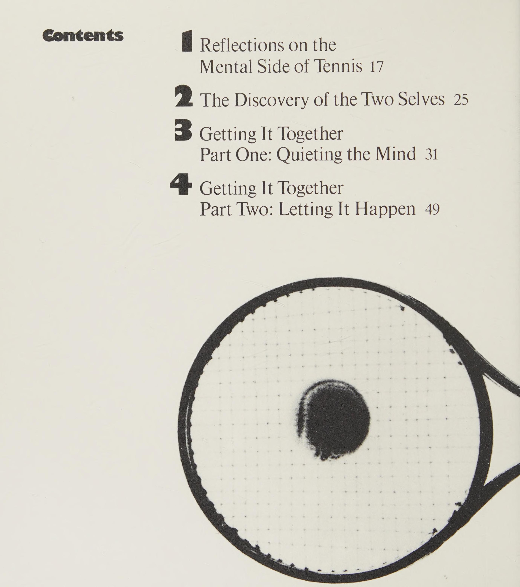
Hình 31.1: Ảnh minh họa (trang 14)Figure 31.1: Plate from page 14
Bên ngoài: Không có.
One day I had an interesting experience which convinced me in an unexpected way that playing for the sake of beauty and excellence was not all there was to tennis. For several weeks I had been trying to get a date with a particular girl. She had turned me down twice, but each time with what appeared to be a good reason. Finally a dinner date was set, and on that day as I finished my last lesson one of the other pros asked me to play a couple of sets. “I’d really like to, Fred,” I replied, “but I can’t make it this evening.” At that moment I was informed there was a telephone call for me. “Hold on, Fred,” I said. “If that call is what I’m afraid it is, you may have yourself a match. If so, watch out!” The call was what I’d feared. The excuse was a valid one, and the girl was so nice about it that I couldn’t get angry at her, but as I hung up I realized I was furious. I grabbed my racket, ran down to the court and began hitting balls harder than I ever had before. Amazingly, most of them went in. I didn’t let up when the match began, nor did I relent my all-out attack until it was over. Even on crucial points I would go for winners and make them. I was playing with an uncharacteristic determination even when ahead; in fact I was playing out of my mind. Somehow the anger had taken me beyond my own preconceived limitations; it took me beyond caution. After the match Fred shook my hand without looking in the least dejected. He’d run into a hurricane on that day which he couldn’t handle, but he’d had fun trying. In fact, I’d played so well that he seemed glad to have been there to witness it, or as if he deserved some credit for my reaching that level—which of course he did.
Bên trong: Có xu hướng bị lôi kéo vào các trò chơi của Self 1.
I don’t want to promote the idea of playing angry as the key to winning. If there was a key that day it was that I played sincerely. I was angry that evening and instead of trying to pretend otherwise, I expressed it appropriately through my tennis. It felt good, and it worked.
Ba trò chơi phụ này đều có thể được chơi cùng một lúc mà không ảnh hưởng lẫn nhau. Họ hài hòa với những ham muốn bẩm sinh của Bản ngã 2. ĐẠO ĐỨC CẠNH TRANH VÀ SỰ TRỞ LÊN CỦA GOOD-O Nhiều người chơi quần vợt “nghiêm túc” trong xã hội của chúng ta, bất kể lý do mà họ nghĩ là đã thúc đẩy họ tham gia môn thể thao này ngay từ đầu, cuối cùng lại chơi một hoặc một phiên bản khác của Good-o. Nhiều người bắt đầu chơi quần vợt như một môn thể thao cuối tuần với hy vọng rèn luyện sức khỏe và giảm bớt những áp lực của cuộc sống hàng ngày, nhưng cuối cùng họ lại đặt ra những tiêu chuẩn xuất sắc không tưởng cho bản thân và thường trở nên thất vọng và căng thẳng hơn trên sân hơn là ngoài đời. Làm thế nào chất lượng quần vợt của một người lại có tầm quan trọng đến mức gây ra lo lắng, tức giận, trầm cảm và nghi ngờ bản thân? Câu trả lời dường như có gốc rễ sâu xa trong khuôn mẫu cơ bản của nền văn hóa chúng ta. Chúng ta đang sống trong một xã hội hướng tới thành tích, nơi mọi người có xu hướng được đánh giá bằng năng lực của họ trong nhiều nỗ lực khác nhau. Ngay cả trước khi chúng ta nhận được lời khen ngợi hay chê bai về phiếu điểm đầu tiên của mình, chúng ta đã được yêu mến hoặc bị phớt lờ vì việc chúng ta đã thực hiện tốt những hành động đầu tiên của mình như thế nào. Từ mô hình này, một thông điệp cơ bản được truyền tải rõ ràng và thường xuyên: bạn là người tốt và chỉ đáng được tôn trọng nếu bạn làm việc thành công. Tất nhiên, những việc cần làm tốt để xứng đáng được yêu thương là khác nhau tùy theo từng gia đình, nhưng phương trình cơ bản giữa giá trị bản thân và hiệu suất gần như phổ biến. Bây giờ, đó là một phương trình khá nặng nề, vì nó có nghĩa là ở một mức độ nào đó, mọi hành động hướng tới thành tích đều trở thành tiêu chí để xác định giá trị bản thân. Nếu ai đó chơi gôn dở, điều đó có nghĩa là anh ta không hoàn toàn xứng đáng được tôn trọng, dù là của chính anh ta hay của người khác, như nếu anh ta chơi tốt. Nếu anh ấy là nhà vô địch của câu lạc bộ, anh ấy được coi là người chiến thắng và do đó là một người có giá trị hơn trong xã hội chúng ta. Sau đó, những người thông minh, xinh đẹp và có năng lực có xu hướng coi mình là người tốt hơn. Khi tình yêu và sự tôn trọng phụ thuộc vào việc chiến thắng hay làm tốt trong một xã hội cạnh tranh, thì điều không thể tránh khỏi (vì mỗi người chiến thắng đều cần có một kẻ thua cuộc và mỗi thành tích xuất sắc nhất lại có nhiều người kém cỏi) rằng sẽ có nhiều người cảm thấy thiếu tình yêu thương và sự tôn trọng. Tất nhiên, những người này sẽ cố gắng hết sức để giành được sự tôn trọng mà họ còn thiếu, và những người chiến thắng cũng sẽ cố gắng hết sức để không đánh mất sự tôn trọng mà họ đã giành được. Trong bối cảnh đó, không khó để hiểu tại sao việc chơi tốt lại có ý nghĩa rất lớn đối với chúng tôi. Nhưng ai nói rằng tôi được đánh giá bằng việc tôi làm tốt mọi việc như thế nào? Trên thực tế, ai đã nói rằng tôi nên được đo lường? Thực sự là ai? Điều cần thiết để thoát khỏi cái bẫy này là nhận thức rõ ràng rằng giá trị của con người không thể được đo lường bằng hiệu suất - hoặc bằng bất kỳ phép đo tùy tiện nào khác. Chúng ta có thực sự nghĩ rằng giá trị của một con người có thể đo lường được không? Thật không có ý nghĩa gì khi so sánh bản thân chúng ta với vô số chúng sinh khác. Trên thực tế, chúng ta là chính chúng ta; chúng ta không phải là chúng ta thực hiện tốt như thế nào tại một thời điểm nhất định. Điểm số trên phiếu điểm có thể đo lường khả năng về số học, nhưng nó không đo lường giá trị của một người. Tương tự như vậy, tỷ số của một trận đấu quần vợt có thể là dấu hiệu cho thấy tôi đã thi đấu tốt hay cố gắng như thế nào, nhưng nó không định nghĩa con người tôi cũng như không cho tôi lý do để coi bản thân mình hơn hay kém hơn trước trận đấu. TÌM KIẾM MỘT TRÒ CHƠI ĐÁNG CHƠI Ở độ tuổi tôi đã đủ cao để có thể nhìn qua mạng, cha tôi bắt đầu cho tôi chơi quần vợt. Tôi chơi trò chơi này ít nhiều một cách ngẫu nhiên với các anh chị họ và chị gái của mình cho đến khi tôi 11 tuổi, khi tôi nhận được bài học tennis đầu tiên từ một tay chơi chuyên nghiệp mới tên là John Gardiner ở Pebble Beach, California. Cùng năm đó, tôi thi đấu ở giải đấu đầu tiên ở hạng “dưới 11 tuổi” của Giải vô địch sân cứng quốc gia. Đêm trước trận đấu, tôi mơ về vinh quang trở thành người chiến thắng hắc mã. Trận đấu đầu tiên của tôi là một chiến thắng căng thẳng nhưng dễ dàng. Trận thứ hai của tôi, trước tay vợt hạt giống số hai, kết thúc với thất bại 6–3, 6–4 và tôi khóc nức nở một cách cay đắng. Tôi không biết tại sao chiến thắng lại có ý nghĩa rất lớn với tôi. Những mùa hè tiếp theo tôi chơi quần vợt hàng ngày. Tôi thường thức dậy lúc 7 giờ sáng, tự làm và ăn bữa sáng trong 5 phút, sau đó chạy hàng dặm đến sân Pebble Beach. Tôi thường đến trước bất kỳ ai khác một giờ và dành thời gian để đánh những cú thuận tay và trái tay một cách không mệt mỏi vào bảng sau. Ban ngày tôi chơi mười, mười lăm hiệp, luyện tập và học bài, không ngừng nghỉ cho đến khi không còn đủ ánh sáng để nhìn thấy bóng. Tại sao? Tôi thực sự không biết. Nếu có ai hỏi, tôi sẽ nói rằng đó là vì tôi thích quần vợt. Mặc dù điều này đúng một phần nhưng chủ yếu là do tôi đã tham gia sâu vào trò chơi Perfect-o. Có điều gì đó mà tôi dường như rất muốn chứng minh với bản thân mình. Chiến thắng là điều quan trọng đối với tôi trong các giải đấu, nhưng việc chơi tốt mỗi ngày còn quan trọng hơn; Tôi muốn ngày càng tốt hơn. Phong cách của tôi là nghĩ rằng mình sẽ không bao giờ thắng, rồi cố gắng làm bản thân và những người khác ngạc nhiên. Tôi rất khó bị đánh bại, nhưng tôi cũng gặp khó khăn không kém khi thắng những trận sát nút. Mặc dù tôi ghét thua cuộc nhưng tôi không thực sự thích đánh bại người khác; Tôi thấy hơi xấu hổ. Tôi là một người làm việc chăm chỉ không mệt mỏi và không bao giờ ngừng cố gắng cải thiện các cú đánh của mình. Khi tôi mười lăm tuổi, tôi đã giành chức vô địch sân cứng quốc gia ở hạng mục dành cho nam và cảm thấy vô cùng phấn khích khi vô địch một giải đấu lớn. Đầu mùa hè đó, tôi tham dự Giải vô địch quốc gia tại Kalamazoo và thua tay vợt hạt giống số bảy với tỷ số 3–6, 6–0, 10–8 ở tứ kết. Trong set cuối cùng, tôi đã dẫn trước 5–3, 40–15 trong lần giao bóng của mình. Tôi lo lắng nhưng lạc quan. Trong điểm trận đấu đầu tiên, tôi mắc lỗi kép khi cố gắng giao bóng át ở lần giao bóng thứ hai. Trong hiệp thứ hai, tôi đã bỏ lỡ cú vô lê dễ dàng nhất có thể trước một khán đài chật cứng. Trong nhiều năm sau đó, tôi đã nhớ lại trận đấu đó trong vô số giấc mơ, và nó vẫn sống động trong trí nhớ của tôi như ngày hôm đó cách đây hai mươi năm. Tại sao? Nó thực sự đã tạo ra sự khác biệt gì? Tôi không hề nghĩ tới việc hỏi. Khi vào đại học, tôi đã từ bỏ ý định chứng tỏ giá trị của mình thông qua phương tiện vô địch quần vợt và vui vẻ chấp nhận trở thành “một tay nghiệp dư giỏi”. Tôi dồn phần lớn sức lực của mình vào nỗ lực trí tuệ, đôi khi là nâng điểm, đôi khi là chân thành tìm kiếm Chân lý. Từ năm thứ hai trở đi tôi đã chơi ở trường đại học
The riddle of the meaning of competition didn’t come clear to me until later, when I began to discover something about the nature of the will to win. The key insight into the meaning of winning occurred one day in the course of discussion with my father, who, as mentioned earlier, had introduced me to competition and had considered himself an avid competitor in the worlds of both sport and business. Many times previously we had argued about competition, with my taking the side that it was unhealthy and only brought out the worst in people. But this particular conversation transcended argument.
Chương 9
Ý nghĩa của sự cạnh tranh
Trong văn hóa phương Tây đương đại có rất nhiều
tranh cãi về cạnh tranh. Một bộ phận đánh giá cao nó và tin rằng nó chịu trách nhiệm cho sự tiến bộ và thịnh vượng của phương Tây. Một bộ phận khác cho rằng cạnh tranh là không tốt; rằng nó khiến người này chống lại người khác và do đó gây chia rẽ; rằng nó dẫn đến sự thù địch giữa mọi người và do đó dẫn đến sự thiếu hợp tác và cuối cùng là kém hiệu quả. Những người coi trọng sự cạnh tranh tin vào các môn thể thao như bóng đá, bóng chày, quần vợt và gôn. Những người coi cạnh tranh là một hình thức thù địch được hợp pháp hóa có xu hướng ủng hộ những hình thức giải trí không mang tính cạnh tranh như lướt sóng, ném đĩa hoặc chạy bộ. Nếu họ chơi quần vợt hoặc chơi gôn, họ nhất quyết làm việc đó “không mang tính cạnh tranh”. Phương châm của họ là hợp tác tốt hơn cạnh tranh. Những người phản đối giá trị của cạnh tranh có rất nhiều lý lẽ. Như đã chỉ ra ở chương trước, có rất nhiều bằng chứng cho thấy những người điên cuồng có xu hướng trở nên như thế nào trong những tình huống cạnh tranh. Đúng là đối với nhiều người, cạnh tranh chỉ đơn thuần là một đấu trường để trút giận; nó được coi là cơ sở để chứng minh xem ai mạnh hơn, cứng rắn hơn hay thông minh hơn. Mỗi người tưởng tượng rằng bằng cách đánh bại người kia, theo một cách nào đó, anh ta đã thiết lập được ưu thế của mình so với người kia, không chỉ trong trò chơi mà còn với tư cách một con người. Điều hiếm khi được thừa nhận là nhu cầu chứng tỏ bản thân xuất phát từ sự bất an và nghi ngờ bản thân. Chỉ trong chừng mực mà một người không chắc mình là ai và là gì thì người đó mới cần chứng tỏ bản thân với chính mình hoặc với người khác. Vì vậy, khi sự cạnh tranh được sử dụng như một phương tiện để tạo ra hình ảnh bản thân so với người khác thì điều tồi tệ nhất ở một người có xu hướng lộ ra; khi đó những nỗi sợ hãi và thất vọng thông thường sẽ trở nên bị phóng đại quá mức. Nếu tôi thầm sợ rằng việc chơi tệ hoặc thua trận có thể bị coi là có nghĩa là tôi kém đàn ông hơn, tất nhiên tôi sẽ khó chịu hơn với bản thân vì đã bắn trượt. Và tất nhiên, sự căng thẳng này sẽ khiến tôi khó thể hiện được phong độ cao nhất của mình. Sẽ không có vấn đề gì với sự cạnh tranh nếu hình ảnh bản thân của một người không bị đe dọa. Tôi đã dạy cho nhiều trẻ em và thanh thiếu niên có niềm tin rằng giá trị bản thân phụ thuộc vào việc họ chơi quần vợt tốt như thế nào và các kỹ năng khác. Đối với họ, chơi tốt và giành chiến thắng thường là vấn đề sinh tử. Họ liên tục so sánh bản thân với bạn bè bằng cách sử dụng kỹ năng chơi quần vợt của mình như một trong những thước đo. Như thể một số người tin rằng chỉ khi trở thành người giỏi nhất, chỉ khi trở thành người chiến thắng, họ mới đủ điều kiện nhận được tình yêu và sự tôn trọng mà họ tìm kiếm. Nhiều bậc cha mẹ nuôi dưỡng niềm tin này ở con cái họ. Tuy nhiên, trong quá trình học cách đo lường giá trị của chúng ta theo khả năng và thành tích của mình, giá trị đích thực và vô hạn của mỗi cá nhân lại bị bỏ qua. Những đứa trẻ được dạy cách đo lường bản thân theo cách này thường trở thành người lớn bị thúc đẩy bởi sự ép buộc phải thành công, điều này làm lu mờ tất cả những thứ khác. Bi kịch của niềm tin này không phải là họ sẽ không tìm được thành công mà mình tìm kiếm, mà là họ sẽ không khám phá được tình yêu hay thậm chí là lòng tự trọng mà họ tin rằng sẽ đi kèm với nó. Hơn nữa, trong quá trình theo đuổi mục tiêu duy nhất là đạt được thành công có thể đo lường được, đáng buồn là sự phát triển của nhiều tiềm năng khác của con người đã bị bỏ quên. Một số người không bao giờ có thời gian hoặc khuynh hướng trân trọng vẻ đẹp của thiên nhiên, bày tỏ những cảm xúc và suy nghĩ sâu sắc nhất của mình với người thân hoặc thắc mắc về mục đích cuối cùng của sự tồn tại của họ. Nhưng trong khi một số người dường như bị mắc kẹt trong sự ép buộc phải thành công thì những người khác lại có lập trường nổi loạn. Chỉ ra sự tàn nhẫn và hạn chế trắng trợn liên quan đến một mô hình văn hóa có xu hướng chỉ coi trọng người chiến thắng và phớt lờ ngay cả những phẩm chất tích cực của những người tầm thường, họ kịch liệt chỉ trích sự cạnh tranh. Trong số những người lên tiếng nhiều nhất là những thanh niên phải chịu áp lực cạnh tranh do cha mẹ hoặc xã hội áp đặt lên họ. Dạy dỗ những người trẻ này, tôi thường quan sát thấy ở họ có khát khao thất bại. Họ dường như tìm kiếm thất bại bằng cách không nỗ lực để giành chiến thắng hoặc đạt được thành công. Họ tiếp tục đình công, như thường lệ. Bằng cách không cố gắng, họ luôn có bằng chứng ngoại phạm: “Tôi có thể thua, nhưng điều đó không được tính vì tôi thực sự đã không cố gắng”. Điều thường không được thừa nhận là niềm tin rằng nếu họ thực sự đã cố gắng và thất bại thì đúng vậy, điều đó sẽ được tính. Sự mất mát như vậy sẽ là thước đo giá trị của họ. Rõ ràng niềm tin này cũng giống như niềm tin của đối thủ đang cố gắng chứng tỏ bản thân. Cả hai đều là những chuyến đi của Bản ngã 1; cả hai đều dựa trên giả định sai lầm rằng lòng tự trọng của một người phụ thuộc vào việc anh ta thể hiện tốt như thế nào trong mối quan hệ với người khác. Cả hai đều tỏ ra lo sợ không đạt được mục tiêu. Chỉ khi nỗi sợ hãi cơ bản và thường xuyên dai dẳng này bắt đầu tan biến, chúng ta mới có thể khám phá ra ý nghĩa mới trong cạnh tranh. Thái độ của tôi đối với sự cạnh tranh đã trải qua một sự thay đổi khá lớn trước khi tôi có được quan điểm hiện tại. Như đã mô tả ở chương trước, tôi đã được nuôi dạy để tin vào sự cạnh tranh, và cả việc chơi tốt lẫn chiến thắng đều có ý nghĩa rất lớn đối với tôi. Nhưng khi tôi bắt đầu khám phá quá trình học tập của Self 2 trong cả việc dạy và chơi quần vợt, tôi trở nên không có tính cạnh tranh. Thay vì cố gắng giành chiến thắng, tôi quyết định chỉ cố gắng chơi đẹp và xuất sắc; nói cách khác, tôi bắt đầu chơi một dạng Perfect-o khá thuần túy. Lý thuyết của tôi là tôi sẽ không quan tâm đến việc mình đã làm tốt như thế nào so với đối thủ của mình và chỉ tập trung vào việc đạt được sự xuất sắc vì lợi ích của chính đối thủ đó. Rất đẹp; Tôi sẽ dạo quanh sân một cách rất uyển chuyển, chính xác và “khôn ngoan”. Nhưng có điều gì đó đã bị thiếu. Tôi không có ham muốn chiến thắng và kết quả là tôi thường thiếu quyết tâm cần thiết. Tôi đã nghĩ rằng chính trong mong muốn chiến thắng mà cái tôi của một người đã xuất hiện, nhưng có lúc tôi bắt đầu tự hỏi bản thân liệu có động cơ nào giống như mong muốn chiến thắng vô ngã hay không. Có quyết tâm giành chiến thắng nào mà không phải là hành vi bản ngã và không liên quan đến tất cả những nỗi sợ hãi và thất vọng đi kèm với hành vi bản ngã không? Phải chăng ý chí chiến thắng luôn có nghĩa là “Thấy chưa, tôi giỏi hơn bạn”? Một ngày nọ, tôi có một trải nghiệm thú vị đã thuyết phục tôi một cách bất ngờ rằng việc chơi quần vợt chỉ vì vẻ đẹp và sự xuất sắc không phải là tất cả. Trong vài tuần, tôi đã cố gắng hẹn hò với một cô gái cụ thể. Cô ấy đã từ chối tôi hai lần, nhưng mỗi lần đều có lý do chính đáng. Cuối cùng, ngày ăn tối đã được ấn định, vào ngày hôm đó khi tôi học xong bài cuối cùng, một trong những chuyên gia khác đã yêu cầu tôi chơi vài hiệp. “Tôi thực sự muốn, Fred,” tôi đáp, “nhưng tối nay tôi không thể đến được.” Đúng lúc đó tôi được thông báo có một cuộc điện thoại cho tôi. “Đợi đã, Fred,” tôi nói. "Nếu cuộc gọi đó đúng như những gì tôi lo sợ, bạn có thể có cho mình một trận đấu. Nếu vậy, hãy cẩn thận!" Cuộc gọi là điều tôi lo sợ. Lý do đó là có căn cứ, và cô gái đó tử tế đến mức tôi không thể nổi giận với cô ấy, nhưng khi cúp máy, tôi nhận ra mình đang rất tức giận. Tôi chộp lấy cây vợt của mình, chạy xuống sân và bắt đầu đánh bóng mạnh hơn bao giờ hết. Thật ngạc nhiên là hầu hết họ đều đi vào. Tôi đã không bỏ cuộc khi trận đấu bắt đầu, cũng như không ngừng tấn công toàn lực cho đến khi trận đấu kết thúc. Ngay cả ở những điểm quan trọng, tôi cũng sẽ tìm kiếm cú ghi điểm trực tiếp và giành được chúng. Tôi đã chơi với một quyết tâm khác thường ngay cả khi dẫn trước; thực ra là tôi đang chơi đùa mất trí. Bằng cách nào đó, cơn giận đã đưa tôi vượt quá những giới hạn định sẵn của chính mình; nó khiến tôi mất cảnh giác. Sau trận đấu, Fred bắt tay tôi mà không hề tỏ ra chán nản. Ngày hôm đó anh ấy đã gặp phải một cơn bão mà anh ấy không thể xử lý được, nhưng anh ấy rất vui khi cố gắng. Trên thực tế, tôi đã chơi giỏi đến mức anh ấy có vẻ vui mừng khi có mặt ở đó để chứng kiến điều đó, hoặc như thể anh ấy xứng đáng được khen ngợi vì đã đạt được trình độ đó - tất nhiên là anh ấy đã làm như vậy. Tôi không muốn đề cao ý tưởng chơi trò tức giận như là chìa khóa để chiến thắng. Nếu có mấu chốt ngày hôm đó thì đó là tôi đã chơi chân thành. Tối hôm đó tôi đã tức giận và thay vì cố gắng giả vờ khác, tôi đã thể hiện điều đó một cách thích hợp thông qua môn quần vợt của mình. Nó cảm thấy tốt, và nó đã hoạt động.
I began by pointing to surfing as an example of a form of recreation which didn’t involve one in competitiveness. Reflecting on this remark, Dad asked, “But don’t surfers in fact compete against the waves they ride? Don’t they avoid the strength of the wave and exploit its weakness?”
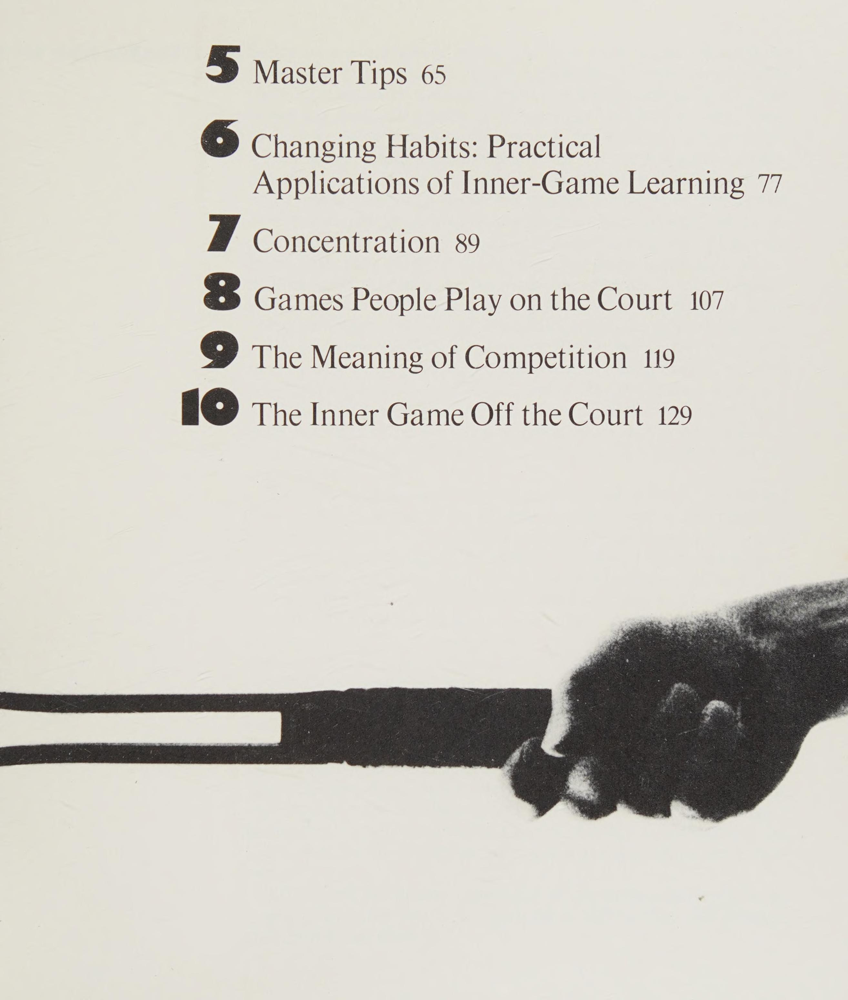
Hình 33.1: Ảnh minh họa (trang 15)Figure 33.1: Plate from page 15
Ý NGHĨA CỦA CHIẾN THẮNG Câu đố về ý nghĩa của cạnh tranh chỉ đến với tôi sau này, khi tôi bắt đầu khám phá ra điều gì đó về bản chất của ý chí chiến thắng. Cái nhìn sâu sắc quan trọng về ý nghĩa của chiến thắng xảy ra vào một ngày nọ trong quá trình thảo luận với cha tôi, người, như đã đề cập trước đó, đã giới thiệu cho tôi về cạnh tranh và tự coi mình là một đối thủ cạnh tranh cuồng nhiệt trong cả thế giới thể thao và kinh doanh. Nhiều lần trước đây chúng tôi đã tranh cãi về vấn đề cạnh tranh, tôi cho rằng nó không lành mạnh và chỉ mang lại điều tồi tệ nhất cho con người. Nhưng cuộc trò chuyện đặc biệt này đã vượt qua sự tranh cãi. Tôi bắt đầu bằng việc coi lướt sóng như một ví dụ về một hình thức giải trí không liên quan đến tính cạnh tranh. Suy ngẫm về nhận xét này, bố hỏi: "Nhưng trên thực tế, những người lướt sóng không cạnh tranh với những con sóng mà họ cưỡi sao? Họ không tránh sức mạnh của sóng và khai thác điểm yếu của nó sao?" “Đúng, nhưng họ không cạnh tranh với ai; họ không cố gắng đánh bại ai cả,” tôi trả lời. “Không, nhưng họ đang cố gắng đến được bãi biển phải không?” “Đúng, nhưng mục đích thực sự của người lướt sóng là hòa vào dòng sóng và có lẽ đạt được sự thống nhất với nó.” Nhưng rồi nó đánh tôi. Bố đã đúng; người lướt sóng muốn cưỡi con sóng đến bãi biển, nhưng anh ta lại chờ đợi con sóng lớn nhất ập đến trong đại dương mà anh ta nghĩ mình có thể xử lý được. Nếu anh ấy chỉ muốn “hòa vào dòng chảy”, anh ấy có thể làm điều đó trên làn sóng cỡ trung bình. Tại sao người lướt sóng lại chờ đợi cơn sóng lớn? Câu trả lời rất đơn giản và nó làm sáng tỏ sự nhầm lẫn xung quanh bản chất thực sự của cạnh tranh. Người lướt sóng chờ đợi con sóng lớn vì anh ta coi trọng thử thách mà nó mang lại. Anh ấy coi trọng những trở ngại mà con sóng đặt ra giữa anh ấy và mục tiêu cưỡi sóng đến bãi biển. Tại sao? Bởi vì chính những trở ngại đó, kích thước và sức mạnh khuấy động của sóng, đã thu hút nỗ lực lớn nhất của người lướt sóng. Chỉ khi gặp sóng lớn, người ta mới phải vận dụng hết kỹ năng, hết lòng dũng cảm và sự tập trung để vượt qua; chỉ khi đó anh ta mới có thể nhận ra giới hạn thực sự về năng lực của mình. Vào thời điểm đó anh ấy thường đạt đến đỉnh cao của mình. Nói cách khác, chướng ngại vật càng thách thức thì vận động viên lướt sóng càng có cơ hội khám phá và phát huy tiềm năng thực sự của mình. Tiềm năng có thể luôn ở bên trong anh ta, nhưng cho đến khi nó được thể hiện bằng hành động, nó vẫn là một bí mật ẩn giấu đối với anh ta. Những trở ngại là một thành phần rất cần thiết cho quá trình khám phá bản thân này. Lưu ý rằng người lướt sóng trong ví dụ này không phải để chứng tỏ bản thân; anh ấy không ra ngoài để chứng tỏ bản thân hoặc thế giới rằng anh ấy vĩ đại như thế nào mà chỉ đơn giản là tham gia vào việc khám phá những năng lực tiềm ẩn của mình. Anh ta trải nghiệm trực tiếp và sâu sắc những nguồn lực của chính mình và do đó nâng cao sự hiểu biết về bản thân. Từ ví dụ này, ý nghĩa cơ bản của chiến thắng trở nên rõ ràng hơn đối với tôi. Chiến thắng là vượt qua những trở ngại để đạt được mục tiêu, nhưng giá trị của chiến thắng chỉ lớn bằng giá trị của mục tiêu đạt được. Bản thân việc đạt được mục tiêu có thể không có giá trị bằng kinh nghiệm có được khi nỗ lực hết sức để vượt qua những trở ngại liên quan. Quá trình này có thể bổ ích hơn chính chiến thắng. Một khi người ta nhận ra giá trị của việc phải vượt qua những trở ngại khó khăn thì việc thấy được lợi ích thực sự có thể đạt được từ các môn thể thao cạnh tranh là điều đơn giản. Trong quần vợt, ai là người mang đến cho một người những trở ngại cần thiết để anh ta đạt được giới hạn cao nhất của mình? Đương nhiên là đối thủ của hắn! Vậy đối thủ của bạn là bạn hay thù? Anh ấy là một người bạn đến mức anh ấy cố gắng hết sức để gây khó khăn cho bạn. Chỉ bằng cách đóng vai kẻ thù của bạn, anh ta mới trở thành người bạn thực sự của bạn. Chỉ bằng cách cạnh tranh với bạn, anh ta mới thực sự hợp tác! Không ai muốn đứng loanh quanh trên sân chờ cơn sóng lớn. Trong cách sử dụng cạnh tranh này, nhiệm vụ của đối thủ là tạo ra những khó khăn lớn nhất có thể cho bạn, cũng như nhiệm vụ của bạn là cố gắng tạo ra những trở ngại cho họ. Chỉ bằng cách làm này, các bạn mới có cơ hội tìm hiểu xem mỗi người có thể đạt đến tầm cao nào. Vì vậy, tôi đã đi đến một kết luận đáng kinh ngạc rằng sự cạnh tranh thực sự đồng nghĩa với sự hợp tác thực sự. Mỗi người chơi cố gắng hết sức để đánh bại người kia, nhưng trong cách sử dụng cạnh tranh này, chúng ta không đánh bại người khác; nó chỉ đơn giản là vấn đề vượt qua những trở ngại mà anh ấy đưa ra. Trong cuộc cạnh tranh thực sự không có ai bị đánh bại. Cả hai người chơi đều được hưởng lợi nhờ nỗ lực vượt qua những trở ngại do đối phương đưa ra. Giống như hai con bò đực húc đầu vào nhau, cả hai đều trở nên mạnh mẽ hơn và tham gia vào sự phát triển của nhau. Thái độ này có thể tạo ra nhiều thay đổi trong cách bạn tiếp cận một trận đấu quần vợt. Đầu tiên, thay vì hy vọng đối thủ của bạn sẽ mắc lỗi kép, bạn thực sự ước rằng anh ta sẽ thực hiện cú giao bóng đầu tiên. Mong muốn bóng rơi vào trong vạch giúp bạn đạt được trạng thái tinh thần tốt hơn khi trả bóng. Bạn có xu hướng phản ứng nhanh hơn và di chuyển tốt hơn, và bằng cách đó, bạn tạo ra nhiều thách thức hơn cho đối thủ của mình. Bạn có xu hướng xây dựng niềm tin vào đối thủ cũng như vào chính mình và điều này hỗ trợ rất nhiều cho cảm giác mong đợi của bạn. Sau đó, cuối cùng, bạn bắt tay đối thủ của mình và bất kể ai thắng, bạn đều cảm ơn anh ta vì cuộc chiến mà anh ta đã gây ra, và bạn thực sự muốn như vậy. Tôi từng nghĩ rằng nếu tôi chơi một trận giao hữu với một tay vợt có cú trái tay yếu thì việc luôn chơi vào điểm yếu của anh ta là hơi bất công. Với những điều đã nói ở trên, không có gì có thể xa hơn sự thật! Nếu bạn chơi trái tay của anh ấy nhiều nhất có thể, kết quả là nó chỉ có thể trở nên tốt hơn. Nếu bạn là một chàng trai tử tế và chơi cú thuận tay của anh ấy, cú trái tay của anh ấy sẽ vẫn yếu; trong trường hợp này, anh chàng tử tế thực sự là đối thủ cạnh tranh. Chính cái nhìn sâu sắc này về bản chất của sự cạnh tranh thực sự đã dẫn đến một sự đảo ngược khác trong suy nghĩ của tôi, điều này mang lại lợi ích rất lớn cho việc chơi của tôi. Một lần, khi tôi mười lăm tuổi, tôi đã làm phiền một đứa trẻ mười tám tuổi trong một giải đấu địa phương. Sau trận đấu, bố tôi từ trên khán đài bước xuống và chân thành chúc mừng chiến thắng của tôi, nhưng phản ứng của mẹ tôi là, “Ôi, cậu bé tội nghiệp; cậu ấy hẳn phải cảm thấy tồi tệ biết bao khi bị một người trẻ hơn rất nhiều đánh bại.” Đó là một ví dụ rõ ràng về việc tâm lý chống lại chính nó. Tôi cảm thấy tự hào và tội lỗi cùng một lúc. Cho đến khi tôi nhận ra mục đích của việc thi đấu, tôi chưa bao giờ thực sự cảm thấy vui vẻ khi đánh bại ai đó, và về mặt tinh thần, tôi đã có khoảng thời gian khó khăn nhất để chơi tốt khi gần chiến thắng. Tôi nhận thấy điều này đúng với nhiều người chơi, đặc biệt là khi đang trên bờ vực thất vọng. Một nguyên nhân dẫn đến sự căng thẳng vào thời điểm này là do quan niệm sai lầm về cạnh tranh. Nếu tôi cho rằng tôi đang khiến bản thân trở nên đáng được tôn trọng hơn bằng chiến thắng, thì tôi phải tin, dù cố ý hay vô thức, rằng bằng cách đánh bại ai đó, tôi đang khiến anh ta kém đáng được tôn trọng hơn. Tôi không thể đi lên mà không đẩy người khác xuống. Niềm tin này khiến chúng ta rơi vào cảm giác tội lỗi không cần thiết. Bạn không cần phải trở thành sát thủ để trở thành người chiến thắng; bạn chỉ cần nhận ra rằng giết chóc không phải là tên của trò chơi. Hôm nay tôi chơi mọi điểm để giành chiến thắng. Nó đơn giản và nó tốt. Tôi không lo lắng về việc thắng hay thua trận đấu, mà là liệu tôi có nỗ lực tối đa trong mỗi điểm hay không bởi vì tôi nhận ra rằng giá trị thực sự nằm ở đó. Nỗ lực tối đa không có nghĩa là sự nỗ lực vượt bậc của Self 1. Nó có nghĩa là sự tập trung, quyết tâm và tin tưởng vào cơ thể bạn để “hãy để điều đó xảy ra”. Nó có nghĩa là nỗ lực tối đa về thể chất và tinh thần. Một lần nữa cạnh tranh và hợp tác trở thành một. Sự khác biệt giữa việc quan tâm đến chiến thắng và việc quan tâm đến việc nỗ lực để giành chiến thắng có vẻ khó nhận ra, nhưng về mặt hiệu quả thì có sự khác biệt rất lớn. Khi tôi chỉ quan tâm đến chiến thắng, tôi đang quan tâm đến điều gì đó mà tôi không thể kiểm soát hoàn toàn. Tôi thắng hay thua trò chơi bên ngoài là kết quả của kỹ năng và nỗ lực của đối thủ cũng như của chính tôi. Khi một người bị ràng buộc về mặt cảm xúc với những kết quả mà anh ta không thể kiểm soát được, anh ta có xu hướng trở nên lo lắng và sau đó cố gắng quá mức. Nhưng người ta có thể kiểm soát nỗ lực mình bỏ ra để giành chiến thắng. Người ta luôn có thể làm tốt nhất có thể vào bất kỳ thời điểm nào. Vì không thể cảm thấy lo lắng về một sự kiện mà mình có thể kiểm soát được nên chỉ cần nhận thức được rằng bạn đang nỗ lực tối đa để giành được từng điểm sẽ giúp bạn vượt qua vấn đề lo lắng. Kết quả là, năng lượng đáng lẽ phải dành cho sự lo lắng và hậu quả của nó sau đó có thể được sử dụng trong nỗ lực giành điểm. Bằng cách này, cơ hội chiến thắng trong trò chơi bên ngoài của một người sẽ được tối đa hóa. Vì vậy, đối với người chơi Inner Game, chính nỗ lực từng giây phút để buông bỏ và tập trung vào hành động hiện tại sẽ mang lại thắng và thua thực sự, và trò chơi này không bao giờ kết thúc. Một lời cảnh báo cuối cùng. Người ta nói rằng mọi điều vĩ đại đều đạt được nhờ nỗ lực rất lớn. Mặc dù tôi tin điều đó là đúng nhưng không nhất thiết mọi nỗ lực lớn lao đều dẫn đến sự vĩ đại. Một người rất khôn ngoan đã từng nói với tôi rằng: "Khi vượt qua trở ngại, có ba loại người. Loại thứ nhất coi hầu hết các chướng ngại vật là không thể vượt qua và bỏ đi. Loại thứ hai nhìn thấy chướng ngại vật và nói: Tôi có thể vượt qua nó và bắt đầu đào sâu, trèo qua hoặc lao qua nó. Loại người thứ ba, trước khi quyết định vượt qua trở ngại, cố gắng tìm một quan điểm để có thể nhìn thấy những gì ở phía bên kia của chướng ngại vật. Sau đó, chỉ khi phần thưởng xứng đáng với nỗ lực bỏ ra, anh ta mới cố gắng vượt qua. trở ngại.”
“Yes, but they’re not competing against any person; they’re not trying to beat anyone,” I replied. “No, but they are trying to make it to the beach, aren’t they?” “Yes, but the real point for the surfer is to get into the flow of the wave and perhaps to achieve oneness with it.” But then it hit me. Dad was right; the surfer does want to ride the wave to the beach, yet he waits in the ocean for the biggest wave to come along that he thinks he can handle. If he just wanted to be “in the flow,” he could do that on a medium-size wave. Why does the surfer wait for the big wave? The answer was simple, and it unraveled the confusion that surrounds the true nature of competition. The surfer waits for the big wave because he values the challenge it presents. He values the obstacles the wave puts between him and his goal of riding the wave to the beach. Why? Because it is those very obstacles, the size and churning power of the wave, which draw from the surfer his greatest effort. It is only against the big waves that he is required to use all his skill, all his courage and concentration to overcome; only then can he realize the true limits of his capacities. At that point he often attains his peak. In other words, the more challenging the obstacle he faces, the greater the opportunity for the surfer to discover and extend his true potential. The potential may have always been within him, but until it is manifested in action, it remains a secret hidden from himself. The obstacles are a very necessary ingredient to this process of self-discovery. Note that the surfer in this example is not out to prove himself; he is not out to show himself or the world how great he is, but is simply involved in the exploration of his latent capacities. He directly and intimately experiences his own resources and thereby increases his self-knowledge. From this example the basic meaning of winning became more clear to me. Winning is overcoming obstacles to reach a goal, but the value in winning is only as great as the value of the goal reached. Reaching the goal itself may not be as valuable as the experience that can come in making a supreme effort to overcome the obstacles involved. The process can be more rewarding than the victory itself. Once one recognizes the value of having difficult obstacles to overcome, it is a simple matter to see the true benefit that can be gained from competitive sports. In tennis who is it that provides a person with the obstacles he needs in order to experience his highest limits? His opponent, of course! Then is your opponent a friend or an enemy? He is a friend to the extent that he does his best to make things difficult for you. Only by playing the role of your enemy does he become your true friend. Only by competing with you does he in fact cooperate! No one wants to stand around on the court waiting for the big wave. In this use of competition it is the duty of your opponent to create the greatest possible difficulties for you, just as it is yours to try to create obstacles for him. Only by doing this do you give each other the opportunity to find out to what heights each can rise. So I arrived at the startling conclusion that true competition is identical with true cooperation. Each player tries his hardest to defeat the other, but in this use of competition it isn’t the other person we are defeating; it is simply a matter of overcoming the obstacles he presents. In true competition no person is defeated. Both players benefit by their efforts to overcome the obstacles presented by the other. Like two bulls butting their heads against one another, both grow stronger and each participates in the development of the other. This attitude can make a lot of changes in the way you approach a tennis match. In the first place, instead of hoping your opponent is going to double-fault, you actually wish that he’ll get his first serve in. This desire for the ball to land inside the line helps you to achieve a better mental state for returning it. You tend to react faster and move better, and by doing so, you make it more challenging for your opponent. You tend to build confidence in your opponent as well as in yourself and this greatly aids your sense of anticipation. Then at the end you shake hands with your opponent, and regardless of who won you thank him for the fight he put up, and you mean it. I used to think that if I was playing a friendly match against a player with a weak backhand, it was a bit unfair to always play his weakness. In the light of the foregoing, nothing could be further from the truth! If you play his backhand as much as you can, it can only get better as a result. If you are a nice guy and play his forehand, his backhand will remain weak; in this case the real nice guy is the competitor. This same insight into the nature of true competition led to yet another reversal in my thinking which greatly benefited my playing. Once when I was fifteen I upset an eighteen-year-old in a local tournament. After the match my father came down from the stands and heartily congratulated me for my victory, but my mother’s reaction was, “Oh, that poor boy; how badly he must feel to have been beaten by someone so much younger.” It was a clear example of the psyche pulled against itself. I felt pride and guilt simultaneously. Until I realized the purpose of competition, I never felt really happy about defeating someone, and mentally I had my hardest time playing well when I was near victory. I have found this to be true with many players, especially when on the verge of an upset. One cause of the uptightness experienced at these times is based on the false notion about competition. If I assume that I am making myself more worthy of respect by winning, then I must believe, consciously or unconsciously, that by defeating someone, I am making him less worthy of respect. I can’t go up without pushing someone else down. This belief involves us in a needless sense of guilt. You don’t have to become a killer to be a winner; you merely have to realize that killing is not the name of the game. Today I play every point to win. It’s simple and it’s good. I don’t worry about winning or losing the match, but whether or not I am making the maximum effort during every point because I realize that that is where the true value lies. Maximum effort does not mean the super-exertion of Self 1. It means concentration, determination and trusting your body to “let it happen.” It means maximum physical and mental effort. Again competition and cooperation become one. The difference between being concerned about winning and being concerned about making the effort to win may seem subtle, but in the effect there is a great difference. When I’m concerned only about winning, I’m caring about something that I can’t wholly control. Whether I win or lose the external game is a result of my opponent’s skill and effort as well as my own. When one is emotionally attached to results that he can’t control, he tends to become anxious and then try too hard. But one can control the effort he puts into winning. One can always do the best he can at any given moment. Since it is impossible to feel anxiety about an event that one can control, the mere awareness that you are using maximum effort to win each point will carry you past the problem of anxiety. As a result, the energy which would otherwise have gone into the anxiety and its consequences can then be utilized in one’s effort to win the point. In this way one’s chances of winning the outer game are maximized.
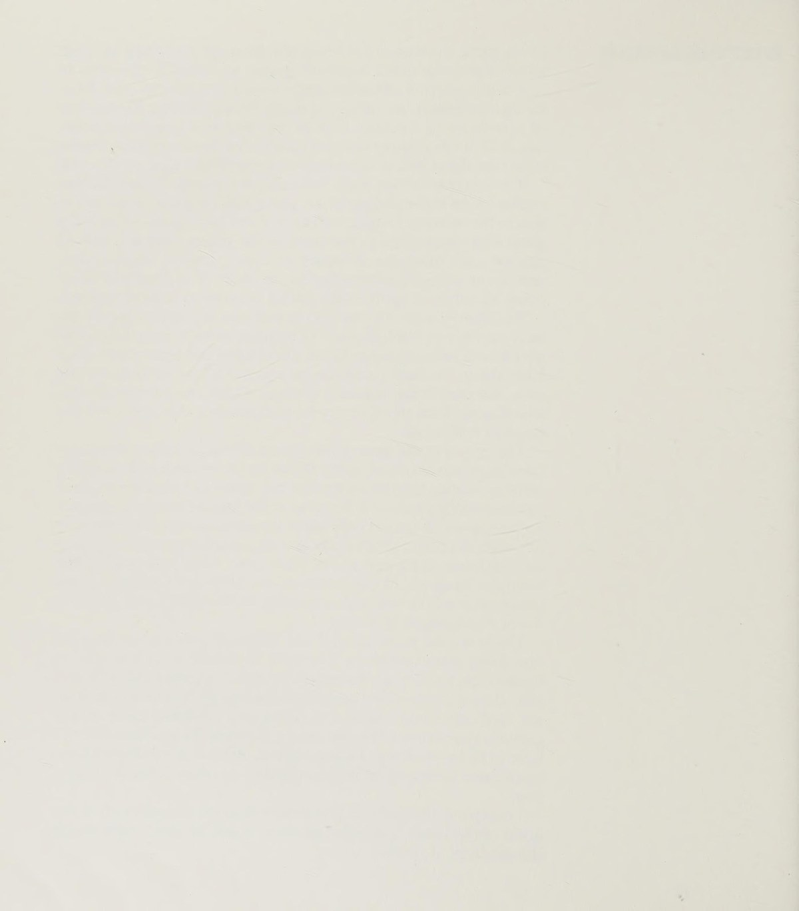
Hình 33.3: tâm lý · chiêm nghiệmFigure 33.3: Mental reflections
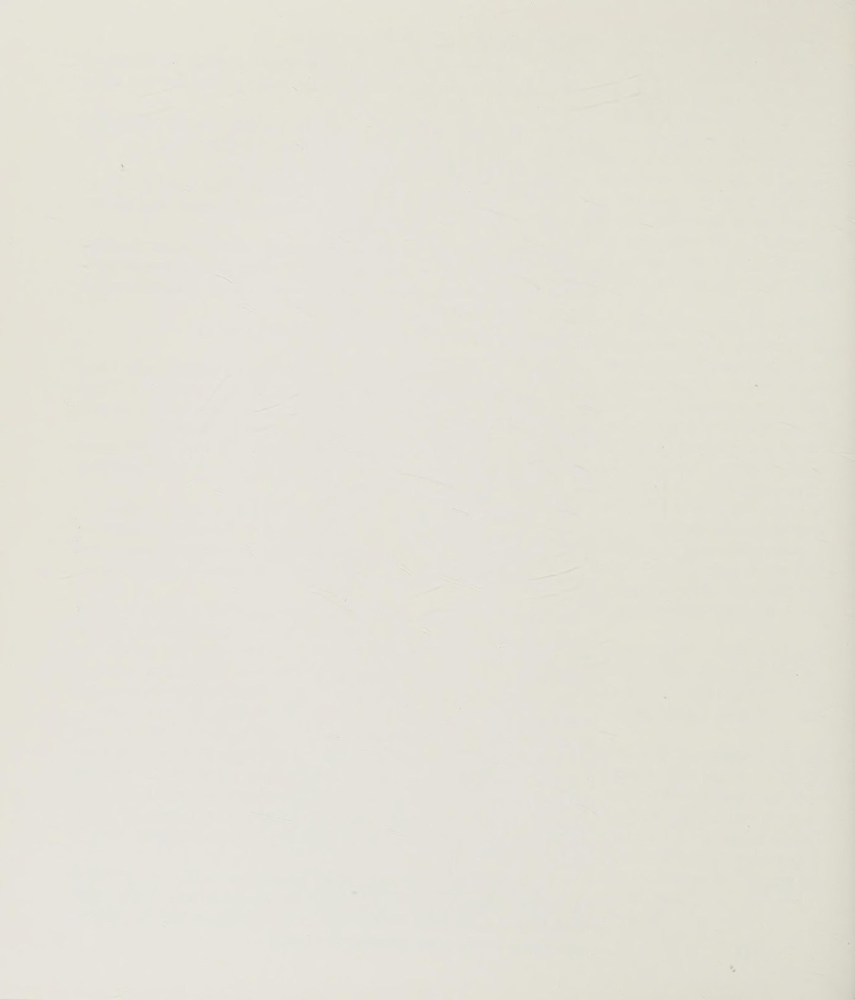
Hình 33.2: ý nghĩa · thi đấuFigure 33.2: Meaning competition
Chương 10
Inner Game ngoài sân đấu
Tới đây chúng ta đã khám phá Inner Game như nó
áp dụng cho quần vợt. Chúng tôi bắt đầu bằng nhận xét rằng nhiều khó khăn trong môn quần vợt của chúng tôi có nguồn gốc từ tinh thần. Là người chơi quần vợt, chúng ta có xu hướng suy nghĩ quá nhiều trước và trong khi đánh; chúng ta cố gắng hết sức để kiểm soát chuyển động của mình; và chúng ta quá quan tâm đến kết quả hành động của mình và chúng có thể phản ánh như thế nào về hình ảnh bản thân của chúng ta. Tóm lại, chúng ta lo lắng quá nhiều và không tập trung tốt. Để hiểu rõ hơn về các vấn đề tinh thần trong quần vợt, chúng tôi đã giới thiệu khái niệm về Self 1 và Self 2. Self 1 là tên được đặt cho cái tôi có ý thức, vốn thích nói với Self 2, bạn và tiềm năng của bạn, cách đánh bóng tennis. Chìa khóa của môn quần vợt trình độ cao, tự phát là giải quyết sự thiếu hòa hợp thường tồn tại giữa hai con người này. Điều này đòi hỏi phải học một số kỹ năng bên trong, chủ yếu là nghệ thuật buông bỏ sự tự phán xét, để Self 2 đánh, nhận ra và tin tưởng vào quá trình học hỏi tự nhiên, và trên hết là đạt được một số kinh nghiệm thực tế về nghệ thuật tập trung thoải mái. Tại thời điểm này, khái niệm Inner Game xuất hiện. Những kỹ năng bên trong này không chỉ có tác dụng đáng chú ý đối với các cú thuận tay, trái tay, giao bóng và vô lê (trò chơi quần vợt bên ngoài) của một người, mà bản thân chúng còn có giá trị và có khả năng ứng dụng rộng rãi vào các khía cạnh khác của cuộc sống. Ví dụ, khi một người chơi nhận ra rằng việc học cách tập trung có thể có giá trị hơn đối với anh ta so với cú trái tay, anh ta sẽ chuyển từ việc chủ yếu là người chơi của trò chơi bên ngoài sang việc trở thành người chơi của Inner Game. Sau đó, thay vì học cách tập trung để cải thiện khả năng chơi quần vợt của mình, anh ấy tập luyện quần vợt để cải thiện khả năng tập trung của mình. Điều này thể hiện một sự thay đổi quan trọng trong các giá trị từ bên ngoài vào bên trong. Chỉ khi sự thay đổi này xảy ra bên trong một người chơi, anh ta mới giải phóng bản thân khỏi những lo lắng và thất vọng liên quan đến việc phụ thuộc quá mức vào kết quả của trò chơi bên ngoài. Chỉ khi đó anh ta mới có cơ hội vượt qua những giới hạn cố hữu trong những chuyến du hành bản ngã khác nhau của Bản ngã 1 và đạt được nhận thức mới về tiềm năng thực sự của mình. Khi đó, cạnh tranh trở thành một công cụ thú vị trong đó mỗi người chơi, bằng cách nỗ lực tối đa để giành chiến thắng, sẽ mang lại cho người kia cơ hội mà anh ta mong muốn để đạt đến những cấp độ tự nhận thức mới. Vì vậy, có hai trò chơi liên quan đến quần vợt: một trò chơi bên ngoài chơi với các chướng ngại vật do đối thủ bên ngoài đưa ra và chơi để giành một hoặc nhiều giải thưởng bên ngoài; trò còn lại, Inner Game, chống lại những trở ngại tinh thần và cảm xúc bên trong để đạt được phần thưởng là kiến thức và thể hiện tiềm năng thực sự của một người. Cần phải thừa nhận rằng cả Inner Game và bên ngoài đều diễn ra đồng thời, vì vậy việc lựa chọn không phải là chơi cái nào mà là cái nào xứng đáng được ưu tiên. Rõ ràng, hầu hết mọi hoạt động của con người đều liên quan đến cả trò chơi bên ngoài và bên trong. Luôn có những trở ngại bên ngoài giữa chúng ta và các mục tiêu bên ngoài của chúng ta, cho dù chúng ta đang tìm kiếm sự giàu có, học vấn, danh tiếng, tình bạn, hòa bình trên trái đất hay đơn giản là thứ gì đó để ăn cho bữa tối. Và những trở ngại bên trong luôn có đó; Chính tâm trí mà chúng ta sử dụng để đạt được các mục tiêu bên ngoài dễ bị phân tâm bởi xu hướng lo lắng, hối tiếc hoặc nói chung làm rối tung tình hình, từ đó gây ra những khó khăn không cần thiết từ bên trong. Sẽ rất hữu ích khi nhận ra rằng trong khi các mục tiêu bên ngoài của chúng ta rất nhiều, đa dạng và đòi hỏi phải học nhiều kỹ năng để đạt được chúng thì những trở ngại bên trong chỉ đến từ một nguồn duy nhất và những kỹ năng cần thiết để vượt qua chúng vẫn không đổi. Cho đến khi bị khuất phục, Self 1 vẫn có khả năng tạo ra nỗi sợ hãi, nghi ngờ và ảo tưởng dù bạn ở đâu và làm gì. Sự tập trung trong quần vợt về cơ bản không khác gì sự tập trung cần thiết để thực hiện bất kỳ nhiệm vụ nào hoặc thậm chí để thưởng thức một bản giao hưởng; học cách từ bỏ thói quen phán xét bản thân dựa trên cú trái tay không khác gì quên thói quen phán xét con cái hoặc sếp; và học cách đón nhận những trở ngại trong cạnh tranh sẽ tự động nâng cao khả năng tìm ra lợi thế của một người trước mọi khó khăn mà người đó gặp phải trong cuộc đời. Do đó, mọi lợi ích bên trong sẽ được áp dụng ngay lập tức và tự động vào toàn bộ hoạt động của một người. Đây là lý do tại sao cần chú ý đến Inner Game.
Thus, for the player of the Inner Game, it is the moment-by-moment effort to let go and to stay centered in the here-and-now action which offers the real winning and losing, and this game never ends. One final word of caution. It is said that all great things are achieved by great effort. Although I believe that is true, it is not necessarily true that all great effort leads to greatness. A very wise person once told me, “When it comes to overcoming obstacles, there are three kinds of people. The first kind sees most obstacles as insurmountable and walks away. The second kind sees an obstacle and says, I can overcome it, and starts to dig under, climb over, or blast through it. The third type of person, before deciding to overcome the obstacle, tries to find a viewpoint where what is on the other side of the obstacle can be seen. Then, only if the reward is worth the effort, does he attempt to overcome the obstacle.” UP TO THIS POINT WE HAVE BEEN EXPLORING THE INNER GAME AS IT applies to tennis. We began with the observation that many of our difficulties in tennis are mental in origin. As tennis players we tend to think too much before and during our shots; we try too hard to control our movements; and we are too concerned about the results of our actions and how they might reflect on our self-image. In short, we worry too much and don’t concentrate very well. To gain clarity on the mental problems in tennis we introduced the concept of Self 1 and Self 2. Self 1 was the name given to the conscious ego-mind which likes to tell Self 2, you and your potential, how to hit the tennis ball. The key to spontaneous, high-level tennis is in resolving the lack of harmony which usually exists between these two selves. This requires the learning of several inner skills, chiefly the art of letting go of self-judgments, letting Self 2 do the hitting, recognizing and trusting the natural learning process, and above all gaining some practical experience in the art of relaxed concentration. At this point the concept of the Inner Game emerges. Not only can these inner skills have a remarkable effect on one’s forehand, backhand, serve and volley (the outer game of tennis), but they are valuable in themselves and have broad applicability to other aspects of life. When a player comes to recognize, for instance, that learning to focus may be more valuable to him than a backhand, he shifts from being primarily a player of the outer game to being a player of the Inner Game. Then, instead of learning focus to improve his tennis, he practices tennis to improve his focus. This represents a crucial shift in values from the outer to the inner. Only when this shift occurs within a player does he free himself of the anxieties and frustrations involved in being overly dependent on the results of the external game. Only then does he have the chance to go beyond the limitations inherent in the various ego trips of Self 1 and to reach a new awareness of his true potential. Competition then becomes an interesting device in which each player, by making his maximum effort to win, gives the other the opportunity he desires to reach new levels of self-awareness. Thus, there are two games involved in tennis: one the outer game played against the obstacles presented by an external opponent and played for one or more external prizes; the other, the Inner Game, played against internal mental and emotional obstacles for the reward of knowledge and expression of one’s true potential. It should be recognized that both the inner and outer games go on simultaneously, so the choice is not which one to play, but which deserves priority. Clearly, almost every human activity involves both the outer and inner games. There are always external obstacles between us and our external goals, whether we are seeking wealth, education, reputation, friendship, peace on earth or simply something to eat for dinner. And the inner obstacles are always there; the very mind we use in obtaining our external goals is easily distracted by its tendency to worry, regret or generally muddle the situation, thereby causing needless difficulties from within. It is helpful to realize that whereas our external goals are many and various and require the learning of many skills to achieve them, the inner obstacles come from only one source and the skills needed to overcome them remain constant. Until subdued, Self 1 is capable of producing fears, doubts and delusions wherever you are and whatever you are doing. Focus in tennis is fundamentally no different from the focus needed to perform any task or even to enjoy a symphony; learning to let go of the habit of judging yourself on the basis of your backhand is no different from forgetting the habit of judging your child or boss; and learning to welcome obstacles in competition automatically increases one’s ability to find advantage in all the difficulties one meets in the course of one’s life. Hence, every inner gain applies immediately and automatically to the full range of one’s activities. This is why it is worthwhile to pay some attention to the inner game. Perhaps the most indispensable tool for human beings in modern times is the ability to remain calm in the midst of rapid and unsettling changes. The people who will best survive the present age are the ones Kipling described as “those who can keep their heads while all about are losing theirs.” Inner stability is achieved not by burying one’s head in the sand at the sight of danger, but by acquiring the ability to see the true nature of what is happening and to respond appropriately. Then Self 1’s reaction to the situation is not able to disrupt your inner balance or clarity. Instability, in contrast, is a condition of being in which we are more easily thrown off balance when Self 1 gets upset by an event or circumstance. Self 1 tends to distort its perception of the event, prompting us to take misguided actions, which in turn leads to circumstances that further undermine our inner balance—the basic Self 1 vicious cycle.
XÂY DỰNG SỰ ỔN ĐỊNH BÊN TRONG Có lẽ công cụ không thể thiếu nhất của con người trong thời hiện đại là khả năng giữ bình tĩnh trước những thay đổi nhanh chóng và bất ổn. Những người có khả năng sống sót tốt nhất trong thời đại hiện nay là những người mà Kipling mô tả là “những người có thể giữ bình tĩnh trong khi mọi thứ xung quanh đều đang mất bình tĩnh”. Sự ổn định bên trong đạt được không phải bằng cách vùi đầu vào cát khi nhìn thấy nguy hiểm, mà bằng cách có được khả năng nhìn thấy bản chất thực sự của những gì đang xảy ra và phản ứng một cách thích hợp. Khi đó phản ứng của Self 1 đối với tình huống sẽ không thể phá vỡ sự cân bằng hoặc sự sáng suốt bên trong của bạn. Ngược lại, sự bất ổn là tình trạng mà chúng ta dễ bị mất thăng bằng hơn khi Self 1 khó chịu trước một sự kiện hoặc hoàn cảnh. Bản ngã 1 có xu hướng bóp méo nhận thức của nó về sự kiện, khiến chúng ta thực hiện những hành động sai lầm, từ đó dẫn đến những hoàn cảnh làm suy yếu thêm sự cân bằng bên trong của chúng ta—vòng luẩn quẩn cơ bản của Self 1. Mọi người hỏi, “Vậy làm cách nào tôi có thể kiểm soát được căng thẳng của mình?” Các khóa học được thực hiện, các biện pháp khắc phục được cung cấp, nhưng thường thì sự căng thẳng của Self 1 vẫn tiếp tục. Vấn đề với việc “quản lý căng thẳng” là bạn có xu hướng tin rằng điều đó là không thể tránh khỏi. Phải có sự căng thẳng để bạn quản lý. Tôi nhận thấy rằng Self 1 có xu hướng phát triển mạnh khi được chiến đấu. Một cách tiếp cận khác chỉ đơn giản là xây dựng sự ổn định của bạn. Hãy hỗ trợ và khuyến khích Self 2 của bạn, biết rằng Bản thân càng mạnh thì bạn càng mất thăng bằng và bạn càng lấy lại thăng bằng nhanh hơn. Căng thẳng bản thân 1 là một tên trộm mà nếu chúng ta để nó có thể cướp đi niềm vui trong cuộc sống của chúng ta. Càng sống lâu, tôi càng trân trọng món quà cuộc sống. Món quà này lớn hơn nhiều so với những gì tôi có thể tưởng tượng, và do đó, thời gian dành cho nó trong trạng thái căng thẳng đồng nghĩa với việc tôi đã bỏ lỡ rất nhiều điều — trong hoặc ngoài sân đấu. Có lẽ sự khôn ngoan không phải là đưa ra những câu trả lời mới mà là nhận ra ở mức độ sâu hơn tính sâu sắc của những câu trả lời lâu đời. Một số điều không thay đổi. Nhu cầu tin tưởng vào bản thân và phát triển sự hiểu biết về con người thật của chúng ta sẽ không bao giờ giảm đi. Nhu cầu buông bỏ lăng kính phán xét “tốt-xấu” của bản thân và người khác sẽ luôn là cánh cửa dẫn đến khả năng sáng tỏ. Và tầm quan trọng của việc xác định rõ ràng những ưu tiên của mình, đặc biệt là ưu tiên hàng đầu trong cuộc đời bạn, sẽ không bao giờ trở nên kém quan trọng khi bạn vẫn còn sống. Căng thẳng dễ dàng xuất hiện hơn bao giờ hết trong thời điểm mà áp lực ập đến với chúng ta từ mọi góc độ. Vợ, chồng, ông chủ, con cái, hóa đơn, quảng cáo, chính xã hội, sẽ tiếp tục đưa ra những yêu cầu của họ đối với cuộc sống của chúng ta. “Hãy làm điều này tốt hơn, làm điều này nhiều hơn, theo cách này và đừng theo cách kia, tạo nên điều gì đó cho chính mình, giống anh ấy hơn hoặc giống cô ấy hơn, chúng ta hiện đang thực hiện những thay đổi này, vì vậy hãy thay đổi.” Thông điệp không khác gì “Đánh bóng theo cách này hoặc đánh bóng theo cách kia, và bạn sẽ không ổn nếu không làm như vậy”. Đôi khi những yêu cầu được đưa ra một cách ngọt ngào hoặc thực tế đến mức chúng dường như là một phần vô tội của cuộc sống; đôi khi chúng đến gay gắt đến mức kích động hành động vì sợ hãi. Nhưng có một điều chắc chắn: áp lực từ bên ngoài sẽ tiếp tục ập đến và trên thực tế có thể dễ dàng tăng tốc độ và cường độ. Thông tin đang bùng nổ, kéo theo đó là nhu cầu biết nhiều hơn và nâng cao năng lực của chúng ta. Trong khi nhu cầu công việc ngày càng tăng đối với hầu hết mọi người thì nguy cơ mất việc cũng tăng theo. Nguyên nhân của hầu hết sự căng thẳng có thể được tóm tắt bằng từ gắn bó. Bản ngã 1 quá phụ thuộc vào sự vật, tình huống, con người và khái niệm trong trải nghiệm của nó đến nỗi khi sự thay đổi xảy ra hoặc dường như sắp xảy ra, nó cảm thấy bị đe dọa. Thoát khỏi căng thẳng không nhất thiết có nghĩa là từ bỏ bất cứ điều gì, mà đúng hơn là có thể buông bỏ bất cứ điều gì, khi cần thiết, và biết rằng mình vẫn sẽ ổn. Nó xuất phát từ việc trở nên độc lập hơn - không nhất thiết phải đơn độc hơn mà phụ thuộc nhiều hơn vào nguồn lực bên trong của chính mình để ổn định. Đối với tôi, sự khôn ngoan trong việc xây dựng sự ổn định nội tâm trong những thời điểm như vậy dường như là một yêu cầu hiển nhiên để có cuộc sống thành công. Bước đầu tiên hướng tới sự ổn định bên trong có thể là sự thừa nhận rằng có một cái tôi bên trong có những nhu cầu cố hữu của riêng nó. Cái tôi có tất cả tài năng và khả năng của bạn, thứ mà bạn hy vọng đạt được bất cứ điều gì, đều có những yêu cầu riêng. Đó là những yêu cầu tự nhiên mà chúng ta thậm chí không cần phải dạy. Mỗi Bản ngã 2 đều được ban tặng bởi sự sinh ra, bất kể sự sinh ra đó diễn ra ở đâu, với bản năng hoàn thiện bản chất của nó. Nó muốn tận hưởng, học hỏi, hiểu biết, trân trọng, nỗ lực, nghỉ ngơi, khỏe mạnh, tồn tại, được tự do là chính mình, thể hiện bản thân và đóng góp độc đáo. Nhu cầu của Self 2 đi kèm với sự thôi thúc nhẹ nhàng nhưng liên tục. Một cảm giác hài lòng nhất định sẽ đến với một người bất cứ khi nào người đó hành động đồng bộ với bản thân này. Vấn đề cơ bản là chúng ta đang đưa ra loại ưu tiên nào cho những yêu cầu của Self 2 trước tất cả những áp lực bên ngoài? Rõ ràng là mỗi cá nhân đều phải tự mình đặt ra và trả lời câu hỏi này. Tôi cũng như bất kỳ ai khác, phải học một điều rất quan trọng - làm thế nào để phân biệt những yêu cầu bên trong của Self 2 với những yêu cầu bên ngoài đã được Self 1 “nội hóa” và giờ đây đã quá quen thuộc trong suy nghĩ của tôi đến nỗi chúng “có vẻ như” đến từ tôi. Là người tự kinh doanh trong 25 năm, tôi thừa nhận rằng tôi là người gây căng thẳng tồi tệ nhất cho chính mình. Nhưng dần dần, tôi nhận ra rằng những yêu cầu mà tôi đang cố gắng thực hiện khi đang căng thẳng không thực sự là của riêng tôi mà là những yêu cầu mà tôi đã “nhặt” hoặc “mua vào” có lẽ không vì lý do gì tốt hơn việc tôi đã nghe thấy chúng từ rất sớm trong đời, hoặc vì chúng dường như được chấp nhận rộng rãi. Chẳng mấy chốc, chúng bắt đầu nghe có vẻ đúng - và do đó dễ nghe hơn sự thôi thúc tinh tế nhưng dai dẳng của chính con người tôi. Một trong những cuộc phỏng vấn yêu thích của tôi với một vận động viên quần vợt là cuộc phỏng vấn diễn ra với Jennifer Capriati khi cô ấy mười bốn tuổi. Vào thời điểm đó, cô ấy đang chơi ở các giải đấu đẳng cấp thế giới dành cho nữ và thi đấu rất xuất sắc. Người phóng viên hỏi cô ấy lo lắng thế nào khi thi đấu với một số tay vợt giỏi nhất thế giới. Jennifer trả lời rằng cô ấy không hề lo lắng chút nào. Cô ấy nói rằng cô ấy coi đó là một đặc ân khi được chơi cùng những tay vợt này, điều mà cô ấy chưa thể làm được cho đến thời điểm đó. “Nhưng chắc chắn khi bạn vào đến bán kết một giải đấu tầm cỡ thế giới và mới 14 tuổi, với tất cả những kỳ vọng đặt vào mình, bạn sẽ phải trải qua một số căng thẳng.” Câu trả lời cuối cùng của Jennifer cho tất cả các phóng viên đang thăm dò nỗi sợ hãi của cô ấy rất đơn giản, ngây thơ và, theo như tôi thấy, là Bản ngã thuần túy 2. “Nếu tôi cảm thấy sợ hãi khi chơi quần vợt, tôi không hiểu tại sao mình lại làm điều đó!” cô ấy kêu lên. Nói xong người phóng viên dừng câu hỏi của cô lại. Có lẽ sự hoài nghi trong chúng ta muốn nói: “Nhưng hãy xem chuyện gì đã xảy ra với Jennifer sau này”. Đúng, cô ấy có thể đã thua Self 1 vài hiệp, nhưng trận đấu không kết thúc chỉ với một chiến thắng hay một thất bại duy nhất. Self 1 không dễ dàng bỏ cuộc, Self 2 cũng vậy. Tôi không nghi ngờ gì nữa rằng Self 2 của Jennifer vẫn hoàn toàn nguyên vẹn. Chúng ta có thể lấy cảm hứng từ tấm gương của cô ấy năm 14 tuổi về việc đặt nỗi sợ hãi vào vị trí của nó.
People ask, “So how can I manage my stress?” Courses are taken, remedies offered, yet often the Self 1 stress continues. The problem with “managing stress” is that you tend to believe it is inevitable. There has to be the stress for you to manage. I’ve noticed that Self 1 tends to thrive when it is fought. An alternative approach is simply to build on your stability. Support and encourage your Self 2, knowing that the stronger it gets, the more it will take to throw you off balance, and the quicker you can regain your balance. Self 1 stress is a thief that, if we let it, can rob us of the enjoyment of our lives. The longer I live, the greater my appreciation of the gift that life itself is. This gift is much greater than I could have imagined, and therefore time spent living it in a state of stress means I am missing a lot—on or off the court. Maybe wisdom is not so much to come up with new answers as to recognize at a deeper level the profundity of the age-old answers. Some things don’t change. The need to trust oneself and grow in understanding of our true selves will never diminish. The need to let go of the lenses of “good–bad” judgment of ourselves and others will always be the doorway to the possibility of clarity. And the importance of being clear about one’s priorities, especially the first priority in your life, will never become less important while you still have life. Stress is easier than ever to come by in a time when pressures come toward us from all corners. Wives, husbands, bosses, children, bills, advertising, society itself, will continue to make their demands on our lives. “Do this better, do this more, be this way and don’t be that way, make something of yourself, be more like him or be like her, we are now instituting these changes, so change.” The message is no different from “Hit the ball this way or hit the ball that way, and you’re no good if you don’t.” Sometimes the demands are put so sweetly or matter-of-factly that they seem an innocent part of life; sometimes they come so harshly that they provoke action out of fear. But one thing is for sure: the pressures from outside will keep on coming and in fact could easily accelerate in pace and increase in intensity. Information is exploding, and with it the need to know more and stretch our competencies. While the demands of work are increasing for most people, so is the threat of losing one’s work. The cause of most stress can be summed up by the word attachment. Self 1 gets so dependent upon things, situations, people and concepts within its experience that when change occurs or seems about to occur, it feels threatened. Freedom from stress does not necessarily involve giving up anything, but rather being able to let go of anything, when necessary, and know that one will still be all right. It comes from being more independent —not necessarily more solitary, but more reliant on one’s own inner resources for stability. The wisdom of building inner stability in such times seems to me to be an obvious requirement for successful living. The first step toward inner stability may be the acknowledgment that there is an inner self that has inherent needs of its own. The self that has all your gifts and capabilities, with which you hope to accomplish anything, has its own requirements. They are natural demands that we didn’t even have to be taught. Each Self 2 is endowed by birth, regardless of where that birth took place, with an instinct to fulfill its nature. It wants to enjoy, to learn, to understand, appreciate, go for it, rest, be healthy, survive, be free to be what it is, express itself and make its unique contribution. Self 2’s needs come with a gentle but constant urging. A certain feeling of contentment attends a person whenever he or she is acting in sync with this self. The fundamental issue is what kind of priority are we giving the demands of Self 2 in relation to all the external pressures? It is obvious that every individual must ask and answer this question for himself or herself. I, like anyone else, have to learn something very important—how to distinguish the inner requests of Self 2 from the outer demands that have been “internalized” by Self 1 and are now so familiar in my thinking that they “sound like” they are coming from me. Being self-employed for twenty-five years, I admit that I have been my own worst stressor. But slowly I have found that the demands I’m trying to fulfill when I’m stressing myself are not really my own, but ones I have “picked up” or “bought into” for perhaps no better reason than I heard them early in life, or because they seemed to be so generally accepted. Soon they begin to sound right—and are therefore easier to listen to than the subtle but insistent urging of my own being. One of my favorite interviews with a tennis player was one that took place with Jennifer Capriati when she was fourteen years old. At the time, she was playing in world-class women’s tournaments and doing remarkably well. The reporter was asking her how nervous she got when she was playing against some of the best players in the world. Jennifer responded that she didn’t get nervous at all. She said she considered it a privilege to play with these players, something she hadn’t been able to do up until that time. “But surely when you are in the semifinals of a world-class tournament, and being only fourteen, with all the expectations that are on you, you must experience some stress.” Jennifer’s final answer to all the reporter’s probing for her fear was simple, innocent and, as far as I can see, pure Self 2. “If I was feeling frightened playing tennis, I don’t see why I would do it!” she exclaimed. With that the reporter stopped her questioning. Perhaps the cynic in us wants to say, “But look at what happened to Jennifer later.” Yes, she may have lost a few rounds to Self 1, but the match isn’t over in a single victory or a single defeat. Self 1 doesn’t give up easily, nor does Self 2. That Jennifer’s Self 2 is fully intact, I have no doubt. We could well take inspiration from her example at fourteen of putting fear in its place.
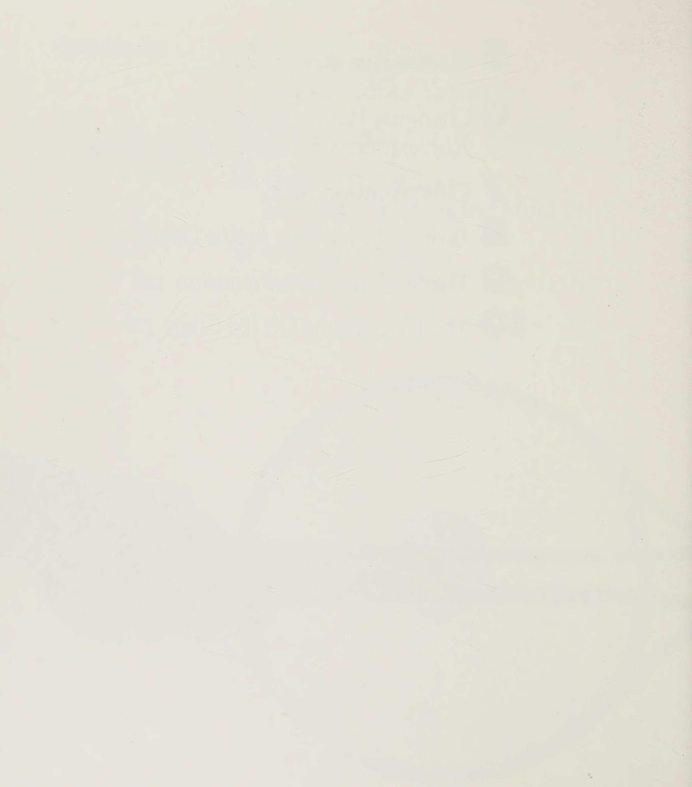
Hình 35.1: Ảnh minh họa (trang 16)Figure 35.1: Plate from page 16
Việc thoát khỏi căng thẳng diễn ra tỷ lệ thuận với khả năng phản ứng của chúng ta với con người thật của mình, cho phép mọi khoảnh khắc có thể trở thành cơ hội để Bản ngã 2 được là chính mình và tận hưởng quá trình này. Theo tôi thấy, đây là một quá trình học tập suốt đời. Tôi hy vọng đến bây giờ bạn đã hiểu rằng tôi không khuyến khích kiểu suy nghĩ tích cực cố gắng khẳng định trong đầu rằng mọi thứ thật tuyệt vời khi thực tế không phải như vậy. Và không phải kiểu nói: “Nếu tôi nghĩ mình tử tế thì tôi là người tử tế; nếu tôi nghĩ mình là người chiến thắng thì đúng là như vậy”. Theo những gì tôi được biết, đây là Self 1 đang cố gắng tạo ra Self 1 tốt hơn. Con chó đuổi theo cái đuôi của chính nó. Trong hầu hết các bài giảng mà tôi giảng gần đây, tôi đều nhắc nhở bản thân và khán giả rằng mặc dù tôi đến từ California nhưng tôi không tin vào sự tự hoàn thiện bản thân và chắc chắn tôi không muốn cải thiện chúng. Đôi khi có một phản ứng choáng váng. Nhưng tôi không nghĩ Bản ngã 2 của ai đó cần được cải thiện từ khi sinh ra cho đến khi chết. Nó luôn luôn ổn. Tôi, hơn ai hết, cần phải nhớ điều đó. Đúng, những cú trái tay của chúng tôi có thể cải thiện và tôi chắc chắn rằng bài viết của tôi có thể tốt hơn; chắc chắn kỹ năng của chúng ta trong việc liên hệ với nhau trên hành tinh này có thể được cải thiện. Nhưng nền tảng của sự ổn định là biết rằng bản chất con người không có gì sai trái. Hãy tin tôi, tôi không nói điều này mà không quan tâm đúng mức đến mức độ gián đoạn có thể do Self 1 gây ra, nhưng dựa trên hiểu biết nảy sinh từ kinh nghiệm cá nhân rằng luôn có một phần trong chúng ta vẫn miễn nhiễm với sự ô nhiễm của Self 1. Có lẽ tôi phải học đi học lại sự thật này bởi vì tôi đã sớm có điều kiện để tin vào điều ngược lại: rằng bằng cách nào đó tôi đã xấu và phải học cách trở nên tốt. Phần cuộc đời tôi dành để cố gắng bù đắp cho sự tiêu cực này bằng cách trở nên tốt hơn không hề thú vị cũng như không bổ ích. Mặc dù tôi thường cố gắng đáp ứng và đôi khi vượt qua sự mong đợi của những người mà tôi đang cố gắng làm hài lòng hoặc xoa dịu, nhưng điều đó không phải là không có cái giá phải trả cho mối liên hệ giữa tôi với chính mình. Những khám phá của tôi về Trò chơi quần vợt nội tâm đã giúp tôi nhìn thấy một cách rất thực tế rằng Self 2, khi để cho nguồn lực của riêng mình, đã tự mình làm rất tốt. Tôi hy vọng mình sẽ không bao giờ vượt qua được nhu cầu đổi mới niềm tin vào bản thân và bảo vệ bản thân khỏi những tiếng nói, từ trong ra ngoài, làm suy yếu niềm tin đó. Có thể làm gì khác để thúc đẩy sự ổn định? Thông điệp của Inner Game rất đơn giản: tập trung. Sự tập trung chú ý vào thời điểm hiện tại, thời điểm duy nhất mà bạn thực sự có thể sống trong đó, là trọng tâm của cuốn sách này và là trọng tâm của nghệ thuật làm tốt mọi việc. Tập trung có nghĩa là không đắm chìm trong quá khứ, dù là lỗi lầm hay vinh quang; nó có nghĩa là không bị cuốn vào tương lai, dù là nỗi sợ hãi hay giấc mơ của nó, đến mức tôi không còn chú ý đến hiện tại nữa. Khả năng tập trung tâm trí là khả năng không để nó chạy trốn cùng bạn. Điều đó không có nghĩa là không suy nghĩ - mà là trở thành người điều khiển suy nghĩ của chính bạn. Bạn có thể luyện tập khả năng tập trung trên sân tennis, thái cà rốt, trong một cuộc họp hội đồng quản trị đầy áp lực hoặc khi đang lái xe khi tham gia giao thông. Nó có thể được thực hành khi một mình hoặc trong cuộc trò chuyện. Cần phải có nhiều niềm tin để tập trung hoàn toàn sự chú ý khi lắng nghe người khác mà không nghĩ đến một cuộc trò chuyện phụ trong đầu, giống như khi xem một quả bóng tennis một cách chi tiết mà không lắng nghe những lo lắng, hy vọng và chỉ dẫn của Bản thân. Sự ổn định tăng lên khi tôi học cách chấp nhận những gì tôi không thể kiểm soát và kiểm soát những gì tôi có thể. Một buổi tối mùa đông lạnh giá, vào năm đầu tiên sau khi tốt nghiệp đại học, lần đầu tiên nhưng không phải là lần cuối cùng tôi biết về sức mạnh của sự chấp nhận sự sống và cái chết. Tôi một mình lái chiếc Volkswagen của mình đến Exeter, New Hampshire, từ một thị trấn nhỏ ở Maine. Lúc đó đã gần nửa đêm khi bánh xe của tôi trượt trên một khúc cua băng giá và khiến chiếc xe của tôi xoay nhẹ nhàng nhưng chắc chắn khỏi đường và lao vào một bãi tuyết. Khi tôi ngồi trong xe ngày càng lạnh hơn, sức nặng của hoàn cảnh ập đến với tôi. Ngoài trời nhiệt độ khoảng 20 độ C và tôi chẳng có gì ngoài chiếc áo khoác thể thao đang mặc. Không có hy vọng giữ ấm trong xe khi nó đứng yên và có rất ít hy vọng được một chiếc xe khác đón. Đã hai mươi phút kể từ khi tôi đi qua một thị trấn và không một chiếc ô tô nào đi qua tôi trong thời gian đó. Không có trang trại, không có đất canh tác, thậm chí không có cột điện thoại để nhắc nhở tôi về nền văn minh. Tôi không có bản đồ và không biết thị trấn tiếp theo có thể đi được bao xa. Tôi đã phải đối mặt với một sự lựa chọn thú vị. Tôi sẽ chết cứng nếu vẫn ở trong xe, vì vậy tôi phải quyết định nên đi tiếp vào nơi chưa biết với hy vọng rằng một thị trấn có thể ở ngay góc đường tiếp theo, hay đi bộ về hướng mà tôi đã đến, biết rằng có sự trợ giúp nhất định cách đây ít nhất mười lăm dặm. Sau khi cân nhắc một lúc, tôi quyết định nắm lấy cơ hội của mình với những điều chưa biết. Rốt cuộc, đó không phải là những gì họ làm trong phim sao? Tôi tiến về phía trước khoảng mười bước rồi không cần suy nghĩ, dứt khoát xoay người và đi ngược lại. Sau ba phút, tai tôi tê cứng và cảm giác như sắp sứt ra, nên tôi bắt đầu chạy. Nhưng cái lạnh làm tôi kiệt sức nhanh chóng, và ngay sau đó tôi lại phải giảm tốc độ để đi bộ. Lần này tôi chỉ đi bộ được hai phút trước khi trở nên quá lạnh. Tôi lại chạy, nhưng lại nhanh chóng mệt mỏi. Thời gian chạy bắt đầu ngắn lại, thời gian đi bộ cũng vậy, và tôi sớm nhận ra kết quả của những chu kỳ giảm dần này sẽ ra sao. Tôi có thể nhìn thấy mình bên lề đường phủ đầy tuyết và lạnh cứng. Vào thời điểm đó, điều ban đầu tưởng chừng như chỉ là một tình huống khó khăn lại bắt đầu có vẻ như là tình huống cuối cùng của tôi. Nhận biết về khả năng tử vong khiến tôi dừng lại. Sau một phút suy nghĩ, tôi thấy mình đang nói to: "Được rồi, nếu bây giờ là lúc thì cứ vậy. Tôi đã sẵn sàng." Tôi thực sự có ý đó. Nói xong tôi ngừng nghĩ về điều đó và bắt đầu bình tĩnh bước đi trên đường, chợt nhận ra vẻ đẹp của màn đêm. Tôi chìm đắm trong sự im lặng của các vì sao và vẻ đẹp đáng yêu của những hình thể mờ ảo xung quanh mình; mọi thứ đều đẹp. Sau đó không cần suy nghĩ, tôi bắt đầu chạy. Thật ngạc nhiên, tôi đã không dừng lại suốt bốn mươi phút, và chỉ vì tôi nhìn thấy một ngọn đèn đang cháy trên cửa sổ của một ngôi nhà ở xa. Nguồn năng lượng này đến từ đâu mà cho phép tôi chạy xa đến thế mà không dừng lại? Tôi không cảm thấy sợ hãi; Đơn giản là tôi không thấy mệt hay lạnh. Khi tôi kể lại câu chuyện này bây giờ, có vẻ như việc nói “Tôi chấp nhận cái chết” là mơ hồ. Tôi không từ bỏ ý nghĩa của việc bỏ cuộc. Theo một nghĩa nào đó, tôi đã từ bỏ một kiểu quan tâm và thấm nhuần một kiểu quan tâm khác. Rõ ràng, việc buông bỏ sự kìm kẹp của tôi đối với cuộc sống đã giải phóng một nguồn năng lượng nghịch lý khiến tôi có thể chạy hoàn toàn từ bỏ cuộc sống. “Bỏ rơi” là một từ hay để mô tả điều gì xảy ra với một tay vợt cảm thấy mình không còn gì để mất. Anh ấy ngừng quan tâm đến kết quả và chơi hết mình. Đó là sự buông bỏ những mối quan tâm của Bản ngã 1 và buông bỏ những mối quan tâm tự nhiên của một bản thân sâu sắc hơn và chân thật hơn. Đó là quan tâm nhưng không quan tâm; đó là nỗ lực nhưng đồng thời cũng không cần nỗ lực.
Freedom from stress happens in proportion to our responsiveness to our true selves, allowing every moment possible to be an opportunity for Self 2 to be what it is and enjoy the process. As far as I can see, this is a lifelong learning process. I hope by now you have understood that I am not promoting the kind of positive thinking that tries to assert mentally that things are wonderful when they aren’t. And not the kind that says,“If I think I’m kind, then I am; if I think I’m a winner, then I am.” As far as I’m concerned, this is Self 1 trying to make a better Self 1. The dog chases its own tail. In most lectures that I have given recently, I remind myself and the audience that even though I come from California, I don’t believe in selfimprovement, and I certainly don’t want to improve them. Sometimes there is a stunned response. But I don’t think anyone’s Self 2 needs improvement from birth to death. It has always been fine. I, more than anyone, need to remember that. Yes, our backhands can improve, and I’m sure my writing can get better; certainly our skills in relating to each other on the planet can improve. But the cornerstone of stability is to know that there is nothing wrong with the essential human being. Believe me, I do not say this without due regard to the depths of disruption that can be caused by Self 1, but out of a knowledge born from personal experience that there is always a part of us that remains immune to the contamination of Self 1. Perhaps I have to learn and relearn this fact because I was conditioned so early to believe the opposite: that somehow I was bad and had to learn to become good. The part of my life spent trying to compensate for this negativity by being extra good has been neither enjoyable nor rewarding. Although I usually managed to live up to and sometimes surpass the expectations of those I was trying to please or appease, it was not without a cost to my connection with myself. My explorations of the Inner Game of Tennis helped me to see in a very practical way that Self 2, left to its own resources, did very well on its own. I expect I’ll never outgrow the need to renew trust in myself and to protect myself from the voices, inside or out, that undermine that trust. What else can be done to promote stability? The message of the Inner Game is simple: focus. Focus of attention in the present moment, the only one you can really live in, is at the heart of this book and at the heart of the art of doing anything well. Focus means not dwelling on the past, either on mistakes or glories; it means not being so caught up in the future, either its fears or its dreams, that my full attention is taken from the present. The ability to focus the mind is the ability to not let it run away with you. It does not mean not to think—but to be the one who directs your own thinking. Focusing can be practiced on a tennis court, chopping carrots, in a pressurepacked board meeting or while driving in traffic. It can be practiced when alone or in conversation. It takes as much trust to fully focus attention when listening to another person without carrying on a side conversation in your own head as it does to watch a tennis ball in all its detail, without listening to Self 1’s worries, hopes and instructions. Stability grows as I learn to accept what I cannot control and take control of what I can. One cold winter evening, on my first year after graduation from college, I learned for the first but by no means the last time about the power of acceptance of life and death. I was alone, driving my Volkswagen bug to Exeter, New Hampshire, from a small town in Maine. It was near midnight when my wheel skidded on an icy curve and spun my car gently but firmly off the road and into a snowbank. As I sat in the car getting colder by the second, the gravity of my situation struck me. It was about twenty degrees below zero outside, and I had nothing other than the sport jacket I was wearing. There was no hope of keeping warm in the car while it was stationary, and there was little hope of being picked up by another car. It had been twenty minutes since I had passed through a town, and not a single automobile had passed me in that time. There were no farmhouses, no cultivated land, not even telephone poles to remind me of civilization. I had no map and no idea how far ahead the next town might be. I was faced with an interesting choice. I would freeze if I remained in the car, so I had to decide whether to walk forward into the unknown in the hope that a town might be around the very next corner, or to walk back in the direction from which I had come, knowing that there was certain help at least fifteen miles back. After deliberating for a moment, I decided to take my chances with the unknown. After all, isn’t that what they do in the movies? I walked forward for about ten steps and then, without thinking, pivoted decisively and walked back the other way. After three minutes, my ears were freezing and felt as if they were about to chip off, so I started to run. But the cold drained my energy quickly, and soon I had to slow again to a walk. This time I walked for only two minutes before becoming too cold. Again I ran, but again grew fatigued quickly. The periods of running began to grow shorter, as did the periods of walking, and I soon realized what the outcome of these decreasing cycles would be. I could see myself by the side of the road covered with snow and frozen stiff. At that moment, what had first appeared to be merely a difficult situation began to look as if it was going to be my final situation. Awareness of the very possibility of death slowed me to a stop. After a minute of reflection, I found myself saying aloud, “Okay, if now is the time, so be it. I’m ready.” I really meant it. With that I stopped thinking about it and began walking calmly down the road, suddenly aware of the beauty of the night. I became absorbed in the silence of the stars and in the loveliness of the dimly lit forms around me; everything was beautiful. Then without thinking, I started running. To my surprise I didn’t stop for a full forty minutes, and then only because I spotted a light burning in the window of a distant house. Where had this energy come from that allowed me to run so far without stopping? I hadn’t felt frightened; I simply didn’t get tired or cold. As I relate this story now, it seems that saying “I accepted death” is ambiguous. I didn’t give up in the sense of quitting. In one sense I gave up one kind of caring and was imbued with another. Apparently, letting go of my grip on life released an energy that paradoxically made it possible for me to run with utter abandon toward life. “Abandon” is a good word to describe what happens to a tennis player who feels he has nothing to lose. He stops caring about the outcome and plays all out. It is a letting go of the concerns of Self 1 and letting in of the natural concerns of a deeper and truer self. It is caring, yet not caring; it is effort, but effortless at the same time.
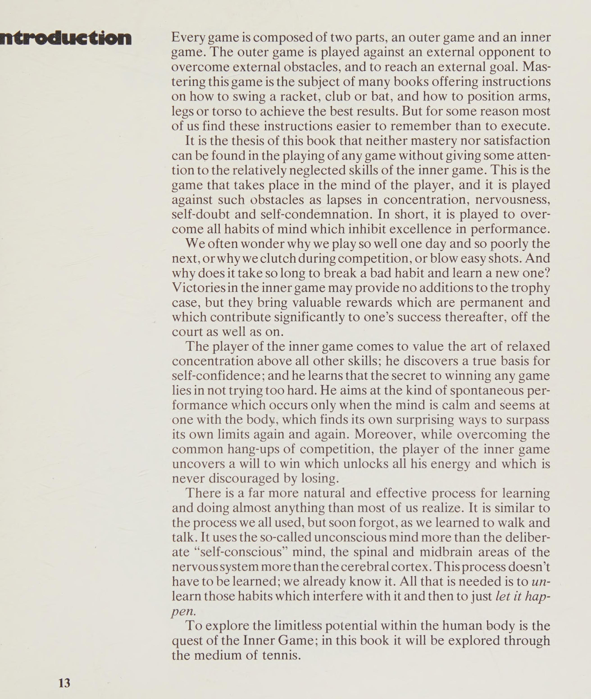
Hình 35.2: Ảnh minh họa (trang 17)Figure 35.2: Plate from page 17
MỤC TIÊU CỦA TRÒ CHƠI BÊN TRONG Bây giờ chúng ta đến một điểm thú vị và cũng là điểm cuối cùng. Chúng ta đã nói về việc tiếp cận nhiều hơn với Self 2 và về việc thoát khỏi con đường riêng của mình để có thể thể hiện và học hỏi tốt hơn trong bất kỳ trò chơi bên ngoài nào mà chúng ta chọn chơi. Sự tập trung, tin tưởng, lựa chọn, nhận biết không phán xét đều được khuyến nghị làm công cụ cho mục đích này. Nhưng có một câu hỏi vẫn chưa được nêu ra. Chiến thắng trong Inner Game có ý nghĩa gì? Một vài năm trước, có lẽ tôi đã cố gắng trả lời câu hỏi này. Bây giờ tôi chọn không làm vậy—mặc dù tôi nghĩ đó là câu hỏi quan trọng nhất. Bất kỳ nỗ lực nào nhằm xác định câu trả lời cho câu hỏi này đều là lời mời cho Bản ngã 1 hình thành một quan niệm sai lầm. Trên thực tế, Self 1 đã đi được một chặng đường dài nếu nó đạt đến mức có thể thừa nhận và thực sự muốn thừa nhận rằng nó không biết và sẽ không bao giờ biết. Khi đó cá nhân có nhiều cơ hội hơn để cảm nhận nhu cầu của chính mình, đi theo cơn khát bên trong và khám phá điều gì thực sự thỏa mãn. Rằng Self 2 của tôi sẽ là người duy nhất biết—rằng sẽ không có sự ghi nhận hay khen ngợi nào từ bên ngoài—là điều tôi cảm thấy nhẹ nhõm khi chào đón.
Now we come to an interesting point, and the last one. We have talked about gaining more access to Self 2 and about getting out of our own way so that we could perform and learn better in whatever outer games we choose to play. Focus, trust, choice, nonjudgmental awareness were all recommended as tools for this end. But one question has not been raised. What does it mean to win the Inner Game? A few years ago, I might have tried to answer this question. Now I choose not to—even though I think it is the most important question. Any attempt to define an answer to this question is an invitation to Self 1 to form a misconception. Self 1, in fact, has come a long way if it has gotten to the point where it can admit, and mean it, that it doesn’t know and never will. Then the individual has more of a chance to feel the need of his own being, to follow the inner thirst and to discover what is truly satisfying. That my Self 2 will be the only one who knows—that there will be no external credit or praise—is something I greet with relief.
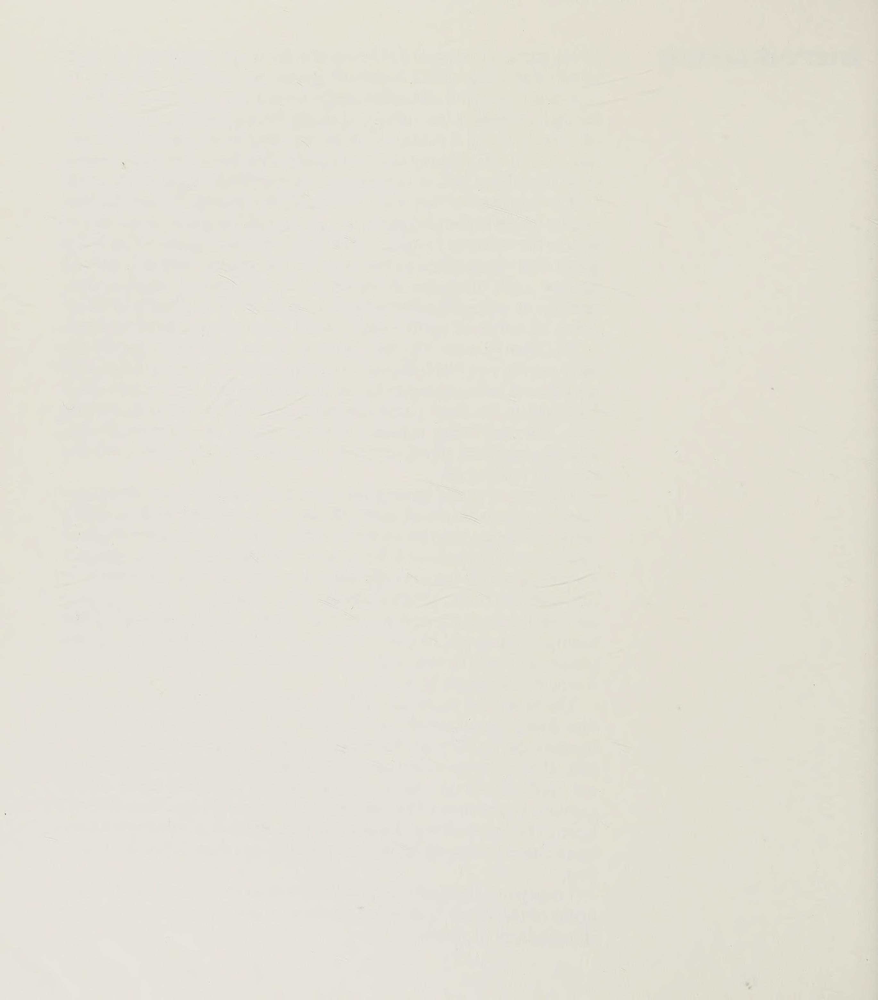
Hình 35.3: Ảnh minh họa (trang 18)Figure 35.3: Plate from page 18
TÌM KIẾM TƯƠNG LAI Đôi khi tôi được hỏi về tầm nhìn của tôi về tương lai của Inner Game. Trò chơi này đã diễn ra tốt đẹp trước khi tôi sinh ra và sẽ tiếp tục tốt đẹp sau khi tôi chết. Tôi không có tầm nhìn về nó; nó có tầm nhìn riêng của nó. Tôi cảm thấy mình thật may mắn khi có cơ hội được chứng kiến và tận hưởng nó. Về Inner Game với chữ in hoa, tức là sự phát triển và ứng dụng các phương pháp và nguyên tắc được trình bày trong các cuốn sách Inner Game, tôi tin rằng chúng sẽ ngày càng trở nên quan trọng hơn trong thế kỷ tới. Tôi thành thật tin rằng trong vài trăm năm qua, nhân loại đã quá mải mê vượt qua những thách thức bên ngoài đến nỗi nhu cầu thiết yếu là tập trung vào những thách thức bên trong đã bị bỏ qua. Trong thể thao, tôi muốn thấy các chuyên gia giảng dạy của tất cả các môn thể thao trở nên có năng lực như nhau trong cả hai lĩnh vực—có thể hướng dẫn sự phát triển cả kỹ năng bên ngoài lẫn bên trong của học sinh. Khi họ làm như vậy, phẩm giá cao hơn sẽ đến với nghề nghiệp của họ cũng như đối với những người chơi thể thao. Tôi tin rằng các lĩnh vực kinh doanh, y tế, giáo dục và quan hệ con người sẽ phát triển dựa trên sự hiểu biết về sự phát triển con người và những kỹ năng bên trong mà chúng yêu cầu. Chúng ta sẽ trở thành những người học tốt hơn và những người suy nghĩ độc lập hơn. Nói tóm lại, tôi tin rằng chúng ta vẫn chỉ đang ở giai đoạn đầu của một quá trình tái cân bằng sâu sắc và cần thiết lâu dài giữa bên ngoài và bên trong. Đây không phải là chủ nghĩa tôi. Đó là một quá trình tự khám phá, đóng góp một cách tự nhiên cho tổng thể khi chúng ta học cách đóng góp cơ bản cho chính mình.
Sometimes I am asked about my vision for the future of the inner game. This game has been going on well before I was born and will go on well after I die. It is not for me to have a vision for it; it has its own vision. I feel fortunate enough to have the chance to witness and enjoy it. Regarding the Inner Game with capital letters, i.e., the development and applications of the methods and principles articulated in the Inner Game books, I believe they will become more and more important during the next century. I honestly believe that during the past few hundred years, mankind has been so absorbed with overcoming external challenges that the essential need to focus on inner challenges has been neglected. In sports, I would like to see teaching professionals of all sports become equally competent in both domains—able to guide the development of both the external and the inner skills of their students. As they do so, a greater dignity will come to their profession as well as to those who play sports. I believe the areas of business, health, education and human relationships will evolve in the understanding of human development and the inner skills they require. We will become better learners and more independent thinkers. In short, I believe we are still just at the beginning of a profound and long-needed rebalancing process between outer and inner. This is not me-ism. It is a process of self-discovery that naturally makes its own contribution to the whole as we learn to make the basic contribution to ourselves.